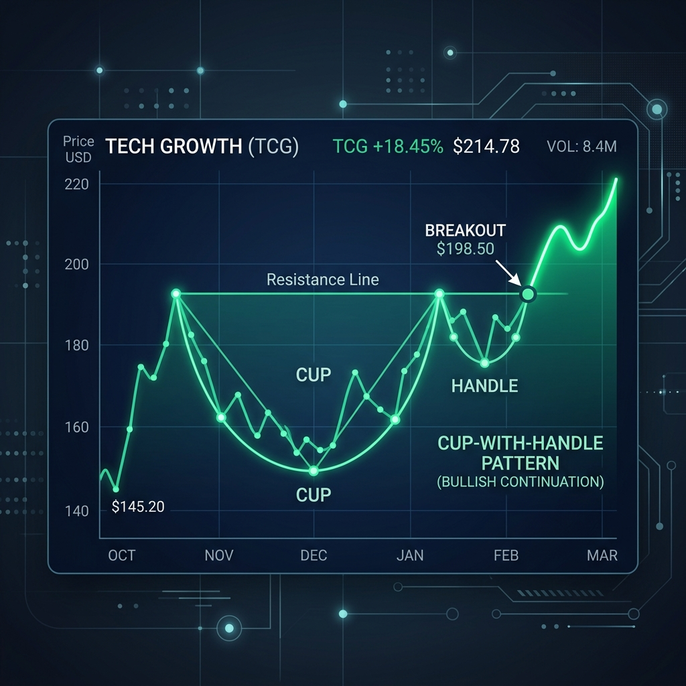
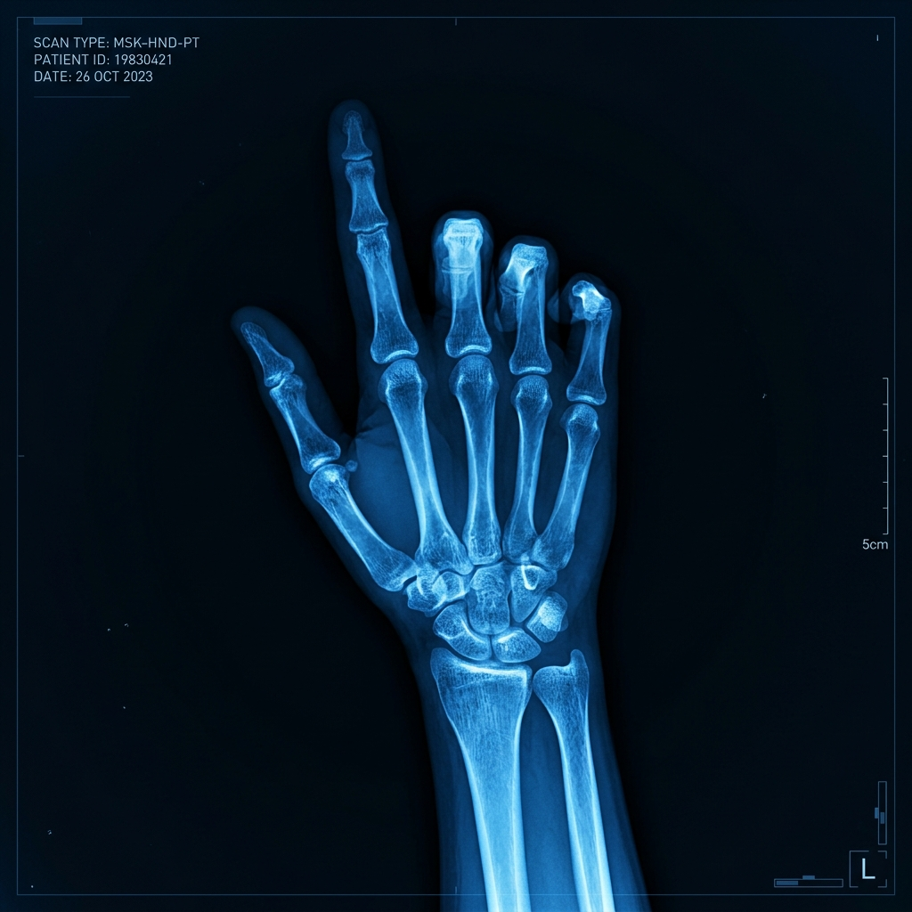

How to Make Money in Stocks
Chương 1: Những Bí Quyết Lựa Chọn Cổ Phiếu Lớn Nhất
(The Greatest Stock-Picking Secrets)
Những Bí Quyết Lựa Chọn Cổ Phiếu Lớn Nhất
Ước tính thời gian đọc: 45 phút (chế độ DEEP) · Độ khó: Trung bình · Khái niệm chính: Tiền lệ lịch sử, Quy luật Cung Cầu, Tích luỹ thể chế, Dấu chân dòng tiền
Sơ đồ Tổng quan
Tóm tắt cấu trúc
Tóm tắt trong một câu: Bằng việc nghiên cứu 100 siêu cổ phiếu từ 1880-2008, William O'Neil chứng minh rằng mọi cổ phiếu thắng lớn nhất lịch sử đều có chung các đặc trưng tài chính cơ bản và mẫu hình kỹ thuật lặp lại, bắt nguồn từ quy luật cung cầu và bản tính con người.
Bối cảnh đặt ra (The Setup): Hầu hết nhà đầu tư cá nhân mua cổ phiếu dựa trên cảm xúc, tin đồn hoặc ý kiến chủ quan của người khác mà không có bất kỳ bộ quy tắc lịch sử nào để nhận biết thế nào là một doanh nghiệp chuẩn bị bước vào chu kỳ tăng giá mạnh.
Luận điểm cốt lõi (The Argument): Thị trường chứng khoán luôn vận hành theo các tiền lệ lịch sử. Những mẫu hình tạo nên siêu cổ phiếu trong quá khứ sẽ liên tục lặp lại trong tương lai vì tâm lý con người (tham lam, sợ hãi) và quy luật cung cầu là bất biến.
Bằng chứng hỗ trợ (The Evidence): Tập dữ liệu 100 cổ phiếu thắng lớn nhất lịch sử nước Mỹ từ năm 1880 đến 2008 (ví dụ: Bethlehem Steel năm 1914 tăng 1479%, Xerox năm 1963 tăng 1201%, hay Apple năm 2004 tăng 1418%) cho thấy tất cả đều xuất phát từ các cấu trúc giá tích luỹ tương tự nhau trước khi bứt phá.
Hệ quả thực tế (The Implications): Nhà đầu tư không cần dự đoán thị trường một cách mù quáng. Thay vào đó, hãy đóng vai trò như một bác sĩ đọc phim X-quang, phân tích sự thay đổi về giá và khối lượng giao dịch trên biểu đồ để xác định thời điểm mua tối ưu.
Điểm tranh luận (The Controversy): Giả thuyết Thị trường Hiệu quả (EMH) của giới học thuật cho rằng không thể chiến thắng thị trường bằng cách nghiên cứu dữ liệu lịch sử giá. O'Neil kịch liệt phản đối và chỉ ra các nhà đầu tư chuyên nghiệp hàng đầu thế giới đều sử dụng biểu đồ như một công cụ thiết yếu để kiểm tra dòng tiền.
Liên kết cấu trúc (The Connection): Chương 1 đặt nền móng triết lý cho toàn bộ cuốn sách. Nó mở đường cho Chương 2 (Hướng dẫn đọc biểu đồ như chuyên nghiệp) và các chương tiếp theo giải thích 7 chữ cái trong hệ thống CAN SLIM.
Ý tưởng cốt lõi
Bài học chủ chốt
Cách áp dụng (Apply): Đối chiếu danh mục theo dõi hiện tại với dữ liệu 100 siêu cổ phiếu lịch sử để đánh giá xem cổ phiếu của bạn có các yếu tố thành công tương tự hay không.
Lưu ý (Caveat): Mô hình giá và khối lượng sẽ giữ nguyên cấu trúc, nhưng các nhóm ngành dẫn dắt và công nghệ cốt lõi sẽ luôn thay đổi theo chu kỳ kinh tế mới.
Cách áp dụng (Apply): Quan sát hành vi bóp nghẹt biên độ giá kèm cạn kiệt thanh khoản, sau đó là điểm bứt phá (breakout) có khối lượng tăng vọt ít nhất 40-50% trên biểu đồ tuần.
Lưu ý (Caveat): Trong các thị trường thanh khoản thấp hoặc cổ phiếu vốn hóa siêu nhỏ (penny), biểu đồ khối lượng có thể dễ dàng bị thao túng bởi các đội nhóm nhỏ.
Cách áp dụng (Apply): Kiểm tra vị thế kỹ thuật của cổ phiếu trên biểu đồ tuần trước khi mua. Không bao giờ mua một cổ phiếu đã tăng vượt xa quá 5% so với điểm bứt phá nền giá (Pivot Point).
Lưu ý (Caveat): Biểu đồ chỉ cho ta thời điểm (timing) và điểm quản lý rủi ro tốt, nó phải được kết hợp với các yếu tố tăng trưởng nội tại của doanh nghiệp để đạt kết quả tối ưu.
Số liệu thống kê
Bối cảnh nền tảng
1. Thế giới quan của Tác giả (Author's Lens)
William O'Neil là một nhà đầu tư thực chiến xuất sắc hơn là một nhà lý thuyết. Ông sở hữu công ty dữ liệu chứng khoán lớn và tin vào sự chính xác của các bằng chứng thực nghiệm lịch sử thay vì các học thuyết hàn lâm.
2. Bối cảnh Thời điểm Viết (Historical Moment)
Phiên bản thứ 4 (2009) được hoàn thiện ngay sau cuộc Đại suy thoái 2008. O'Neil muốn sử dụng tập dữ liệu 100 siêu cổ phiếu lịch sử để chứng minh rằng, bất chấp những đợt sụp đổ kinh hoàng nhất, thị trường chứng khoán Hoa Kỳ luôn phục hồi và tiếp tục sinh ra những cơ hội làm giàu khổng lồ.
3. Dòng máu Trí tuệ (Intellectual Lineage)
Phương pháp của ông kế thừa trực tiếp tư duy giao dịch theo xu hướng và quản trị rủi ro của Jesse Livermore (Pivot Points) và triết lý phân tích hành vi Cung-Cầu của Richard Wyckoff.
4. Tiến trình Phát triển đến năm 2026 (Evolution of Ideas)
Trong thời đại giao dịch tần suất cao (HFT) và thuật toán AI như hiện nay, các nền giá biểu đồ có độ nhiễu cực cao và nhiều đợt rũ bỏ (shakeout) khốc liệt hơn. Tuy nhiên, nguyên lý cơ bản về tích lũy dòng tiền lớn vẫn không hề thay đổi.
Trích dẫn đắt giá
"Right up front in this latest revised edition, you’ll see 100 charts of the greatest winners from 1880 through 2008. Study them carefully. You’ll discover secret insights into how these companies set the stage for their spectacular price increases."
— William O'Neil, lời khuyên mở đầu Chương 1. Ch 1 · p. 378
"To succeed you need to learn sound, historically proven buy rules plus sell rules."
— William O'Neil, luận điểm về tầm quan trọng của hệ thống quy tắc. Ch 1 · p. 381
Mô hình tư duy
Tiền Lệ Lịch Sử & Sự Lặp Lại Của Thị Trường (Historical Precedents)
- Khi phân tích chu kỳ thị trường chung để tìm kiếm thời điểm bắt đầu của một xu hướng tăng giá mới (Bull Market).
- Khi xây dựng danh sách theo dõi (Watchlist) và tìm kiếm các cổ phiếu dẫn đầu ngành công nghiệp mới nổi.
- Dùng làm hệ quy chiếu chuẩn để so sánh cấu trúc tích luỹ giá hiện tại có đạt yêu cầu hay không.
- Bẫy Quá Khớp (Overfitting): Cố ép biểu đồ hiện tại vào một mẫu hình lý thuyết trong quá khứ dù bối cảnh vĩ mô và dòng tiền đã thay đổi.
- Sự Nhiễu Loạn Từ Giao Dịch Thuật Toán: Trong thị trường hiện đại (2026), các robot giao dịch có thể tạo ra các điểm breakout giả để quét cắt lỗ của nhà đầu tư cá nhân trước khi thực sự tăng giá.
Phân tích chuyên sâu
1. Tâm lý Đám đông phản ánh qua Biểu đồ
Thị trường chứng khoán là một đấu trường đấu giá khổng lồ được vận hành bởi cảm xúc con người. Lòng tham (khi giá tăng) và sự sợ hãi (khi giá giảm) luôn diễn ra theo cùng một quy luật. Do đó, các nền giá tích luỹ và phân phối có hình dạng hình học trên biểu đồ vô cùng giống nhau qua các thế kỷ.
2. Quy luật Cung & Cầu là Động lực Duy nhất
Giá cổ phiếu tăng mạnh chỉ khi lực Cầu vượt quá lực Cung. Khi các định chế tài chính lớn mua gom một số lượng lớn cổ phiếu, họ bắt buộc phải để lại dấu chân kỹ thuật: biên độ dao động giá thu hẹp dần (tightness) và khối lượng giao dịch cạn kiệt (volume dry-up) vì lượng hàng trôi nổi ngoài thị trường đã được kiểm soát.
3. Khối lượng Giao dịch - Dấu chân Dòng tiền
O'Neil nhấn mạnh vai trò của Khối lượng (Volume) làm thước đo sự đồng thuận của thị trường. Mọi hành động giá tăng mà không đi kèm với khối lượng lớn (volume spike) đều là giả tạo (bull trap). Ngược lại, khối lượng cạn kiệt tại vùng handle chứng minh lực bán đã hoàn toàn kiệt quệ.
4. Sự kết hợp Cơ bản và Kỹ thuật
Tác giả không khuyến khích việc đầu cơ thuần tuý kỹ thuật hay đầu tư mù quáng theo báo cáo tài chính tĩnh. Phải kết hợp cả hai: Yếu tố cơ bản (Sales/EPS tăng vọt) để tìm ra Cổ phiếu nào có tiềm năng; Biểu đồ kỹ thuật (Pivot Point) để biết chính xác Khi nào mua an toàn nhất.
Đánh giá chứng cứ
- Tập mẫu kéo dài 128 năm, trải qua rất nhiều thời kỳ suy thoái kinh tế, chiến tranh, lạm phát và bong bóng công nghệ.
- Hệ thống CAN SLIM dựa trên tập dữ liệu này đã được chứng thực thực tế bởi tỷ suất sinh lời vượt trội của William O'Neil và nhiều học trò nổi tiếng của ông tại các cuộc thi đầu tư uy tín.
- Survivorship Bias (Thiên lệch kẻ sống sót): Tập dữ liệu chỉ lọc ra những cổ phiếu thành công rực rỡ cuối cùng. Nó không nghiên cứu những cổ phiếu cũng vẽ mô hình tương tự nhưng sau đó bị gãy đổ hoặc thất bại hoàn toàn.
- Sự khác biệt lịch sử: Các cổ phiếu thời kỳ đầu (1880-1920) giao dịch trong điều kiện thanh khoản vô cùng thấp, không có các quy định kiểm soát thị trường hiện đại và hành vi giao dịch rất khác biệt.
Góc nhìn đối lập
📈 Quan điểm O'Neil: Trường phái Biểu đồ (Chartists)
- Cốt lõi: Biểu đồ phản ánh hành vi thực tế của lực Cung và lực Cầu trên thị trường đấu giá. Nó ghi lại "dấu chân dòng tiền" của các tổ chức lớn.
- Cơ sở: Việc mua gom hàng chục triệu cổ phiếu của các quỹ tương hỗ hay quỹ hưu trí là một hành động vật lý bắt buộc phải làm thay đổi giá và khối lượng giao dịch.
- Quan niệm: Phủ nhận biểu đồ giống như việc bác sĩ thực hiện phẫu thuật mà không thèm xem phim chụp X-quang của bệnh nhân.
🏛️ Quan điểm Học thuật: Giả thuyết Thị trường Hiệu quả (EMH)
- Cốt lõi: Giả thuyết thị trường hiệu quả dạng yếu (Weak EMH) khẳng định rằng mọi thông tin lịch sử về giá và khối lượng giao dịch đã được phản ánh hoàn toàn vào giá hiện tại.
- Cơ sở: Các bước giá di chuyển hoàn toàn ngẫu nhiên (Random Walk Theory). Việc vẽ các đường hỗ trợ, kháng cự hay tìm mẫu hình chiếc cốc chỉ là hành vi gán ghép chủ quan.
- Quan niệm: Nhà đầu tư không thể đạt được tỷ suất sinh lời vượt trội dài hạn bằng cách phân tích kỹ thuật hoặc đọc biểu đồ quá khứ.
Rủi ro và phản biện
1. Bẫy Quá Khớp & Rập Khuôn Mẫu Hình
Nhà đầu tư cá nhân thường bị mắc kẹt vào việc "nhìn thấy những gì mình muốn thấy", cố ép các biểu đồ lỏng lẻo, biến động mạnh vào mẫu hình chiếc cốc tay cầm hoàn hảo. Việc rập khuôn máy móc này dẫn đến mua phải các cổ phiếu yếu, thiếu nền tảng cơ bản cực mạnh.
2. Rung lắc mạnh từ Giao dịch Thuật toán
Trong kỷ nguyên hiện đại, sự bùng nổ của các quỹ ETF và giao dịch thụ động (passive investing) tạo ra các biến động quét thanh khoản cực lớn. Các điểm breakout dễ thất bại hơn và tạo ra các bẫy đột phá giả (bull traps) trước khi đi vào xu hướng chính.
3. Kiệt sức vì Quét Biểu đồ (Burnout)
Việc theo dõi liên tục hàng trăm mã cổ phiếu mỗi ngày để tìm mẫu hình biểu đồ có thể gây ra trạng thái quá tải thông tin (information overload) và kiệt sức tâm lý. Việc này dẫn đến hành vi giao dịch quá nhiều (overtrading) và mất kiểm soát cảm xúc.
4. Giải pháp Quản trị Rủi ro Tối ưu
Luôn duy trì kỷ luật cắt lỗ tuyệt đối ở mức 7% - 8% so với giá mua mà không có bất kỳ ngoại lệ nào để phòng ngừa rủi ro đột phá giả. Đồng thời, chỉ tập trung giao dịch từ 3 đến 5 cổ phiếu mạnh nhất có nền giá tích lũy kéo dài và cực kỳ chặt chẽ.
Sơ đồ khái niệm
Kiểm tra Kiến thức trước khi đi tiếp:
- ✓ Bạn đã hiểu rõ rằng giá cổ phiếu chỉ tăng mạnh khi lực Cầu vượt hẳn lực Cung?
- ✓ Bạn đã chấp nhận nguyên lý: Thị trường vận hành theo chu kỳ và lịch sử có tính lặp lại vì tâm lý đám đông không đổi?
- ✓ Bạn đã sẵn sàng học cách đọc biểu đồ kỹ thuật như một "phim X-quang" thay vì chỉ xem bảng giá điện tử?
Hướng dẫn thực hành
- Bước 1 (Nghiên cứu): Xem xét kỹ danh sách 100 biểu đồ cổ phiếu thắng lớn trong lịch sử ở đầu sách. Phân tích hình dáng chung của nền giá tích luỹ trước khi giá bứt phá tăng vọt.
- Bước 2 (Đối chiếu): Chọn 5-10 cổ phiếu hàng đầu trên thị trường hiện tại. Tải biểu đồ tuần của chúng và đặt cạnh biểu đồ của các siêu cổ phiếu lịch sử (ví dụ: Apple năm 2004, Cisco năm 1990) để so sánh cấu trúc.
- Bước 3 (Ghi chép hành vi): Ghi chép chi tiết hành vi khối lượng tại vùng đáy của nền giá (có cạn kiệt không?) và khối lượng tại điểm bứt phá (khối lượng có tăng vọt ít nhất 40-50% không?).
- Bước 4 (Quản trị sai số): Thiết lập kỷ luật bảo vệ vốn tuyệt đối: Nếu cổ phiếu mua dựa trên mô hình giá lịch sử đi ngược lại dự đoán, bắt buộc cắt lỗ ngay lập tức ở mức tối đa 7% - 8%.
Chiến lược học tập
📅 Lịch trình Lặp lại ngắt quãng (Spaced Repetition)
Đọc và nghiên cứu kỹ danh sách 100 cổ phiếu chiến thắng vĩ đại ở Chương 1. Ghi lại các mã tăng trưởng tiêu biểu nhất.
Xem lại các biểu đồ lịch sử này mà không nhìn chú thích giá và khối lượng để tự kiểm tra xem có nhận ra điểm bứt phá hay không.
Quét toàn bộ thị trường để tìm các cổ phiếu hiện tại đang vẽ mô hình giá tương tự như các tiền lệ lịch sử.
💡 Mỏ neo Trí nhớ (Memory Anchors)
Hãy coi biểu đồ cổ phiếu giống như phim chụp X-quang của bác sĩ. Đừng bao giờ bỏ tiền mua một cổ phiếu mà chưa xem phim chụp để kiểm tra "sức khỏe" của nó.
Nhớ lại cảm giác tiếc nuối khi bỏ lỡ một siêu cổ phiếu tăng giá mạnh trong quá khứ. Cảm giác đó sẽ kích hoạt động lực thúc đẩy bạn học cách nhận diện mô hình giá bứt phá sớm.
Hành động cuối cùng
-
Lưu trữ hoặc in ấn biểu đồ tuần của ít nhất 5 siêu cổ phiếu lịch sửChọn các mã tiêu biểu như Apple (2004), Google (2004), Microsoft (1986) và Cisco (1990). Nghiên cứu chúng hàng tuần để rèn luyện thói quen thị giác của bạn về các nền giá tích luỹ chuẩn mực.
-
Cài đặt công cụ phân tích kỹ thuật cá nhân (TradingView, FireAnt, v.v.)Thiết lập biểu đồ tuần và thêm đường trung bình động 10 tuần (tương đương đường 50 ngày trên biểu đồ ngày) và khối lượng giao dịch. Đây là cấu hình chuẩn mà William O'Neil sử dụng để đọc dòng tiền tổ chức.
-
Viết quy tắc cắt lỗ 7% - 8% và dán cạnh màn hình giao dịch của bạnCam kết tuyệt đối cắt lỗ ngay khi giá đóng cửa vi phạm mức này so với điểm mua, không có bất kỳ ngoại lệ nào. Đây là tấm khiên bảo vệ vốn giúp bạn sống sót qua các cú đột phá giả (false breakouts).
How to Make Money in Stocks
Chương 2: Hướng Dẫn Đọc Biểu Đồ Như Chuyên Nghiệp để Cải Thiện Lựa Chọn Cổ Phiếu và Thời Điểm Giao Dịch
(How to Read Charts Like a Pro and Improve Your Selection and Timing)

Hướng Dẫn Đọc Biểu Đồ Như Chuyên Nghiệp
Ước tính thời gian đọc: 60+ phút (chế độ DEEP+) · Độ khó: Khá - Khó · Khái niệm chính: Mẫu hình Giá, Điểm Pivot, Lượng Cung Lơ Lửng (Overhead Supply), Rũ Bỏ (Shakeout), Sức Mạnh Tương Đối (Relative Strength Line)
Sơ đồ các Nền giá & Điểm Pivot
Đọc hiểu Hành vi Giá và Khối lượng
Tóm tắt cấu trúc
Tóm tắt trong một câu: Chương 2 cung cấp một hệ thống phân tích biểu đồ kỹ thuật dựa trên quy luật cung cầu thực tế, hướng dẫn nhà đầu tư cách đọc hiểu các mô hình tích luỹ kiến tạo (như Cốc tay cầm, Hai đáy) để xác định điểm mua Pivot có xác suất chiến thắng cao nhất.
Bối cảnh đặt ra (The Setup): Hầu hết nhà đầu tư thất bại vì mua cổ phiếu ở vị thế quá xa nền giá tích luỹ (extended) hoặc mua các cổ phiếu có biểu đồ bị lỗi, lỏng lẻo, khiến họ dễ bị quét sạch vốn khi cổ phiếu điều chỉnh thông thường.
Luận điểm cốt lõi (The Argument): Biểu đồ không phải là công cụ tiên tri mà là công cụ chẩn đoán hành vi của dòng tiền tổ chức. Nhà đầu tư thông thái phải chờ đợi sự cạn kiệt nguồn cung trong nền giá và chỉ mua khi có dòng tiền lớn xác nhận bứt phá.
Bằng chứng hỗ trợ (The Evidence): Tác giả sử dụng các trường hợp lịch sử kinh điển như Sea Containers (1975), Microsoft (1986), Cisco (1990) và Apple (2004) để mô tả chi tiết cách các nền giá hình thành chặt chẽ, khối lượng cạn kiệt và cách chúng tăng giá phi mã sau khi bứt phá pivot thành công.
Hệ quả thực tế (The Implications): Nhà đầu tư cần kỷ luật kiên nhẫn đứng ngoài quan sát cho tới khi cổ phiếu đạt điểm mua chuẩn xác. Đồng thời, bất kỳ giao dịch nào đi ngược lại kỳ vọng đều phải được bảo vệ bởi bộ quy tắc cắt lỗ tự động 7% - 8% mà không có ngoại lệ.
Điểm tranh luận (The Controversy): Phân tích kỹ thuật truyền thống thường sử dụng các mẫu hình như tam giác, pennant hay đầu vai ngược. O'Neil kịch liệt phản đối và chứng minh qua nghiên cứu của mình rằng các mẫu hình đó cực kỳ không đáng tin cậy và có xác suất thất bại rất cao.
Liên kết cấu trúc (The Connection): Chương này liên kết trực tiếp lý thuyết tiền lệ của Chương 1 với hành động thực tế. Nó là chìa khóa kỹ thuật để kiểm chứng các yếu tố tài chính cơ bản của hệ thống CAN SLIM trong các chương sau.
Ý tưởng cốt lõi
Bài học chủ chốt
Cách áp dụng (Apply): Đặt lệnh mua ngay khi giá vượt qua đỉnh của tay cầm (đối với cốc tay cầm) hoặc đỉnh giữa chữ W (đối với hai đáy) đi kèm khối lượng lớn.
Lưu ý (Caveat): Không được mua đuổi khi giá đã tăng vượt quá 5% - 10% so với điểm Pivot, vì bạn sẽ rất dễ dính cắt lỗ khi cổ phiếu điều chỉnh kỹ thuật thông thường.
Cách áp dụng (Apply): Tìm kiếm các tuần giao dịch có giá đóng cửa biến động cực kỳ hẹp (tightness) đi kèm khối lượng sụt giảm sâu dưới trung bình ở đáy cốc hoặc vùng tay cầm.
Lưu ý (Caveat): Nếu nền giá quá rộng và biến động lỏng lẻo (wide and loose), đó là dấu hiệu của sự thiếu đồng thuận từ các tổ chức lớn và có xác suất thất bại cao.
Cách áp dụng (Apply): Yêu cầu khối lượng trong ngày bứt phá phải tăng ít nhất 40% đến 50% so với trung bình hàng ngày (đối với siêu cổ phiếu lớn có thể gấp 200% - 1,000%).
Lưu ý (Caveat): Đột phá giá với khối lượng thấp hoặc trung bình có nguy cơ là đột phá giả (bull trap), bạn nên tránh tham gia.
Cách áp dụng (Apply): Ưu tiên mua các cổ phiếu bứt phá đỉnh lịch sử mọi thời đại (All-Time High), vì khi đó cổ phiếu không còn bất kỳ lượng cung lơ lửng nào cản trở phía trên.
Lưu ý (Caveat): Các vùng kháng cự/kẹt hàng cũ tồn tại trên 2 năm sẽ ít gây ảnh hưởng tâm lý và lực cản hơn so với vùng kẹt hàng mới xuất hiện gần đây.
Trích dẫn đắt giá
"Would you allow a doctor to open you up and perform heart surgery if he had not utilized the critical necessary tools? Of course not. ... However, many investors do exactly that when they buy and sell stocks without first consulting stock charts."
— Chẩn đoán bằng công cụ. Ch 2 · p. 919
"This proves that opinions and feelings are frequently wrong, but markets rarely are."
— Bản chất khách quan của thị trường. Ch 2 · p. 1277
"It isn’t that bases, breakouts, or the method isn’t working anymore; it’s that the timing and the stocks are simply all wrong."
— Về tính hiệu quả chu kỳ. Ch 2 · p. 1392
Phim Chụp X-Quang Đo Lường Sức Khỏe Cổ Phiếu

Mô hình: "Phim Chụp X-Quang" Đo Lường Sức Khỏe Cổ Phiếu
- Sử dụng biểu đồ tuần để chẩn đoán xem giá đóng cửa có chặt chẽ (tightness) hay không.
- Theo dõi khối lượng giao dịch để kiểm tra hành vi tích lũy (volume dry-up tại đáy và volume spike tại breakout).
- Phim chụp bị nhiễu do bối cảnh thị trường chung xấu (Bear Market làm méo mó các mô hình bứt phá).
- Đọc sai "triệu chứng" do sự nôn nóng hoặc cố ép biểu đồ theo thiên kiến cá nhân.
Điểm Xoay Jesse Livermore (Pivot Point)
Mô hình: Điểm Xoay Jesse Livermore (Pivot Point / Line of Least Resistance)
- Xác định điểm Pivot: Đối với mô hình cốc tay cầm, điểm Pivot nằm ở đỉnh cao nhất của tay cầm (thường thấp hơn đỉnh cốc 5-10%).
- Nguyên tắc Chờ đợi (Wait Rule): Chỉ mua khi giá thực sự chạm hoặc vượt qua điểm Pivot. Mua quá sớm sẽ chịu rủi ro nền giá bị gãy.
- Không mua đuổi: Không mua khi giá đã vượt quá 5% so với điểm Pivot ban đầu.
- Mua đuổi giá (Chasing): Tâm lý sợ bỏ lỡ cơ hội (FOMO) thúc đẩy nhà đầu tư mua khi giá đã tăng xa pivot. Khi giá điều chỉnh tự nhiên, họ bị chạm dừng lỗ 8% và buộc phải bán ra.
- Mua quá sớm (Premature Buying): Cố gắng mua ở đáy cốc để được giá rẻ. Cổ phiếu có thể đi ngang hàng tháng trời hoặc giảm sâu hơn.
Lượng Cung Lơ Lửng Trên Đầu (Overhead Supply)
Mô hình: Lượng Cung Lơ Lửng Trên Đầu (Overhead Supply)
- Không mua cổ phiếu từ đáy đi lên: Tránh xa các cổ phiếu đang hồi phục từ xu hướng giảm mạnh vì chúng sẽ liên tục gặp các vùng kháng cự xả hàng hòa vốn.
- Mua cổ phiếu vượt đỉnh thời đại (All-Time High): Những cổ phiếu này hoàn toàn giải phóng lực cung lơ lửng, không có ai bị kẹt hàng phía trên. Đường tăng giá phía trước là đường có ít kháng cự nhất.
- Các vùng kẹt hàng cũ trên 2 năm sẽ tạo ra ít lực cản hơn. Nhiều nhà đầu tư cũ đã cắt lỗ, cơ cấu hoặc quên đi khoản đầu tư đó.
- Các vùng kẹt hàng mới tạo ra trong vòng 6 tháng gần nhất sẽ có áp lực cung lơ lửng vô cùng mãnh liệt.
Mô hình Cốc Tay Cầm (Cup with Handle)
🥛 Cấu Trúc Phần Cốc (The Cup)
- Xu hướng tăng trước đó (Prior Uptrend): Phải có xu hướng tăng tối thiểu 30% trước đó đi kèm khối lượng giao dịch gia tăng rõ rệt để chứng tỏ có dòng tiền lớn đã bảo trợ.
- Thời gian hình thành (Duration): Kéo dài từ 7 tuần đến 65 tuần, thông thường nhất là từ 3 đến 6 tháng.
- Độ sâu điều chỉnh (Depth): Thông thường từ 12% đến 33%. Trong thị trường gấu hoặc với cổ phiếu cực kỳ biến động, độ sâu có thể lên tới 40% - 50%.
- Hình dáng đáy cốc: Phải có hình dạng chữ "U" bo tròn thay vì chữ "V". Đáy chữ "U" giúp kéo dài thời gian để chán nản hóa và rũ bỏ hoàn toàn những nhà đầu tư yếu ớt.
☕ Cấu Trúc Phần Tay Cầm (The Handle)
- Thời gian hình thành: Phải kéo dài từ 1 đến 2 tuần trở lên.
- Độ sâu điều chỉnh: Chỉ được phép điều chỉnh từ 8% đến 12% so với đỉnh của tay cầm trong thị trường tăng giá (bull market).
- Vị trí xuất hiện: Phải nằm ở nửa trên của tổng thể nền giá cốc và phải nằm phía trên đường trung bình động 10 tuần (50 ngày).
- Hành vi Giá & Khối lượng: Giá của tay cầm phải hướng xuống (shakeout) vào những ngày cuối cùng trước khi bứt phá. Khối lượng giao dịch phải cạn kiệt rõ rệt (Volume Dry-up).
- Điểm mua Pivot: Được xác định bởi mức giá cao nhất của vùng tay cầm này.
Mô hình Hai Đáy & Nền Giá Phẳng
W Mô Hình Hai Đáy (Double Bottom)
- Hình dáng: Có hình dạng giống như chữ "W". Thời gian và độ sâu tương tự mô hình cốc tay cầm.
- Yêu cầu cốt lõi (Undercut): Đáy thứ hai (chân phải chữ W) bắt buộc phải giảm sâu hơn (xuyên thủng) đáy thứ nhất (chân trái chữ W) từ 1 đến 2 điểm để tạo ra một đợt rũ bỏ (shakeout) cuối cùng trước khi tăng giá.
- Điểm mua Pivot: Được xác định bởi đỉnh giữa của chữ W. Nếu mô hình có tay cầm ở bên phải chữ W, thì điểm Pivot sẽ lấy theo đỉnh của tay cầm đó.
- Lưu ý lỗi: Nếu đáy thứ hai không xuyên thủng đáy thứ nhất, mô hình sẽ rất dễ thất bại (faulty "almost" double bottom).
➖ Nền Giá Phẳng (Flat Base)
- Bối cảnh xuất hiện: Là nền giá giai đoạn 2 (second-stage base), hình thành sau khi cổ phiếu đã tăng ít nhất 20% trở lên từ một nền giá Cup hoặc Double Bottom trước đó.
- Thời gian hình thành: Đi ngang chặt chẽ theo chiều ngang trong tối thiểu từ 5 đến 6 tuần.
- Độ sâu điều chỉnh: Rất nông, không được điều chỉnh sâu quá 10% đến 15% từ đỉnh nền giá phẳng.
- Điểm mua Pivot: Mức giá cao nhất của vùng nền phẳng đó.
- Công dụng: Cung cấp cơ hội mua gia tăng hoặc cơ hội thứ hai cho những nhà đầu tư đã bỏ lỡ điểm bứt phá đầu tiên của cổ phiếu.
Hộp Vuông, Lá Cờ Thắt Chặt, Nền Trên Nền & Hướng Lên
📦 Hộp Vuông (Square Box)
Thường kéo dài từ 4 đến 7 tuần sau khi bứt phá nền giá trước đó. Biên độ điều chỉnh nông (chỉ từ 10% đến 15%) và có hình dáng vuông vức, chặt chẽ. Điểm mua Pivot được xác định bằng đỉnh của hộp.
🚩 Lá Cờ Cao Thắt Chặt (High, Tight Flag)
Mẫu hình siêu mạnh nhưng hiếm gặp và rủi ro cao. Cổ phiếu tăng vọt 100% đến 120% trong 4-8 tuần, sau đó điều chỉnh đi ngang 10% đến 25% trong 3-5 tuần trước khi bứt phá tiếp.
🔝 Nền Trên Nền (Base on Top of a Base)
Cổ phiếu bứt phá nhưng gặp thị trường chung sụp đổ nên quay đầu tạo nền giá thứ hai ngay trên nền giá cũ. Khi thị trường gấu kết thúc, cổ phiếu này sẽ là mã đầu tiên bứt phá và tăng phi mã giống như lò xo bị nén.
📈 Nền Giá Hướng Lên (Ascending Base)
Hình thành ở giữa sóng tăng mạnh của cổ phiếu. Bao gồm 3 đợt điều chỉnh kéo dài từ 10% đến 20% với đáy sau cao hơn đáy trước (mỗi đợt sụt giảm thường do thị trường chung điều chỉnh ngắn hạn).
Các Nền Giá và Tay Cầm Bị Lỗi Cần Tránh
⚠️ Tay Cầm Nêm Hướng Lên (Wedging Handle)
Tại sao lỗi: Tay cầm bò dần lên trên hoặc đi ngang mà không có nhịp điều chỉnh hướng xuống. Cấu trúc này không tạo ra đợt rũ bỏ (shakeout) cuối cùng để loại bỏ nhà đầu tư yếu. Xác suất thất bại khi đột phá cực kỳ cao. Ch 2 · p. 1003
⚠️ Tay Cầm Nửa Dưới & Dưới MA 10 Tuần
Tại sao lỗi: Tay cầm hình thành ở nửa dưới của cốc hoặc nằm dưới đường trung bình động 10 tuần. Điều này chứng tỏ sức mua quá yếu ớt, lực cầu không đủ để phục hồi cổ phiếu lên mức cao. Ch 2 · p. 1000
⚠️ Nền Giá Quá Rộng & Lỏng Lẻo (Wide & Loose)
Tại sao lỗi: Biên độ giá dao động cực mạnh từ tuần này qua tuần khác, không có sự thắt chặt chặt chẽ. Cổ phiếu liên tục thu hút sự chú ý của công chúng nhưng thiếu đi sự gom hàng có kiểm soát của các tổ chức lớn. Ch 2 · p. 1240
⚠️ Mẫu Hình Chữ V (V-Shape Base)
Tại sao lỗi: Giá sụt giảm mạnh và phục hồi thẳng đứng hình chữ V lên đỉnh mới mà không trải qua quá trình tích luỹ hay có tay cầm kéo dài. Cổ phiếu đi lên thẳng tuột không có nền hỗ trợ, rủi ro sụt giảm trở lại rất cao. Ch 2 · p. 1388
Sử Dụng Đường Relative Strength (RS) Đúng Cách
📈 RS Tại Điểm Đột Phá (Breakout Stage)
- Nguyên lý: Chỉ mua cổ phiếu có đường Relative Strength (RS) dốc lên mạnh mẽ, thể hiện hiệu suất vượt trội hơn hẳn so với thị trường chung (S&P 500).
- Dấu hiệu Siêu cổ phiếu: Trong lúc thị trường chung đang điều chỉnh tạo đáy, đường RS của cổ phiếu đã bứt phá vượt đỉnh trước giá (RS new high before price). Điều này chứng minh sức mạnh nội tại cực lớn.
- Hành động: Mua ngay khi giá bứt phá điểm Pivot và đường RS đang dốc lên hướng tới các mức cao mới. Ch 2 · p. 1330
📉 RS Tại Vùng Quá Mua (Extended Stage)
- Nguyên lý: Tránh xa việc mua đuổi các cổ phiếu có RS cao ngất ngưởng nhưng giá đã tăng quá xa nền giá tích lũy (extended). Lúc này, RS cao chỉ phản ánh động lượng ngắn hạn sắp cạn kiệt.
- Dấu hiệu đạt đỉnh: Khi cổ phiếu đã chạy nước rút và tăng giá kéo dài, đường RS đạt mức cực đại (climax). Đây là thời điểm các quỹ lớn bắt đầu chốt lời.
- Hành động: Cân nhắc bán ra để bảo vệ lợi nhuận khi cổ phiếu đã tăng >20-25% từ điểm Pivot và đường RS có dấu hiệu đi ngang hoặc suy yếu. Ch 2 · p. 1335
Đặc điểm các Nền giá Phony trong Downtrend
CẢNH BÁO TỬ THẦN: TUYỆT ĐỐI KHÔNG MUA BREAKOUT TRONG THỊ TRƯỜNG GẤU!
Nếu bạn đang đọc cuốn sách này vào thời kỳ bắt đầu hoặc giữa của một thị trường gấu (Bear Market), đừng bao giờ kỳ vọng các mẫu hình bứt phá bám theo quy tắc mua sẽ hoạt động. Hầu hết các điểm breakout sẽ hoàn toàn thất bại. Ch 2 · p. 1384
✖️ Đặc điểm Mô hình Lỗi trong Downtrend
- Nền giá biến động quá sâu, rộng và lỏng lẻo.
- Tay cầm hướng lên (wedging) hoặc tay cầm sụt giảm quá sâu (>20-30%).
- Tay cầm nằm ở nửa dưới của cốc hoặc dưới MA 10 tuần.
- Đường RS của cổ phiếu liên tục suy yếu hướng xuống dưới đáy mới.
✔️ Hành động của Nhà đầu tư Thông minh
- Bán ra và giữ tiền mặt: Đứng ngoài thị trường, hạ tỷ trọng đòn bẩy về 0.
- Phân tích lại sai lầm (Post-Analysis): Vẽ lại biểu đồ các giao dịch thua lỗ trong năm để tìm lỗi sai.
- Chuẩn bị danh sách chu kỳ mới: Nghiên cứu các cổ phiếu giữ giá tốt nhất trong downtrend, vì chúng sẽ là các siêu cổ phiếu dẫn đầu khi thị trường phục hồi.
Tính Xác Thực & Cập Nhật Thị Trường Hiện Đại (2026)
- Cấu trúc hình thái học của nền giá (như cốc tay cầm) phản ánh trực tiếp quá trình phân phối của nhỏ lẻ và tích luỹ của tổ chức lớn.
- Hạn chế tối đa thời gian chờ đợi chôn vốn: bứt phá Pivot thường dẫn đến sóng tăng ngay lập tức nếu thị trường ủng hộ.
- Thiên lệch kẻ sống sót (Survivorship Bias): Chỉ nghiên cứu các cổ phiếu đã tăng giá thành công lớn. Rất nhiều cổ phiếu cũng có tay cầm nhưng thất bại ngay sau breakout (false breakouts).
- Không thống kê tỷ lệ breakout thành công/thất bại tổng thể trên toàn bộ thị trường.
Góc Nhìn Đối Lập: Technicals vs EMH vs Quants
📈 O'Neil & Thực Chiến: Quy Luật Cung Cầu Vật Lý
Biểu đồ là sự ghi chép khách quan về giá và khối lượng giao dịch. Sự tích lũy của dòng tiền tổ chức lớn là hành vi vật lý mua gom hàng triệu cổ phiếu, bắt buộc phải để lại dấu vết khối lượng lớn trên biểu đồ mà không thể che giấu được. Phủ nhận điều này là ngu ngốc.
🏛️ Học Thuật & EMH: Bước Đi Ngẫu Nhiên (Random Walk)
Giá cổ phiếu biến động hoàn toàn ngẫu nhiên và phản ánh ngay lập tức mọi thông tin. Việc tìm kiếm các mẫu hình hình học như cốc tay cầm, đĩa có tay cầm chỉ là hành vi gán ghép chủ quan, tự đánh lừa thị giác của con người (Apophenia). Phân tích kỹ thuật không đem lại lợi nhuận vượt trội dài hạn.
Những Cạm Bẫy Khi Đầu Tư Theo Nền Giá
🧠 Bẫy Ảo Giác Thị Giác (Apophenia)
Nhà đầu tư mới thường bắt đầu nhìn thấy "cốc tay cầm" ở khắp mọi nơi, ngay cả trong các biểu đồ lộn xộn, không có xu hướng tăng trước đó, hoặc ở các cổ phiếu thanh khoản thấp. Lỗi này dẫn đến việc mua phải các cổ phiếu rác, không có dòng tiền tổ chức bảo trợ.
🤖 Bẫy Săn Cắt Lỗ Của Thuật Toán
Các quỹ lớn biết rằng nhiều nhà đầu tư cá nhân mua đúng tại điểm breakout Pivot và đặt cắt lỗ ở mức 7% - 8% ngay bên dưới nền giá. Họ có thể tận dụng lợi thế quy mô để bán mạnh ép giá sụt giảm sâu để quét sạch điểm dừng lỗ (shakeout), trước khi đẩy giá tăng thực sự.
😰 Áp Lực Tâm Lý Khi Mua Giá Cao
William O'Neil thừa nhận 95% công chúng sợ hãi không dám mua tại điểm bứt phá vì đó là vùng giá cao nhất mọi thời đại. Việc mua cổ phiếu khi giá có vẻ đắt đỏ đi ngược lại trực giác thông thường của con người, gây ra căng thẳng và lo âu cho nhà giao dịch.
🛡️ Kỷ Luật Thép Để Phòng Ngừa Thất Bại
Không có mô hình biểu đồ nào thắng 100%. Cách duy nhất để chiến thắng dài hạn là: Luôn giới hạn quy mô giao dịch ban đầu, chỉ gia tăng tỷ trọng khi cổ phiếu chứng minh vị thế đúng bằng lợi nhuận, và thực thi cắt lỗ 7% - 8% một cách cơ học, không do dự hay hy vọng.
Mối Liên Kết Khái Niệm Giữa Các Chương
Lộ Trình Khái Niệm Chương 2:
Đọc biểu đồ không nằm độc lập. Nó nhận đầu vào từ tư duy tiền lệ của Chương 1 và làm bộ lọc thời điểm (timing) cho các chỉ số cơ bản của CAN SLIM. Cuối cùng, nó kết hợp với Chương 10 để thực thi việc bán ra bảo vệ lợi nhuận hoặc cắt lỗ cơ học.
Lộ Trình Từng Bước Đọc Đồ Thị Chuyên Nghiệp
- Bước 1 (Học & Nhận diện): Nắm vững các tiêu chuẩn kỹ thuật của mô hình cốc tay cầm, hai đáy và nền giá phẳng (kích thước, độ sâu, thời gian tối thiểu 7-8 tuần).
- Bước 2 (Rèn luyện thị giác): Lấy biểu đồ của 10 cổ phiếu dẫn đầu thị trường trong 3 chu kỳ tăng trưởng gần nhất. Đánh dấu thủ công các điểm Pivot, vùng tay cầm có khối lượng cạn kiệt và ngày bứt phá bùng nổ thanh khoản.
- Bước 3 (Lập kế hoạch): Thiết lập bộ lọc cổ phiếu hàng tuần dựa trên đường xu hướng và Relative Strength line dốc lên. Vẽ sẵn các đường Pivot kháng cự và cài đặt cảnh báo giá tự động (Price Alerts) trên phần mềm đồ thị.
- Bước 4 (Thực hành giao dịch): Chỉ mua khi giá chạm đúng điểm Pivot kèm khối lượng lớn xác nhận. Tuyệt đối tuân thủ quy tắc cắt lỗ cơ học 7% - 8% ngay khi vi phạm để bảo toàn tài khoản.
Phương Pháp Nhận Diện Mẫu Hình Nhanh Chóng
📅 Lịch trình Lặp lại ngắt quãng (Spaced Repetition)
Xem và học thuộc lòng các thông số kỹ thuật của 3 nền giá cốt lõi: cốc tay cầm, hai đáy, nền giá phẳng. Vẽ phác thảo hình học ra giấy.
Mở ngẫu nhiên biểu đồ tuần của 20 mã cổ phiếu lớn và tự động xác định xem chúng có đang ở trong nền giá tích lũy nào không.
Kiểm tra lại danh sách các điểm breakout gần đây trên thị trường để phân tích xem có điểm nào bị lỗi (wedging, lỏng lẻo, cạn vol giả) không.
💡 Mỏ neo Trí nhớ (Memory Anchors)
Hãy nhớ rằng một chiếc cốc quá sâu (>50%) sẽ rất khó để nâng lên. Tương tự, tay cầm phải nằm ở phần nửa trên của cốc, giống như vị trí vật lý thực tế của tay cầm trên một chiếc cốc uống nước thông thường.
Hãy coi biểu đồ là thiết bị GPS dẫn đường. Đi qua một thành phố lạ mà không bật định vị GPS giống như việc mua cổ phiếu tăng trưởng mà không thèm kiểm tra biểu đồ kỹ thuật.
Hành động cuối cùng
-
Thực hiện phân tích hồi quy (Post-Analysis) các giao dịch cũIn ra hoặc lưu lại biểu đồ của tất cả các cổ phiếu bạn đã giao dịch trong 1 năm qua. Đánh dấu chính xác điểm mua/bán của bạn lên biểu đồ tuần, đối chiếu với các nền giá chuẩn để xem bạn đã mua sớm (premature), mua đuổi (extended) hay mua mô hình lỗi hay không.
-
Cài đặt Cảnh báo Giá (Price Alerts) tự động trên đồ thịLọc ra danh sách 5-10 cổ phiếu mạnh nhất đang tích luỹ nền giá. Xác định đường Pivot kháng cự của tay cầm hoặc chữ W và cài đặt cảnh báo tự động khi giá vượt qua điểm này. Cách này giúp bạn kiểm soát tâm lý, tránh nhìn bảng điện liên tục dẫn đến giao dịch sai quy tắc.
-
Tạo bảng tra cứu nhanh (Cheat Sheet) mô hình bứt phá chuẩn mựcTóm tắt các thông số của mô hình Cốc tay cầm (thời gian >=7 tuần, độ sâu 12-33%, tay cầm nằm ở nửa trên và điều chỉnh 8-12%, volume dry-up ở đáy) và mô hình Hai đáy (chân phải undercut chân trái chữ W). Dán cheat sheet này ngay tại bàn làm việc để tham chiếu trước khi đặt lệnh mua.
How to Make Money in Stocks
Chương 3: C = Lợi Nhuận Lớn Trên Mỗi Cổ Phiếu và Tăng Trưởng Doanh Số Quý Hiện Tại
(C = Current Big or Accelerating Quarterly Earnings and Sales per Share)
Lợi Nhuận Lớn Trên Mỗi Cổ Phiếu và Tăng Trưởng Doanh Số
Ước tính thời gian đọc: 45 phút (chế độ DEEP+) · Độ khó: Trung bình · Khái niệm chính: EPS Quý Hiện Tại, Sự Tăng Tốc Lợi Nhuận (EPS Acceleration), Hỗ Trợ Doanh Số (Sales Support), Hai Quý Giảm Tốc (Two-Quarter Deceleration)
Sơ đồ Doanh thu & Lợi nhuận
Đồ thị Tuyến tính vs Đồ thị Logarit
✖️ Đồ Thị Tuyến Tính (Arithmetic Scale)
- Cơ chế: Biểu diễn khoảng cách dựa trên giá trị tuyệt đối (Dollar change). Khoảng cách từ $10 lên $20 bằng hệt khoảng cách từ $20 lên $30.
- Nhược điểm: Bóp méo trực giác về hiệu suất phần trăm. Mức tăng 100% (từ $10 lên $20) trông chỉ bằng mức tăng 50% (từ $20 lên $30).
- Hệ quả: Che giấu sự giảm tốc độ tăng trưởng phần trăm của doanh nghiệp, dễ khiến nhà đầu tư bỏ qua dấu hiệu suy yếu.
✔️ Đồ Thị Logarit (Logarithmic Scale)
- Cơ chế: Biểu diễn khoảng cách dựa trên tỷ lệ phần trăm thay đổi (Percentage change). Một khoảng cách cố định (ví dụ: 1 inch) luôn phản ánh cùng một tỷ lệ phần trăm (ví dụ: +100%).
- Ưu điểm: Giữ nguyên tỷ lệ phần trăm. Mức tăng 100% (từ $10 lên $20) sẽ được vẽ lớn gấp đôi mức tăng 50% (từ $20 lên $30).
- Hệ quả: Giúp nhận diện rõ ràng trạng thái tăng tốc (acceleration) hoặc giảm tốc (deceleration) của lợi nhuận qua các quý.
Tóm tắt cấu trúc
Tóm tắt trong một câu: Chữ cái "C" trong CAN SLIM đặt ra tiêu chuẩn khắt khe rằng siêu cổ phiếu phải có mức tăng trưởng EPS và Doanh số quý gần nhất đạt tối thiểu 25% - 50% so với cùng kỳ năm trước, đồng thời có xu hướng tăng tốc tăng trưởng qua các quý gần đây.
Bối cảnh đặt ra (The Setup): Hầu hết nhà đầu tư cá nhân bị hấp dẫn bởi các cổ phiếu có giá "rẻ" hoặc mua dựa trên câu chuyện tương lai ảo tưởng về lợi nhuận sắp tới, trong khi báo cáo tài chính hiện tại vẫn đang báo lỗ hoặc dậm chân tại chỗ.
Luận điểm cốt lõi (The Argument): Lợi nhuận bùng nổ thực tế ở hiện tại là lý do duy nhất khiến các tổ chức tài chính lớn bỏ ra hàng triệu đô la để mua gom cổ phiếu. Một cổ phiếu không thể tăng giá dài hạn nếu không có bệ đỡ lợi nhuận thực tế hỗ trợ phía dưới.
Bằng chứng hỗ trợ (The Evidence): Thống kê 600 cổ phiếu chiến thắng vĩ đại từ 1952-2001 cho thấy 3/4 số siêu cổ phiếu đều có lợi nhuận tăng trung bình trên 70% ở quý trước khi bứt phá. Những cổ phiếu chưa đạt điều kiện này ngay lập tức chứng tỏ sự bùng nổ 90% ở quý tiếp theo.
Hệ quả thực tế (The Implications): Nhà đầu tư chỉ được phép mua các doanh nghiệp xuất sắc có mức tăng trưởng EPS >= 25% kèm tăng trưởng doanh số >= 25% ở quý gần nhất. Hãy bỏ qua mọi lời hứa hẹn và chỉ tập trung vào các con số thực tế dưới đáy báo cáo.
Điểm tranh luận (The Controversy): Trường phái đầu tư giá trị truyền thống ưa thích mua cổ phiếu có chỉ số P/E thấp. Ngược lại, O'Neil chứng minh các siêu cổ phiếu tăng trưởng mạnh nhất luôn giao dịch ở mức P/E rất cao trước khi bắt đầu chu kỳ tăng giá thần tốc.
Liên kết cấu trúc (The Connection): Chữ C là bộ lọc tài chính cơ bản đầu tiên của hệ thống CAN SLIM, hoạt động như một điều kiện cần để kết hợp với chữ A (Tăng trưởng lợi nhuận hàng năm) và chữ N (Sản phẩm mới/Ban quản trị mới/Đỉnh giá mới).
Ý tưởng cốt lõi
Bài học chủ chốt
Cách áp dụng (Apply): Đặt bộ lọc tự động loại bỏ mọi cổ phiếu có tăng trưởng EPS quý gần nhất dưới 25% so với cùng kỳ năm trước.
Lưu ý (Caveat): Hãy luôn đối chiếu EPS với cùng kỳ năm ngoái để loại bỏ yếu tố mùa vụ (ví dụ: không so sánh quý 4 với quý 3 cùng năm). Ch 3 · p. 1534
Cách áp dụng (Apply): Tìm kiếm các doanh nghiệp có tốc độ tăng trưởng EPS nhảy vọt đột ngột, ví dụ từ 15% của quý trước lên 40% - 50% ở quý hiện tại.
Lưu ý (Caveat): Cần kiểm tra xem dự báo đồng thuận của các nhà phân tích cho các quý tiếp theo có tiếp tục giữ vững xu hướng tích cực hay không. Ch 3 · p. 1576
Cách áp dụng (Apply): Loại bỏ các doanh nghiệp có EPS tăng mạnh nhưng doanh thu đi ngang hoặc tăng trưởng <5-10% (trường hợp điển hình là Waste Management năm 1998).
Lưu ý (Caveat): Các doanh nghiệp mới niêm yết (IPOs) thường có tốc độ tăng trưởng doanh thu khổng lồ trên 100% trong nhiều quý liên tiếp. Ch 3 · p. 1585
Cách áp dụng (Apply): Đọc kỹ thuyết minh báo cáo tài chính và tự tay trừ đi các khoản thu nhập bất thường này để tính toán lại EPS cốt lõi trước khi đánh giá.
Lưu ý (Caveat): Ban lãnh đạo thường cố ý đưa các khoản này vào thông cáo báo chí nhằm đánh lừa nhà đầu tư thiếu kinh nghiệm bằng những con số "kỷ lục". Ch 3 · p. 1540
Trích dẫn đắt giá
"I am continually amazed at how some professional money managers, let alone individual investors, buy common stocks when the current reported quarter’s earnings are flat (no change) or down. There is absolutely no good reason for a stock to go anywhere in a big, sustainable way if its current earnings are poor."
— William O'Neil, chỉ trích hành vi mua cổ phiếu không có lợi nhuận. Ch 3 · p. 1489
"Current quarterly earnings per share should be up a major percentage– 25% to 50% at a minimum—over the same quarter the previous year. The best companies might show earnings up 100% to 500% or more!"
— William O'Neil, định hình tiêu chuẩn của hệ thống CAN SLIM. Ch 3 · p. 1648
Tăng Tốc Lợi Nhuận & Lợi Nhuận Bất Ngờ (Surprises)
Mô hình: Tăng Tốc Lợi Nhuận & Lợi Nhuận Bất Ngờ (Earnings Acceleration & Surprises)
- Xác định điểm nhảy vọt: Xem xét chuỗi tăng trưởng EPS trong 3-4 quý gần nhất. Đặc biệt lưu ý nếu con số tăng từ 10% -> 15% -> 45% -> 80%.
- Ước tính đồng thuận (Consensus Estimates): Theo dõi xem các nhà phân tích có liên tục tăng dự báo EPS của doanh nghiệp trong vài tuần qua hay không.
- Độ vượt dự báo (Beat percentage): Tìm các doanh nghiệp báo cáo EPS thực tế cao hơn đáng kể so với dự đoán (Earnings Beats).
- Giai đoạn cuối (Late Stage Climax): Ở giai đoạn cuối của thị trường tăng giá, một số cổ phiếu dẫn đầu có thể đạt đỉnh giá ngay cả khi chúng vừa báo cáo lợi nhuận tăng 100%. Lý do là dòng tiền thông minh đã chiết khấu trước tương lai và bắt đầu thoát hàng. Ch 3 · p. 1564
Hỗ Trợ Từ Doanh Thu (Sales Growth Validation)
Mô hình: Hỗ Trợ Từ Doanh Thu (Sales Growth Validation)
- Kiểm chứng doanh thu: Đối chiếu xem sự tăng vọt lợi nhuận có đi kèm với tăng trưởng doanh thu quý tương đương >= 25% hay không.
- Đánh giá Biên lợi nhuận (Profit Margins): Tìm kiếm các doanh nghiệp có biên lợi nhuận sau thuế đang ở hoặc gần mức cao nhất lịch sử của doanh nghiệp đó và đứng đầu ngành. Ch 3 · p. 1597
- Nhiều nhà đầu tư tổ chức đã mua Waste Management ở giá $50 vì thấy lợi nhuận tăng tốc mạnh mẽ qua 3 quý (24%, 75%, 268%). Tuy nhiên, doanh thu chỉ tăng vẻn vẹn 5%.
- Doanh nghiệp đã làm đẹp lợi nhuận bằng cách cắt giảm các chi phí cốt lõi. Sức mua thực tế không có, khiến lợi nhuận sụp đổ ngay sau đó và giá cổ phiếu rơi thẳng đứng từ $50 về $15. Ch 3 · p. 1591
Lọc Bỏ Nhiễu Số Liệu Báo Cáo
Mô hình: Lọc Bỏ Nhiễu Số Liệu Tài Chính
- Pha loãng cổ phiếu (Share Dilution): Net Income của doanh nghiệp tăng 12%, nhưng do phát hành thêm cổ phiếu hoặc chuyển đổi trái phiếu, EPS thực tế của bạn chỉ tăng 5%. Hãy luôn tập trung vào EPS, không phải Net Income. Ch 3 · p. 1528
- Lợi nhuận một lần (Nonrecurring Profits): Lợi nhuận bùng nổ do bán một mảnh đất, thanh lý công ty con. Hãy chủ động trừ đi khoản này để tính toán EPS lõi hoạt động. Ch 3 · p. 1540
Bằng Chứng Thực Nghiệm Lịch Sử (Dell, Cisco, Apple, v.v.)
| Cổ phiếu | Thời điểm | Tăng trưởng EPS 2 Quý Trước Sóng | Mức Tăng Giá Cổ Phiếu |
|---|---|---|---|
| Dell Computer | Tháng 11, 1996 | +74% và +108% | +1,780% (Thập kỷ 90) |
| Cisco Systems | Tháng 10, 1990 | +150% và +155% | +1,467% (Thập kỷ 90) |
| America Online (AOL) | Tháng 10, 1998 | +900% và +283% | +557% (Trong 6 tháng) |
| Tháng 8, 2004 | +112% và +123% | $85 → $700 (2004-2007) | |
| Apple | Tháng 2, 2004 | +350% và +300% | $12 → $202 (Trong 45 tháng) |
| US Cast Iron Pipe | Giai đoạn 1923 | +1,352% ($1.51 → $21.92) | $30 → $250 (1923-1925) |
Quy Tắc Hai Quý Giảm Tốc (Two-Quarter Rule)
🛑 Quy Tắc Hai Quý Giảm Tốc (Two-Quarter Rule)
- Hiện tượng: Tốc độ tăng trưởng phần trăm của EPS sụt giảm mạnh đột ngột (giảm từ 2/3 trở lên so với tốc độ cũ), ví dụ từ đang tăng trưởng 100% giảm xuống còn 30%, hoặc từ 50% xuống còn 15%.
- Nguyên tắc cơ học: Doanh nghiệp tốt có thể có một quý tăng trưởng chậm lại do các yếu tố tạm thời. Nhưng nếu xuất hiện hai quý liên tiếp giảm tốc mạnh, đó là tín hiệu xác nhận chu kỳ tăng trưởng siêu tốc của doanh nghiệp đã kết thúc. Bạn nên lập tức bán ra và thoát vị thế. Ch 3 · p. 1606
⚠️ Bẫy Khuyến Nghị Số Tuyệt Đối Của Phố Wall
- Sai lầm của phân tích: Các nhà phân tích thường khuyến nghị mua cổ phiếu dựa trên số liệu tuyệt đối dự kiến năm tới (ví dụ: EPS tăng từ $5 lên $6, tương đương mức tăng "khả quan" +20%).
- Sự thật bị che giấu: Họ bỏ qua xu hướng phần trăm trước đó. Nếu trước đây EPS đang tăng trưởng 60% mỗi năm, thì mức tăng 20% thực chất là một sự giảm tốc thảm hại. Đây là lý do tại sao nhà đầu tư theo khuyến nghị của các nhà phân tích học thuật thường bị thua lỗ lớn. Ch 3 · p. 1615
Quy Tắc Xác Nhận Sóng Ngành (Group Confirmation)
Quy Tắc Xác Nhận Sóng Ngành (Industry Group Confirmation)
Siêu cổ phiếu hiếm khi xuất hiện cô độc một mình. Sự bùng nổ lợi nhuận của một doanh nghiệp thường phản ánh một xu hướng vĩ mô hoặc bối cảnh kinh doanh thuận lợi chung cho toàn bộ ngành công nghiệp đó. Vì vậy, bạn bắt buộc phải kiểm tra chéo các doanh nghiệp cùng ngành.
Nếu bạn thấy cổ phiếu X đang bứt phá, hãy kiểm tra các cổ phiếu Y, Z trong cùng nhóm ngành. Nếu ít nhất 1 hoặc 2 cổ phiếu đồng nghiệp cũng báo cáo doanh thu và lợi nhuận bùng nổ (EPS >= 25%), xác suất chiến thắng của bạn tăng lên gấp bội. Đây là một sóng ngành thực sự. Ch 3 · p. 1630
Nếu cổ phiếu bạn chọn có số liệu EPS rất đẹp nhưng tất cả các đối thủ cạnh tranh cùng ngành đều báo cáo lợi nhuận sụt giảm thê thảm hoặc đi ngang, hãy cẩn trọng. Nhiều khả năng đó là số liệu ảo do thủ thuật kế toán, hoặc doanh nghiệp đó đang được hưởng lợi ích nhất thời không bền vững.
Lợi Ích Của Việc Sử Dụng Biểu Đồ Logarit
Tại Sao Các Chuyên Gia Luôn Dùng Đồ Thị Tỷ Lệ Logarit? (Logarithmic Scale)
Để đo lường động lượng tăng trưởng thực tế, chúng ta không quan tâm đến số lượng Dollar tăng tuyệt đối của giá, mà quan tâm đến tốc độ tăng trưởng phần trăm (%). Đồ thị tỷ lệ Logarit là công cụ duy nhất biểu diễn đúng tỷ lệ phần trăm này trực quan trên màn hình.
Trên đồ thị tỷ lệ Log, một doanh nghiệp có tốc độ tăng trưởng phần trăm tăng tốc (ví dụ từ 20% -> 40% -> 80%) sẽ hiển thị đường nối EPS dốc đứng lên trên cực kỳ rõ ràng. Đường giá của nó cũng sẽ uốn cong đi lên mạnh mẽ, báo hiệu một đợt chạy nước rút (climax run).
Khi tốc độ tăng trưởng của doanh nghiệp bị chậm lại (ví dụ từ 80% xuống còn 20%), đồ thị Log sẽ hiển thị đường nối EPS bẻ ngang hoặc dốc xuống dưới ngay lập tức, dù con số tuyệt đối vẫn đang tăng. Điều này cảnh báo bạn phải bán ra trước khi giá cổ phiếu sụp đổ.
Ban Quản Trị Caretaker vs Growth
✖️ Ban Quản Trị "Caretaker" (Entrenched Maintainers)
- Đặc điểm: Thường xuất hiện ở các tập đoàn lớn tuổi đời lâu năm, vận hành theo tư duy duy trì vị thế hiện có (caretaker) thay vì đổi mới sáng tạo.
- Kết quả tài chính: EPS thường dậm chân tại chỗ hoặc chỉ tăng trưởng nhạt nhòa từ 8% đến 10% mỗi năm, thường cố gồng mình hoặc xào nấu số liệu để đạt được con số ít ỏi này.
- Hành động: Tránh xa tuyệt đối các cổ phiếu này cho tới khi có một cuộc thay máu toàn bộ dàn lãnh đạo cấp cao của doanh nghiệp. Ch 3 · p. 1570
✔️ Ban Quản Trị Tăng Trưởng (Growth-Oriented Leaders)
- Đặc điểm: Trẻ trung, năng động, sở hữu tư duy đổi mới quyết liệt, liên tục tung ra các sản phẩm hoặc dịch vụ mới cách mạng hóa thị trường.
- Kết quả tài chính: Doanh thu và lợi nhuận cốt lõi tăng trưởng tự nhiên, mạnh mẽ từ 25% đến 100%+ mà không cần sử dụng các thủ thuật kế toán hay cắt giảm chi phí ngắn hạn để làm đẹp số liệu.
- Hành động: Ưu tiên lựa chọn các doanh nghiệp trẻ này làm siêu cổ phiếu mục tiêu để giải ngân khi có điểm mua bứt phá Pivot chuẩn xác.
Tính Xác Thực & Cập Nhật Thị Trường Hiện Đại (2026)
- Cơ sở dữ liệu khổng lồ, chứng thực tính nhất quán của mối quan hệ giữa EPS và giá cổ phiếu qua hàng chục chu kỳ kinh tế lớn nhỏ.
- Quy tắc bổ sung chặt chẽ (tăng trưởng doanh số >=25% và biên lợi nhuận cao) giúp loại bỏ triệt để các doanh nghiệp làm đẹp số liệu bằng thủ thuật kế toán cắt giảm chi phí.
- Chỉ có khoảng 2% cổ phiếu trên thị trường đạt được bộ tiêu chuẩn khắt khe này tại bất kỳ thời điểm nào. Điều này đòi hỏi nhà đầu tư phải cực kỳ kiên nhẫn tìm lọc. Ch 3 · p. 1561
- Một số mô hình kinh doanh công nghệ mới nổi (ở giai đoạn đầu) có thể tăng giá mạnh mẽ nhờ sự gia tăng lượng người dùng (User Growth) trước khi thực sự có doanh thu hoặc lợi nhuận rõ rệt.
Góc Nhìn Đối Lập: Tăng Trưởng vs Giá Trị (Value)
📈 Trường phái Tăng Trưởng (O'Neil - CAN SLIM)
- Nguyên lý: Chỉ tập trung vào tốc độ tăng trưởng và sự tăng tốc lợi nhuận (EPS). Sẵn sàng mua cổ phiếu ở vùng giá cao nhất thời đại và chấp nhận mức P/E cực kỳ cao.
- Tư duy: Các siêu cổ phiếu xuất sắc nhất lịch sử trước khi tăng giá đều giao dịch ở mức P/E rất đắt đỏ (P/E trung bình từ 30 đến 50 lần). Chất lượng cao đi kèm giá cao.
🏛️ Trường phái Giá Trị (Benjamin Graham / Warren Buffett)
- Nguyên lý: Tìm kiếm các cổ phiếu có giá thị trường nằm dưới giá trị nội tại thực tế để tạo biên an toàn (margin of safety). Ưa thích các cổ phiếu có P/E thấp, P/B thấp.
- Tư duy: Mua các cổ phiếu P/E cao giống như hành vi đầu cơ rủi ro bong bóng. Lợi nhuận của doanh nghiệp tăng trưởng nóng sẽ sớm trở lại mức trung bình do quy luật cạnh tranh (mean reversion).
Những Cạm Bẫy Tài Chính và Bẫy Đỉnh Lợi Nhuận
📈 Rủi Ro Kế Toán Sáng Tạo (Earnings Manipulation)
Doanh nghiệp có thể sử dụng nhiều thủ thuật kế toán hợp pháp để ghi nhận doanh thu sớm hoặc hoãn lại các khoản chi phí nhằm tạo ra các báo cáo "lợi nhuận kỷ lục" trong 1 hoặc 2 quý. Điều này tạo bẫy lừa các bộ lọc kỹ thuật nếu nhà đầu tư không kiểm chứng kỹ dòng tiền hoạt động (operating cash flow).
💥 Cú Sốc Lợi Nhuận Bất Ngờ (Earnings Shocks)
Các doanh nghiệp tăng trưởng nóng thường chịu áp lực rất lớn từ kỳ vọng của thị trường. Chỉ cần một quý báo cáo lợi nhuận tăng trưởng không đạt kỳ vọng của các nhà phân tích (dù vẫn tăng 20-30%), giá cổ phiếu có thể lập tức lao dốc sụt giảm mạnh và bị bán tháo.
🏔️ Bẫy Đỉnh Giá Lợi Nhuận (Post-Peak Climax)
Ở giai đoạn cuối của chu kỳ tăng giá mạnh mẽ, cổ phiếu dẫn đầu có thể đạt đỉnh và bắt đầu sụt giảm thê thảm trong khi báo cáo lợi nhuận quý vừa công bố vẫn tăng trưởng 100%. Lý do là dòng tiền thông minh đã nhìn thấy trước sự bão hòa và bắt đầu rút ra từ trước. Ch 3 · p. 1564
🛡️ Chiến Lược Bảo Vệ Vốn Cơ Học
Không tin tưởng tuyệt đối vào các con số báo cáo tài chính. Luôn kết hợp phân tích kỹ thuật (để nhận diện hành động phân phối sớm của tổ chức qua hành vi giá) và thực thi quy tắc dừng lỗ cơ học 7% - 8% vô điều kiện để tự bảo vệ tài khoản của bạn.
Mối Liên Kết Khái Niệm Giữa Các Chương
Lộ Trình Liên Kết Của Chữ C:
Tăng trưởng lợi nhuận quý hiện tại (chữ C) là điều kiện kích hoạt ban đầu. Nó phải được xác nhận thêm bởi chữ A (tăng trưởng lợi nhuận hàng năm trong 3 năm liên tiếp) để chứng minh tính bền vững, và chữ N (sản phẩm/dịch vụ mới) làm chất xúc tác tạo ra sự bùng nổ lợi nhuận đó.
Lộ Trình Từng Bước Ứng Dụng Chữ C
- Bước 1 (Thiết lập bộ lọc): Tạo bộ lọc quét cổ phiếu hàng tuần với tiêu chuẩn: tăng trưởng EPS quý hiện tại >= 25% so với cùng kỳ năm trước.
- Bước 2 (Lọc sạch nhiễu số liệu): Đọc thuyết minh báo cáo tài chính của các mã thỏa mãn. Loại bỏ các doanh nghiệp có doanh thu tăng trưởng kém (<25%) hoặc EPS tăng ảo nhờ thanh lý tài sản, thu nhập một lần.
- Bước 3 (Xác nhận sóng ngành): Kiểm tra chéo xem có ít nhất một cổ phiếu khác trong cùng ngành cũng có sự bùng nổ lợi nhuận quý hiện tại đạt tiêu chuẩn hay không.
- Bước 4 (Giám sát giảm tốc): Theo dõi chặt chẽ báo cáo tài chính các quý sau. Lập tức kích hoạt lệnh bán nếu xuất hiện 2 quý liên tiếp giảm tốc mạnh (tăng trưởng giảm đi 2/3 so với tốc độ tăng trưởng cũ).
Mỏ Neo Trí Nhớ và Phương Pháp Học Tập
📅 Lập kế hoạch Ôn tập ngắt quãng (Spaced Repetition)
Học thuộc lòng quy tắc chữ C trong CAN SLIM: tăng trưởng EPS >= 25%, doanh thu >= 25%, biên lợi nhuận cao nhất ngành.
Chọn ngẫu nhiên 5 báo cáo tài chính quý gần đây của các mã trên sàn và tính toán nhanh EPS cốt lõi (sau khi trừ đi thu nhập bất thường).
Xem xét lại tất cả các cổ phiếu đang nắm giữ xem có mã nào bị giảm tốc tăng trưởng liên tiếp 2 quý hoặc thiếu doanh số hỗ trợ hay không.
💡 Mỏ neo Trí nhớ (Memory Anchors)
Hãy coi lợi nhuận bùng nổ (EPS) giống như nhiên liệu của tên lửa. Không có nhiên liệu cực mạnh, tên lửa không thể bứt phá ra khỏi lực hút của Trái Đất (nền giá tích luỹ).
Lợi nhuận (EPS) và Doanh số (Sales) giống như một cặp bài trùng bổ trợ cho nhau. Đừng bao giờ tin tưởng một lợi nhuận bùng nổ đứng cô độc mà thiếu đi doanh số đi kèm.
Hành động cuối cùng
-
Thiết lập bộ lọc quét cổ phiếu tăng trưởng hàng tuầnSử dụng các trang tin tài chính như FireAnt, FiinTrade hoặc Vietstock để cài đặt bộ lọc tự động: Tăng trưởng EPS quý gần nhất so với cùng kỳ >= 25% và Tăng trưởng Doanh thu quý gần nhất so với cùng kỳ >= 25%. Điều này giúp bạn thu hẹp danh sách hàng nghìn mã xuống chỉ còn những doanh nghiệp tăng trưởng thực thụ.
-
Bóc tách các khoản thu nhập bất thường khi đọc báo cáo tài chính quý mớiHình thành thói quen kiểm tra phần "Doanh thu hoạt động tài chính" và "Thu nhập khác" trong báo cáo kết quả kinh doanh. Nếu phát hiện doanh nghiệp có lợi nhuận tăng mạnh nhờ thanh lý tài sản, bán đất hoặc lãi chênh lệch tỷ giá một lần, hãy chủ động khấu trừ khoản đó ra trước khi tính toán EPS thực tế của doanh nghiệp.
-
Kiểm tra chéo sự xác nhận đồng thuận của nhóm ngànhKhi một cổ phiếu lọt vào bộ lọc chữ C của bạn, hãy ngay lập tức mở danh sách các mã đối thủ trong cùng nhóm ngành để kiểm tra. Hãy tự hỏi: "Có doanh nghiệp cùng ngành nào khác cũng có sự bùng nổ lợi nhuận tương tự hay không?". Nếu không có, hãy nâng cao sự thận trọng trước khi quyết định giải ngân.
How to Make Money in Stocks
Chương 4: A = Tăng Trưởng Lợi Nhuận Hàng Năm: Tìm Kiếm Sự Tăng Trưởng Lớn
(A = Annual Earnings Increases: Look for Big Growth)
Tăng Trưởng Lợi Nhuận Hàng Năm: Tìm Kiếm Sự Tăng Trưởng Lớn
Ước tính thời gian đọc: 45 phút (chế độ DEEP+) · Độ khó: Trung bình · Khái niệm chính: EPS Hàng Năm (Annual EPS), Tỷ suất Lợi nhuận trên Vốn chủ sở hữu (ROE >= 17%), Biên Dòng tiền (Cash Flow), Tính Ổn định Lợi nhuận (Earnings Stability), Định giá P/E cao
Bộ ba chỉ số cơ bản của chữ A
Chu kỳ mở rộng P/E & Tạo đỉnh cao trào
Tóm tắt cấu trúc
Bối cảnh (Setup): Làm thế nào để phân biệt một doanh nghiệp thực sự chất lượng với những công ty chỉ có một vài quý ăn may nhờ biến động ngắn hạn? Làm thế nào để tránh các cạm bẫy định giá rẻ?
Luận điểm chính (Argument): Nhà đầu tư chỉ nên chọn các cổ phiếu có mức tăng trưởng lợi nhuận hàng năm từ 25% đến 50% trở lên trong suốt 3 năm liên tiếp, đi kèm hiệu quả sử dụng vốn tối ưu (ROE >= 17%) và dòng tiền mạnh mẽ. Đừng để định kiến về chỉ số P/E cao ngăn cản bạn mua các siêu cổ phiếu hàng đầu.
Bằng chứng (Evidence): Nghiên cứu giai đoạn 1980-2000 cho thấy trung vị tăng trưởng hàng năm của các siêu cổ phiếu trước đà tăng mạnh là 36%. Các ví dụ kinh điển như Xerox (P/E 100x tăng 3.300%), AOL (P/E 100x tăng 14.900%), Google (P/E 50x-60x tăng từ $115 lên $475) chứng minh P/E cao không phải rào cản.
Hệ quả (Implications): Nhà đầu tư cần từ bỏ tư duy mua cổ phiếu rẻ (P/E thấp). Thay vào đó, hãy tìm các "kiệt tác" tăng trưởng có năng lực sinh lời thực sự thông qua ROE cao và dòng tiền dồi dào, sẵn sàng trả phí cao cho chất lượng xuất sắc.
Tranh luận (Controversy): Sự mâu thuẫn sâu sắc giữa trường phái Giá trị (mua P/E thấp, an toàn biên) và trường phái CAN SLIM (chấp nhận P/E cao để đổi lấy tốc độ tăng trưởng vượt trội).
Mối liên kết (Connection): Hoàn thiện chữ "A" trong bộ lọc CAN SLIM, gắn kết trực tiếp với đà tăng trưởng quý (chữ C) để thiết lập một bộ lọc kiểm định kép chặt chẽ trước khi phân tích các yếu tố kỹ thuật và thị trường.
Ý tưởng cốt lõi
Bài học chủ chốt
- Ý nghĩa: Loại bỏ hiện tượng "ăn may" của một vài quý riêng lẻ, khẳng định mô hình kinh doanh bền vững.
- Bằng chứng: Trung vị tăng trưởng hàng năm của các cổ phiếu chiến thắng từ 1980 đến 2000 là 36% ở giai đoạn đầu. Ch 4 · "Select Stocks with 25% to 50%..."
- Ứng dụng: Yêu cầu EPS tăng liên tục trong 3 năm gần nhất. Năm thứ 2 không được sụt giảm, hoặc nếu giảm thì năm 3 phải hồi phục và vượt đỉnh lịch sử.
- Cảnh báo: Đề phòng bẫy phục hồi ảo khi lợi nhuận tăng mạnh chỉ vì năm trước đó quá tệ (nền so sánh thấp).
- Ý nghĩa: Đo lường khả năng sinh lời trên mỗi đồng vốn cổ đông bỏ ra, giúp loại bỏ các doanh nghiệp quản trị kém.
- Bằng chứng: Gần như tất cả các siêu cổ phiếu lớn nhất trong 50 năm qua đều có ROE tối thiểu 17%, các công ty xuất chúng đạt 25% - 50%. Ch 4 · "Look for a Big Return on Equity"
- Ứng dụng: Đặt điều kiện lọc ROE >= 17% (ưu tiên > 25%) làm bộ lọc bắt buộc cho danh mục theo dõi.
- Cảnh báo: ROE có thể bị đẩy cao ảo nhờ đòn bẩy nợ lớn. Cần kiểm tra kỹ tỷ lệ Nợ/Vốn chủ sở hữu để loại trừ rủi ro tài chính.
- Ý nghĩa: Lợi nhuận kế toán dễ bị bóp méo, nhưng dòng tiền thực chạy vào doanh nghiệp khó bị thao túng hơn.
- Bằng chứng: Các cổ phiếu tăng trưởng hàng đầu thường có dòng tiền trên mỗi cổ phiếu lớn hơn EPS thực tế ít nhất 20% (>= 1.2x EPS). Ch 4 · "Look for a Big Return on Equity"
- Ứng dụng: Đối chiếu Dòng tiền từ hoạt động kinh doanh (CFO) trên mỗi cổ phiếu với EPS; loại bỏ doanh nghiệp có lợi nhuận cao nhưng dòng tiền âm kéo dài.
- Cảnh báo: Các công ty đang đầu tư mở rộng tài sản lớn (CAPEX cao) có thể tạm thời có dòng tiền tự do (FCF) âm, nhưng dòng tiền kinh doanh (CFO) vẫn phải mạnh khỏe.
- Ý nghĩa: Cổ phiếu có P/E rẻ nhất ngành thường phản ánh một doanh nghiệp có hồ sơ lợi nhuận tệ hại nhất.
- Bằng chứng: Siêu cổ phiếu như Xerox (P/E 100x), Syntex (45x), Genentech (200x), AOL (100x), Google (50x) đều tăng giá hàng trăm đến hàng ngàn phần trăm từ mức định giá ban đầu cực kỳ đắt đỏ. Ch 4 · "Examples of High P/Es..."
- Ứng dụng: Loại bỏ rào cản tâm lý e ngại P/E cao. Tập trung đánh giá động năng tăng trưởng thay vì tính toán định giá rẻ/đắt theo phương pháp truyền thống.
- Cảnh báo: P/E cao sẽ đi kèm biên độ dao động giá rất lớn. Khi thị trường chung tạo đỉnh hoặc đà tăng trưởng dừng lại, các cổ phiếu này sẽ sụt giảm tàn khốc nhất.
Trích dẫn đắt giá
"The annual rate of earnings growth for the companies you pick should be 25%, 50%, or even 100% or more."
— William J. O'Neil, nhấn mạnh yêu cầu khắt khe về tốc độ tăng trưởng hàng năm của doanh nghiệp. Ch 4 · "Select Stocks with 25% to 50%..."
Phân tích: O'Neil thiết lập một tiêu chuẩn cực cao. Hầu hết các nhà đầu tư tổ chức và cá nhân chỉ tìm kiếm mức tăng trưởng 10-12% (mức trung bình của thị trường). Tuy nhiên, để tìm kiếm các siêu cổ phiếu dẫn đầu xu hướng, con số này phải đạt mức đột biến để tạo lực đẩy giá khổng lồ.
"The reality is, the lowest P/E usually belongs to the company with the most ghastly earnings record."
— William J. O'Neil, cảnh báo về bẫy định giá rẻ truyền thống. Ch 4 · "Look for a Big Return on Equity"
Phân tích: Một cổ phiếu rẻ luôn có lý do của nó. Thị trường không định giá sai một cách ngây thơ. Việc lựa chọn các cổ phiếu có P/E cực thấp thường dẫn nhà đầu tư đến những doanh nghiệp đang suy thoái kinh doanh hoặc gặp vấn đề nghiêm trọng về cấu trúc vận hành.
"You can’t buy a Mercedes for the price of a Chevrolet, and you can’t buy oceanfront property for the same price you’d pay for land a couple of miles inland."
— William J. O'Neil, phép so sánh trực quan về giá trị tương xứng của tài sản chất lượng cao. Ch 4 · "Look for a Big Return on Equity"
Phân tích: Quy luật cung cầu tự nhiên quyết định giá cả luôn phản ánh chất lượng. Siêu cổ phiếu là những tài sản "hiếm và quý" trên thị trường, do đó việc chúng được giao dịch ở mức định giá đắt đỏ (P/E cao) là điều hoàn toàn hợp lý và tất yếu.
Bộ đôi kiểm định hiệu suất: ROE & CFO
Mô Hình 1: Bộ Đôi Kiểm Định Hiệu Suất (ROE >= 17% & CFO >= 1.2x EPS)
- ROE >= 17%: Phản ánh năng lực cạnh tranh cốt lõi (Moat) và hiệu quả của ban quản lý. Các doanh nghiệp siêu tăng trưởng thường đạt ROE từ 25% - 50%. Ch 4 · "Look for a Big Return on Equity"
- CFO >= 1.2x EPS (Cash Flow per share >= 1.2x EPS): Đảm bảo lợi nhuận ròng được thu hồi bằng tiền mặt thực tế từ hoạt động kinh doanh chính chứ không phải nằm trên giấy dưới dạng các khoản phải thu tích tụ.
- Bước 1: Thiết lập bộ lọc cơ bản loại bỏ toàn bộ các công ty có ROE dưới 17% trong 3 năm gần nhất.
- Bước 2: Xem Báo cáo lưu chuyển tiền tệ, lấy Dòng tiền từ hoạt động kinh doanh (CFO) chia cho số lượng cổ phiếu lưu hành để có Dòng tiền trên mỗi cổ phiếu. Đối chiếu xem có đạt tối thiểu 1.2 lần EPS hay không.
- Bẫy đòn bẩy: Doanh nghiệp có thể tài trợ tài sản bằng nợ vay khổng lồ để đẩy ROE lên cao ảo. Luôn phải kiểm tra tỷ lệ Nợ/Vốn chủ sở hữu.
- Tính chu kỳ: Đối với các ngành thâm dụng vốn lớn (như sản xuất thép, hạ tầng), dòng tiền tự do (FCF) có thể âm trong pha đầu tư nhà máy, nhưng dòng tiền kinh doanh (CFO) vẫn cần phải dương và vững mạnh.
Chỉ số ổn định lợi nhuận hàng năm
Mô Hình 2: Chỉ Số Ổn Định Lợi Nhuận (Earnings Stability Rating)
- Thang đo IBD: Hệ thống xếp hạng độc quyền của Investor's Business Daily phân loại tính ổn định từ 1 (ổn định nhất) đến 99 (biến động mạnh nhất).
- Yêu cầu lựa chọn: Ưu tiên các cổ phiếu tăng trưởng hàng đầu có đường xu hướng EPS mịn và dốc lên. Tiến trình tăng trưởng lý tưởng là tăng trưởng đều qua các năm mà không có năm nào bị sụt giảm nặng nề. Ch 4 · "Select Stocks with 25% to 50%..."
- Phác thảo hoặc tính toán xu hướng EPS hàng năm của 3-5 năm gần nhất.
- Đo lường biên độ sụt giảm của bất kỳ năm nào. Một doanh nghiệp tăng trưởng xuất sắc bình thường không được phép có lợi nhuận sụt giảm quá 10% ở năm thứ hai trong chuỗi 3 năm kiểm định.
- Ưu tiên các doanh nghiệp có mức tăng trưởng vững chắc dạng bậc thang dốc lên (ví dụ: $0.70 → $1.15 → $1.85 → $2.65 → $4.00).
- Bỏ lỡ cổ phiếu đảo chiều (Turnarounds): Các cổ phiếu tái cấu trúc thành công thường có đồ thị EPS lịch sử vô cùng bất ổn trước khi ghi nhận mức tăng đột phá. Cần linh hoạt tiêu chí ổn định nếu có sự xác nhận đột biến lợi nhuận 2 quý gần nhất.
- Nhầm lẫn cổ phiếu chu kỳ ở đỉnh: Các doanh nghiệp chu kỳ (như dầu khí, vận tải biển) có thể có 3 năm tăng trưởng EPS cực đẹp ở pha đi lên của chu kỳ, nhưng tính ổn định này sẽ sụp đổ nhanh chóng khi giá hàng hóa đảo chiều.
Quy luật kiệt tác nghệ thuật của Lord Duveen
Mô Hình 3: Quy Luật Kiệt Tác Của Lord Duveen (Masterpiece vs. Cheap P/E Trap)
Nhà buôn tranh Lord Duveen đã đơn thương độc mã nâng tầm định giá tranh cổ châu Âu bằng cách mua các tác phẩm của Rembrandt với giá kỷ lục, sau đó bán lại cho các nhà công nghiệp Mỹ (như Henry Ford) với giá cao hơn gấp nhiều lần. Ông chứng minh rằng: "Bất kỳ ai cũng có thể mua một tác phẩm nghệ thuật tầm thường với giá thấp, nhưng những kiệt tác thực sự thì luôn đắt đỏ." Ch 4 · "Look for a Big Return on Equity"
- Từ bỏ tư duy mua rẻ: Cổ phiếu có P/E thấp nhất trong ngành thường thuộc về những công ty có hiệu quả kinh doanh yếu kém nhất.
- Mua Cao để Bán Cao Hơn (Buy High, Sell Higher): Sẵn sàng mua các cổ phiếu đang dẫn đầu thị trường có P/E cao vượt trội so với trung bình ngành, miễn là doanh nghiệp đó sở hữu sản phẩm/dịch vụ mang tính cách mạng và đà tăng trưởng bùng nổ.
- Nhầm lẫn giữa "Đắt" và "Bong bóng đầu cơ": Tránh mua các cổ phiếu P/E cao ngất ngưởng nhưng không có lợi nhuận thực tế đi kèm (tăng giá thuần do đầu cơ thổi giá). Chỉ trả phí cao cho doanh nghiệp có tăng trưởng EPS thực sự đáp ứng tiêu chuẩn CAN SLIM.
- Rủi ro giảm định giá (P/E Contraction): Khi đà tăng trưởng bắt đầu suy giảm, giá cổ phiếu sẽ sụt giảm kép: lợi nhuận giảm và hệ số P/E bị thị trường chiết khấu mạnh mẽ.
Bằng chứng thực tế lịch sử (Xerox, AOL, Google...)
Cổ phiếu tăng trưởng dẫn dắt vs Cổ phiếu chu kỳ
Cổ Phiếu Tăng Trưởng Dẫn Dắt (Growth Leaders)
Đặc trưng P/E: Xuất phát điểm từ P/E cao (ví dụ: 30x - 50x) và liên tục trải qua quá trình mở rộng hệ số P/E (P/E Expansion) lên tới 80x - 100x+ khi đà tăng trưởng đi vào giai đoạn cao trào.
Chu kỳ dẫn dắt: Thường xuất hiện và bứt phá đầu tiên ngay ở giai đoạn đầu của một chu kỳ thị trường tăng giá mới (early bull phase).
Bản chất động lực: Được thúc đẩy bởi sản phẩm mới, công nghệ mang tính cách mạng và đà tăng trưởng EPS thực tế mạnh mẽ, thu hút dòng vốn tổ chức gom mua dài hạn.
Cổ Phiếu Chu Kỳ (Cyclicals)
Đặc trưng P/E: Thường có mức P/E thấp hơn nhiều (thậm chí dưới 10x). Tuy nhiên, chúng không trải qua sự mở rộng P/E như cổ phiếu tăng trưởng ngay cả trong giai đoạn thị trường thuận lợi. Ch 4 · "Look for a Big Return on Equity"
Chu kỳ dẫn dắt: Thường tăng sau, phụ thuộc vào giá cả hàng hóa cơ bản và chu kỳ vĩ mô của nền kinh tế thế giới.
Bản chất động lực: Lợi nhuận biến động rất mạnh dựa trên chu kỳ cung cầu của hàng hóa (thép, dầu khí, phân bón), khó dự báo chính xác và có biên độ sụt giảm rất sâu khi chu kỳ đảo chiều.
Quy tắc lựa chọn cổ phiếu xoay chuyển tình thế
Mặc dù 3/4 siêu cổ phiếu dẫn đầu là các công ty tăng trưởng trẻ, nhưng 1/4 còn lại thuộc về các cổ phiếu chu kỳ hoặc tình huống xoay chuyển tình thế (Turnarounds). Các ví dụ kinh điển bao gồm Chrysler và Ford (1982), IBM (1994) và Apple (2003). Ch 4 · "Select Stocks with 25% to 50%..."
1. Tăng trưởng hàng năm ổn định
Doanh nghiệp phải duy trì mức tăng trưởng lợi nhuận hàng năm tối thiểu từ 5% đến 10%. Đây là nền tảng tối thiểu để chứng minh sự hồi phục về mặt kinh doanh cốt lõi chứ không chỉ là cắt giảm chi phí ngắn hạn.
2. Quy tắc phục hồi 2 quý liên tiếp
Phải có 2 quý liên tục hồi phục lợi nhuận mạnh mẽ, giúp tổng lợi nhuận của 12 tháng gần nhất (LTM) đạt hoặc tiệm cận rất gần mức đỉnh lịch sử cũ của doanh nghiệp.
3. Ngoại lệ 1 quý bùng nổ
Nếu đà hồi phục cực kỳ mạnh mẽ đưa lợi nhuận thẳng lên mức đỉnh lịch sử mới, chỉ cần 1 quý là đủ điều kiện (Ví dụ: Cleveland Cliffs năm 2004 chuyển từ lỗ sang lãi lớn, tăng tốc quý 64% rồi 241%, đẩy giá cổ phiếu tăng 170%).
4. Góc tăng trưởng trên đồ thị
Nhà đầu tư nên kiểm tra đường vẽ lợi nhuận 12 tháng gần nhất trên biểu đồ giá. Đường cong lợi nhuận hướng lên với góc dốc càng lớn chứng tỏ đà xoay chuyển tình thế càng mạnh và tin cậy.
Chỉ số độc quyền Xếp Hạng EPS của IBD
Để giúp nhà đầu tư dễ dàng tìm kiếm các cổ phiếu đáp ứng tiêu chuẩn chữ C (Lợi nhuận quý) và chữ A (Lợi nhuận hàng năm), Investor's Business Daily (IBD) đã tạo ra chỉ số độc quyền Xếp Hạng EPS (EPS Rating). Chỉ số này so sánh toàn diện sức mạnh lợi nhuận của doanh nghiệp với toàn bộ thị trường. Ch 4 · "Select Stocks with 25% to 50%..."
Công thức tính tích hợp
Chỉ số xếp hạng EPS được tính toán dựa trên sự kết hợp của:
1. Tốc độ tăng trưởng EPS của 2 quý gần nhất so với cùng kỳ năm trước.
2. Tốc độ tăng trưởng EPS hàng năm trong 3 năm gần đây nhất.
Trọng số ưu tiên thực tế
Hệ thống tính toán của IBD sẽ trao trọng số lớn hơn cho các quý gần nhất để nhanh chóng phát hiện các dấu hiệu tăng tốc lợi nhuận đột biến hoặc các dấu hiệu đảo chiều suy giảm sớm.
Thang điểm từ 1 đến 99
Kết quả được so sánh chéo với toàn bộ các cổ phiếu niêm yết trên thị trường:
• EPS Rating = 99: Doanh nghiệp có kết quả lợi nhuận vượt trội hơn 99% tất cả các công ty khác.
• EPS Rating = 90: Nằm trong top 10% doanh nghiệp xuất sắc nhất.
Tiêu chuẩn lọc CAN SLIM
Nhà đầu tư CAN SLIM chỉ nên quan tâm các cổ phiếu có điểm EPS Rating tối thiểu từ 80 trở lên (ưu tiên tuyệt đối nhóm từ 90 đến 99). Loại bỏ hoàn toàn các cổ phiếu yếu ớt dưới mức 80.
Dự phóng giá mục tiêu bằng mở rộng P/E
William O'Neil giới thiệu một phương pháp định giá mục tiêu phi truyền thống dựa trên sự mở rộng P/E (P/E Expansion) kết hợp với dự báo lợi nhuận tương lai của đồng thuận phân tích. Ví dụ thực tế dưới đây được trích xuất từ siêu cổ phiếu Charles Schwab vào cuối năm 1998. Ch 4 · "Look for a Big Return on Equity"
Hệ số 130% đại diện cho mức mở rộng P/E trung bình của các siêu cổ phiếu lớn nhất trong lịch sử khi bước vào chu kỳ tăng giá mạnh.
- Điểm Breakout: Cổ phiếu bứt phá khỏi nền giá thứ nhất ở mức giá $43.75/cp.
- Xác định P/E Ban Đầu: Tại điểm mua này, P/E của Schwab ở mức 40.
- Tính toán P/E Mở Rộng: Nhân 40 với hệ số tăng trưởng 130% (tức là nhân với 2.3) để có P/E tiềm năng: 40 * 2.3 = 92.
- Thu thập EPS Dự Báo: EPS dự kiến của đồng thuận phân tích sau 2 năm là $1.45/cp.
- Tính Giá Mục Tiêu: Nhân P/E tiềm năng với EPS dự báo: 92 * $1.45 = $133.40/cp (tiềm năng tăng trưởng ~205%).
Tính xác thực & Cập nhật thị trường 2026
- Điểm mạnh: Nghiên cứu dựa trên cơ sở dữ liệu khổng lồ của IBD trải dài từ năm 1880 đến 2000. Tiêu chí ROE là một công cụ kinh điển được cả các nhà đầu tư lớn khác (như Warren Buffett) thừa nhận như thước đo cốt lõi của hiệu quả quản trị.
- Điểm yếu & Thiên kiến: Nghiên cứu của O'Neil gặp Thiên kiến sống sót (Survivorship Bias) do chỉ phân tích các cổ phiếu đã chiến thắng vang dội trong quá khứ để tìm điểm chung, thay vì thống kê tỷ lệ thất bại của các cổ phiếu cũng đạt tiêu chí này nhưng sau đó sụp đổ.
- Điểm mạnh: Minh chứng bằng các ví dụ lịch sử cực kỳ rõ ràng: Xerox, Genentech, Syntex, AOL, Google. Tất cả đều là doanh nghiệp có sản phẩm thay đổi thế giới.
- Điểm yếu: Thiếu phân tích định lượng về phân phối xác suất của toàn bộ các cổ phiếu P/E cao. Đối với mỗi Google hay Xerox thành công, có hàng trăm cổ phiếu P/E 100x khác đã sụp đổ và không bao giờ phục hồi (đặc biệt trong bong bóng Dotcom).
• Thực tế hiện đại: Trong chu kỳ bùng nổ của AI và Công nghệ (2020-2025), các siêu cổ phiếu dẫn đầu như Nvidia (NVDA), Tesla (TSLA) đều bứt phá với mức P/E cực cao (lên tới 80x-100x+) và duy trì ROE vượt trội (>50% trong đỉnh cao AI). Điều này tái xác nhận lập luận của O'Neil.
• Rủi ro cháy tài khoản & mệt mỏi tinh thần: Việc áp dụng tiêu chí quá cứng nhắc trong giai đoạn thị trường gấu (Bear Market) sẽ dẫn đến trạng thái "tê liệt phân tích" do không có cổ phiếu nào đạt chuẩn. Ngược lại, trong thị trường bò, việc chấp nhận P/E cao mà thiếu đi kiểm duyệt chữ C (Lợi nhuận thực tế) dễ khiến nhà đầu tư rơi vào trạng thái hưng phấn quá đà (FOMO), mua phải những cổ phiếu "bong bóng" rỗng ruột dẫn đến thua lỗ nặng nề.
Tập trung tăng trưởng vs Biên an toàn P/E
Trường phái Tăng trưởng CAN SLIM (William O'Neil)
Bản chất: Chấp nhận định giá cao (P/E cao) để đổi lấy sự đổi mới, đột phá công nghệ và đà tăng trưởng lợi nhuận siêu việt. Coi P/E thấp là tín hiệu của doanh nghiệp yếu kém.
Cơ sở: Siêu cổ phiếu dẫn dắt thị trường luôn có giá đắt. P/E sẽ tiếp tục mở rộng nhờ đà tăng trưởng hàng năm 25% - 50%+. Ch 4 · "Examples of High P/Es..."
Ứng dụng: Mua khi breakout khỏi các mẫu hình tin cậy bất kể P/E đắt đỏ.
Trường phái Giá trị Truyền thống (Graham, Dodd, Buffett)
Bản chất: Đề cao Biên an toàn (Margin of Safety). Định giá P/E cao đại diện cho kỳ vọng quá lớn của thị trường, cực kỳ nhạy cảm và dễ sụp đổ khi có bất kỳ sai sót nhỏ nào xảy ra.
Cơ sở: Xu hướng hồi tụ về giá trị trung bình (Mean Reversion). Tăng trưởng cao là không bền vững và sẽ bị cạnh tranh bào mòn nhanh chóng.
Ứng dụng: Chỉ mua cổ phiếu dưới giá trị nội tại thực tế, có P/E thấp hơn trung bình ngành và lịch sử.
• Dùng CAN SLIM khi: Thị trường đang ở chu kỳ tăng giá mạnh mẽ (Bull Market), tập trung tìm kiếm các cơ hội đầu cơ tăng trưởng quy mô lớn, ngắn và trung hạn (6-18 tháng).
• Dùng Đầu tư Giá trị khi: Thị trường đang sụp đổ hoặc đi ngang (Bear/Sideways Market), tìm kiếm các doanh nghiệp bền vững bị định giá rẻ mạt để nắm giữ dài hạn.
• Cầu nối PEG (P/E to Growth): Sử dụng tỷ số PEG để kiểm tra sự hợp lý: Một cổ phiếu P/E 40x là chấp nhận được nếu tốc độ tăng trưởng EPS hàng năm (G) đạt mức tương xứng 40% (PEG = 1.0).
Cạm bẫy định giá cao & Bẫy thu nhập trồi sụt
1. Rủi ro sụt giảm hệ số định giá (Multiple Contraction)
Khi một cổ phiếu P/E 80x bị sụt giảm tốc độ tăng trưởng (dù vẫn tăng trưởng dương), thị trường sẽ lập tức định giá lại. P/E có thể sụp đổ nhanh chóng về mức 20x. Điều này tạo ra đà sụt giảm kép tàn khốc về giá cổ phiếu.
2. Bẫy xoay chuyển tình thế ảo (Turnaround Value Traps)
Nhiều doanh nghiệp báo cáo lợi nhuận phục hồi ấn tượng trong 2 quý chỉ nhờ các biện pháp kỹ thuật như bán tài sản, cắt giảm nhân sự hoặc hoàn nhập dự phòng. Tuy nhiên, hoạt động cốt lõi không hồi sinh, và cổ phiếu nhanh chóng quay lại chu kỳ suy thoái.
3. Sự bóp méo chỉ số ROE từ nghiệp vụ tài chính
Doanh nghiệp có thể chủ động đẩy ROE tăng vọt bằng cách gia tăng nợ vay khổng lồ hoặc liên tục mua lại cổ phiếu quỹ (làm giảm vốn chủ sở hữu). Điều này khiến ROE tăng cao nhưng rủi ro tài chính của doanh nghiệp thực tế lại tăng lên đáng kể.
4. Môi trường lãi suất tăng cao chống lại cổ phiếu P/E cao
Mô hình tăng trưởng P/E cao phụ thuộc vào việc chiết khấu dòng tiền tương lai xa với lãi suất thấp. Khi ngân hàng trung ương thắt chặt tiền tệ và nâng lãi suất, định giá của các cổ phiếu tăng trưởng cao sẽ bị chiết khấu mạnh nhất.
Mối liên kết khái niệm giữa các chương
Khái niệm tiên quyết (Prerequisites)
- Mẫu hình biểu đồ (Ch 2): Phải biết cách xác định điểm breakout để áp dụng giá mua chuẩn, vì định giá P/E cao chỉ an toàn khi mua tại điểm bứt phá.
- Tăng trưởng quý (Ch 3): Sự tăng tốc lợi nhuận hàng năm phải được hỗ trợ trực tiếp bởi đà tăng trưởng mạnh mẽ của các quý gần nhất.
Khái niệm mở khóa (Future Unlocks)
- Chất xúc tác đột phá (Ch 5): Sự kết hợp giữa tăng trưởng hàng năm (A) và sản phẩm cách mạng (N) tạo nên sức hút khó cưỡng đối với dòng tiền.
- Sự bảo trợ của tổ chức (Ch 9): Các định chế tài chính lớn chỉ mua gom cổ phiếu khi họ xác thực được nền tảng ROE và chất lượng EPS 3 năm liên tiếp.
Lộ trình ứng dụng thực tế chữ A
Pha 1: Thiết Lập Bộ Lọc cơ bản (Tuần 1)
- EPS Hàng Năm: Cài đặt bộ lọc tăng trưởng EPS hàng năm >= 25% cho cả 3 năm gần nhất.
- Hiệu quả vốn: Thiết lập tiêu chí lọc ROE >= 17% (ưu tiên các doanh nghiệp đạt > 25%).
- Kiểm tra sụt giảm: Loại bỏ các doanh nghiệp có năm thứ 2 bị giảm lợi nhuận sâu (> 10%), trừ khi năm 3 hồi phục vượt đỉnh.
Pha 2: Xác Thực Chất Lượng sâu (Tuần 2)
- Kiểm tra dòng tiền: Xem báo cáo lưu chuyển tiền tệ, tính tỷ lệ CFO/EPS. Đảm bảo tỷ lệ này dương và đạt tối thiểu 1.2x.
- Lọc nhiễu tài chính: Loại bỏ các khoản lợi nhuận một lần (bán công ty con, đánh giá lại tài sản, lợi nhuận tài chính bất thường).
- Chỉ số ổn định: Đánh giá mức độ biến động tăng trưởng EPS hàng năm, ưu tiên doanh nghiệp tăng trưởng bền vững qua các năm.
Pha 3: Dự Phóng & Lập Kế Hoạch (Tuần 3)
- Dự báo EPS: Thu thập dự báo EPS đồng thuận của các công ty chứng khoán uy tín trong 2 năm tới.
- Tính P/E dự phóng: Áp dụng công thức mở rộng P/E (P/E ban đầu * 2.3) nhân với EPS dự báo 2 năm để tìm mức giá mục tiêu tiềm năng.
- Chờ điểm mua: Kết hợp với phân tích mẫu hình kỹ thuật (Ch 2) để xác định điểm mua chuẩn tại breakout.
Pha 4: Quản Trị Vị Thế & Rủi Ro (Dài hạn)
- Kỷ luật cắt lỗ: Đặt lệnh dừng lỗ tự động ở mức tối đa 7% - 8% ngay khi thiết lập vị thế mua.
- Theo dõi đà tăng: Đánh giá kết quả kinh doanh quý. Chuẩn bị kế hoạch thoát vị thế nếu lợi nhuận quý bắt đầu giảm tốc 2 quý liên tiếp.
- Bán ở đỉnh cao trào: Thực hiện bán chốt lời chủ động khi giá tăng tốc cực đại (Climax Run) và P/E mở rộng quá mức cho phép.
Mỏ neo trí nhớ & Lặp lại ngắt quãng
- Học trực quan (Visual): Hãy quan sát hình ảnh kiệt tác nghệ thuật ch4_art_hero.png để đóng băng trong tâm trí nguyên lý: "Tài sản tốt nhất luôn có giá đắt nhất. Siêu cổ phiếu là kiệt tác nghệ thuật của thị trường tài chính."
- Học thực hành (Kinesthetic): Tải báo cáo tài chính của một doanh nghiệp bạn đang quan tâm. Tự tay tính toán chỉ số ROE và tỷ lệ CFO/EPS bằng Excel thay vì chỉ đọc số liệu có sẵn trên các trang mạng để khắc sâu cơ chế kiểm chứng dòng tiền.
Mỏ Neo Trí Nhớ Cốt Lõi
- Câu chuyện cảnh tỉnh: Nhà đầu tư lớn tại Beverly Hills bán khống Xerox ở mức P/E 50x vào tháng 6/1962 vì cho rằng nó quá đắt, để rồi bị thị trường nghiền nát khi Xerox tăng lên mức giá $1300 trước chia tách với P/E vượt 80x. Ch 4 · "Don't Sell High-P/E Stocks Short"
- Bài học: Ý kiến cá nhân luôn sai; thị trường luôn đúng. Đừng bao giờ tranh cãi hoặc chống lại xu hướng của thị trường.
Lịch Trình Lặp Lại Ngắt Quãng
- Ngày 1: Đọc kỹ tóm tắt chương 4, ghi nhớ 3 tiêu chuẩn định lượng cốt lõi của chữ A (Growth, ROE, CFO).
- Ngày 2: Xem lại công thức dự phóng giá của Charles Schwab để hiểu cách hoạt động của hiện tượng mở rộng P/E.
- Ngày 7: Tự kiểm tra nhanh 5 cổ phiếu trong watchlist của bạn xem có bao nhiêu mã vượt qua bộ lọc chữ A.
- Ngày 30: Lặp lại bộ lọc hàng tháng để cập nhật danh sách theo dõi khi có báo cáo tài chính năm mới.
Hành động cuối cùng
-
Thiết lập bộ lọc định lượng chữ A (ROE >= 17%, EPS 3 năm >= 25%)Truy cập phần mềm quét dữ liệu tài chính của bạn (Fiintrade, FireAnt, Wichart...) vào cuối tuần này. Nhập các tiêu chí lọc: ROE >= 17% và Tăng trưởng EPS hàng năm >= 25% trong 3 năm liên tiếp để lập danh mục theo dõi cốt lõi.
-
Thực hiện rà soát Dòng tiền từ hoạt động kinh doanh (CFO)Mở báo cáo lưu chuyển tiền tệ của các cổ phiếu bạn đang nắm giữ hoặc đang theo dõi mua. Tính toán tỷ lệ CFO/EPS. Loại bỏ hoặc giảm tỷ trọng đối với các doanh nghiệp có lợi nhuận cao nhưng dòng tiền kinh doanh âm hoặc dưới mức 1.0 lần EPS trước chu kỳ báo cáo tài chính tiếp theo.
-
Tẩy bỏ định kiến P/E rẻ và sẵn sàng trả phí cho chất lượngXóa tiêu chí "P/E thấp" khỏi bất kỳ bộ lọc mua cổ phiếu tăng trưởng nào ngay hôm nay. Thay đổi tư duy: Chỉ sử dụng P/E cao như một chỉ báo về sự đồng thuận hưng phấn cực độ của dòng tiền lớn (chờ bán ở cao trào), chứ không dùng nó làm rào cản ngăn chặn việc mua vào các cổ phiếu dẫn đầu xuất sắc tại điểm bứt phá.
How to Make Money in Stocks
Chương 5: N = Công Ty Mới, Sản Phẩm Mới, Ban Quản Trị Mới, hoặc Đỉnh Giá Mới Từ Nền Giá Tốt
(N = Newer Companies, New Products, New Management, or New Highs off Properly Formed Bases)

Sản Phẩm Mới, Ban Quản Trị Mới, hoặc Đỉnh Giá Mới
Ước tính thời gian đọc: 45 phút (chế độ DEEP+) · Độ khó: Trung bình · Khái niệm chính: Chất xúc tác "Mới" (New Catalyst), Nghịch lý Vĩ đại (Great Paradox), Mua Đỉnh mới (New Highs), Nền giá chuẩn (Proper Bases), Khoảng mua an toàn 5-10%

Cấu trúc chất xúc tác của chữ N
Nghịch lý vĩ đại: Tư duy số đông vs CAN SLIM
Tóm tắt cấu trúc
Bối cảnh (Setup): Yếu tố nào thực sự kích hoạt một đợt tăng giá bùng nổ của cổ phiếu? Tại sao tư duy "mua thấp, bán cao" kinh điển lại khiến hầu hết nhà đầu tư thua lỗ hoặc bỏ lỡ cơ hội lớn?
Luận điểm chính (Argument): Để tạo ra đà tăng giá phi thường, doanh nghiệp bắt buộc phải có chất xúc tác Mới (N): Sản phẩm mới, Ban quản trị mới, Sự thay đổi ngành mới, hoặc Đỉnh giá mới bứt phá từ một nền giá tích lũy chuẩn mực. Nhà đầu tư phải chấp nhận Nghịch lý Vĩ đại: Mua cổ phiếu khi chúng trông có vẻ quá cao và rủi ro đối với số đông, và bán khi chúng tiếp tục tăng cao hơn.
Bằng chứng (Evidence): Hơn 95% các siêu cổ phiếu lớn nhất lịch sử Mỹ từ 1880 đến 2008 đều sở hữu ít nhất một yếu tố "Mới". Danh sách thành công trải dài từ Northern Pacific (+4000% năm 1900), Syntex (+450% năm 1963), Cisco (+75.000% những năm 1990), Monster Energy (+1.219% năm 2004) đến Apple iPod (+1.580% năm 2004).
Hệ quả (Implications): Kiên quyết từ bỏ thói quen dò đáy và săn hàng giá rẻ. Tập trung theo dõi danh sách cổ phiếu lập đỉnh 52 tuần (New High List) với khối lượng lớn trong thị trường tăng giá, kết hợp phân tích biểu đồ kỹ thuật chặt chẽ.
Tranh luận (Controversy): Tâm lý sợ độ cao và xu hướng tránh rủi ro của con người xung đột trực tiếp với việc mua cổ phiếu ở vùng đỉnh mọi thời đại, tạo ra khoảng cách lớn giữa hiệu suất đầu tư chuyên nghiệp và nghiệp dư.
Mối liên kết (Connection): Gắn kết trực tiếp chữ N với Chương 2 (Đọc biểu đồ) để xác định thời điểm mua tối ưu, đồng thời cung cấp lời giải thích cho đà tăng trưởng lợi nhuận của chữ C (quý) và chữ A (năm) ở các chương trước.
Ý tưởng cốt lõi
Bài học chủ chốt
- Ý nghĩa: Số liệu tài chính là kết quả đi sau; chính các nhân tố đổi mới (sản phẩm, ban quản trị, công nghệ) mới là nguyên nhân tạo ra sự đột phá.
- Bằng chứng: Nghiên cứu từ 1880 đến 2008 khẳng định hơn 95% siêu cổ phiếu đều sở hữu ít nhất một yếu tố "Mới" này. Ch 5 · "New Products That Created Super Successes"
- Ứng dụng: Tìm kiếm các công ty có sản phẩm/dịch vụ mang tính cách mạng, thay đổi ban quản trị có uy tín, hoặc ngành nghề bước vào chu kỳ công nghệ mới.
- Cảnh báo: Tránh các cải tiến mang tính hình thức (như thay đổi công thức nước rửa bát). Phải là những sản phẩm thay đổi lối sống hoặc cách thức vận hành xã hội.
- Ý nghĩa: Tâm lý đám đông tìm kiếm sự an toàn ở cổ phiếu giá rẻ, nhưng thực tế: những gì trông có vẻ quá cao và rủi ro thường sẽ tiếp tục tăng, những gì trông rẻ và an toàn thường tiếp tục giảm sâu.
- Bằng chứng: Thống kê thực tế của IBD cho thấy nhóm cổ phiếu lập đỉnh mới luôn hoạt động hiệu quả hơn rất nhiều so với nhóm lập đáy mới. Ch 5 · "The Stock Market’s 'Great Paradox'"
- Ứng dụng: Vượt qua rào cản tâm lý sợ độ cao, sẵn sàng mua cổ phiếu khi bứt phá vượt đỉnh 52 tuần. Tuyệt đối không bao giờ mua dò đáy.
- Cảnh báo: Chỉ mua cổ phiếu lập đỉnh mới khi nó bứt phá từ một nền giá chuẩn mực, không mua đuổi khi cổ phiếu đã tăng nóng kéo dài.
- Ý nghĩa: Mua đúng điểm bứt phá (breakout) khỏi nền tích lũy giúp giảm thiểu tối đa rủi ro bị loại bỏ (shakeout) trong các nhịp điều chỉnh tự nhiên của cổ phiếu.
- Bằng chứng: Việc mua cổ phiếu cao hơn điểm mua chuẩn từ 5% đến 10% sẽ làm tăng vọt xác suất thua lỗ khi thị trường chung rung lắc. Ch 5 · "The Correct Time to Begin Buying a Stock"
- Ứng dụng: Xác định chính xác điểm pivot trên đồ thị. Chỉ giải ngân trong vùng từ giá pivot đến tối đa +5%. Nếu vượt quá, lập tức bỏ qua.
- Cảnh báo: "Có thời điểm mua đúng, và có tất cả những thời điểm khác." Đừng mua chỉ vì bạn thích cổ phiếu đó; hãy mua khi nó cho điểm mua kỹ thuật chuẩn xác.
- Ý nghĩa: Một người chèo lái mới có năng lực vượt trội sẽ mang lại chiến lược mới, động lực mới và dọn dẹp các tàn dư cũ của một doanh nghiệp đang bế tắc.
- Bằng chứng: Sự đảo chiều thần kỳ của IBM năm 1994 (Lou Gerstner) hay Apple năm 2003 (sự trở lại của Steve Jobs) chứng minh vai trò quyết định của nhân sự lãnh đạo cấp cao. Ch 5 · "New Products That Created Super Successes"
- Ứng dụng: Theo dõi thông tin thay đổi lãnh đạo chủ chốt ở các doanh nghiệp đang gặp khó khăn tạm thời nhưng có nền tảng tốt.
- Cảnh báo: Sự thay đổi quản trị phải được kiểm chứng bằng số liệu doanh thu và lợi nhuận cải thiện thực tế sau 1-2 quý, tránh kỳ vọng ảo vào lời hứa suông.
Trích dẫn đắt giá
"It takes something new to produce a startling advance in the price of a stock."
— William J. O'Neil, khẳng định quy luật của sự đổi mới trong việc dẫn dắt giá cổ phiếu. Ch 5 · §CHAPTER 5
Phân tích: Thị trường tài chính không thưởng tiền cho những điều bình thường hoặc cũ kỹ. Đà tăng giá mạnh mẽ đòi hỏi một lực đẩy từ sự tăng trưởng lợi nhuận đột biến, và đà tăng trưởng đó chỉ có thể xảy ra khi doanh nghiệp giới thiệu một sản phẩm đột phá, một dịch vụ cách mạng hoặc một cơ chế quản trị mới mẻ.
"What seems too high in price and risky to the majority usually goes higher eventually, and what seems low and cheap usually goes lower."
— William J. O'Neil, định nghĩa về Nghịch lý Vĩ đại của thị trường chứng khoán. Ch 5 · "Answers to the Market's Great Paradox"
Phân tích: Đây là bài học tâm lý sâu sắc nhất. Cổ phiếu lập đỉnh mới tạo ra cảm giác sợ hãi và đắt đỏ cho số đông nhỏ lẻ, nhưng chính sự sợ hãi đó lại giữ cho nguồn cung cổ phiếu cô đặc và thu hút dòng tiền thông minh của các tổ chức lớn. Ngược lại, cổ phiếu giá rẻ phản ánh một doanh nghiệp đang suy yếu, tiếp tục bị bán tháo.
"There’s a right time, and then there are all the other times."
— William J. O'Neil, nhấn mạnh tầm quan trọng tối thượng của tính thời điểm kỹ thuật. Ch 5 · "The Correct Time to Begin Buying a Stock"
Phân tích: Đầu tư chứng khoán không chỉ là mua cổ phiếu tốt nhất, mà là mua cổ phiếu tốt nhất tại đúng thời điểm bứt phá chuẩn xác. Việc mua sai thời điểm (khi cổ phiếu đã tăng quá 5% từ điểm pivot hoặc khi nền tích lũy chưa hoàn thành) sẽ khiến nhà đầu tư gánh chịu rủi ro sụt giảm ngắn hạn và bị loại bỏ khỏi xu hướng một cách đáng tiếc.
Mô hình 1: Chất xúc tác đột phá (Catalyst of Newness)
Mô Hình 1: Chất Xúc Tác Đột Phá (The Catalyst of Newness)
- Sản phẩm hoặc Dịch vụ mới: Tạo ra các đại dương xanh mới hoặc thay đổi hoàn toàn cách sinh hoạt của xã hội (Ví dụ: thuốc tránh thai của Syntex năm 1963, máy nghe nhạc iPod của Apple năm 2004, Monster Energy năm 2004). Ch 5 · "New Products That Created Super Successes"
- Ban quản trị mới (New Management): Thay thế tư duy cũ kỹ bằng năng lượng và chiến lược sắc bén hơn, tái cấu trúc loại bỏ các mảng kinh doanh trì trệ (Ví dụ: Lou Gerstner xoay chuyển IBM năm 1994, Steve Jobs tái cấu trúc Apple năm 2003).
- Điều kiện ngành mới: Sự bùng nổ công nghệ đột phá hoặc sự mất cân bằng cung cầu lớn đẩy giá bán tăng vọt (Ví dụ: Nhu cầu kết nối mạng máy tính đẩy doanh số router Cisco tăng 75.000% trong thập kỷ 1990).
- Lập danh mục các công ty vừa ra mắt sản phẩm mới nhận được phản ứng cực tốt từ người tiêu dùng, hoặc có CEO xuất chúng vừa nhận chức.
- Đối chiếu xem chất xúc tác đó đã bắt đầu chuyển hóa thành sự tăng tốc lợi nhuận quý (Chữ C) và năm (Chữ A) hay chưa.
- Bẫy truyền thông (PR Trap): Rất nhiều công ty công nghệ vẽ ra các sản phẩm mới đầy hứa hẹn để làm đẹp truyền thông nhưng không bao giờ thương mại hóa thành công. Luôn kiểm chứng bằng đà tăng trưởng doanh số thực tế tối thiểu 25%.
- Sự phản kháng nội bộ: CEO mới dù tài năng đến mấy cũng cần thời gian từ 6-12 tháng để dọn dẹp bộ máy cũ trước khi tạo ra kết quả số liệu thực tế. Tránh kỳ vọng quá sớm.
Mô hình 2: Nghịch lý cao độ (High-Altitude Paradox)
Mô Hình 2: Nghịch Lý Cao Độ (The High-Altitude Paradox)
- Sự bảo trợ của tổ chức lớn (Institutional Support): Các quỹ đầu tư quy mô hàng tỷ đô la chỉ chấp nhận mua gom quyết liệt đẩy giá lên cao khi họ tự tin vào triển vọng tăng trưởng của doanh nghiệp.
- Hiện tượng triệt tiêu kháng cự (No Overhead Supply): Khi cổ phiếu vượt đỉnh mọi thời đại, không còn bất kỳ nhà đầu tư nào bị "kẹt hàng" ở vùng giá cao hơn. Áp lực bán hòa vốn hoàn toàn biến mất, tạo đường băng thông thoáng cho giá bay cao.
- Tập trung vào danh sách Đỉnh mới (New High List): Sử dụng bộ lọc quét các cổ phiếu bứt phá lập đỉnh 52 tuần với khối lượng giao dịch đột biến (tối thiểu 1.5x - 2x trung bình). Ch 5 · "The Stock Market’s 'Great Paradox'"
- Né tránh danh sách Đáy mới (New Low List): Tuyệt đối không bao giờ mua dò đáy hoặc thực hiện mua trung bình giá xuống đối với cổ phiếu đang trong xu hướng giảm.
- Nhầm lẫn giữa Đỉnh mới chuẩn và Đỉnh quá mua: Đỉnh mới chỉ có giá trị khi xuất phát từ một nền giá tích lũy (Base) vững chắc từ 7 tuần trở lên. Việc mua đuổi một cổ phiếu đã tăng giá dốc đứng từ điểm bứt phá quá 10% sẽ khiến nhà đầu tư dễ bị rũ bỏ trong nhịp chỉnh tự nhiên.
- Bán quá sớm vì sợ độ cao: Nhiều nhà đầu tư vội vàng chốt lời siêu cổ phiếu ngay khi nó vừa tăng 10-20% chỉ vì cảm giác "quá cao", bỏ lỡ các đợt sóng tăng trưởng hàng nghìn phần trăm sau đó.
Mô hình 3: Quy tắc vùng mua giới hạn tối đa 5%
Mô Hình 3: Quy Tắc Vùng Mua Giới Hạn (The Strict 5% - 10% Buy Range)
Nếu bạn mua cổ phiếu đuổi giá cao hơn điểm pivot 10%, khi cổ phiếu trải qua một nhịp kéo ngược tự nhiên bình thường 8% để kiểm định lại nền giá, vị thế của bạn sẽ lập tức chạm mức dừng lỗ kỷ luật (7% - 8%) và buộc bạn phải bán ra chịu lỗ. Bạn bị loại bỏ (shaken out) ngay trước khi cổ phiếu tiếp tục tăng tốc trở lại. Ch 5 · "The Correct Time to Begin Buying a Stock"
- Xác định giá Pivot: Là mức giá kháng cự cao nhất của mẫu hình tích lũy (ví dụ: đỉnh tay cầm của mẫu hình Cốc tay cầm).
- Tính toán Vùng mua tối đa:
Giá_Mua_Tối_Đa = Giá_Pivot * 1.05 (Tối đa 1.10) - Kỷ luật giao dịch: Chỉ đặt lệnh mua giới hạn (Limit Order) trong vùng an toàn này. Nếu giá cổ phiếu bứt phá quá nhanh vượt quá vùng 5%, hãy từ bỏ và kiên nhẫn chờ cơ hội khác.
- Bỏ lỡ siêu cổ phiếu tăng trần liên tục: Các siêu cổ phiếu mạnh nhất đôi khi sẽ mở cửa tăng trần và vượt ngay vùng mua 5% mà không cho phép khớp lệnh. Nhà đầu tư cần chấp nhận việc mất cơ hội này thay vì phá vỡ quy tắc phòng vệ tài khoản.
- Định nghĩa sai điểm Pivot: Mua breakout từ những nền giá quá lỏng lẻo hoặc chưa hoàn thành tích lũy (dưới 7 tuần) sẽ dẫn đến tỷ lệ breakout xịt rất cao.
Bằng chứng thành công lịch sử (Cisco, Northern Pacific, Apple...)
Nghịch lý vĩ đại: Mua sức mạnh vs Dò đáy giá rẻ
Nghiên cứu của William O'Neil đã lật đổ hoàn toàn câu châm ngôn kinh điển "Mua thấp, bán cao" (Buy low, sell high) của giới đầu tư đại chúng và thay thế bằng triết lý thực tế: "Mua cao, bán cao hơn" (Buy high, sell higher). Đây chính là Nghịch lý Vĩ đại của thị trường chứng khoán. Ch 5 · "The Stock Market’s 'Great Paradox'"
Bẫy Mua Rẻ (The Bargain Trap)
Tâm lý: Nhà đầu tư cá nhân và cả nhiều tổ chức cảm thấy vô cùng thoải mái khi mua các cổ phiếu đã giảm sâu từ đỉnh, tin rằng họ đang mua được tài sản với giá hời.
Thực tế: Một cổ phiếu giảm sâu hoặc giao dịch gần mức đáy cũ thường phản ánh hoạt động kinh doanh đang xuống cấp nghiêm trọng hoặc sự tháo chạy của dòng tiền lớn. Những gì trông có vẻ rẻ và an toàn thường tiếp tục giảm sâu hơn nữa.
Lợi Thế Mua Cao (The Premium Advantage)
Tâm lý: Mua cổ phiếu bứt phá vượt đỉnh mọi thời đại tạo cảm giác vô cùng rủi ro, sợ hãi vì giá "quá đắt".
Thực tế: Lập đỉnh giá mới chứng minh dòng tiền lớn đang gom mua quyết liệt bất chấp giá cao. Không có áp lực bán kẹt hàng của những người đu đỉnh cũ. Những gì trông có vẻ quá cao và rủi ro thường sẽ tiếp tục tăng cao hơn nữa.
Làm thế nào để cổ phiếu nhân đôi giá trị?
Để giải phóng nhà đầu tư khỏi nỗi sợ hãi khi mua ở vùng đỉnh lịch sử, William O'Neil đưa ra một câu hỏi logic toán học cực kỳ đơn giản nhưng thuyết phục. Ch 5 · "How Does a Stock Go from $50 to $100?"
"Một cổ phiếu tích lũy đi ngang trong vùng từ $40 đến $50 suốt nhiều tháng qua, và bây giờ đang giao dịch ở giá $50. Để cổ phiếu này nhân đôi lên giá $100, nó bắt buộc phải làm gì đầu tiên?"
Nó bắt buộc phải tăng qua mức $51, $52, $53, $54, $55... Tất cả các cột mốc này đều là những đỉnh giá cao kỷ lục chưa từng có trong lịch sử giao dịch của nó. Không có bất kỳ con đường nào khác để đạt tới $100 mà không đi qua các đỉnh mới này.
Mối liên kết bắt buộc giữa Đỉnh mới và Nền tích lũy
Việc thiết lập đỉnh giá cao mới chỉ có ý nghĩa khi nó đi kèm với một nền giá tích lũy (Base) chuẩn mực. Mua một cổ phiếu đang tăng nóng kéo dài mà không có nền giá hỗ trợ là sai lầm kỹ thuật cực kỳ nghiêm trọng. Ch 5 · "The Correct Time to Begin Buying a Stock"
1. Nền giá tích lũy là gì?
Là giai đoạn cổ phiếu đi ngang hoặc điều chỉnh tích lũy sau một đợt tăng giá trước đó để rũ bỏ các nhà đầu tư yếu bóng vía và hấp thụ hết nguồn cung treo lơ lửng. Thời gian xây dựng nền giá thường kéo dài từ 7 đến 8 tuần, và có thể lên tới 15 tháng.
2. Điểm mua Pivot chuẩn xác
Thời điểm mua hoàn hảo là vào một ngày giao dịch trong thị trường tăng giá (Bull Market), khi giá cổ phiếu chính thức bứt phá vượt lên đường kháng cự trên của nền giá với khối lượng giao dịch đột biến (tối thiểu tăng 50% - 100%+ so với trung bình 50 phiên).
3. Quy tắc Vùng mua 5% nghiêm ngặt
Khi cổ phiếu vượt điểm mua pivot, bạn chỉ được phép giải ngân khi giá nằm trong phạm vi từ điểm pivot đến tối đa +5% trên mức giá đó. Nếu cổ phiếu đã tăng vượt mức 5% (hoặc 10% trong trường hợp biến động quá nhanh), hãy kiên quyết đứng ngoài để tránh rủi ro sụt giảm ngắn hạn.
4. Đừng bao giờ mua đuổi tùy tiện
Nhiều nhà đầu tư mua cổ phiếu bất kỳ lúc nào khi họ thấy tin tốt hoặc khi giá đang tăng mạnh. Việc mua đuổi cổ phiếu đã tăng kéo dài (extended) cách xa nền tích lũy khiến bạn rất dễ bị cắt lỗ oan trong các đợt rung lắc bình thường của thị trường.
Nghiên cứu trường hợp Apple & Chu kỳ 5 lần bứt phá
Nghiên cứu điển hình về Apple Inc. (AAPL) giai đoạn 2004 - 2007 là ví dụ hoàn hảo chứng minh sự kết hợp giữa Sản phẩm mới (iPod) và Đỉnh giá mới bứt phá từ nền giá kỹ thuật chuẩn. Cổ phiếu Apple đã ghi nhận mức tăng trưởng thần kỳ 1.580%. Ch 5 · "New Products That Created Super Successes"
Tính xác thực của chất xúc tác & Cập nhật AI 2026
- Điểm mạnh: Được hỗ trợ bởi dữ liệu nghiên cứu sâu sắc nhất của O'Neil qua hơn 100 năm thị trường chứng khoán Mỹ. Cơ sở lý thuyết của sự đổi mới thúc đẩy giá trị doanh nghiệp là vô cùng vững chắc trong kinh tế học.
- Hạn chế định nghĩa: Khái niệm về chất xúc tác "Mới" (đặc biệt là điều kiện ngành mới) đôi khi quá rộng, dẫn đến việc dễ gán ghép hồi tố (hindsight bias) cho mọi cổ phiếu thành công sau khi sự việc đã diễn ra.
- Điểm mạnh: Học thuyết tài chính hiện đại đã chứng minh Hiệu ứng động lượng (Momentum Effect) của Jegadeesh & Titman (1993) là một trong những bất thường thị trường mạnh nhất. Các cổ phiếu tăng giá mạnh nhất trong 6 tháng qua có xu hướng tiếp tục dẫn dắt trong 6 tháng tiếp theo.
- Hạn chế chu kỳ: Trong các thị trường suy thoái hoặc đi ngang kéo dài (Bear/Sideways Market), tỷ lệ breakout thất bại (Bull Traps) tăng lên cực kỳ cao, khiến việc mua đỉnh mới trở nên cực kỳ rủi ro và dễ chịu thua lỗ ngắn hạn liên tục.
• Thực tế hiện đại: Sự bùng nổ của cổ phiếu Nvidia (NVDA) từ 2023-2025 là minh chứng rực rỡ nhất: Sản phẩm mới (chip xử lý AI H100/Blackwell) liên tục đưa cổ phiếu lập đỉnh mọi thời đại mới với khối lượng khổng lồ.
• Rủi ro stress và kiệt sức tinh thần: Việc mua ở đỉnh cao luôn tạo ra xung đột nhận thức nghiêm trọng (sợ độ cao) cho bộ não con người. Nếu không có kỷ luật nền giá (tích lũy tối thiểu 7 tuần) để kiểm soát, nhà đầu tư sẽ dễ sa đà vào việc mua đuổi FOMO tại đỉnh cao trào (Climax Top), dẫn đến việc bị thị trường trừng phạt nặng nề. Điều này dễ gây ra trạng thái hoảng loạn, trầm cảm và kiệt sức tinh thần trong giao dịch.
Động lượng Breakout vs Dò đáy ngược chiều
Trường phái Động lượng Breakout (CAN SLIM)
Triết lý chính: Mua sức mạnh (Buy Strength). Tập trung vào các cổ phiếu đang lập đỉnh cao mới bứt phá từ nền giá chuẩn.
Cơ sở lập luận: Đỉnh cao mới chứng tỏ dòng tiền lớn đang hoạt động gom hàng quyết liệt và không còn áp lực bán kẹt hàng phía trên. Động lượng tăng trưởng sẽ đẩy giá đi xa hơn nữa. Ch 5 · "The Stock Market’s 'Great Paradox'"
Nhược điểm: Dễ mua phải điểm breakout xịt (failed breakouts) nếu nền giá bị lỏng hoặc thị trường chung bất ngờ đảo chiều.
Trường phái Dò đáy / Ngược chiều (Contrarians)
Triết lý chính: Mua sự suy yếu (Buy Weakness). Tìm kiếm các cổ phiếu bị lãng quên hoặc sụt giảm sâu về vùng đáy cũ.
Cơ sở lập luận: Nguyên lý hội tụ về giá trị trung bình (Mean Reversion). Khi giá giảm quá đà, biên an toàn sẽ xuất hiện và giá sẽ phải hồi phục về giá trị thực.
Nhược điểm: Rơi vào "Bẫy giá rẻ" (Value Traps) khi doanh nghiệp tiếp tục đi xuống và không bao giờ phục hồi. Thời gian chờ đợi có thể kéo dài nhiều năm gây lãng phí cơ hội vốn.
• Sự giao thoa kỹ thuật: Thay vì dò đáy khi cổ phiếu đang rơi tự do, hãy để cổ phiếu tạo đáy thành công, xây dựng một nền giá tích lũy đi ngang chặt chẽ (từ 7 tuần trở lên) và quay đầu tăng hướng lên. Lúc đó, điểm bứt phá khỏi nền giá (breakout) chính là điểm mua dung hòa: Doanh nghiệp đã ngừng suy thoái và bắt đầu bước vào chu kỳ tăng trưởng mới.
• Chiến thuật chu kỳ: Trong thị trường tăng trưởng mạnh (Bull Market), ưu tiên tuyệt đối phương pháp bứt phá đỉnh mới của CAN SLIM. Trong thị trường hoảng loạn cực độ (Market Panic), chiến thuật tích sản giá rẻ của trường phái giá trị sẽ phát huy hiệu quả tối đa.
Rủi ro bẫy phá vỡ giả và trượt giá cắt lỗ
1. Bẫy phá vỡ giả (Failed Breakouts / Bull Traps)
Trong môi trường thị trường chung yếu hoặc đi ngang, tỷ lệ bứt phá đỉnh mới thất bại và quay đầu giảm sâu có thể lên tới 70-80%. Việc liên tục mua đỉnh mới trong pha này sẽ khiến tài khoản bị bào mòn nhanh chóng do liên tục phải cắt lỗ 7%.
2. Nền giá muộn kỳ cuối (Late-Stage Bases)
Việc mua bứt phá đỉnh mới ở các nền giá thứ 3, thứ 4 hoặc thứ 5 trở đi là vô cùng nguy hiểm. Lúc này, hầu hết các tổ chức lớn đã gom đủ hàng từ các nền giá 1-2 và đang chuẩn bị kế hoạch phân phối bán ra, khiến nền giá muộn rất dễ bị sụp đổ.
3. Sự lỗi thời nhanh chóng của sản phẩm mới
Một số sản phẩm mới tạo ra cơn sốt truyền thông ban đầu nhưng nhanh chóng bị thay thế hoặc chứng minh không mang lại hiệu quả thương mại lâu dài (ví dụ: TV 3D, Segway). Nếu doanh số sụt giảm đột ngột, giá cổ phiếu sẽ sụp đổ cấu trúc hoàn toàn.
4. Rủi ro trượt giá cắt lỗ (Slippage risk)
Các cổ phiếu tăng trưởng cao lập đỉnh mới thường có biến động cực lớn. Khi doanh nghiệp công bố thông tin bất lợi bất ngờ ngoài giờ giao dịch, cổ phiếu có thể mở cửa với khoảng trống giảm giá (Gap Down) sâu 15-20%, vượt qua hoàn toàn mức cắt lỗ 7% của bạn.
1. Chỉ giải ngân mạnh khi thị trường chung được xác nhận ở xu hướng tăng (Uptrend) thông qua ngày bùng nổ theo đà (Follow-through day).
2. Ưu tiên tuyệt đối các cổ phiếu bứt phá từ nền giá thứ nhất hoặc thứ hai (Base 1 & 2) và bỏ qua các nền giá từ giai đoạn 3 trở đi.
Mối liên kết khái niệm giữa các chương
Mối quan hệ tiên quyết (Prerequisites)
- Mẫu hình biểu đồ (Ch 2): Bạn không thể thực thi mua đỉnh mới nếu không biết vẽ nền giá tích lũy (Cốc tay cầm, Hai đáy, Nền giá phẳng) để tìm điểm Pivot chuẩn.
- Tăng trưởng quý/năm (Ch 3 & 4): Đỉnh giá mới (New High) chỉ đáng tin cậy khi đi kèm kết quả số liệu tài chính vượt trội bảo chứng phía sau.
Mối quan hệ kế thừa (Future Unlocks)
- Cung và Cầu (Ch 6): Giải thích tại sao khối lượng giao dịch (Volume) phải bùng nổ tối thiểu 50-100% tại ngày breakout để xác thực điểm mua chữ N.
- Sự bảo trợ tổ chức (Ch 9): Dòng tiền thông minh chính là lực lượng đẩy giá cổ phiếu liên tục thiết lập các đỉnh cao mới sau điểm breakout.
Lộ trình ứng dụng thực tế chữ N
Pha 1: Săn lùng chất xúc tác Mới (Hàng ngày/Hàng tuần)
- Theo dõi tin tức: Ghi lại các doanh nghiệp ra mắt sản phẩm mới đột phá, thay đổi CEO, hoặc hưởng lợi từ chính sách vĩ mô ngành mới.
- Xác thực doanh thu: Kiểm tra xem sản phẩm mới có mang lại đà tăng trưởng doanh số thực tế tối thiểu 25% ở kỳ báo cáo gần nhất hay không.
Pha 2: Quét biểu đồ tìm nền giá tích lũy (Cuối tuần)
- Định vị mẫu hình: Quét biểu đồ tuần của danh sách theo dõi để tìm các mẫu hình chuẩn: Cốc tay cầm, Hai đáy, Nền giá phẳng.
- Kiểm tra thời gian: Đảm bảo nền giá đã tích lũy tối thiểu từ 7 đến 8 tuần trở lên. Loại bỏ các nền giá quá ngắn.
- Xác định Pivot: Xác định chính xác giá Pivot và tính sẵn mức giá mua tối đa cho phép (Pivot * 1.05).
Pha 3: Thực thi mua tại điểm breakout chuẩn (Trong phiên)
- Cài đặt cảnh báo: Thiết lập cảnh báo giá tự động (Price Alert) ngay tại mức giá Pivot trên bảng điện tử.
- Kiểm tra Khối lượng: Khi cảnh báo kích hoạt, đối chiếu khối lượng giao dịch trong phiên phải đạt tối thiểu +50% đến +100% so với trung bình.
- Khớp lệnh mua: Đặt lệnh giải ngân trong vùng an toàn (từ pivot đến tối đa +5%). Tuyệt đối không mua đuổi khi vượt quá 5%.
Pha 4: Quản trị vị thế & Làm sạch danh mục (Liên tục)
- Cắt lỗ tự động: Thiết lập lệnh dừng lỗ tự động ở mức 7% - 8% ngay khi hoàn tất lệnh mua để phòng ngừa breakout xịt.
- Lọc bỏ cổ phiếu yếu: Hàng tuần quét danh sách "Đáy mới" (New Low List). Nếu cổ phiếu đang nắm giữ xuất hiện tại đây, kiên quyết bán hạ tỷ trọng hoặc cắt lỗ lập tức.
Mỏ neo trí nhớ & Lặp lại ngắt quãng
- Mỏ neo trực quan (Visual Anchor): Hãy nhớ đến hình ảnh người leo núi đứng trên đỉnh cao lộng gió ngắm mặt trời lên ch5_divider_hero.png để đóng đinh bài học: "Vùng đỉnh cao lộng gió chính là nơi khởi đầu của những chặng đường tăng trưởng vĩ đại tiếp theo, chứ không phải vùng thung lũng sâu thẳm."
- Hành động thực tế (Kinesthetic Action): Mở bảng điện tử cuối tuần này, lọc danh sách 20 cổ phiếu thiết lập đỉnh giá cao nhất 52 tuần gần đây. Tự vẽ nền giá tích lũy (Cốc tay cầm, hai đáy) cho các cổ phiếu đó để cảm nhận rõ nét điểm Pivot và vùng mua 5%.
Mỏ Neo Trí Nhớ & Case Study
- Lịch sử Apple iPod: Cổ phiếu Apple từ năm 2004 đến 2007 không chỉ tăng 1.580% trong một mạch. Nó liên tục xây dựng các nền tích lũy mới để cho nhà đầu tư cơ hội lên tàu an toàn tới 5 lần riêng biệt.
- Bài học: Kiên nhẫn chờ đợi điểm breakout từ nền giá kiến tạo tiếp theo thay vì nóng vội mua đuổi khi cổ phiếu đã chạy xa khỏi điểm mua chuẩn.
Lịch Trình Lặp Lại Ngắt Quãng
- Ngày 1: Đọc hiểu tóm tắt chữ N, ghi nhớ 3 loại chất xúc tác mới và Nghịch lý Vĩ đại.
- Ngày 2: Nghiên cứu kỹ kỹ thuật tính toán vùng mua an toàn 5% và cơ chế shakeout sụt giảm ngắn hạn.
- Ngày 7: Tự thực hành giải thích triết lý "Mua đỉnh mới thay vì dò đáy" cho một người bạn đầu tư khác để làm sâu sắc tư duy bản thân.
- Ngày 30: Thiết lập thói quen quét danh sách lập đỉnh mới hàng tháng để tìm kiếm cơ hội lớn tiếp theo.
Hành động cuối cùng
-
Thiết lập Watchlist "Chất xúc tác Mới"Mở bảng phân tích kỹ thuật hoặc sổ tay đầu tư của bạn vào cuối tuần này. Tạo một danh sách theo dõi riêng biệt mang tên "Chất xúc tác Mới" để lưu trữ các công ty vừa ra mắt sản phẩm cách mạng, ký kết hợp đồng đột phá, bổ nhiệm CEO xuất chúng hoặc hưởng lợi từ điều kiện ngành mới.
-
Thực hành quét danh sách Đỉnh giá 52 tuần mới mỗi cuối tuầnBắt đầu từ cuối tuần này, hãy dành ra 30 phút để quét danh sách các cổ phiếu thiết lập đỉnh giá 52 tuần mới trên sàn giao dịch. Lọc ra các cổ phiếu bứt phá kèm khối lượng giao dịch bùng nổ (> 1.5x trung bình) và đang thoát khỏi nền tích lũy chuẩn mực từ 7 tuần trở lên.
-
Áp dụng kỷ luật Vùng mua 5% tối đa trong giao dịch thực tếKể từ phiên giao dịch ngày mai, hãy tính toán sẵn giá trần cho phép mua (Pivot * 1.05) trước khi đặt lệnh. Hủy bỏ lệnh mua ngay lập tức và kiên quyết không đu bám nếu giá cổ phiếu tăng nóng vượt quá vùng an toàn 5% này.

How to Make Money in Stocks
Chương 6: S = Cung và Cầu: Lượng Cầu Lớn Tại Các Điểm Then Chốt
(S = Supply and Demand: Big Volume Demand at Key Points)

Cung và Cầu: Lượng Cầu Lớn Tại Các Điểm Then Chốt
Ước tính thời gian đọc: 45 phút (chế độ DEEP+) · Độ khó: Trung bình · Khái niệm chính: Quy luật Cung Cầu, Quy mô vốn hóa (Capitalization Size), Lượng cổ phiếu trôi nổi (Floating Supply), Mua lại cổ phiếu (Share Buybacks), Tỷ lệ Nợ/Vốn chủ sở hữu, Khối lượng giao dịch bứt phá (Breakout Volume)

Cơ cấu hệ thống bộ lọc chữ S
Tương tác giá và khối lượng trong nền tích lũy
Tóm tắt cấu trúc
Bối cảnh (Setup): Làm thế nào cấu trúc vốn của doanh nghiệp (số cổ phiếu lưu hành, nợ vay, chia tách, mua lại cổ phiếu) tác động đến giá cổ phiếu? Làm thế nào phát hiện dấu chân gom hàng hoặc phân phối của các tổ chức lớn?
Luận điểm chính (Argument): Quy luật cung cầu chi phối tất cả, vượt lên trên mọi ý kiến phân tích của Wall Street. Các cổ phiếu có số lượng lưu hành và lượng trôi nổi (float) nhỏ hơn đòi hỏi ít lực cầu hơn để tăng giá. Nhà đầu tư nên chọn doanh nghiệp có ban lãnh đạo nắm giữ nhiều cổ phiếu, có hoạt động mua lại cổ phiếu quỹ thực chất, tỷ lệ nợ thấp, và luôn xác thực xu hướng bằng phân tích biến động khối lượng (Volume) giao dịch thực tế.
Bằng chứng (Evidence): Các siêu cổ phiếu thực hiện mua lại lượng lớn vốn cổ phần như Tandy (tăng từ $2.75 lên $60), Metromedia ($30 lên $560), Teledyne ($8 lên $190, giảm từ 88 triệu còn 15 triệu cổ phiếu) ghi nhận mức tăng khổng lồ. Vụ sụp đổ tài chính 2008 là minh chứng cho rủi ro đòn bẩy nợ 40x-50x. Qualcomm đạt đỉnh năm 1999 ngay sau đợt chia tách lớn 4-for-1.
Hệ quả (Implications): Đặt giới hạn quy mô vốn hóa khi lọc cổ phiếu tăng trưởng. Kiểm tra tỷ lệ Nợ/Vốn chủ sở hữu. Ưu tiên lãnh đạo sở hữu nhiều cổ phiếu. Phân tích khối lượng tuần và ngày: Yêu cầu khối lượng tăng tối thiểu 40%-50%+ (thường > 100%) tại điểm breakout và cạn kiệt trong các nhịp điều chỉnh.
Tranh luận (Controversy): Wall Street thường khuyến khích chia tách lớn để thu hút nhỏ lẻ mua cổ phiếu giá thấp, trong khi O'Neil chứng minh điều này làm loãng cung và triệt tiêu động lực tăng giá.
Mối liên kết (Connection): Hỗ trợ trực tiếp cho Chương 2 (Đồ thị) bằng cách cung cấp bộ lọc khối lượng để loại bỏ các breakout xịt, đồng thời chuẩn bị cho Chương 9 (Sự bảo trợ của tổ chức) bằng cách phân tích dòng tiền lớn.
Ý tưởng cốt lõi
Bài học chủ chốt
- Ý nghĩa: Nguồn cung cổ phiếu cô đặc giúp giá cổ phiếu dễ dàng bứt phá mạnh mẽ khi xuất hiện lực cầu từ các tổ chức lớn, không bị trì trệ như các doanh nghiệp khổng lồ.
- Bằng chứng: Một cổ phiếu có 50 triệu cổ phiếu lưu hành luôn dễ tăng giá hơn cổ phiếu có 5 tỷ cổ phiếu lưu hành khi các yếu tố khác tương đương. Ch 6 · "Big or Small Supply of Stock"
- Ứng dụng: Ưu tiên chọn các doanh nghiệp tăng trưởng có số lượng cổ phiếu lưu hành vừa phải và lượng cổ phiếu trôi nổi (Float) cô đặc.
- Cảnh báo: Cổ phiếu vốn hóa nhỏ đi kèm thanh khoản thấp và độ biến động giảm giá rất lớn. Cần có quy tắc quản trị quy mô vị thế nghiêm ngặt.
- Ý nghĩa: Lãnh đạo nắm giữ lượng cổ phần lớn sẽ có động lực cao nhất để thúc đẩy hiệu quả kinh doanh của công ty và tối ưu hóa giá trị cổ đông.
- Bằng chứng: Tránh các ban quản trị kiểu "Người trông coi" (Caretaker Managements) - những người có rất ít sở hữu cổ phiếu, thiếu sáng tạo và lười đổi mới. Ch 6 · "Pick Entrepreneurial Management..."
- Ứng dụng: Ưu tiên các doanh nghiệp có ban lãnh đạo nắm giữ tối thiểu 1% - 3% cổ phần (đối với doanh nghiệp lớn) và tỷ lệ cao hơn đối với doanh nghiệp nhỏ.
- Cảnh báo: Tránh các trường hợp ban lãnh đạo chỉ đăng ký mua mang tính chất làm đẹp truyền thông hoặc sở hữu thông qua các công ty con/sân sau phức tạp.
- Ý nghĩa: Việc doanh nghiệp tự gom mua cổ phần của chính mình làm giảm mẫu số cổ phiếu lưu hành, tự động thúc đẩy EPS tăng vọt.
- Bằng chứng: Các siêu cổ phiếu như Teledyne (giảm từ 88 triệu còn 15 triệu cổ phiếu qua 8 lần mua lại), Tandy, Metromedia đều mang lại lợi nhuận khổng lồ. Ch 6 · "Look for Companies Buying..."
- Ứng dụng: Tìm kiếm các công ty có thông báo mua lại cổ phiếu quỹ quy mô lớn (> 10% số lượng lưu hành) trong khi hoạt động cốt lõi vẫn đang tăng trưởng tốt.
- Cảnh báo: Mua lại cổ phiếu khi lợi nhuận của doanh nghiệp đang suy giảm là dấu hiệu lãng phí dòng tiền và không lành mạnh về cấu trúc tài chính.
- Ý nghĩa: Khối lượng giao dịch tăng vọt chứng tỏ dòng tiền lớn của các tổ chức tài chính lớn đã chính thức hành động để đẩy giá vượt kháng cự.
- Bằng chứng: Tại ngày breakout khỏi nền giá tích lũy, khối lượng giao dịch bắt buộc phải tăng tối thiểu từ 40% - 50% trở lên (thông thường là trên 100%) so với trung bình 3 tháng. Ch 6 · "Evaluating Supply and Demand"
- Ứng dụng: Chỉ giải ngân mua mới khi giá vượt điểm pivot đi kèm thanh khoản bùng nổ rõ rệt.
- Cảnh báo: Đề phòng các đợt bùng nổ khối lượng cực đại tại vùng giá quá mua kéo dài (Climax top) vì đó có thể là dấu hiệu phân phối bán ra của các tổ chức.
Trích dẫn đắt giá
"This basic principle of supply and demand also applies to the stock market, where it is more important than the opinions of all the analysts on Wall Street..."
— William J. O'Neil, khẳng định tính tối thượng của quy luật cung cầu. Ch 6 · §CHAPTER 6
Phân tích: O'Neil nhắc nhở chúng ta rằng ý kiến của con người dù thông minh đến đâu cũng chỉ là chủ quan. Thị trường vận hành dựa trên dòng tiền thực tế. Lực mua chủ động (cầu) vượt trội lực bán chủ động (cung) là lý do duy nhất khiến giá cổ phiếu tăng lên.
"Rule 1 for all competent investors and homeowners is never ever borrow more than you can pay back. Excessive debt hurts all people, companies, and governments."
— William J. O'Neil, cảnh báo về rủi ro của đòn bẩy tài chính quá mức. Ch 6 · "A Low Corporate Debt-to-Equity Ratio..."
Phân tích: Đòn bẩy nợ là một con dao hai lưỡi. Trong thời kỳ kinh tế thuận lợi, nợ vay giúp gia tăng lợi nhuận nhanh chóng. Tuy nhiên, khi chu kỳ kinh tế đảo chiều hoặc lãi suất tăng cao, các doanh nghiệp thâm dụng nợ lớn sẽ bị sụt giảm EPS nghiêm trọng và đứng trước nguy cơ phá sản.
"When a stock pulls back in price, you typically want to see volume dry up at some point, indicating that there is no further significant selling pressure."
— William J. O'Neil, hướng dẫn cách đọc hiểu thanh khoản trong nhịp điều chỉnh kỹ thuật. Ch 6 · "Evaluating Supply and Demand"
Phân tích: Đây là chìa khóa để phân biệt một nhịp điều chỉnh lành mạnh (pullback) với một xu hướng phân phối đỉnh. Nếu giá giảm nhưng khối lượng giao dịch cạn kiệt (Volume dry-up), chứng tỏ các tổ chức lớn không bán tháo ra và chỉ có hoạt động chốt lời nhỏ lẻ. Cổ phiếu sẵn sàng hồi phục khi có dòng tiền cầu quay lại.
Mô hình 1: Lợi thế quy mô vốn hóa nhỏ
Mô Hình 1: Quy Luật Cung Cầu & Hiệu Ứng Quy Mô Vốn Hóa (Supply-Demand & Capitalization Size Effect)
- Cơ cấu vốn lớn (5 tỷ cổ phiếu lưu hành): Cần một khối lượng dòng tiền khổng lồ của hàng chục quỹ đầu tư tham gia gom mua chỉ để đẩy giá tăng vài phần trăm. Quá trình di chuyển rất chậm và sluggish. Ch 6 · "Big or Small Supply of Stock"
- Cơ cấu vốn nhỏ (50 triệu cổ phiếu lưu hành): Chỉ cần một lực cầu vừa phải của 1-2 tổ chức lớn mua gom là đủ để làm sạch nguồn cung trôi nổi và kéo giá tăng trần liên tiếp.
- Khi đứng trước hai cổ phiếu cùng ngành có các tiêu chuẩn CAN SLIM tương đương, luôn ưu tiên chọn cổ phiếu có số lượng cổ phiếu lưu hành nhỏ hơn.
- Đặc biệt chú ý đến **Lượng cổ phiếu trôi nổi tự do (Floating Supply)** - là lượng cổ phần thực tế lưu thông ngoài thị trường sau khi đã trừ đi lượng nắm giữ của cổ đông nhà nước, ban lãnh đạo và cổ đông chiến lược.
- Bẫy thanh khoản (Illiquidity Trap): Cổ phiếu vốn hóa quá nhỏ sẽ không đủ thanh khoản cho các nhà đầu tư lớn giải ngân vị thế quy mô. Việc bán ra khi xảy ra biến động xấu sẽ cực kỳ khó khăn và dễ gây hiện tượng trượt giá sâu (giảm sàn liên tục không có người mua).
- Độ biến động hai chiều cực lớn: Vốn hóa nhỏ tăng nhanh nhưng khi giảm cũng sẽ giảm tàn khốc hơn.
Mô hình 2: Phân tích khối lượng tuần và gom hàng
Mô Hình 2: Phân Tích Khối Lượng Tuần & Hành Vi Gom Hàng (Weekly Volume & Accumulation Analysis)
- Tuần tích lũy tích cực (Accumulation): Giá tăng điểm trong tuần kèm theo khối lượng giao dịch tăng vọt so với tuần trước đó. Đây là dấu chân mua gom trực tiếp của các quỹ đầu tư lớn. Ch 6 · "Evaluating Supply and Demand"
- Tuần điều chỉnh lành mạnh (Pullback): Giá giảm điểm trong tuần nhưng đi kèm với khối lượng giao dịch sụt giảm mạnh (cạn kiệt). Điều này chứng tỏ tổ chức lớn không bán tháo cổ phiếu, chỉ có nhà đầu tư nhỏ lẻ chốt lời ngắn hạn.
- Vị trí giá đóng cửa tuần: Quan sát nến tuần, xem giá đóng cửa nằm ở đâu trong phạm vi biên độ giá (High - Low) của tuần đó. Đóng cửa ở nửa trên của nến tuần (đặc biệt là sát mức cao nhất) thể hiện lực cầu hỗ trợ cực kỳ mạnh mẽ vào cuối tuần.
- Phân tích nền giá của cổ phiếu (ví dụ: kéo dài 8 tuần). Đếm số tuần tăng giá kèm khối lượng lớn.
- Đối chiếu với số tuần giảm giá kèm khối lượng lớn.
- Một nền giá kiến tạo chuẩn mực để bứt phá bắt buộc phải có số tuần Gom hàng (Accumulation Weeks) nhiều hơn rõ rệt và không được có các tuần giảm giá dốc đứng kèm khối lượng đột biến (dấu hiệu phân phối tháo chạy).
- Nền giá bị lỏng lẻo (Loose and Volatile Base): Nếu biên độ biến động giá hàng tuần quá rộng (tăng giảm thất thường > 15-20% mỗi tuần) kèm khối lượng hỗn loạn, nền giá đó đã bị hỏng cấu trúc và không an toàn để mua breakout.
- Bỏ qua bối cảnh thị trường chung: Khối lượng tuần tăng đột biến đôi khi bị bóp méo bởi các sự kiện tái cơ cấu danh mục của các quỹ chỉ số (ETF rebalancing) vào tuần cuối quý.
Mô hình 3: Cạm bẫy chia tách cổ phiếu quá mức
Mô Hình 3: Cạm Bẫy Chia Tách Cổ Phiếu Quá Mức (The Over-Splitting Trap)
- Tâm lý lừa phỉnh nhỏ lẻ: Các tập đoàn thường chia tách cổ phiếu tỷ lệ cao (3-for-1 hoặc 5-for-1) để hạ thị giá cổ phiếu xuống thấp, tạo cảm giác "rẻ" nhằm thu hút dòng tiền của nhà đầu tư nhỏ lẻ. Ch 6 · "Excessive Stock Splits May Hurt"
- Cơ hội thoát hàng của tổ chức: Các quỹ đầu tư lớn hiểu rằng việc bán ra lượng lớn cổ phiếu (ví dụ: bán 100.000 cổ phiếu trước chia tách) sẽ dễ dàng và ít gây sụt giá hơn việc bán 300.000 cổ phiếu sau khi đã chia tách 3-for-1 và thị trường ngập tràn nguồn cung nhỏ lẻ.
- Quy luật đỉnh thứ hai/thứ ba: Xu hướng tăng giá của siêu cổ phiếu thường sẽ tạo đỉnh lịch sử xung quanh đợt chia tách thứ 2 hoặc thứ 3 trong chu kỳ tăng giá. Chỉ 18% siêu cổ phiếu có chia tách cổ phiếu trong năm trước đà tăng vĩ đại nhất của chúng (chứng minh tính cô đặc là bắt buộc).
- Nếu một cổ phiếu bạn đang nắm giữ đã tăng giá rất mạnh trong 1-2 năm qua và công bố chia tách cổ phiếu tỷ lệ lớn (như 3-for-1 hoặc 4-for-1) ở cuối chu kỳ tăng giá, hãy chuẩn bị chiến lược chốt lời chủ động.
- Không mua đuổi cổ phiếu tại ngày giao dịch không hưởng quyền của các đợt chia tách tỷ lệ cao.
- Ví dụ lịch sử điển hình: Siêu cổ phiếu **Qualcomm** đạt đỉnh thời đại vào tháng 12/1999 ngay sau khi thực hiện đợt chia tách cổ phiếu tỷ lệ lớn 4-for-1.
- Đợt chia tách đầu tiên (First Split): Cổ phiếu thường sẽ tiếp tục tăng giá sau đợt chia tách đầu tiên trong một chu kỳ bull market mới, sau khi đã trải qua một vài tuần tích lũy điều chỉnh tự nhiên. Không phải đợt chia tách nào cũng xấu.
- Mục đích thực chất: Cần phân biệt rõ giữa chia tách để tăng tính thanh khoản hợp lý (2-for-1 hoặc 3-for-2) với chia tách quá mức nhằm mục đích đầu cơ thổi giá ngắn hạn.
Bằng chứng thành công lịch sử (Teledyne, Tandy, IGT...)
Lượng cổ phiếu trôi nổi tự do và sở hữu lãnh đạo
Để hiểu sâu về quy luật cung cầu của cổ phiếu, nhà đầu tư phải nắm rõ khái niệm Lượng cổ phiếu trôi nổi tự do (Floating Supply) chứ không chỉ nhìn vào tổng số cổ phiếu lưu hành (Shares Outstanding). Ch 6 · "Big or Small Supply of Stock"
1. Lượng cổ phiếu trôi nổi (Float) là gì?
Là số lượng cổ phiếu thực tế sẵn sàng giao dịch tự do trên thị trường. Nó được tính bằng cách lấy tổng số cổ phiếu phát hành trừ đi lượng cổ phần bị khóa hoặc nắm giữ dài hạn bởi: Ban quản trị, cổ đông chiến lược, nhà nước hoặc các cổ đông lớn nội bộ.
2. Tại sao cổ đông nội bộ sở hữu nhiều lại tốt?
Khi ban quản lý sở hữu tỷ lệ cổ phần lớn (ít nhất 1% đến 3% đối với các công ty quy mô lớn và nhiều hơn đối với công ty nhỏ), quyền lợi của họ gắn chặt vào giá trị của cổ đông. Họ sẽ nỗ lực tối đa để đưa doanh nghiệp tăng trưởng bền vững thay vì chỉ làm công ăn lương (Caretakers).
3. Ngoại lệ của các cổ phiếu vốn hóa lớn (Big-Caps)
Mặc dù cung lớn khó tăng giá, nhưng các cổ phiếu vốn hóa lớn có ưu thế riêng: Tính thanh khoản cực tốt, biên độ sụt giảm giá thấp hơn trong thị trường gấu, chất lượng kinh doanh vững vàng và rủi ro thấp hơn. Trong thập kỷ 1990, dòng tiền mới ồ ạt đổ vào các quỹ tương hỗ lớn đã ép họ phải mua gom các cổ phiếu Big-cap, đẩy nhóm này tăng giá rất mạnh. Ch 6 · "Big or Small Supply of Stock"
4. Đánh giá bối cảnh chu kỳ thị trường
Thị trường chứng khoán sẽ luân phiên chuyển đổi dòng tiền giữa nhóm vốn hóa lớn (Bluechips) và nhóm vốn hóa vừa/nhỏ (Midcaps/Smallcaps). Nhà đầu tư cần linh hoạt điều chỉnh trọng tâm danh mục để đi cùng dòng chảy của dòng tiền lớn.
Tác động tiêu cực của chia tách cổ phiếu quá mức
Nhiều doanh nghiệp và giới tư vấn tài chính tin rằng việc chia tách cổ phiếu để hạ giá thấp là điều tích cực. Tuy nhiên, William O'Neil cảnh báo chia tách quá nhiều (Excessive Stock Splits) là một sai lầm tài chính nguy hiểm. Ch 6 · "Excessive Stock Splits May Hurt"
1. Mức độ chia tách hợp lý
O'Neil khuyến nghị tỷ lệ chia tách lành mạnh là 2-for-1 (2 chia 1) hoặc 3-for-2 (3 chia 2). Các tỷ lệ quá lớn như 3-for-1 hoặc 5-for-1 sẽ đẩy doanh nghiệp vào trạng thái "vốn hóa lớn và ì ạch" sớm hơn do lượng cung trôi nổi tăng quá nhanh.
2. Quy luật điều chỉnh sau chia tách
Sau đợt chia tách đầu tiên trong một thị trường bò mới, cổ phiếu thường không tăng ngay lập tức mà sẽ trải qua một đợt tích lũy điều chỉnh kéo dài vài tuần trước khi có thể tiếp tục xu hướng đi lên.
3. Rủi ro chia tách cuối chu kỳ tăng giá
Việc doanh nghiệp cố tình công bố chia tách lớn ở giai đoạn cuối của thị trường tăng giá (Bull Market) hoặc giai đoạn đầu thị trường giảm giá (Bear Market) là tín hiệu cực kỳ rủi ro. Các nhà đầu tư chuyên nghiệp tận dụng sự hưng phấn ngắn hạn của tin tức này để bán tháo chốt lời, còn các đội bán khống sẽ bắt đầu nhắm vào các mã này khi chúng xuất hiện dấu hiệu suy yếu.
4. Thống kê thực tế của siêu cổ phiếu
Nghiên cứu của IBD chỉ ra chỉ có 18% các siêu cổ phiếu hàng đầu có xảy ra hoạt động chia tách cổ phiếu trong vòng 1 năm trước đợt tăng giá bùng nổ vĩ đại nhất của chúng. Rõ ràng, sự cô đặc nguồn cung là tiền đề vững chắc cho việc tăng giá dốc đứng.
Đòn bẩy EPS từ hoạt động mua lại cổ phiếu quỹ
Hoạt động mua lại cổ phiếu quỹ (Share Buybacks) của một công ty tăng trưởng là một trong những tín hiệu hỗ trợ mạnh mẽ nhất cho giá cổ phiếu, giúp thu hẹp nguồn cung lưu hành và tối ưu hóa lợi ích cổ đông. Ch 6 · "Look for Companies Buying..."
1. Cơ chế tác động đến EPS
Khi công ty mua lại cổ phiếu của chính mình trên thị trường tự do, số lượng cổ phiếu lưu hành sẽ giảm đi. Do đó, Lợi nhuận sau thuế (Net Income) khi chia cho số lượng cổ phiếu ít hơn sẽ tự động tạo ra mức Lợi nhuận trên mỗi cổ phiếu (EPS) cao hơn, trực tiếp kích thích đà tăng giá.
2. Quy mô mua lại có ý nghĩa
Một chiến dịch mua lại cổ phiếu quỹ được coi là có tác động lớn khi tỷ lệ mua lại đạt từ 10% trở lên so với tổng số lượng cổ phần đang lưu hành của doanh nghiệp.
3. Điển hình lịch sử Teledyne & Tandy
• Teledyne: Thực hiện 8 đợt mua lại độc lập từ 1971 đến 1984, giảm số lượng cổ phiếu từ 88 triệu xuống còn 15 triệu, đẩy EPS tăng vọt từ $0.61 lên gần $20.
• Tandy: CEO Charles Tandy thường xuyên vay tiền ngân hàng để mua lại cổ phiếu quỹ khi thị trường điều chỉnh giảm giá và thanh toán nợ sau khi giá cổ phiếu hồi sinh.
⚠️ Cảnh báo cực kỳ quan trọng
Hoạt động mua lại cổ phiếu chỉ thực sự tốt khi đi kèm đà tăng trưởng lợi nhuận cốt lõi của doanh nghiệp. Việc mua lại cổ phiếu quỹ tại các doanh nghiệp đang suy giảm lợi nhuận chỉ là thủ thuật tài chính nhằm làm đẹp EPS tạm thời và gây lãng phí nghiêm trọng nguồn lực tài chính mặt của công ty.
Tỷ lệ Nợ/Vốn chủ sở hữu và bài học từ khủng hoảng 2008
Bên cạnh việc phân tích số lượng cổ phiếu, nhà đầu tư bắt buộc phải kiểm tra cơ cấu nguồn vốn của doanh nghiệp, đặc biệt là Tỷ lệ Nợ trên Vốn chủ sở hữu (Debt-to-Equity Ratio). Ch 6 · "A Low Corporate Debt-to-Equity Ratio..."
1. Ưu thế của tỷ lệ nợ vay thấp
Thông thường, tỷ lệ nợ vay dài hạn càng thấp thì cấu trúc tài chính của doanh nghiệp càng an toàn và vững mạnh. Các doanh nghiệp có tỷ lệ nợ vay thấp sẽ không phải đối mặt với áp lực chi phí lãi vay lớn, giúp duy trì sự ổn định của lợi nhuận.
2. Rủi ro đòn bẩy tài chính cao
Các công ty có tỷ lệ Nợ/Vốn chủ sở hữu cao (sử dụng đòn bẩy tài chính lớn) là những doanh nghiệp chất lượng thấp và rủi ro cao. Trong các thời kỳ thắt chặt tiền tệ (lãi suất tăng cao) hoặc nền kinh tế rơi vào suy thoái, chi phí lãi vay khổng lồ sẽ trực tiếp tàn phá lợi nhuận ròng và EPS của các công ty này.
3. Tín hiệu giảm nợ tích cực
Một doanh nghiệp liên tục thực hiện giảm tỷ lệ nợ vay trên vốn chủ sở hữu trong 2 đến 3 năm liên tiếp là ứng viên rất đáng cân nhắc. Hành động này giúp tiết giảm mạnh chi phí tài chính, trực tiếp thúc đẩy lợi nhuận ròng chuyển dịch đi lên.
4. Đề phòng trái phiếu chuyển đổi & Bài học 2008
• Trái phiếu chuyển đổi (Convertible Bonds): Cần cảnh giác với sự hiện diện của chúng trong cấu trúc vốn, vì chúng có thể chuyển đổi thành cổ phiếu phổ thông và làm pha loãng EPS bất cứ lúc nào.
• Bài học khủng hoảng 2008: Đòn bẩy nợ cực đoan 40:1 hoặc 50:1 của các tổ chức tài chính và cho vay thế chấp (Fannie Mae, Freddie Mac) là nguyên nhân gốc rễ dẫn đến thảm họa tín dụng dưới chuẩn 2008.
Tính xác thực của cung cầu & Cập nhật quỹ ETF 2026
- Điểm mạnh: Được xác nhận bởi nghiên cứu kinh điển của Banz (1981) và mô hình 3 nhân tố của Fama & French (1992) thừa nhận mức sinh lời vượt trội của nhóm quy mô nhỏ (Small-firm premium).
- Thiên kiến thanh khoản: Mức sinh lời cao hơn của nhóm vốn hóa nhỏ một phần là để bù đắp cho rủi ro thanh khoản kém và chi phí giao dịch lớn hơn. Ngoài ra, trong các thời kỳ thắt chặt tiền tệ, nhóm vốn hóa lớn thường hoạt động tốt hơn do dòng tiền trú ẩn an toàn.
- Điểm mạnh: Các nghiên cứu tài chính hiện đại chứng minh hoạt động công bố mua lại cổ phiếu quỹ thường tạo ra phản ứng giá tích cực ngắn và trung hạn do làm giảm nguồn cung trôi nổi ngoài thị trường.
- Bẫy thao túng (Manipulation Bias): Nhiều ban quản trị doanh nghiệp lạm dụng việc mua lại cổ phiếu quỹ bằng tiền đi vay để thổi phồng EPS ảo nhằm mục đích đạt chỉ tiêu nhận thưởng (KPI bonuses), gây tổn hại đến dòng tiền đầu tư phát triển dài hạn của công ty.
• Thực tế hiện đại: Sự bùng nổ của dòng tiền đầu tư thụ động (Passive Investing/ETFs) trong giai đoạn 2015-2025 đã đẩy dòng vốn tự động chảy vào các cổ phiếu có quy mô vốn hóa lớn nhất (như nhóm Magnificent Seven: NVDA, MSFT, AAPL...), tạo ra hiện tượng Big-caps tăng giá phi thường bất chấp quy mô cung lớn. Điều này tương tự như ngoại lệ quỹ tương hỗ những năm 1990 mà O'Neil đã đề cập.
• Rủi ro stress tinh thần: Việc theo dõi khối lượng giao dịch (Volume) và biến động trong phiên liên tục dễ khiến nhà đầu tư rơi vào trạng thái nghiện màn hình, mệt mỏi tinh thần và đưa ra quyết định giao dịch theo cảm xúc quá nhiều. Nhà đầu tư cần thiết lập các bộ lọc cảnh báo khối lượng tự động và giới hạn thời gian xem bảng điện tử để bảo vệ năng lượng tinh thần.
Động lượng Breakout vs Đa dạng hóa danh mục hiện đại
Trường phái Cung Cầu Động lượng (William O'Neil)
Bản chất: Quy mô vốn hóa nhỏ và lượng trôi nổi cô đặc là điều kiện lý tưởng cho sự tăng giá siêu tốc. Giá cả được định đoạt bởi hành động mua gom thực tế của tổ chức.
Công cụ chính: Biểu đồ kỹ thuật phân tích biến động giá và khối lượng (Volume) giao dịch ngày/tuần để phát hiện dòng tiền lớn đi trước. Ch 6 · "Evaluating Supply and Demand"
Trường phái Lý thuyết Danh mục Hiện đại (MPT) & EMH
Bản chất: Hiệu suất vượt trội của vốn hóa nhỏ chỉ là phần bù đắp rủi ro cho tính biến động cao. Thị trường là hiệu quả (EMH) và mọi nỗ lực đọc biểu đồ khối lượng để chọn thời điểm mua (Market Timing) đều vô nghĩa trong dài hạn.
Công cụ chính: Phân bổ vốn đa dạng hóa danh mục, nắm giữ chỉ số thụ động (Indexing) để tối ưu hóa tỷ suất Sharpe (tỷ lệ lợi nhuận trên rủi ro).
• Phương án Dung hòa (Core-Satellite Approach):
1. **Phần lõi (Core - 70% danh mục):** Nắm giữ các cổ phiếu Big-cap chất lượng cao, thanh khoản cực lớn và có sự vững vàng về tài chính để đảm bảo tính phòng vệ và an toàn cho tài khoản.
2. **Phần vệ tinh (Satellite - 30% danh mục):** Áp dụng bộ lọc chữ S của CAN SLIM để tìm kiếm các cổ phiếu vốn hóa vừa và nhỏ (Mid-to-Small caps) đang ở giai đoạn đầu bứt phá từ nền giá chuẩn nhằm mục tiêu gia tăng đột biến hiệu suất đầu tư.
• Dịch chuyển vốn theo chu kỳ: Trong thời kỳ nới lỏng tiền tệ (lãi suất thấp), ưu tiên phân bổ vào nhóm vốn hóa nhỏ động lượng cao. Khi nền kinh tế bước vào chu kỳ thắt chặt, lập tức chuyển dòng vốn sang nhóm vốn hóa lớn có cấu trúc nợ vay thấp để phòng vệ.
Rủi ro bẫy thanh khoản và tín hiệu khối lượng giả
1. Bẫy thanh khoản của cổ phiếu vốn hóa nhỏ
Trong các đợt sụp đổ bất ngờ của thị trường (Market Crashes), các cổ phiếu vốn hóa nhỏ sẽ hoàn toàn mất đi thanh khoản ở chiều mua (trắng bên mua). Nhà đầu tư nắm giữ vị thế lớn sẽ không thể thực hiện cắt lỗ và phải chấp nhận chịu mức sụt giảm tài sản vô cùng lớn.
2. Bẫy mua lại bằng nợ vay (Debt-funded buybacks)
Doanh nghiệp có thể vay nợ lãi suất thấp để thực hiện mua lại cổ phiếu quỹ nhằm mục đích che đậy kết quả kinh doanh trì trệ hoặc sụt giảm biên lợi nhuận ròng. Điều này làm tăng rủi ro tài chính của doanh nghiệp trong dài hạn.
3. Rủi ro pha loãng từ công cụ tài chính phái sinh
Cấu trúc vốn của doanh nghiệp có thể chứa các chứng quyền (warrants), quyền chọn cổ phiếu cho nhân viên (ESOP) hoặc trái phiếu chuyển đổi chưa thực hiện. Khi các công cụ này được kích hoạt, nguồn cung cổ phiếu sẽ phình to đột biến và làm loãng mạnh chỉ số EPS.
4. Tín hiệu khối lượng giả (Volume Churning)
Khối lượng giao dịch tăng rất lớn nhưng giá cổ phiếu không thể bứt phá đi lên mà đóng cửa đi ngang hoặc bị đạp xuống trong phiên (Churning). Đây thực chất là hành vi phân phối kín của tổ chức chứ không phải lực cầu đẩy giá.
1. Luôn kiểm tra kỹ cơ cấu nợ vay trước khi đánh giá hoạt động mua lại cổ phiếu quỹ.
2. Theo dõi hành vi giá đóng cửa trong ngày có khối lượng lớn để loại trừ bẫy phân phối kín (Churning).
Mối liên kết khái niệm giữa các chương
Khái niệm tiên quyết (Prerequisites)
- Mẫu hình kỹ thuật (Ch 2): Cung cầu và khối lượng giao dịch chỉ thực sự có ý nghĩa kiểm chứng khi được đặt trong bối cảnh phân tích các mẫu hình tích lũy chuẩn mực.
- Chất lượng EPS (Ch 3 & 4): Hoạt động mua lại cổ phiếu quỹ chỉ thực sự tạo ra đòn bẩy giá trị lâu dài khi doanh nghiệp có tăng trưởng doanh thu/lợi nhuận thực chất đi kèm.
Khái niệm mở khóa (Future Unlocks)
- Sự bảo trợ của tổ chức (Ch 9): Giúp hiểu sâu hơn về nguồn gốc của lực cầu khối lượng lớn tại ngày breakout: chính là các quỹ đầu tư lớn đang giải ngân.
- Kỷ luật giao dịch (Ch 10 & 11): Cung cấp các quy tắc cắt lỗ và chốt lời bắt buộc để bảo vệ tài khoản khỏi rủi ro sụt giảm thanh khoản nhanh chóng của nhóm vốn hóa nhỏ.
Lộ trình ứng dụng thực tế chữ S
Pha 1: Kiểm toán cấu trúc vốn (Tuần 1)
- Đánh giá quy mô: Xác định tổng lượng lưu hành và lượng trôi nổi (Float) của cổ phiếu.
- Sở hữu ban điều hành: Kiểm tra tỷ lệ sở hữu của lãnh đạo tối thiểu phải đạt 1% - 3%+.
- Kiểm soát nợ: Lọc bỏ các doanh nghiệp có tỷ lệ Nợ/Vốn chủ sở hữu quá cao, ưu tiên các mã có tỷ lệ nợ đang giảm dần.
Pha 2: Quét tin tức mua lại & pha loãng (Tuần 2)
- Xác thực động lực mua lại: Kiểm tra quy mô mua lại cổ phiếu quỹ (>= 10%) có đi kèm sự cải thiện của hoạt động kinh doanh cốt lõi hay không.
- Rà soát pha loãng: Kiểm toán các công cụ phái sinh nợ như trái phiếu chuyển đổi để ngăn ngừa rủi ro pha loãng bất ngờ.
Pha 3: Đọc hiểu khối lượng tuần trong nền giá (Cuối tuần)
- Phân tích tuần-qua-tuần: Quan sát biến động giá và khối lượng của từng tuần trong nền giá tích lũy.
- Xác nhận mua gom: Đảm bảo số tuần tăng giá kèm thanh khoản lớn nhiều hơn rõ rệt số tuần giảm giá kèm thanh khoản lớn.
- Định vị điểm cạn kiệt: Tìm kiếm nhịp điều chỉnh có khối lượng cạn kiệt (Volume dry-up) ở vùng đáy của mẫu hình.
Pha 4: Thực thi giao dịch tại điểm breakout (Trong phiên)
- Kiểm tra thanh khoản bùng nổ: Chỉ giải ngân mua mới khi giá vượt pivot đi kèm khối lượng trong phiên ước tính tăng tối thiểu 40%-50% trở lên.
- Khống chế vùng mua: Tuyệt đối chỉ mua trong phạm vi vùng an toàn 5% từ điểm pivot.
- Thiết lập phòng vệ: Đặt lệnh dừng lỗ tự động 7% - 8% ngay khi hoàn tất giao dịch mua để phòng ngừa breakout giả.
Mỏ neo trí nhớ & Lặp lại ngắt quãng
- Mỏ neo trực quan (Visual Anchor): Hãy nhớ đến hình ảnh những làn sóng năng lượng phát sáng rực rỡ ch6_divider_hero.png để đóng đinh bài học: "Khối lượng giao dịch chính là năng lượng sinh học của cổ phiếu. Giá có thể tăng do tin đồn, nhưng chỉ có khối lượng khổng lồ mới chứng thực sự nhập cuộc của dòng tiền tổ chức."
- Hành động thực tế (Kinesthetic Action): Mở biểu đồ tuần của một cổ phiếu thành công gần đây. Tiến hành phân tích nến tuần-qua-tuần: Đánh dấu các tuần tăng giá kèm khối lượng lớn bằng màu xanh lá và các tuần giảm giá kèm khối lượng lớn bằng màu đỏ để cảm nhận rõ nét dòng tiền gom hàng/phân phối.
Mỏ Neo Trí Nhớ & Câu Chuyện Lịch Sử
- Kỳ tích Teledyne: Doanh nghiệp thực hiện 8 đợt mua lại cổ phiếu độc lập để co rút số lượng cổ phần lưu hành từ 88 triệu xuống còn 15 triệu cổ phiếu. Nhờ đó đưa EPS tăng từ $0.61 lên sát $20, tạo ra đà tăng giá vĩ đại bậc nhất lịch sử. Ch 6 · "Look for Companies Buying..."
- Bài học cốt lõi: Hãy tìm kiếm những doanh nghiệp chủ động thu hẹp nguồn cung cổ phần khi hoạt động kinh doanh cốt lõi đang tăng trưởng mạnh mẽ.
Lịch Trình Lặp Lại Ngắt Quãng
- Ngày 1: Đọc hiểu tóm tắt chữ S, ghi nhớ các quy tắc về vốn hóa, chia tách, nợ vay và mua lại cổ phiếu quỹ.
- Ngày 2: Nghiên cứu kỹ phương pháp phân tích nến đóng cửa tuần và khối lượng cạn kiệt trong nhịp điều chỉnh.
- Ngày 7: Tự rà soát tỷ lệ Nợ/Vốn chủ sở hữu và cơ cấu cổ đông của 5 cổ phiếu trong watchlist của bạn.
- Ngày 30: Cập nhật thông tin mua lại cổ phiếu quỹ và tình hình chia tách của toàn bộ danh mục theo dõi hàng tháng.
Hành động cuối cùng
-
Kiểm toán Cấu trúc vốn và Cơ cấu sở hữu lãnh đạoTruy cập phần mềm phân tích tài chính của bạn vào cuối tuần này. Thêm cột "Tỷ lệ Nợ/Vốn chủ sở hữu" và "Tỷ lệ sở hữu của Ban điều hành" vào bảng lọc. Loại bỏ các doanh nghiệp có ban lãnh đạo nắm giữ dưới 1% cổ phần hoặc có tỷ lệ nợ vay/vốn chủ sở hữu lớn hơn 1.0.
-
Rà soát và đánh giá hoạt động chia tách cổ phiếuKiểm tra lịch sử chia tách của các cổ phiếu trong watchlist của bạn trong vòng 1 tuần tới. Đánh dấu đỏ cảnh báo đối với các doanh nghiệp đã thực hiện chia tách lớn hơn hoặc bằng 3-for-1 từ lần thứ hai trở đi trong chu kỳ tăng giá, chuẩn bị sẵn phương án chốt lời khi có dấu hiệu suy yếu.
-
Áp dụng bộ lọc Khối lượng bứt phá tối thiểu +50%Kể từ phiên giao dịch ngày mai, khi phát hiện điểm breakout kỹ thuật của cổ phiếu khỏi nền giá chuẩn, hãy kiểm tra khối lượng giao dịch. Chỉ giải ngân mua mới nếu ước tính khối lượng cả phiên đạt tối thiểu 1.5 lần (tức tăng 50%) so với trung bình 3 tháng gần nhất. Hủy bỏ lệnh mua nếu breakout thiếu thanh khoản bám đỡ.
"Hands assembling golden puzzle pieces, close-up photograph, soft focus, warm light, dark background, premium business aesthetic."
Bạn có thể dán prompt này vào Midjourney/DALL-E để tạo ảnh, lưu với tên 'ch6_buyback_hero.png' vào thư mục 'images/' và thay thế khối HTML này bằng thẻ <img src="images/ch6_buyback_hero.png"> để có slide hoàn chỉnh nhất.How to Make Money in Stocks
Chương 7: L = Cổ Phiếu Dẫn Dắt hay Cổ Phiếu Trì Trệ: Cổ Phiếu Của Bạn Thuộc Loại Nào?
(L = Leader or Laggard: Which Is Your Stock?)
"A sleek black stallion running ahead of a herd at sunrise, cinematic lighting, dramatic contrast, elegant and premium style."
Bạn có thể tạo ảnh trên Midjourney, lưu dưới tên 'ch7_title_hero.png' vào thư mục 'images/' và thay thế khối HTML này bằng thẻ <img src="images/ch7_title_hero.png">Cổ Phiếu Dẫn Dắt hay Cổ Phiếu Trì Trệ
Ước tính thời gian đọc: 45 phút (chế độ DEEP+) · Độ khó: Trung bình · Khái niệm chính: Cổ phiếu dẫn dắt (Leader), Cổ phiếu trì trệ (Laggard), Cổ phiếu ăn theo (Sympathy Play), Xếp hạng Sức mạnh tương quan (RS Rating >= 80), Bẫy dao rơi (Falling Knives), Sức mạnh dị thường (Abnormal Strength)
"A single glowing golden spark rising high above a cluster of dark fading embers, premium abstract art, black and gold palette."
Bạn có thể tạo ảnh trên Midjourney, lưu dưới tên 'ch7_divider_hero.png' vào thư mục 'images/' và thay thế khối HTML này bằng thẻ <img src="images/ch7_divider_hero.png">Cơ cấu đặc trưng của cổ phiếu dẫn dắt
Hành vi cổ phiếu trong nhịp điều chỉnh của thị trường
Tóm tắt cấu trúc
Bối cảnh (Setup): Làm thế nào để loại bỏ thói quen mua các cổ phiếu "cảm xúc" trì trệ và tập trung nguồn lực vào những thủ lĩnh tăng trưởng hàng đầu thị trường? Làm sao để không bị dụ dỗ bởi các cổ phiếu "giá rẻ" đang rơi?
Luận điểm chính (Argument): Nhà đầu tư chỉ nên tập trung vốn vào top 2-3 cổ phiếu mạnh nhất trong một nhóm ngành dẫn dắt. Sử dụng chỉ số Sức mạnh Tương quan (**RS Rating >= 80**, ưu tiên > 90) để phân tách rõ nét giữa Cổ phiếu dẫn dắt (Leader) và Cổ phiếu trì trệ (Laggard). Tuyệt đối tránh xa các cổ phiếu ăn theo (Sympathy plays) và bẫy bắt đáy cổ phiếu đang rơi (Falling Knives) - hành vi giao dịch vô cùng nguy hiểm có thể xóa sạch tài khoản.
Bằng chứng (Evidence): Siêu cổ phiếu như Syntex (+400% năm 1963), Home Depot (tăng 10 lần năm 1988-1992), Apple, Google đều là những doanh nghiệp dẫn đầu số 1 vào lúc mua. Ngược lại, các trường hợp bắt đáy nổi tiếng như Lucent (rơi từ $78 về $5), Cisco (rơi từ $82 về $8), Crocs (rơi từ $75 về $1) hay Bank of America (rơi từ $55 về $6) chứng minh mức tàn phá khốc liệt của bẫy bắt đáy.
Hệ quả (Implications): Đặt kỷ luật chỉ mua cổ phiếu có RS Rating >= 80 và đường RS hướng lên. Kiên quyết thực thi quy tắc cắt lỗ 7% - 8%. Thực hiện quy tắc: Bán cổ phiếu yếu nhất trước và giữ cổ phiếu mạnh nhất lâu hơn. Theo dõi sức mạnh dị thường của cổ phiếu trong những ngày thị trường chung sụt giảm mạnh.
Tranh luận (Controversy): Tâm lý hành vi con người thích mua rẻ để có cảm giác an toàn, ngược lại với thực tế thị trường là mua đắt (cổ phiếu dẫn đầu) lại an toàn hơn nhờ đà tăng trưởng và dòng tiền tổ chức vững chắc bảo trợ phía sau.
Mối liên kết (Connection): Liên kết hữu cơ với toàn bộ hệ thống CAN SLIM, đặc biệt là Chương 2 (Điểm mua Pivot) và Chương 10-11 (Quy tắc bán cắt lỗ và chốt lời), giúp tối ưu hóa hiệu suất sử dụng dòng vốn.
Ý tưởng cốt lõi
Bài học chủ chốt
- Ý nghĩa: Chỉ có một vài cổ phiếu thực sự dẫn dắt mới mang lại hiệu suất sinh lời đột biến hàng trăm phần trăm, các cổ phiếu ăn theo khác hầu như không di chuyển hoặc tăng rất ít.
- Bằng chứng: Home Depot tăng 10 lần trong giai đoạn 1988-1992 trong khi hai đối thủ trì trệ Waban và Hechinger hoàn toàn dậm chân tại chỗ. Ch 7 · "Buy Among the Best Two or Three..."
- Ứng dụng: So sánh hiệu quả tài chính và sức mạnh giá của các đối thủ cùng nhóm ngành để tìm ra doanh nghiệp có tăng trưởng EPS, ROE và biên lợi nhuận ròng mạnh nhất.
- Cảnh báo: Doanh nghiệp dẫn dắt không nhất thiết phải có quy mô tài sản lớn nhất hay thương hiệu lâu đời nhất (Ví dụ: IBM trì trệ năm 1979-1980 trong khi Wang Labs và Tandy dẫn đầu).
- Ý nghĩa: RS Rating giúp loại bỏ yếu tố cảm xúc bằng cách đo lường khách quan hiệu suất giá của cổ phiếu so với toàn bộ thị trường trong 52 tuần qua.
- Bằng chứng: Thống kê thực tế của IBD chỉ ra trung vị điểm RS Rating của các siêu cổ phiếu trước đà tăng vọt vĩ đại nhất của chúng là 87. Ch 7 · "How to Separate the Leaders..."
- Ứng dụng: Đặt điều kiện lọc kỹ thuật bắt buộc: Chỉ mua các cổ phiếu có điểm RS Rating từ 80 trở lên (ưu tiên nhóm từ 90 đến 99 bứt phá từ nền giá 1-2).
- Cảnh báo: Điểm RS Rating cao phải đi kèm mẫu hình tích lũy chuẩn mực (Base), tránh mua đuổi cổ phiếu có RS cao nhưng đã tăng nóng quá xa nền giá.
- Ý nghĩa: Việc mua một cổ phiếu yếu hơn cùng ngành chỉ vì nó trông "rẻ hơn" so với cổ phiếu dẫn đầu là sai lầm kinh điển. Cổ phiếu ăn theo luôn tụt hậu xa về hiệu suất và rủi ro sụt giảm mạnh nhất.
- Bằng chứng: Việc Wall Street khuyến nghị G. D. Searle thay vì Syntex (1963) hay mua Wickes thay vì Levitz Furniture (1970) đều mang lại hiệu suất vô cùng kém cỏi. Ch 7 · "Avoid Sympathy Stock Moves"
- Ứng dụng: Tập trung mua đúng cổ phiếu dẫn dắt hàng đầu tại điểm breakout chuẩn. Nếu bỏ lỡ, hãy chờ cơ hội tiếp theo của nó thay vì mua cổ phiếu ăn theo.
- Cảnh báo: Cổ phiếu ăn theo đôi khi có nhịp hồi ngắn hạn do dòng tiền lan tỏa, nhưng chúng sẽ bị bán tháo khốc liệt nhất khi thị trường chung đảo chiều.
- Ý nghĩa: Mua cổ phiếu đang rơi tự do với hy vọng giá rẻ và an toàn là hành vi tự sát tài chính. Đà giảm mạnh chứng tỏ dòng tiền tổ chức đang rút lui quyết liệt.
- Bằng chứng: Các thảm bại bắt đáy lịch sử của Lucent ($78 về $5), Cisco ($50 về $8), Crocs ($47 về $1), Bank of America ($40 về $6). Ch 7 · "Pros Make Many Mistakes Too"
- Ứng dụng: Luôn cắt lỗ nghiêm ngặt ở mức 7% - 8% và từ bỏ hoàn toàn thói quen trung bình giá xuống đối với các cổ phiếu đang giảm giá.
- Cảnh báo: Phân biệt rõ nhịp điều chỉnh lành mạnh (khối lượng cạn kiệt - volume dry-up) với đợt sụt giảm bất thường (khối lượng bán tháo cực lớn).
Trích dẫn đắt giá
"The top one, two, or three stocks in a strong industry group can have unbelievable growth, while others in the pack may hardly stir."
— William J. O'Neil, nhấn mạnh tầm quan trọng của việc tập trung vốn vào nhóm dẫn đầu. Ch 7 · §CHAPTER 7
Phân tích: O'Neil bác bỏ tư duy đa dạng hóa quá mức vào nhiều cổ phiếu cùng ngành. Trong một nhóm ngành dẫn sóng, dòng tiền thông minh luôn hội tụ cao độ vào 2-3 doanh nghiệp có mô hình kinh doanh xuất sắc nhất. Phần còn lại của ngành chỉ là những kẻ bắt chước chậm chạp.
"The first man gets the oyster; the second, the shell."
— Andrew Carnegie, triết lý kinh doanh kinh điển được O'Neil trích dẫn. Ch 7 · "Avoid Sympathy Stock Moves"
Phân tích: Lợi thế của người tiên phong (First-mover advantage) là tuyệt đối trong nền kinh tế tư bản. Những doanh nghiệp đầu tiên đưa ra sản phẩm cách mạng (như Syntex năm 1963, Apple năm 2004) sẽ chiếm trọn thị trường và ghi nhận lợi nhuận khổng lồ. Những kẻ sao chép đi sau chỉ nhận lại phần rìa thị trường và biên lợi nhuận mỏng manh.
"Buying stocks on the way down is dangerous. You can get wiped out. So stop this risky bad habit."
— William J. O'Neil, lời cảnh báo đanh thép đối với hành vi bắt đáy cổ phiếu. Ch 7 · "Pros Make Many Mistakes Too"
Phân tích: Bắt đáy cổ phiếu đang rơi giống như cố gắng bắt một con dao đang rơi tự do, xác suất đứt tay là cực kỳ cao. Cổ phiếu đang rơi tự do chứng tỏ dòng tiền lớn đang tháo chạy bằng mọi giá. Việc mua vào chỉ vì giá trông rẻ hơn đỉnh cũ là sai lầm có thể phá hủy hoàn toàn tài khoản của bạn.
Mô hình 1: Định lượng sức mạnh giá bằng RS Rating
Mô Hình 1: Định Lượng Sức Mạnh Giá (Relative Price Strength RS Rating)
- Thang xếp hạng độc quyền: Điểm số xếp từ 1 (yếu nhất) đến 99 (mạnh nhất). Điểm RS Rating = 99 nghĩa là cổ phiếu tăng giá vượt trội hơn 99% toàn bộ các cổ phiếu niêm yết trên thị trường.
- Tiêu chuẩn lọc tối thiểu (RS >= 80): O'Neil chỉ giải ngân vào các cổ phiếu có điểm RS Rating tối thiểu từ 80 trở lên (ưu tiên nhóm siêu hạng đạt 90-99 ngay trước điểm breakout). Trung vị điểm RS của các siêu cổ phiếu lịch sử trước đà tăng vĩ đại là 87. Ch 7 · "How to Separate the Leaders..."
- Đường sức mạnh tương quan (RS Line): Là đường biểu diễn hiệu suất giá cổ phiếu chia cho chỉ số thị trường chung (ví dụ S&P 500 hoặc VN-Index). Đường RS dốc lên thể hiện cổ phiếu đang khỏe hơn thị trường chung.
- Thiết lập điều kiện lọc tự động: Chỉ chọn các cổ phiếu có RS Rating >= 80 trên các công cụ quét kỹ thuật.
- Mở đồ thị kỹ thuật và quan sát đường RS Line. Nếu đường RS Line sụt giảm kéo dài trên 7 tháng hoặc dốc xuống tàn khốc trên 4 tháng, cổ phiếu đang gặp vấn đề nghiêm trọng và cần được bán hạ tỷ trọng lập tức. Ch 7 · "How to Separate the Leaders..."
- Bẫy đu bám giá đỉnh: Điểm số RS cao thường thuộc về các cổ phiếu đang tăng giá rất mạnh. Tuy nhiên, nếu mua cổ phiếu có RS cao khi đã tăng nóng quá 5% - 10% từ điểm breakout chuẩn của nền giá tích lũy, nhà đầu tư sẽ đối mặt với rủi ro bị rũ bỏ (shakeout) rất lớn.
- Tải trọng rủi ro thị trường gấu: Trong thị trường gấu, các cổ phiếu có RS cao vẫn có thể sụt giảm mạnh theo chỉ số chung, mặc dù chúng sẽ giảm ít hơn và hồi phục nhanh nhất sau đó.
Mô hình 2: Cạm bẫy cổ phiếu ăn theo giá rẻ
Mô Hình 2: Cạm Bẫy Cổ Phiếu "Ăn Theo" Giá Rẻ (The Sympathy Plays Trap)
- Mô hình kinh doanh sao chép kém hiệu quả: Công ty ăn theo chỉ bắt chước sản phẩm/dịch vụ của người tiên phong mà không có năng lực cốt lõi thực chất (Ví dụ: Wickes Corp bắt chước mô hình kho nội thất của Levitz Furniture nhưng nhanh chóng gặp khó khăn tài chính). Ch 7 · "Avoid Sympathy Stock Moves"
- Hiệu ứng lan tỏa dòng tiền ngắn hạn: Dòng vốn đầu cơ ngắn hạn chảy vào cổ phiếu ăn theo chỉ vì hiệu ứng ngành, chứ không có sự bảo trợ dài hạn của các định chế tài chính lớn. Khi thị trường rung lắc, nhóm ăn theo này sẽ bị bán tháo đầu tiên và khốc liệt nhất.
- Nếu phát hiện một cổ phiếu dẫn đầu nhóm ngành đã bứt phá tăng tốc quá 10% khỏi điểm pivot, hãy ghi nhận và đưa nó vào watchlist để chờ đợi các điểm kéo ngược lành mạnh hoặc nền tích lũy tiếp theo.
- Tuyệt đối không giải ngân sang các cổ phiếu loại 2, loại 3 của ngành đó chỉ vì thấy giá của chúng vẫn nằm gần nền cũ và "trông có vẻ an toàn".
- Ghi nhớ phép so sánh của Syntex vs G. D. Searle năm 1963: Searle trông rẻ hơn nhưng kết quả sinh lời hoàn toàn mờ nhạt trước đà tăng tốc 400% của Syntex. Ch 7 · "Avoid Sympathy Stock Moves"
- Sóng ngành siêu cấp (Industry Wave): Trong một số rất ít trường hợp sóng ngành cực kỳ lớn (như sóng ngành dầu khí hoặc sóng AI), dòng tiền dồi dào sẽ kéo toàn bộ các cổ phiếu trong ngành tăng giá cùng nhau, giúp nhóm ăn theo cũng có lợi nhuận tốt. Tuy nhiên, nhóm dẫn đầu vẫn sẽ là nhóm tăng mạnh nhất và giảm ít nhất.
Mô hình 3: Sức mạnh dị thường trong thị trường yếu
Mô HÌnh 3: Sức Mạnh Dị Thường Trong Thị Trường Yếu (Abnormal Strength on a Weak Market Day)
- Nguyên lý lực đẩy nghịch chiều: Thông thường, 75% cổ phiếu di chuyển đồng pha với thị trường chung. Khi thị trường giảm sâu, hầu hết cổ phiếu đều bị bán tháo. Một cổ phiếu có thể tăng giá vượt kháng cự chứng tỏ lực cầu gom hàng chủ động đang hấp thụ hoàn toàn lượng cung bán ra.
- Ngòi nổ của chu kỳ mới: Những cổ phiếu giữ giá tốt nhất và bứt phá đi lên trước tiên trong thị trường gấu sẽ là những người dẫn đầu tăng giá mạnh mẽ nhất khi thị trường chung kết thúc điều chỉnh. Ch 7 · "Look for Abnormal Strength..."
- Trong những ngày chỉ số thị trường chung (như Dow Jones hoặc VN-Index) sụt giảm mạnh, hãy mở bảng điện và tìm kiếm các cổ phiếu **đóng cửa xanh điểm hoặc bứt phá lập đỉnh mới kèm khối lượng lớn**.
- Ví dụ lịch sử 1 (Control Data - 1967): Vào ngày Dow Jones sụt giảm 12 điểm (mức giảm rất mạnh thời kỳ đó), Control Data bứt phá tăng 3.5 điểm lên $62 với khối lượng lớn, mở đầu cho chu kỳ tăng vọt lên $150. Ch 7 · "Look for Abnormal Strength..."
- Ví dụ lịch sử 2 (MCI - 1981): Bear market vừa bắt đầu, MCI Communications bứt phá khỏi nền giá ở giá $15, tăng lên $90 sau 21 tháng bất chấp thị trường chung suy thoái. Ch 7 · "Look for Abnormal Strength..."
- Đề phòng cổ phiếu đầu cơ đơn lẻ: Cần phân biệt rõ sức mạnh dị thường của cổ phiếu tăng trưởng thực thụ (có đà tăng trưởng EPS và doanh số chữ C, chữ A vững chắc) với các cổ phiếu đầu cơ thanh khoản thấp bị đội lái làm giá đẩy lên ngược dòng ngắn hạn.
Bằng chứng thành công lịch sử (Home Depot, Syntex, Levitz...)
Quy tắc kiểm tra đường sức mạnh RS Line và RS Rating
Chỉ số Sức mạnh giá tương quan (Relative Price Strength) là công cụ mạnh mẽ nhất của IBD để phát hiện dòng tiền lớn đang hoạt động trước khi có báo cáo tài chính. Nhà đầu tư cần tuân thủ nghiêm ngặt các quy tắc sử dụng dưới đây. Ch 7 · "How to Separate the Leaders..."
1. Giới hạn mua tối thiểu (RS Rating >= 80)
Kiên quyết loại bỏ các cổ phiếu có RS Rating dưới 80. Các siêu cổ phiếu tăng trưởng mạnh nhất lịch sử thường có điểm RS Rating tối thiểu từ 90 trở lên ngay trước thời điểm bứt phá khỏi nền giá thứ nhất hoặc thứ hai.
2. Tín hiệu bán từ đường RS Line sụt giảm
Quan sát đường RS Line trên biểu đồ kỹ thuật. Nếu đường RS Line liên tục đi xuống kéo dài trên 7 tháng, hoặc đột ngột rơi tự do rất dốc trên 4 tháng, đây là tín hiệu cảnh báo dòng tiền tổ chức đang âm thầm phân phối và tháo chạy. Cổ phiếu cần phải được bán đi lập tức.
3. Cách đọc hiểu điểm số RS Rating
• RS Rating = 90: Cổ phiếu đang có biến động giá khỏe hơn 90% toàn bộ thị trường.
• RS Rating = 50: Cổ phiếu ở mức trung bình, yếu ớt.
• RS Rating < 70: Cổ phiếu trì trệ (Laggard), nếu có tăng giá cũng sẽ tăng rất ít.
4. Phối hợp nhịp nhàng giữa RS và Mẫu hình
Điểm RS Rating cao chứng tỏ động lượng mạnh, nhưng chỉ mua khi cổ phiếu bứt phá (breakout) từ một **nền giá tích lũy chuẩn** (Chương 2) và giá mua vẫn nằm trong vùng an toàn tối đa 5% từ điểm pivot.
Nhận diện thủ lĩnh mới trong các nhịp chỉnh vĩ mô
Các đợt sụt giảm của thị trường chung (Market Corrections) là cơ hội vàng để nhà đầu tư phát hiện ra các siêu cổ phiếu dẫn đầu cho chu kỳ tăng giá tiếp theo. Ch 7 · "Finding New Leaders during Market Corrections"
1. Hệ số hiệu chỉnh tự nhiên (1.5x - 2.5x)
Do có tính biến động cao hơn, các cổ phiếu tăng trưởng chất lượng tốt thường điều chỉnh với biên độ gấp 1.5 đến 2.5 lần biên độ điều chỉnh của thị trường chung. Ví dụ: Nếu chỉ số thị trường giảm 10%, cổ phiếu tăng trưởng sẽ giảm từ 15% đến 25%.
2. Quy tắc cổ phiếu giảm giá ít nhất
Trong đợt điều chỉnh, những cổ phiếu sụt giảm ít nhất (về tỷ lệ phần trăm) thường là những cổ phiếu mạnh nhất và có xác suất trở thành siêu cổ phiếu dẫn dắt cao nhất. Cổ phiếu giảm sâu hơn mức trung bình (ví dụ giảm 35-40% khi thị trường chỉ giảm 10%) là cổ phiếu rất yếu và cần tránh xa.
3. Quy tắc bứt phá đầu tiên vượt đỉnh (Tuần 1 - 4)
Ngay khi thị trường chung kết thúc điều chỉnh và bắt đầu hồi phục, những cổ phiếu đầu tiên bứt phá (breakout) vượt đỉnh giá lịch sử mới chính là những thủ lĩnh thực thụ của chu kỳ mới. Các đợt breakout của leaders thường diễn ra dồn dập trong 3 đến 4 tuần đầu tiên của đợt phục hồi thị trường. Đây là thời điểm giải ngân vàng không được phép bỏ lỡ.
4. Đề phòng tín hiệu suy yếu muộn
Các cổ phiếu bứt phá muộn sau tuần thứ 5 hoặc thứ 6 của đợt phục hồi thị trường thường là các cổ phiếu yếu hơn (laggards) hoặc cổ phiếu ăn theo (sympathy plays). Chúng sẽ có biên lợi nhuận mỏng và dễ bị thất bại hơn.
Thảm kịch từ bẫy bắt đáy cổ phiếu đang rơi (Cisco, Crocs, BofA...)
Cảnh báo từ O'Neil: Mua cổ phiếu trên đường giảm giá (bắt dao rơi) vì cảm giác chúng "rẻ" là sai lầm phổ biến nhất của cả nhà đầu tư cá nhân lẫn các giám đốc quỹ chuyên nghiệp trên Wall Street. Ch 7 · "Pros Make Many Mistakes Too"
1. Cisco Systems (2000)
Sau đà tăng 75.000% trong thập kỷ 1990, cổ phiếu giảm từ đỉnh $82 về vùng giá $50. Số đông nhảy vào bắt đáy vì cho rằng cổ phiếu công nghệ hàng đầu này quá rẻ. Kết quả: Cisco tiếp tục rơi về giá $8 và không bao giờ phục hồi lại mức $50 (giá năm 2008 chỉ là $17).
2. Crocs (2006 - 2009)
Sau khi bứt phá mạnh mẽ lên $75, cổ phiếu giảm mạnh về vùng giá $47 vào tháng 11/2007. Nhiều nhà đầu tư nhìn vào mức tăng trưởng lợi nhuận 100% của các quý trước để bắt đáy. Kết quả: Cổ phiếu tiếp tục rơi tự do và chạm mức giá $1 vào tháng 1/2009.
3. Bank of America (2006 - 2008)
Một ngân hàng khổng lồ hàng đầu (Blue-chip) giao dịch ở giá $55 vào tháng 12/2006, giảm về $40 một năm sau đó. Nhiều người mua tích sản dài hạn vì tin tưởng vào uy tín thương hiệu và cổ tức. Kết quả: Cổ phiếu sụp đổ về mức giá $6 do cuộc khủng hoảng tài chính.
4. Bẫy định giá rẻ và bỏ qua hành động giá
Sai lầm cốt lõi của người bắt đáy là áp dụng phương pháp định giá cơ bản thuần túy (như P/E thấp) để mua vào, trong khi hoàn toàn phớt lờ hành động giá và khối lượng giao dịch đột biến (phân phối mạnh) của thị trường đang cảnh báo thảm họa.
"A glass vase shattering as it hits a dark reflective floor, frozen action, high speed photograph, dramatic spot lighting, minimalist style."
Bạn có thể tạo ảnh trên Midjourney, lưu dưới tên 'ch7_laggard_hero.png' vào thư mục 'images/' và thay thế khối HTML này bằng thẻ <img src="images/ch7_laggard_hero.png">Quản trị khởi nghiệp SMEs vs Người trông coi tập đoàn
Sự phát triển thịnh vượng của nền kinh tế và thị trường chứng khoán được thúc đẩy bởi đội ngũ doanh nhân đổi mới sáng tạo (Entrepreneurs) chứ không phải các tập đoàn khổng lồ trì trệ. Ch 7 · "Avoid Sympathy Stock Moves"
Quản Trị Khởi Nghiệp (Entrepreneurial Management)
Đặc trưng: Trẻ trung, đói khát thành công, sẵn sàng đổi mới sáng tạo, chấp nhận rủi ro và phản ứng cực nhanh trước các thay đổi của thị trường.
Đóng góp xã hội: Các doanh nghiệp vừa và nhỏ (SMEs) chịu trách nhiệm tạo ra 80% đến 90% tổng số việc làm mới tại Mỹ trong 25 năm qua. Các gã khổng lồ như Microsoft hay Wal-Mart đều đi lên từ quy mô siêu nhỏ này. Ch 7 · "Avoid Sympathy Stock Moves"
Quản Trị Người Trông Coi (Caretaker Management)
Đặc trưng: Già nua, bảo thủ, lười thay đổi, có nhiều tầng lớp quản lý trung gian cồng kềnh ngăn cách ban điều hành với khách hàng.
Đóng góp xã hội: Các tập đoàn khổng lồ cũ không tạo ra thêm việc làm ròng mới. Khi họ thâu tóm doanh nghiệp khác, hoạt động cốt lõi là sa thải nhân sự trùng lặp và liên tục cắt giảm quy mô (downsizing) để làm đẹp sổ sách ngắn hạn.
Tính xác thực của động lượng & Thực tế Intel vs Nvidia 2025
- Điểm mạnh: Nghiên cứu dữ liệu lịch sử cực kỳ nhất quán qua nhiều chu kỳ kinh tế (1950 - 2008). Khái niệm RS Rating được chuẩn hóa định lượng rõ ràng giúp loại bỏ yếu tố chủ quan.
- Điểm yếu: Điểm RS Rating cao được xây dựng dựa trên hiệu suất quá khứ (52 tuần trước đó). Chỉ báo này có thể phản ánh muộn đối với các cổ phiếu chuẩn bị đạt đỉnh chu kỳ và bước vào giai đoạn phân phối mạnh.
- Điểm mạnh: Minh chứng bằng các ví dụ lịch sử vô cùng đắt giá của các doanh nghiệp quy mô lớn (Cisco, BofA, Lucent). Bẫy giá trị (Value Traps) là hiện tượng được giới học thuật thừa nhận rộng rãi, nơi một cổ phiếu rẻ tiếp tục rẻ hơn do cấu trúc doanh nghiệp bị thoái trào vĩnh viễn.
- Thiên kiến sống sót: Thiếu các thống kê về xác suất của một số ít cổ phiếu rơi sâu sau đó hồi phục chữ V thành công nhờ tái cấu trúc bất ngờ (ví dụ các cổ phiếu penny hoặc xoay chuyển tình thế xuất sắc).
• Thực tế hiện đại: Trong sóng tăng trưởng công nghệ AI (2023-2025), cổ phiếu dẫn đầu Nvidia (NVDA) liên tục duy trì RS Rating > 95 và ghi nhận mức tăng kỷ lục, trong khi cổ phiếu trì trệ ăn theo cùng ngành như Intel (INTC) liên tục suy thoái, sụt giảm sâu và rơi vào danh sách đáy mới.
• Rủi ro cháy tài khoản & kiệt sức tinh thần: Việc chỉ tập trung mua các cổ phiếu có RS Rating cực cao tạo ra áp lực tâm lý rất lớn cho nhà đầu tư vì cảm giác đu đỉnh. Nếu không tuân thủ nghiêm ngặt **nguyên tắc nền giá tích lũy (Base)**, nhà đầu tư sẽ dễ sa vào việc mua đuổi ở các nhịp tăng rướn cao trào, dẫn đến việc bị quét cắt lỗ liên tục. Sự thua lỗ lặp đi lặp lại này dễ gây ra trạng thái kiệt sức tinh thần (Trading Burnout) và nghi ngờ phương pháp.
Động lượng dẫn dắt vs Lý thuyết giá trị biên an toàn
Trường phái Động lượng dẫn dắt (CAN SLIM)
Triết lý cốt lõi: Mua sức mạnh (Buy Strength). Chỉ tập trung vào top 2-3 cổ phiếu dẫn đầu nhóm ngành có RS Rating >= 80.
Ưu điểm: Giá cổ phiếu tăng nhanh chóng ngay sau khi mua do dòng tiền tổ chức ủng hộ. Tận dụng tối đa hiệu quả quay vòng vốn.
Hạn chế: Áp lực tâm lý mua cao và rủi ro sụt giảm mạnh khi thị trường chung bất ngờ tạo đỉnh đột ngột.
Trường phái Giá trị Ngược chiều (Contrarians)
Triết lý cốt lõi: Mua giá chiết khấu (Buy Discount). Tìm kiếm các cổ phiếu chất lượng tốt vừa sụt giảm sâu từ đỉnh hoặc có P/E rất thấp.
Ưu điểm: Tạo biên an toàn (Margin of Safety) lớn về mặt định giá tài sản, phù hợp với dòng vốn cực kỳ lớn và thời gian nắm giữ tính bằng năm.
Hạn chế: Đối mặt với rủi ro chôn vốn kéo dài trong các doanh nghiệp suy thoái lâu năm (Value Traps) và thua lỗ sâu trước khi phục hồi.
• Dành cho nhà đầu tư năng động: Hãy để các cổ phiếu giá trị rẻ xây dựng xong nền giá tích lũy tạo đáy (Base) và bắt đầu quay đầu tăng giá, đưa điểm số **RS Rating vượt lên mức 80** trở lại. Đây chính là điểm mua bứt phá dung hòa: Bạn vừa mua được cổ phiếu có nền tảng cơ bản tốt, vừa tối ưu hóa được thời gian nắm giữ, tránh tình trạng nắm giữ "vốn chết" kéo dài nhiều năm.
Rủi ro từ biến động cao và phân phối thủ lĩnh kỳ cuối
1. Biên độ biến động lớn của cổ phiếu RS cao
Các cổ phiếu dẫn đầu có RS Rating cao thường thu hút dòng tiền đầu cơ lớn. Khi có tin tức bất lợi bất ngờ hoặc thị trường chung tạo đỉnh, các cổ phiếu này sẽ có mức sụt giảm cực kỳ nhanh và khốc liệt, dễ kích hoạt lệnh cắt lỗ.
2. Rủi ro phân phối đỉnh của thủ lĩnh kỳ cuối
Ở giai đoạn cuối của một chu kỳ tăng giá kéo dài (Late-stage Bull Market), các cổ phiếu dẫn đầu vẫn có điểm RS rất cao do lịch sử tăng giá trước đó. Tuy nhiên, đây là vùng các tổ chức lớn đang tích cực phân phối thoát hàng, khiến việc mua vào ở đây trở nên cực kỳ nguy hiểm.
3. Sự lệch pha giữa RS và Kết quả hoạt động kinh doanh
Chỉ số RS Rating có thể bị duy trì ở mức cao ảo nhờ quán tính tăng giá kỹ thuật, trong khi kết quả kinh doanh cốt lõi (C doanh thu và A lợi nhuận) đã bắt đầu suy giảm nghiêm trọng ở quý gần nhất. Nhà đầu tư cần kiểm tra chéo hai yếu tố này.
4. Hiện tượng xoay chuyển dòng tiền (Sector Rotation)
Thị trường có thể bất ngờ rút tiền khỏi nhóm cổ phiếu tăng trưởng dẫn dắt để luân chuyển sang nhóm cổ phiếu giá trị giá rẻ trì trệ trong một thời gian ngắn. Sự chuyển dịch đột ngột này sẽ làm suy yếu sức mạnh của danh mục momentum.
1. Luôn kết hợp chỉ số RS Rating với việc phân tích khối lượng giao dịch tuần để xác nhận dấu chân mua gom thay vì chỉ nhìn vào điểm số đơn thuần.
2. Tuyệt đối không mua cổ phiếu bứt phá lập đỉnh mới từ các nền giá lỏng lẻo thuộc giai đoạn muộn (Base 3, 4 trở đi).
Mối liên kết khái niệm giữa các chương
Mối quan hệ tiên quyết (Prerequisites)
- Mẫu hình biểu đồ (Ch 2): Điểm RS Rating cao chỉ an toàn khi cổ phiếu bứt phá khỏi nền giá tích lũy vững vàng, giúp khống chế rủi ro dừng lỗ ngắn.
- Tăng trưởng EPS (Ch 3 & 4): Chỉ số RS Rating cao bền vững bắt buộc phải được hỗ trợ bởi kết quả tăng trưởng doanh thu/lợi nhuận cốt lõi hàng quý và hàng năm vượt trội nhất trong nhóm ngành.
Mối quan hệ mở khóa (Future Unlocks)
- Sự bảo trợ của tổ chức (Ch 9): Giúp lý giải tại sao đường RS Line liên tục dốc lên: Đó là lực gom mua thụ động quy mô lớn của các quỹ đầu tư lớn.
- Quy tắc bán (Ch 10 & 11): Cung cấp các công cụ thực tế để thoát vị thế bán cắt lỗ 7% hoặc chốt lời chủ động khi cổ phiếu dẫn đầu xuất hiện các dấu hiệu phân phối đỉnh bất thường.
Lộ trình ứng dụng thực tế chữ L
Pha 1: Lọc tìm thủ lĩnh dẫn dắt (Hàng tuần)
- Lọc điểm RS: Cài đặt điều kiện lọc RS Rating tối thiểu từ 80 trở lên (ưu tiên > 90).
- So sánh nhóm ngành: Tìm ra top 2-3 doanh nghiệp có tốc độ tăng trưởng EPS, doanh số, ROE lớn nhất trong cùng ngành dẫn dắt.
Pha 2: Kiểm toán đường RS Line trên đồ thị (Hàng tuần)
- Kiểm tra xu hướng RS: Đảm bảo đường RS Line đang hướng lên và thiết lập đỉnh mới trước giá.
- Lọc bỏ cổ phiếu suy yếu: Loại bỏ ngay lập tức các cổ phiếu có đường RS dốc xuống trên 7 tháng hoặc giảm mạnh trên 4 tháng.
Pha 3: Giám sát nhịp điều chỉnh của thị trường (Trong pha giảm)
- Đo lường mức giảm: Ghi nhận tỷ lệ sụt giảm của các cổ phiếu tăng trưởng. Ưu tiên các mã chỉ điều chỉnh nhẹ (15-25% khi thị trường giảm 10%).
- Săn tìm breakout sớm: Đặt lệnh mua ngay cho những cổ phiếu đầu tiên vượt đỉnh lịch sử trong 3-4 tuần đầu tiên khi thị trường phục hồi.
Pha 4: Phòng thủ và quản trị danh mục (Thường xuyên)
- Cơ cấu danh mục chuẩn: Luôn bán cổ phiếu yếu nhất trước tiên, giữ lại cổ phiếu mạnh nhất lâu hơn.
- Cấm bắt dao rơi: Tuyệt đối không trung bình giá xuống hoặc mua dò đáy cổ phiếu đang rơi tự do.
- Kỷ luật dừng lỗ: Thực thi dừng lỗ tự động ở mức tối đa 7% - 8% không ngoại lệ.
Mỏ neo trí nhớ & Lặp lại ngắt quãng
- Mỏ neo trực quan (Visual Anchor): Hãy nhớ đến hình ảnh tia lửa vàng bay cao rực rỡ vượt lên trên tàn tro đen tối ch7_divider_hero.png để khắc ghi triết lý: "Chỉ có những thực thể dẫn đầu mạnh mẽ nhất mới có thể chống lại lực hút của thị trường yếu và bứt phá đi lên. Hãy mua tia lửa, đừng mua tàn tro."
- Hành động thực tế (Kinesthetic Action): Mở danh mục đầu tư hiện tại của bạn. Xếp hạng toàn bộ cổ phiếu theo điểm số RS Rating và mức sinh lời thực tế từ cao xuống thấp. Lên kế hoạch bán đi 1-2 cổ phiếu có hiệu suất kém nhất ngay trong tuần này để dồn vốn vào cổ phiếu dẫn đầu đang tích lũy tốt.
Mỏ Neo Trí Nhớ & Case Study Cảnh Tỉnh
- Thảm kịch bắt đáy Crocs (2007): Crocs từng là siêu cổ phiếu bứt phá mạnh từ $15 lên $75. Khi giá sụt mạnh về $47, rất nhiều người mua bắt đáy vì tin vào thương hiệu và cảm giác giá đã chiết khấu rẻ. Kết quả: Crocs rơi thẳng về giá $1 vào tháng 1/2009. Ch 7 · "Pros Make Many Mistakes Too"
- Bài học: Giá rẻ luôn có lý do của nó. Đừng bao giờ lấy thân mình ra để đỡ một con dao đang rơi tự do trên thị trường.
Lịch Trình Lặp Lại Ngắt Quãng
- Ngày 1: Đọc hiểu tóm tắt chữ L, ghi nhớ tiêu chuẩn lọc RS Rating >= 80 và tác hại của cổ phiếu ăn theo.
- Ngày 2: Nghiên cứu kỹ các ví dụ bắt đáy thất bại lịch sử (Cisco, BofA, Crocs) để triệt tiêu tư duy săn hàng giá rẻ.
- Ngày 7: Tập phân tích biến động đường RS Line trên đồ thị tuần của các cổ phiếu trong danh sách theo dõi.
- Ngày 30: Thực hiện rà soát danh mục hàng tháng: Kiên quyết "nhổ cỏ dại" (bán laggards) và "trồng hoa hồng" (giữ leaders).
Hành động cuối cùng
-
Cơ cấu danh mục đầu tư theo quy tắc "Nhổ cỏ dại, Trồng hoa hồng"Thực hiện rà soát danh mục tài khoản của bạn ngay tối hôm nay. Nhận diện các cổ phiếu trì trệ (Laggards) có hiệu suất kém nhất hoặc đang chịu mức lỗ lớn nhất. Kiên quyết bán các cổ phiếu yếu này đi để giải phóng dòng tiền, dồn sức mua vào các cổ phiếu dẫn đầu (Leaders) khỏe mạnh nhất.
-
Thiết lập bộ lọc kỹ thuật RS Rating >= 80Truy cập phần mềm quét dữ liệu chứng khoán của bạn vào cuối tuần này. Cài đặt tiêu chí kỹ thuật: RS Rating >= 80 (ưu tiên chọn nhóm 90-99). Loại bỏ hoàn toàn các cổ phiếu có điểm RS nằm trong vùng 40, 50, 60 khỏi danh mục theo dõi mua mới.
-
Ký cam kết loại bỏ hoàn toàn hành vi bắt đáy và trung bình giá xuốngViết ra giấy cam kết kỷ luật giao dịch cá nhân của bạn ngay từ ngày mai: Tuyệt đối không bao giờ mua dò đáy hoặc thực hiện mua trung bình giá xuống đối với bất kỳ cổ phiếu nào đang rơi tự do dưới đường trung bình động MA 50 ngày hoặc MA 200 ngày, không ngoại lệ.
"A glass vase shattering as it hits a dark reflective floor, frozen action, high speed photograph, dramatic spot lighting, minimalist style."
Bạn có thể tạo ảnh trên Midjourney, lưu dưới tên 'ch7_laggard_hero.png' vào thư mục 'images/' và thay thế khối HTML này bằng thẻ <img src="images/ch7_laggard_hero.png"> để hoàn thiện slide Closing Actions.How to Make Money in Stocks
Chương 8: I = Sự Bảo Trợ Của Tổ Chức: Theo Chân Các Người Dẫn Đầu
(I = Institutional Sponsorship)
"Imposing modern marble pillars supporting a glass ceiling inside a futuristic banking hall, dramatic light beams, premium architectural style."
Bạn có thể tạo ảnh trên Midjourney, lưu dưới tên 'ch8_title_hero.png' vào thư mục 'images/' và thay thế khối HTML này bằng thẻ <img src="images/ch8_title_hero.png">Sự Bảo Trợ Của Tổ Chức
Ước tính thời gian đọc: 45 phút (chế độ DEEP+) · Độ khó: Trung bình · Khái niệm chính: Sự bảo trợ của tổ chức (Institutional Sponsorship), Xu hướng số lượng sở hữu, Chất lượng nhà bảo trợ, Vị thế mua mới (New Positions), Bẫy sở hữu quá mức (Overowned Stocks), Tính thanh khoản thị trường
"A fresh watermelon cut in half showing its vibrant red heart on a black slate table, cinematic lighting, editorial style, high contrast."
Bạn có thể tạo ảnh trên Midjourney, lưu dưới tên 'ch8_divider_hero.png' vào thư mục 'images/' và thay thế khối HTML này bằng thẻ <img src="images/ch8_divider_hero.png">Phễu lọc Dòng tiền Bảo trợ Tổ chức
Chu kỳ sụp đổ từ Bẫy Sở hữu Quá mức
Tóm tắt cấu trúc chữ I
Bối cảnh (Setup): Tại sao cổ phiếu cần có sự hỗ trợ của các định chế tài chính để duy trì xu hướng tăng giá mạnh mẽ? Làm thế nào để phân biệt lực mua thông minh của tổ chức hàng đầu với lực mua yếu kém?
Luận điểm chính (Argument): Giá cổ phiếu được quyết định bởi lực cầu quy mô lớn, và nguồn cầu lớn nhất đến từ các nhà đầu tư tổ chức (Sự bảo trợ của tổ chức - Chữ I). Cổ phiếu tốt cần có số lượng tổ chức tham gia sở hữu tăng dần qua các quý và được mua bởi các quỹ có hiệu suất sinh lời xuất sắc (xếp hạng A+ hoặc B+). Tuy nhiên, cần tránh xa các cổ phiếu bị "sở hữu quá mức" (Overowned Stocks) vì lượng cung tiềm năng khổng lồ này sẽ tàn phá giá cổ phiếu khi có sự cố xảy ra.
Bằng chứng (Evidence): Các siêu cổ phiếu có sự đồng thuận gom mua của tổ chức và mua lại như IGT, Teledyne thành công lớn. Ngược lại, sự sụp đổ của các "tượng đài" được sở hữu nhiều nhất như Citigroup ($57 về $1), AIG (3.600 tổ chức sở hữu, giảm từ $100 về $0.50), Cisco ($82 về $8) và Xerox (bị bán mạnh từ $115) là minh chứng cho rủi ro sở hữu quá mức.
Hệ quả (Implications): Theo dõi sát xu hướng tăng số lượng tổ chức sở hữu qua các quý. Ưu tiên các cổ phiếu có sự xuất hiện của các vị thế mua mới (New Positions) từ các quỹ đầu tư A+ trong danh mục IBD. Tuyệt đối không giữ các cổ phiếu "quốc dân" được sở hữu quá nhiều khi thị trường bước vào pha giảm giá.
Tranh luận (Controversy): Tư duy Wall Street coi các cổ phiếu Blue-chips được sở hữu nhiều nhất là an toàn cốt lõi để nắm giữ trọn đời, trong khi CAN SLIM chứng minh đó là những tài sản rủi ro nhất khi chu kỳ đảo chiều.
Mối liên kết (Connection): Gắn kết trực tiếp chữ I với Chương 6 (Cung Cầu) giải thích nguồn gốc thanh khoản bùng nổ, và Chương 10-11 (Quy tắc bán) để bảo vệ tài khoản khỏi những cú rơi tàn khốc.
Ý tưởng cốt lõi
Bài học chủ chốt
- Ý nghĩa: Dòng tiền cá nhân quá phân tán. Chỉ có dòng vốn tập trung khổng lồ của các định chế tài chính (quỹ tương hỗ, lương hưu, bảo hiểm) mới đủ sức đẩy giá cổ phiếu tăng vọt.
- Bằng chứng: Giao dịch của các tổ chức chiếm tới 70% tổng khối lượng giao dịch hàng ngày của các cổ phiếu dẫn đầu thị trường. Ch 8 · "Note New Stock Positions..."
- Ứng dụng: Chỉ đầu tư vào các cổ phiếu có tối thiểu vài tổ chức bảo trợ (ít nhất 20 quỹ đối với doanh nghiệp nhỏ) để đảm bảo có lực cầu nâng đỡ.
- Cảnh báo: Các bài báo cáo phân tích hoặc khuyến nghị của công ty chứng khoán không được coi là sự bảo trợ của tổ chức vì họ không trực tiếp giải ngân vốn.
- Ý nghĩa: Lực mua gom của một vài quỹ đầu tư xuất sắc có lịch sử sinh lời hàng đầu sẽ có giá trị định hướng cao hơn nhiều việc sở hữu của hàng trăm quỹ yếu kém.
- Bằng chứng: Sử dụng hệ thống xếp hạng hiệu suất quỹ của IBD (36-Month Rating) từ A+ (top 5% xuất sắc nhất) đến B+ để chọn lọc cổ phiếu được họ mua gom. Ch 8 · "Look for Both Quality and..."
- Ứng dụng: Tìm kiếm sự xuất hiện của các quỹ đầu tư lớn uy tín có tỷ suất sinh lời vượt trội nhất trong danh sách cổ đông lớn.
- Cảnh báo: Danh sách quỹ dẫn đầu có sự xoay vòng và thay đổi chậm theo năm; cần cập nhật định kỳ hiệu suất của các quỹ này.
- Ý nghĩa: Khi một quỹ bắt đầu mua mới một cổ phiếu (New Position), họ có xu hướng tiếp tục mua gom tích lũy thêm trong các tuần tiếp theo để đạt đủ tỷ trọng phân bổ lớn, tạo lực đẩy giá liên tục.
- Bằng chứng: Vị thế mua mới trong quý gần nhất luôn có giá trị dự báo xu hướng mạnh hơn nhiều so với các vị thế cũ đã nắm giữ lâu năm. Ch 8 · "Note New Stock Positions..."
- Ứng dụng: Theo dõi sát các báo cáo thay đổi danh mục hàng quý (như 13F...) để phát hiện sớm các cổ phiếu được các quỹ A+ giải ngân mua mới.
- Cảnh báo: Thông tin danh mục quỹ thường được công bố trễ 6 tuần. Bắt buộc phải kết hợp biểu đồ kỹ thuật để tìm điểm mua pivot chuẩn, tránh mua đuổi quá cao.
- Ý nghĩa: Khi một cổ phiếu được hầu hết các quỹ nắm giữ, lực cầu tiềm năng mới đã cạn kiệt. Khi xảy ra tin xấu, hiện tượng chen lấn bán tháo của các quỹ sẽ tạo ra cú sụp đổ giá tàn khốc.
- Bằng chứng: Sự sụp đổ của các tượng đài được sở hữu nhiều nhất như Citigroup ($57 về $1), AIG (3.600 quỹ sở hữu, giảm về $0.50) hay Cisco ($82 về $8) trong các chu kỳ gấu trước. Ch 8 · "Is Your Stock “Overowned”..."
- Ứng dụng: Thận trọng tối đa và áp dụng các quy tắc bán cắt lỗ, bán chốt lời nghiêm ngặt đối với các cổ phiếu "quốc dân" được sở hữu quá nhiều ở cuối chu kỳ tăng giá.
- Cảnh báo: "Ăn hết phần ruột dưa hấu." Khi hiệu quả kinh doanh của doanh nghiệp đã quá rõ ràng và ai cũng sở hữu nó, động lực tăng giá mạnh nhất đã kết thúc.
Trích dẫn đắt giá
"It takes big demand to push up prices, and by far the biggest source of demand for stocks is institutional investors..."
— William J. O'Neil, xác định động cơ thực tế đứng sau đà tăng giá cổ phiếu. Ch 8 · §CHAPTER 8
Phân tích: Nhà đầu tư cá nhân nhỏ lẻ không thể tự mình đẩy giá cổ phiếu tăng bền vững. Các quỹ đầu tư lớn mới là lực lượng thống trị giao dịch hàng ngày. Thành công của nhà đầu tư CAN SLIM là đi theo bước chân mua gom của dòng tiền khổng lồ này.
"By the time a company’s strong performance is so obvious that almost all institutions own the stock, it’s probably too late to climb aboard. The heart is already out of the watermelon."
— William J. O'Neil, phép so sánh ẩn dụ về sự bão hòa dòng tiền tổ chức. Ch 8 · "Is Your Stock “Overowned”..."
Phân tích: Lợi nhuận lớn nhất được tạo ra khi doanh nghiệp đang chuyển mình và bắt đầu được các tổ chức mua gom giai đoạn đầu. Khi một cổ phiếu đã xuất hiện trên mọi phương tiện truyền thông và được sở hữu bởi hàng ngàn quỹ, giá trị tăng trưởng đột biến đã kết thúc, chỉ còn lại rủi ro sụt giảm.
"Some stocks may seem invincible, but the old saying is true: what goes up must eventually come down."
— William J. O'Neil, lời cảnh báo về việc không có cổ phiếu nào là bất khả xâm phạm. Ch 8 · "An Unassailable Institutional Growth Stock Tops"
Phân tích: Không có cổ phiếu "sacred cow" (bò thiêng) nào được miễn trừ khỏi quy luật điều chỉnh. Sự kiêu ngạo của các quỹ đầu tư khi nắm giữ các cổ phiếu khổng lồ bất chấp định giá luôn bị thị trường trừng trị khốc liệt. Kỷ luật bán bảo vệ vốn là bắt buộc cho mọi cổ phiếu.
Mô hình 1: Dấu chân tích lũy trên đồ thị giá
Mô Hình 1: Dấu Chân Tích Lũy Tổ Chức Trên Đồ Thị (Institutional Accumulation Footprints)
- Tích lũy chủ động (Accumulation): Thể hiện bằng các phiên giá tăng mạnh hoặc bứt phá khỏi nền giá (breakout) đi kèm khối lượng giao dịch bùng nổ vượt trội (tối thiểu +50% đến +100%+) so với trung bình 50 phiên. Đây là bằng chứng không thể chối cãi của chữ I. Ch 8 · "Note New Stock Positions..."
- Hành vi kéo ngược lành mạnh (Pullbacks): Khi cổ phiếu điều chỉnh giảm giá, thanh khoản phải cạn kiệt rõ rệt (Volume dry-up), chứng tỏ dòng tiền tổ chức quyết định nắm giữ và không tháo chạy ra.
- Phân phối tháo chạy (Distribution): Thể hiện bằng các ngày giá giảm mạnh kèm khối lượng lớn đột biến, cảnh báo dòng tiền lớn đang rút lui.
- Chỉ mở vị thế mua khi giá cổ phiếu bứt phá vượt kháng cự đi kèm sự xác nhận của khối lượng giao dịch khổng lồ (Volume Validation).
- Quan sát biểu đồ tuần: Ưu tiên các cổ phiếu có nhiều tuần tăng giá kèm khối lượng đột biến (Accumulation Weeks).
- Loại bỏ các cổ phiếu có giá tăng nhưng khối lượng giao dịch yếu ớt (thể hiện thiếu vắng lực mua gom của tổ chức).
- Khối lượng giả từ hoạt động giao dịch nội bộ: Cần đề phòng các phiên giao dịch thỏa thuận trao tay quy mô lớn giữa các cổ đông lớn nội bộ hoặc hoạt động tái cơ cấu danh mục của các quỹ chỉ số (ETF rebalancing) không phản ánh lực cầu đẩy giá tự nhiên trên sàn.
Mô hình 2: Cạm bẫy Sở hữu Quá mức
Mô Hình 2: Cạm Bẫy Sở Hữu Quá Mức (The Overownership Trap)
- Cạn kiệt lực cầu đẩy giá: Giá cổ phiếu tăng nhờ lực mua ròng của tổ chức. Nếu tất cả các quỹ lớn đều đã mua đủ tỷ trọng, lực cầu mới sẽ cạn kiệt. Giá cổ phiếu sẽ mất đi động lực tăng tiếp theo. Ch 8 · "Is Your Stock “Overowned”..."
- Hiệu ứng cửa hẹp (Crowded Trade): Khi có tin tức bất lợi hoặc hiệu quả kinh doanh đảo chiều, hàng trăm quỹ nắm giữ hàng triệu cổ phiếu sẽ cùng tranh nhau bán tháo qua một thanh khoản thị trường giới hạn, biến đà giảm thành cuộc khủng hoảng tự do.
- Danh sách "Favorite 50" rủi ro: Những cổ phiếu được yêu thích nhất bởi các tổ chức lớn thường là những cổ phiếu có rủi ro cao nhất ở cuối chu kỳ tăng trưởng dài hạn.
- Tránh mua đuổi muộn: Không bao giờ mua cổ phiếu khi nó đã xuất hiện quá rõ ràng trên mọi tạp chí tài chính và nằm trong danh mục của hầu hết các quỹ đầu tư lớn.
- Theo dõi xu hướng sở hữu: Chú ý khi tốc độ tăng số lượng quỹ sở hữu bị chậm lại hoặc đảo chiều giảm đi trong các quý gần nhất.
- Quản lý kỷ luật nghiêm ngặt: Thực hiện cắt lỗ tự động 7%-8% và chốt lời chủ động khi cổ phiếu chuyển từ giai đoạn tích lũy sang phân phối khối lượng lớn.
- Vốn hóa lớn & Dòng tiền thụ động: Các siêu cổ phiếu dẫn đầu thế giới (như Apple, Nvidia) có lượng sở hữu tổ chức cực kỳ khổng lồ nhưng vẫn duy trì xu hướng tăng nhờ dòng tiền thụ động chảy liên tục vào các quỹ ETF chỉ số. Do đó, hiện tượng overowned ở nhóm này cần được đánh giá dựa trên xu hướng dòng vốn ETF chứ không chỉ số lượng quỹ chủ động đơn thuần.
Mô hình 3: Kiểm toán chất lượng bảo trợ của quỹ
Mô Hình 3: Kiểm Toán Chất Lượng Bảo Trợ Của Quỹ (Quality Rating Check)
- Hệ thống Xếp hạng Hiệu suất Quỹ (36-Month Rating): IBD đánh giá hiệu quả đầu tư của các quỹ tương hỗ trong 3 năm gần nhất theo thang điểm chữ:
- A+ / A: Thuộc top 5% đến 10% các quỹ hoạt động xuất sắc nhất thị trường.
- B+: Các quỹ có hiệu suất sinh lời tốt, vượt trội hơn trung bình.
- C / D / E: Các quỹ có hiệu suất trung bình hoặc yếu kém.
- Nguyên lý "Smart Money": Các nhà quản lý quỹ xuất sắc nhất có đội ngũ phân tích chuyên nghiệp và nhạy bén nhất. Dòng tiền của họ đi vào cổ phiếu nào là tín hiệu kiểm chứng đắt giá nhất cho chữ I. Ch 8 · "Look for Both Quality and..."
- Chỉ ưu tiên giải ngân vào các cổ phiếu được nắm giữ hoặc mua mới bởi tối thiểu một vài quỹ xếp hạng A+ hoặc B+.
- Kiểm tra chéo danh sách Top 25 vị thế lớn nhất của các quỹ dẫn đầu (ví dụ trên Morningstar) để xem cổ phiếu mình chọn có nằm trong trọng tâm của họ hay không.
- Nếu một cổ phiếu có số lượng quỹ sở hữu tăng lên nhưng toàn các quỹ hạng trung bình trở xuống (C, D, E), cần thận trọng vì đó có thể là dòng tiền thụ động không nhạy bén.
- Rủi ro thay đổi nhân sự (Key Person Risk): Hiệu suất quá khứ của quỹ gắn liền với năng lực của Giám đốc quỹ (Portfolio Manager). Nếu một nhà quản lý xuất sắc (như Jeff Vinik hay Will Danoff) rời quỹ, xếp hạng lịch sử của quỹ đó sẽ không còn giá trị dự báo cao nữa.
Thảm kịch sụp đổ từ các bò thiêng (Citigroup, AIG, Enron...)
Sức mạnh vị thế mua mới vs Vị thế nắm giữ
Vị Thế Mua Mới (New Positions)
Khái niệm: Là những cổ phiếu mới được quỹ bắt đầu giải ngân và đưa vào danh mục trong quý báo cáo gần nhất.
Tại sao quan trọng?
- Động lực mua gom tiếp diễn: Do quy mô vốn quá lớn, các quỹ không thể mua hết vị thế mong muốn trong một vài phiên. Khi mở vị thế mới, họ có xu hướng tiếp tục mua tích lũy rải rác trong nhiều tuần tiếp theo để gom đủ tỷ trọng.
- Lực cầu nâng đỡ liên tục: Lực mua ròng lặp đi lặp lại của quỹ trong nhiều tuần liên tiếp tạo ra bệ đỡ thanh khoản vững chắc, thúc đẩy giá cổ phiếu bứt phá lên các tầm cao mới.
Vị Thế Đang Có (Existing Positions)
Khái niệm: Là các cổ phiếu đã được các quỹ nắm giữ ổn định từ nhiều quý hoặc nhiều năm trước đó.
Tại sao ít giá trị dự báo hơn?
- Đã đạt đỉnh phân bổ tỷ trọng: Các vị thế này thường đã đạt đến mức giới hạn phân bổ tối đa trong danh mục của quỹ. Quỹ sẽ không tiếp tục mua thêm nữa để đẩy giá.
- Rủi ro chốt lời tiềm ẩn: Khi cổ phiếu gặp tin xấu hoặc thị trường chung suy yếu, các vị thế nắm giữ lâu năm và có lợi nhuận lớn này sẽ là những khoản đầu tiên bị quỹ bán chốt lời để hiện thực hóa lợi nhuận.
• Ý kiến sai lầm: Nhiều nhà đầu tư cá nhân cho rằng báo cáo thay đổi danh mục quỹ (như tờ khai 13F tại Mỹ) công bố trễ 45 ngày là thông tin cũ, vô giá trị.
• Giải pháp thực tế: Do quỹ lớn cần tối thiểu vài tháng để tích lũy ròng rã một cổ phiếu, thông tin mua mới vẫn cực kỳ giá trị. Nhà đầu tư thông minh sẽ kết hợp danh sách mua mới này với **biểu đồ kỹ thuật tuần** để tìm các điểm kéo ngược (pullbacks) hoặc nền giá tích lũy tiếp theo để giải ngân cùng quỹ, tuyệt đối không mua đuổi khi giá đã tăng quá 5% từ điểm pivot. Ch 8 · "Note New Stock Positions..."
Chiến lược của các quỹ đầu tư tăng trưởng hàng đầu
Fidelity Contrafund (Will Danoff)
Triết lý & Phong cách: Quỹ tương hỗ quy mô nhiều tỷ USD có hiệu suất vượt trội kéo dài. Quản lý bởi Will Danoff, người liên tục tìm kiếm và giải ngân sớm vào mọi ý tưởng kinh doanh mới hoặc các câu chuyện tăng trưởng độc đáo ở cả thị trường Mỹ lẫn quốc tế. Ch 8 · "Buy Companies That Show Increasing..."
American Century Heritage (Jim Stowers)
Triết lý & Phong cách: Sử dụng hệ thống máy tính tiên tiến từ sớm để quét dữ liệu toàn thị trường, tìm kiếm các cổ phiếu tăng trưởng năng động có sự tăng tốc mạnh mẽ về tỷ lệ phần trăm doanh số và lợi nhuận gần nhất. Đây là cách tiếp cận định lượng thuần túy cho CAN SLIM. Ch 8 · "Buy Companies That Show Increasing..."
CGM Focus Fund (Ken Heebner)
Triết lý & Phong cách: Chiến lược tập trung cao độ (chỉ nắm giữ tối đa 20 cổ phiếu) và thực hiện các khoản đặt cược ngành khổng lồ (sector bets). Phương pháp này tạo ra biến động (volatility) rất lớn nhưng đem lại tỷ suất sinh lời vượt trội phi thường trong các giai đoạn sóng lớn. Ch 8 · "Buy Companies That Show Increasing..."
Janus 20 (Denver)
Triết lý & Phong cách: Áp dụng danh mục đầu tư tập trung cao (dưới 30 cổ phiếu tăng trưởng hàng đầu). Quỹ tập trung nguồn lực vào những ý tưởng tốt nhất thay vì phân tán danh mục vào hàng trăm cổ phiếu tầm thường, nhằm tối đa hóa hiệu suất đầu tư khi đúng xu hướng. Ch 8 · "Buy Companies That Show Increasing..."
Bạn nên tìm đọc bản cáo bạch (prospectus) hoặc báo cáo quý của các quỹ đầu tư tăng trưởng xuất sắc này để học hỏi triết lý giải ngân, tiêu chí chọn mã và danh sách các cổ phiếu họ đang nắm giữ. Danh sách này là một kho ý tưởng chất lượng cao để bạn thực hiện phân tích biểu đồ kỹ thuật và tìm điểm mua chuẩn.
Vai trò tạo thanh khoản của tổ chức vs Bất động sản
Ưu Điểm Của Cổ Phiếu Có Bảo Trợ Lớn
- Thanh khoản dồi dào hàng ngày: Khối lượng giao dịch khổng lồ từ các quỹ đảm bảo chênh lệch giá mua-bán (bid-ask spread) cực hẹp. Nhà đầu tư cá nhân có thể dễ dàng chốt lời hoặc cắt lỗ vị thế chỉ trong vài giây.
- Lực đỡ nâng đỡ trong thị trường giảm: Khi thị trường hoảng loạn, các tổ chức lớn thường thiết lập lệnh mua gom tự động tại các vùng hỗ trợ kỹ thuật quan trọng (như đường MA 50 ngày hoặc MA 200 ngày), giúp cổ phiếu không bị rơi tự do không phanh.
- Tránh rủi ro "trắng bên mua": Cổ phiếu không có bảo trợ khi thị trường sụp đổ rất dễ rơi vào tình trạng mất hoàn toàn thanh khoản, khiến bạn không thể bán ra dù chấp nhận hạ giá sâu.
So Sánh Thanh Khoản: Cổ Phiếu vs Bất Động Sản
William O'Neil nhấn mạnh sự ưu việt của thị trường cổ phiếu chất lượng cao so với bất động sản về mặt thanh khoản:
- Cổ phiếu có bảo trợ: Có thể chuyển đổi thành tiền mặt ngay lập tức bất cứ lúc nào thị trường mở cửa. Chi phí giao dịch và thuế cực thấp.
- Bất động sản: Khi thị trường đóng băng, có thể mất từ 6 tháng đến 1 năm mới tìm được người mua. Phí môi giới, thủ tục pháp lý và thuế chuyển nhượng rất cao. Không thể cắt nhỏ một góc nhà để bán khi cần tiền gấp.
Ý nghĩa ẩn dụ quả dưa hấu của William O'Neil
Ẩn Dụ "Quả Dưa Hấu" Của William O'Neil (The Watermelon Analogy)
— William J. O'Neil
Phần Ruột Đỏ Ngon Nhất (Early/Mid Stage)
• Đặc điểm: Xuất hiện ở nền giá 1 và 2. Doanh nghiệp bắt đầu có sự xoay chuyển hoạt động kinh doanh đột phá, tăng trưởng EPS ấn tượng nhưng chưa được đám đông chú ý.
• Dòng tiền tổ chức: Chỉ một số ít quỹ đầu tư thông minh nhất (nhóm A+) bắt đầu âm thầm gom mua tích lũy ròng rã.
• Hiệu quả vốn: Cổ phiếu tăng giá mạnh mẽ, nhanh chóng và ít chịu áp lực bán tháo. Đây là vùng tạo lợi nhuận lớn nhất.
Phần Cùi Dưa Nhạt Nhẽo (Late/Saturated Stage)
• Đặc điểm: Xuất hiện ở nền giá 3, 4 hoặc muộn hơn. Doanh nghiệp đã quá nổi tiếng, kết quả kinh doanh tốt đẹp hiển nhiên ai cũng thấy và ca ngợi.
• Dòng tiền tổ chức: Hàng ngàn quỹ đã sở hữu chật cứng danh mục. Không còn lực cầu mới tiềm năng nào để đẩy giá lên tiếp.
• Hiệu quả vốn: Lợi nhuận còn lại rất mỏng, biến động giá lỏng lẻo và rủi ro sụp đổ cực lớn khi các quỹ bắt đầu chốt lời hàng loạt.
Tính thực chứng của bảo trợ tổ chức & Xu hướng ETF 2026
- Điểm mạnh: Nghiên cứu dữ liệu lịch sử cực kỳ nhất quán. Giao dịch của các tổ chức chiếm đến 70% tổng khối lượng giao dịch hàng ngày của các cổ phiếu dẫn đầu thị trường. Không có lực lượng nào khác có đủ quy mô vốn để duy trì đà tăng giá kéo dài nhiều tháng cho các siêu cổ phiếu.
- Điểm yếu: Việc phát hiện dòng tiền lớn qua khối lượng giao dịch đôi khi bị nhiễu do hoạt động tái cơ cấu danh mục của các quỹ chỉ số (index rebalancing) hoặc giao dịch thỏa thuận chéo không đẩy giá trên sàn.
- Điểm mạnh: Minh chứng qua các ví dụ kinh điển của các tập đoàn khổng lồ (Citigroup, AIG, Nokia, Cisco) bị sụp đổ giá tàn khốc khi dòng tiền định chế rút lui hàng loạt. Phản ánh đúng nguyên lý cung cầu cơ bản khi lượng cung tiềm năng vượt trội lượng cầu.
- Điểm yếu: Phương pháp chưa đưa ra một con số định lượng chính xác thế nào là "quá mức" (ví dụ: >70% hay >80% tỷ lệ sở hữu) cho từng quy mô vốn hóa và từng nhóm ngành cụ thể, mà chủ yếu dựa trên đánh giá định tính.
• Thực tế hiện đại 2026: Sự bùng nổ của các quỹ ETF thụ động (Passive ETFs) đã làm thay đổi bản chất của chữ I. Dòng tiền thụ động liên tục mua gom các cổ phiếu trong rổ chỉ số bất kể định giá hay chu kỳ kinh doanh, tạo ra hiện tượng "quá sở hữu" kéo dài nhưng giá vẫn tăng đối với nhóm Big Tech dẫn đầu (như Nvidia, Apple, Microsoft). Do đó, nhà đầu tư cần phân biệt rõ dòng tiền chủ động (Active) từ các quỹ xuất sắc với dòng tiền thụ động (Passive) từ ETF chỉ số.
• Rủi ro quá tải thông tin & kiệt sức tâm lý: Việc cố gắng theo dõi danh mục của hàng trăm quỹ và phân tích báo cáo 13F có thể gây ra trạng thái quá tải thông tin và kiệt sức tâm lý. Nhà đầu tư dễ rơi vào trạng thái bối rối khi thấy quỹ A mua vào nhưng quỹ B lại bán ra cùng một cổ phiếu. Bắt buộc phải lấy hành động giá trên đồ thị kỹ thuật làm trọng tài tối cao để đưa ra quyết định cuối cùng.
Dòng tiền Momentum vs Đa dạng hóa danh mục hiện đại
Trường phái Dòng tiền Định chế (CAN SLIM)
Triết lý cốt lõi: Đi theo dòng tiền thông minh (Follow the Smart Money). Chỉ chọn lọc các cổ phiếu được bảo trợ và mua gom ròng rã bởi các quỹ tương hỗ có hiệu suất xuất sắc nhất (Ratings B+ đến A+).
Ưu điểm: Tận dụng động năng đẩy giá khổng lồ của tổ chức để đạt tỷ suất sinh lời vượt trội (outperformance) trong thời gian ngắn.
Hạn chế: Đòi hỏi việc theo dõi sát sao biểu đồ giá và danh mục quỹ, chịu biến động lớn khi thị trường chung đảo chiều.
Lý thuyết Đa dạng hóa (Modern Portfolio Theory)
Triết lý cốt lõi: Phân tán rủi ro tuyệt đối. Sở hữu danh mục cực rộng (hàng trăm cổ phiếu hoặc mua quỹ chỉ số ETF toàn thị trường) để giảm thiểu biến động phi hệ thống.
Ưu điểm: Phù hợp với dòng vốn cực lớn, không đòi hỏi kỹ năng timing thị trường, giảm thiểu rủi ro sụp đổ của một vài doanh nghiệp đơn lẻ.
Hạn chế: Tỷ suất sinh lời chỉ ở mức trung bình của thị trường. Không thể tìm thấy hoặc tối đa hóa lợi nhuận từ các siêu cổ phiếu dẫn đầu.
• Sử dụng lợi thế quy mô: Nhà đầu tư cá nhân có lợi thế linh hoạt hơn quỹ lớn. Hãy lập danh mục rút gọn (từ 5 đến 10 cổ phiếu) được lọc từ danh sách các vị thế mua mới của các quỹ xếp hạng A+.
• Điểm mua kỹ thuật chuẩn xác: Tuyệt đối không mua lan man theo danh mục của quỹ. Chỉ giải ngân khi các cổ phiếu đó xây dựng xong các mẫu hình tích lũy tin cậy (Ch 2) và xuất hiện điểm breakout pivot chuẩn xác để bảo vệ vốn bằng các mức cắt lỗ hẹp.
Rủi ro từ tâm lý bầy đàn và hoạt động trang trí danh mục
1. Tâm lý bầy đàn của các tổ chức (Herd Mentality)
Dù sở hữu đội ngũ phân tích tinh nhuệ, các quỹ đầu tư lớn vẫn thường xuyên mắc hội chứng sợ bỏ lỡ (FOMO) và cùng lao vào mua các cổ phiếu phổ biến. Sự bầy đàn này tạo ra hiện tượng bong bóng định giá và đẩy cổ phiếu vào vùng sở hữu quá mức (overowned) đầy rủi ro.
2. Hoạt động làm đẹp danh mục cuối quý (Window Dressing)
Vào các tuần cuối cùng của mỗi quý, các quỹ thường bán đi các cổ phiếu yếu kém và mua gom các cổ phiếu đã tăng mạnh để "làm đẹp" báo cáo gửi khách hàng. Lực cầu này chỉ mang tính kỹ thuật ngắn hạn, dễ tạo ra bẫy tăng giá ảo cho nhà đầu tư cá nhân mua đuổi.
3. Áp lực bán tháo thu hồi vốn của quỹ (Redemption Selling)
Khi thị trường chung suy thoái hoặc xảy ra khủng hoảng kinh tế, các nhà đầu tư cá nhân sẽ đồng loạt rút vốn khỏi các quỹ tương hỗ. Để có tiền mặt chi trả, các quỹ bắt buộc phải bán tháo mọi cổ phiếu trong danh mục kể cả những cổ phiếu tốt nhất, tạo ra áp lực cung khổng lồ đè bẹp giá.
4. Sự bất đối xứng về thông tin (Information Asymmetry)
Các tổ chức lớn có quyền tiếp cận thông tin nội bộ và các chuyến viếng thăm doanh nghiệp trực tiếp trước cá nhân. Khi họ phát hiện vấn đề bất ổn và âm thầm phân phối cổ phiếu ra ngoài thị trường, nhà đầu tư cá nhân nếu không theo dõi đồ thị giá sẽ dễ bị mắc kẹt lại.
1. Tuyệt đối không bao giờ tin vào lý do nắm giữ dài hạn của quỹ để biện hộ cho một vị thế đang thua lỗ của mình. Hãy để thị trường quyết định.
2. Thực thi dừng lỗ 7% - 8% ngay khi giá vi phạm điểm mua pivot, bất kể danh sách các quỹ nắm giữ cổ phiếu đó có hoành tráng đến đâu.
Mối liên kết khái niệm chữ I với các chương
Mối quan hệ tiên quyết (Prerequisites)
- Mẫu hình biểu đồ (Ch 2): Dòng tiền tổ chức mua gom tạo nên các nền tích lũy. Nhà đầu tư cá nhân cần chờ điểm bứt phá pivot để mua đuổi theo dòng tiền lớn, khống chế rủi ro cắt lỗ hẹp.
- Tăng trưởng EPS & Doanh số (Ch 3 & 4): Các quỹ đầu tư xuất sắc (xếp hạng A+/B+) chỉ giải ngân vào các doanh nghiệp có tốc độ tăng trưởng cơ bản vượt trội.
Mối quan hệ mở khóa (Future Unlocks)
- Xu hướng thị trường (Ch 9): Hoạt động mua gom tích lũy hoặc bán tháo phân phối của hàng ngàn định chế tài chính lớn là nhân tố quyết định xu hướng tăng (bull) hay giảm (bear) của thị trường chung.
- Quy tắc bán (Ch 10 & 11): Giúp nhận diện hành vi phân phối đỉnh của tổ chức khi cổ phiếu rơi vào trạng thái quá sở hữu (overowned) và chốt lời/cắt lỗ đúng lúc.
Lộ trình ứng dụng thực tế bảo trợ tổ chức
Pha 1: Lọc số lượng bảo trợ tối thiểu (Hàng tuần)
- Số lượng quỹ tối thiểu: Đảm bảo cổ phiếu được nắm giữ bởi ít nhất 20 tổ chức (đối với doanh nghiệp nhỏ/mới) hoặc hàng trăm quỹ (đối với doanh nghiệp lớn).
- Ghi nhận xu hướng: Kiểm tra xem số lượng tổ chức sở hữu có tăng lên liên tục trong 3-4 quý gần nhất hay không.
Pha 2: Đánh giá chất lượng quỹ bảo trợ (Hàng quý)
- Xếp hạng hiệu suất: Tra cứu điểm xếp hạng hiệu suất quỹ của các cổ đông lớn. Yêu cầu có tối thiểu 1-2 quỹ đạt hạng B+ đến A+ (Top 5% đến 15% hiệu suất 36 tháng).
- Săn tìm Smart Money: Ưu tiên cổ phiếu được nắm giữ bởi các nhà quản lý quỹ xuất sắc (như Will Danoff, CGM Focus, v.v.).
Pha 3: Theo dõi vị thế mua mới và biểu đồ (Hàng quý/Hàng tuần)
- Lọc vị thế mua mới: Quét các báo cáo 13F và thay đổi danh mục quỹ để lọc ra các cổ phiếu được các quỹ A+ giải ngân mua mới ròng trong quý gần nhất.
- Đối chiếu biểu đồ kỹ thuật: Đợi giá cổ phiếu hình thành nền tích lũy chặt chẽ và bứt phá điểm pivot chuẩn để mua gom cùng quỹ.
Pha 4: Kiểm soát rủi ro sở hữu quá mức (Thường xuyên)
- Cảnh giác "Favorite 50": Hạn chế mua đuổi các cổ phiếu "quốc dân" đã bị sở hữu quá mức bởi hàng ngàn quỹ ở giai đoạn tăng giá muộn (nền giá số 3, 4).
- Kỷ luật dừng lỗ: Tuyệt đối cắt lỗ ở mức tối đa 7% - 8% để bảo vệ tài khoản khỏi những cú sụp đổ bất ngờ do dòng tiền tổ chức chen chúc rút lui.
Mỏ neo trí nhớ & Lặp lại ngắt quãng
- Mỏ neo trực quan (Visual Anchor): Hãy nhớ đến hình ảnh quả dưa hấu bị khoét mất phần ruột đỏ ngon ngọt nhất, chỉ còn lại lớp cùi trắng nhạt nhẽo để khắc ghi triết lý: "Khi một cổ phiếu tăng trưởng quá nổi tiếng và được hầu hết các quỹ sở hữu chật danh mục, phần ngọt nhất đã bị ăn mất. Người mua đến muộn chỉ nhận lại rủi ro sụt giảm."
- Hành động thực tế (Kinesthetic Action): Mở danh mục đầu tư hiện tại của bạn. Tra cứu cơ cấu cổ đông lớn của các cổ phiếu bạn đang nắm giữ. Phân loại xem có cổ phiếu nào hoàn toàn không có sự bảo trợ của tổ chức (Unsponsored) hay không. Lập kế hoạch cơ cấu bán bớt những cổ phiếu không có dòng tiền lớn nâng đỡ này.
Mỏ Neo Trí Nhớ & Case Study Cảnh Tỉnh
- Thảm kịch AIG & Citigroup (2008): AIG từng được sở hữu bởi hơn 3.600 định chế tài chính lớn, Citigroup được coi là "bò thiêng" cột trụ của ngành tài chính Mỹ. Nhưng khi khủng hoảng nợ xảy ra, hiện tượng tranh nhau tháo chạy qua cửa hẹp đã nghiền nát giá Citigroup từ $57 về $1 và AIG từ $100 về 50 cents. Ch 8 · "Is Your Stock “Overowned”..."
- Bài học: Đừng bao giờ lấy sự bảo trợ quy mô lớn của các quỹ để biện minh cho việc bỏ qua phân tích biểu đồ kỹ thuật và trì hoãn cắt lỗ khi xu hướng cổ phiếu sụp đổ.
Lịch Trình Lặp Lại Ngắt Quãng
- Ngày 1: Nắm vững định nghĩa chữ I, tiêu chuẩn số lượng (>=20) và cách phân loại chất lượng bảo trợ (Ratings B+ đến A+).
- Ngày 2: Nghiên cứu kỹ bẫy sở hữu quá mức và triết lý "ruột quả dưa hấu" để tránh mua đuổi các cổ phiếu đã bão hòa quỹ.
- Ngày 7: Tập phân tích báo cáo 13F/danh mục quỹ hàng quý để lập danh mục watchlist gồm các cổ phiếu được mua mới ròng.
- Ngày 30: Đánh giá định kỳ xu hướng dòng tiền tổ chức: Kiểm tra xem các cổ phiếu trong danh mục của mình đang được quỹ tăng mua hay âm thầm giảm tỷ trọng để có biện pháp cơ cấu.
Hành động cuối cùng
-
Rà soát danh mục tìm kiếm sự bảo trợ của tổ chứcKiểm tra cơ cấu cổ đông lớn của các cổ phiếu trong tài khoản của bạn ngay tối hôm nay. Nhận diện và lên kế hoạch bán bỏ các cổ phiếu hoàn toàn không có quỹ nào bảo trợ (unsponsored) hoặc có số lượng quỹ sở hữu sụt giảm liên tục, dồn vốn sang các cổ phiếu được bảo trợ mạnh mẽ.
-
Lập danh mục watchlist các cổ phiếu được các quỹ A+ mua mớiVào cuối tuần này, nghiên cứu các báo cáo danh mục quý mới nhất của các quỹ đầu tư tăng trưởng xuất sắc (Ratings B+ đến A+). Lọc ra 5 đến 10 cổ phiếu được họ giải ngân mua mới ròng (New Positions) và đưa vào danh sách theo dõi sát sao biểu đồ kỹ thuật tuần.
-
Thiết lập cảnh báo khối lượng giao dịch lớn để phát hiện phân phốiCài đặt cảnh báo thanh khoản giao dịch trên biểu đồ kỹ thuật của bạn ngay ngày mai. Đề phòng các phiên giảm giá mạnh đi kèm khối lượng đột biến (Distribution Days) ở các cổ phiếu dẫn dắt bạn đang nắm giữ, đây có thể là dấu chân tháo chạy sớm của các tổ chức lớn trước khi sụp đổ.
"A wooden Jenga tower collapsing under its own weight, wooden blocks flying and scattering, dark moody background, high speed photography, minimalist style, dramatic lighting, 8k."
Bạn có thể tạo ảnh trên Midjourney, lưu dưới tên 'ch8_overowned_hero.png' vào thư mục 'images/' và thay thế khối HTML này bằng thẻ <img src="images/ch8_overowned_hero.png"> để hoàn thiện slide Closing Actions.How to Make Money in Stocks
Chương 9: M = Xu Hướng Thị Trường: Cách Nhận Diện Và Hành Động Theo Chu Kỳ
(M = Market Direction: How You Can Determine It)
"A majestic golden bull and a dark silver bear facing off in a dramatic, mist-filled arena, volumetric lighting, epic cinematic style, high contrast, 3d render."
Bạn có thể tạo ảnh trên Midjourney, lưu dưới tên 'ch9_title_hero.png' vào thư mục 'images/' và thay thế khối HTML này bằng thẻ <img src="images/ch9_title_hero.png">M = Xu Hướng Thị Trường
Ước tính thời gian đọc: 50 phút (chế độ DEEP+) · Độ khó: Cao · Khái niệm chính: Xu hướng thị trường (Market Direction), Nhận diện Đỉnh qua Ngày phân phối (Distribution Days), Nhận diện Đáy qua Ngày bùng nổ theo đà (Follow-Through Day - FTD), Các chỉ số thị trường chung, Chu kỳ kinh tế dẫn - trễ, Đa dạng hóa danh mục vs Quản trị vị thế, Phân tích hành động giá & khối lượng hàng ngày
"A close-up of a glass aquarium with colorful fish swimming inside, one student sitting in a classroom and observing closely with a notebook, soft study lighting, retro film aesthetic, atmospheric."
Bạn có thể tạo ảnh trên Midjourney, lưu dưới tên 'ch9_divider_hero.png' vào thư mục 'images/' và thay thế khối HTML này bằng thẻ <img src="images/ch9_divider_hero.png">Các chỉ số thị trường và checklist quan sát hàng ngày
Chu kỳ phân phối đỉnh của tổ chức
Chu kỳ tạo đáy và Ngày bùng nổ theo đà (FTD)
Tóm tắt cấu trúc chữ M
Bối cảnh (Setup): Tại sao xu hướng thị trường chung (chữ M) lại là nhân tố quan trọng nhất quyết định sự thành bại của toàn bộ hệ thống CAN SLIM? Làm thế nào để tự mình nhận diện chính xác xu hướng thị trường hàng ngày mà không bị nhiễu bởi các tin tức kinh tế hay khuyến nghị phân tích xung quanh?
Luận điểm chính (Argument): Thị trường chung là trọng tài tối cao. Ba trong số bốn cổ phiếu (75%) sẽ di chuyển đồng pha với xu hướng của các chỉ số chính. Do đó, việc xác định đúng thị trường đang ở giai đoạn nào quyết định 50% kết quả đầu tư. Xu hướng thị trường được đọc vị chính xác nhất thông qua việc phân tích hành động giá và khối lượng hàng ngày của các chỉ số chính (S&P 500, Nasdaq, DJIA) thay vì phân tích kinh tế vĩ mô. Nhà đầu tư bắt buộc phải học cách đếm Ngày phân phối (Distribution Days) để chủ động phòng vệ hạ tỷ trọng khi thị trường tạo đỉnh, và nhận diện Ngày bùng nổ theo đà (Follow-Through Day - FTD) để giải ngân mạnh trở lại khi thị trường tạo đáy thành công.
Bằng chứng (Evidence): Các cuộc sụp đổ lịch sử năm 1929, 1973-1974, 2000-2002 và 2008 đã phá hủy hoàn toàn tài sản của những nhà đầu tư trung thành với chiến lược nắm giữ thụ động. Ngược lại, dữ liệu thống kê từ các độc giả IBD ứng dụng nguyên tắc đếm 5 ngày phân phối chứng minh trên 60% nhà đầu tư đã bảo vệ được vốn bằng cách bán hạ tỷ trọng và ôm tiền mặt trước các cú sập năm 2000 và 2008. Ch 9 · "How CAN SLIM and IBD Red-Flagged the 2007 Top..."
Hệ quả (Implications): Tuyệt đối không bao giờ tranh cãi hay cố gắng dự báo thị trường. Thực thi hành động robot: Khi thị trường tích lũy phân phối đỉnh, tiến hành thu hẹp danh mục, hạ margin và bảo vệ lợi nhuận. Khi thị trường xác nhận sóng tăng mới qua FTD, nhanh chóng giải ngân vào các cổ phiếu dẫn đầu có nền tảng cơ bản xuất sắc vừa bứt phá nền giá tích lũy.
Tranh luận (Controversy): Phản bác mạnh mẽ định kiến kinh điển của phố Wall về chiến lược "Mua và nắm giữ dài hạn" (Buy and Hold) và quan điểm "Không ai có thể căn thời điểm thị trường" (You can't time the market). O'Neil chứng minh nhà đầu tư cá nhân hoàn toàn có thể căn thời điểm thị trường cực kỳ hiệu quả nhờ lợi thế quy mô nhỏ và tính linh hoạt cao.
Mối liên kết (Connection): Gắn kết trực tiếp chữ M với toàn bộ các chương cơ bản trước đó (C, A, N, S, L, I). Dù bạn có chọn đúng siêu cổ phiếu đáp ứng hoàn hảo các tiêu chuẩn cơ bản và kỹ thuật, nếu bạn giải ngân sai xu hướng thị trường chung (chữ M đang giảm), cổ phiếu của bạn vẫn sẽ sụt giảm sâu cùng thị trường.
Ý tưởng cốt lõi
Bài học chủ chốt
- Ý nghĩa: Đa số cổ phiếu không thể chống lại xu hướng của thị trường chung. Khi thị trường gấu xuất hiện, kể cả các siêu cổ phiếu dẫn đầu mạnh mẽ nhất cũng sẽ bị bán tháo và điều chỉnh sâu theo các chỉ số.
- Bằng chứng: Thống kê lịch sử cho thấy 3 trong 4 cổ phiếu (75%) sẽ rụng rơi đồng pha với các chỉ số chính (S&P 500, Nasdaq, DJIA) khi thị trường điều chỉnh hoặc sụp đổ. Ch 9 · §CHAPTER 9
- Ứng dụng: Chỉ giải ngân mua mới khi thị trường chung ở trạng thái xu hướng tăng được xác nhận. Rút về thế phòng thủ khi thị trường chung bước vào pha điều chỉnh.
- Cảnh báo: Việc cố gắng tìm kiếm các cổ phiếu "đi ngược thị trường" trong xu hướng giảm thường mang lại kết cục thua lỗ nặng nề và kiệt sức tinh thần.
- Ý nghĩa: Dòng tiền tổ chức lớn luôn âm thầm bán phân phối thoát hàng ngay khi chỉ số thị trường vẫn đang tăng rướn lập các mức cao mới.
- Bằng chứng: Một ngày phân phối xuất hiện khi chỉ số chính đóng cửa giảm (>0.2%) hoặc stalling với khối lượng giao dịch lớn hơn ngày hôm trước. Việc xuất hiện liên tiếp 4 đến 5 ngày phân phối trong vòng 4-5 tuần là tín hiệu tạo đỉnh cực kỳ đáng tin cậy. Ch 9 · "How You Can Learn to Identify Stock Market Tops"
- Ứng dụng: Theo dõi và đếm số lượng ngày phân phối hàng ngày. Khi đạt mốc 4-5 ngày, hãy chủ động bán thu hẹp vị thế và rút hoàn toàn margin về tiền mặt.
- Cảnh báo: Đừng chờ đợi tin tức vĩ mô xấu xuất hiện mới bán. Biểu đồ giá/khối lượng của các chỉ số luôn đi trước và phản ánh sớm tin tức kinh tế nhiều tháng.
- Ý nghĩa: Không có một xu hướng tăng giá bền vững nào bắt đầu mà thiếu đi Ngày bùng nổ theo đà (FTD). Đây là tiếng súng phát lệnh xác nhận dòng tiền lớn quay trở lại thị trường.
- Bằng chứng: FTD xuất hiện từ ngày thứ 4 đến ngày thứ 7+ của nỗ lực hồi phục, thể hiện bằng một phiên chỉ số chính tăng mạnh (>1.0%) với khối lượng bùng nổ vượt trội ngày hôm trước và vượt trung bình 50 phiên. Ch 9 · "After the Initial Decline off the Top..."
- Ứng dụng: Kiên nhẫn đứng ngoài ôm tiền mặt trong xu hướng giảm và chỉ giải ngân mua mới sau khi xuất hiện FTD. Tập trung vào các cổ phiếu dẫn dắt bứt phá nền giá tích lũy sớm nhất.
- Cảnh báo: Rất nhiều đợt hồi phục ngắn hạn sẽ thất bại và tiếp tục phá đáy nếu không có FTD xác nhận. Mua dò đáy sớm trước FTD là cực kỳ nguy hiểm.
- Ý nghĩa: Rào cản lớn nhất của nhà đầu tư cá nhân là sự bảo thủ và niềm tin mù quáng vào chiến lược nắm giữ dài hạn của phố Wall. Bạn cần thay đổi trạng thái linh hoạt đồng điệu với thị trường.
- Bằng chứng: Thảm kịch của các cổ phiếu quốc dân như Coca-Cola (1998) hay nhóm công nghệ (2000-2002) chứng minh việc nắm giữ thụ động qua thị trường gấu sẽ chôn vùi lợi nhuận và phá hủy tài khoản của bạn. Ch 9 · "The Myths about “Long-Term Investing”..."
- Ứng dụng: Sẵn sàng rút toàn bộ danh mục về tiền mặt khi thị trường chung suy thoái. Lợi thế lớn nhất của bạn là quy mô nhỏ, có thể thoát ra chỉ trong vài phút.
- Cảnh báo: Cắt lỗ tuyệt đối ở mức 7% - 8% để tự động bảo vệ tài khoản của bạn khỏi các biến cố sụp đổ lớn của thị trường gấu.
Trích dẫn đắt giá
"You can be right about every one of the factors in the last six chapters, but if you’re wrong about the direction of the general market, and that direction is down, three out of four of your stocks will plummet..."
— William J. O'Neil, khẳng định tính tối cao của xu hướng thị trường chung. Ch 9 · §CHAPTER 9
Phân tích: Chữ M là bộ lọc quan trọng nhất. Dù cổ phiếu của bạn có đạt điểm tối đa ở các chữ cái C-A-N-S-L-I, lực hút của thị trường gấu vẫn sẽ kéo sụt giảm 75% số cổ phiếu. Không có cổ phiếu nào là bất khả xâm phạm.
"If you want to learn anything about fish, sit in front of a fishbowl and look at fish."
— William J. O'Neil, trích dẫn bài học từ giáo sư Harvard về triết lý quan sát thực nghiệm. Ch 9 · "Why Is Skilled, Careful Market Observation So Important?"
Phân tích: Cách duy nhất để đọc vị thị trường là tự mình quan sát, phân tích biểu đồ giá và khối lượng của các chỉ số chính hàng ngày. Đừng tìm đọc các lý thuyết kinh tế xa vời hay các bài báo phân tích của bên thứ ba, vì chúng chỉ tạo ra sự nghi ngờ và mơ hồ.
"Don’t ever let anyone tell you that you can’t time the market. This is a giant myth passed on mainly by Wall Street, the media, and those who have never been able to do it..."
— William J. O'Neil, phá vỡ lầm tưởng kinh điển về việc không thể căn thời điểm thị trường. Ch 9 · §CHAPTER 9
Phân tích: Phố Wall muốn bạn tin vào lầm tưởng này để bạn luôn giữ vốn trong các quỹ tài chính của họ bất kể thị trường gấu, giúp họ thu phí quản lý đều đặn. Với quy mô vốn nhỏ và tính linh hoạt cao, nhà đầu tư cá nhân hoàn toàn có thể thoát ra tiền mặt rất nhanh để tránh bão và quay trở lại khi xu hướng tăng xác nhận.
Mô hình 1: Bộ đếm ngày phân phối xác định đỉnh
Mô Hình 1: Bộ Đếm Ngày Phân Phối Xác Định Đỉnh (The Distribution Day Count)
- Điều kiện về giá: Chỉ số thị trường chung (như S&P 500 hoặc Nasdaq) đóng cửa giảm điểm (thường từ -0.2% trở lên). HOẶC chỉ số tăng điểm nhẹ nhưng biến động hẹp (stalling), đóng cửa ở nửa dưới của khung giá ngày.
- Điều kiện về khối lượng: Khối lượng giao dịch của ngày đó phải lớn hơn khối lượng giao dịch của ngày trước đó. Ch 9 · "How You Can Learn to Identify Stock Market Tops"
- 1 - 2 ngày phân phối: Trạng thái bình thường. Dòng tiền gom mua vẫn áp đảo. Tiếp tục giải ngân mua các cổ phiếu bứt phá pivot.
- 3 ngày phân phối: Đưa danh mục vào trạng thái cảnh giác cao độ. Dừng mọi hoạt động mua đuổi và quan sát hành vi của các siêu cổ phiếu dẫn đầu.
- 4 - 5 ngày phân phối: Xác nhận đỉnh thị trường. Thực thi phòng thủ cơ học robot: Bán toàn bộ cổ phiếu mua bằng tiền vay (margin), thu hẹp danh mục, bán chốt lời chủ động và nâng tỷ trọng tiền mặt lên mức an toàn (50% - 100%).
- Một ngày phân phối sẽ bị xóa khỏi bộ đếm nếu: (1) Trôi qua 25 phiên giao dịch (khoảng 5 tuần lịch), hoặc (2) Chỉ số chính tăng bứt phá vượt hẳn lên trên mức đỉnh cao nhất của ngày phân phối đó.
Mô hình 2: Ngày bùng nổ theo đà xác định đáy
Mô Hình 2: Ngày Bùng Nổ Theo Đà Xác Nhận Đáy (The Follow-Through Day - FTD)
- Bước 1: Ngày 1 nỗ lực hồi phục (Day 1 of Attempted Rally): Chỉ số chính (Nasdaq hoặc S&P 500) đóng cửa tăng điểm sau khi chạm một đáy sâu mới hoặc rút chân mạnh mẽ lên trên.
- Bước 2: Duy trì nỗ lực (Day 2 đến Day 3): Chỉ số chính dao động giữ giá và tuyệt đối không được phá vỡ mức giá đáy thấp nhất vừa được thiết lập ở Ngày 1. Khối lượng ở các ngày này thường ở mức thấp do tâm lý nghi ngờ của đám đông.
- Bước 3: Phiên Bùng nổ theo đà (FTD - Day 4 đến Day 7+): Xuất hiện một phiên chỉ số chính tăng mạnh (tối thiểu +1.0% trở lên) đi kèm với khối lượng giao dịch đột biến lớn hơn ngày hôm trước và vượt trung bình 50 phiên. Ch 9 · "After the Initial Decline off the Top..."
- Không bao giờ mua đuổi lan man toàn thị trường. Chỉ giải ngân từng phần (20%-30% ban đầu) vào các siêu cổ phiếu dẫn đầu (chữ L) có doanh số và lợi nhuận đột phá xuất hiện điểm breakout pivot chuẩn đầu tiên từ nền tích lũy vững chắc (Ch 2).
- Khoảng 30% ngày FTD lịch sử bị thất bại. Một FTD bị coi là thất bại nếu chỉ số nhanh chóng quay đầu giảm mạnh và phá vỡ mức đáy thấp nhất trước đó của đợt nỗ lực phục hồi. Để phòng thủ, bạn bắt buộc phải áp dụng quy tắc cắt lỗ 7%-8% cho từng cổ phiếu mua.
Mô hình 3: Sự lệch pha giữa thị trường và chu kỳ kinh tế
Mô Hình 3: Sự Lệch Pha Giữa Thị Trường Và Chu Kỳ Kinh Tế (Lead-Lag Relationship)
Pha Tạo Đáy (Market Bottoms)
• Thực tế thị trường: Các chỉ số chứng khoán luôn tạo đáy và quay đầu tăng giá mạnh mẽ khi nền kinh tế thực tế vẫn đang u ám, thất nghiệp ở mức cao nhất và lợi nhuận doanh nghiệp sụt giảm thê thảm.
• Sai lầm của đám đông: Chờ đợi các tin tức kinh tế vĩ mô tích cực hoặc báo cáo lợi nhuận tốt lên mới dám mua vào. Khi đó, thị trường thường đã tăng được 20%-30% từ đáy. Ch 9 · "The Stages of a Stock Market Cycle"
Pha Tạo Đỉnh (Market Tops)
• Thực tế thị trường: Các chỉ số chứng khoán luôn tạo đỉnh và đi xuống trước khi nền kinh tế thực sự rơi vào suy thoái vĩ mô. Lúc đỉnh thị trường, tin tức vĩ mô luôn rực rỡ nhất, các chỉ số GDP tốt nhất và doanh nghiệp báo lãi kỷ lục.
• Sai lầm của đám đông: Giữ nguyên vị thế nắm giữ dài hạn vì tin rằng "nền kinh tế đang hoạt động tốt thì cổ phiếu không thể giảm." Ch 9 · "The Stages of a Stock Market Cycle"
- Các nhóm ngành tư liệu sản xuất (Capital Goods), máy móc thiết bị (Machinery), nguyên vật liệu và năng lượng luôn là những nhóm tăng giá cuối cùng trong một chu kỳ tăng trưởng. Khi các nhóm ngành này bùng nổ mạnh mẽ, đó là tín hiệu cảnh báo chu kỳ bull market đang đi đến giai đoạn bão hòa và chuẩn bị tạo đỉnh.
Các đợt sụp đổ lịch sử và toán học suy giảm tài sản
• Nếu bạn lỗ 33%, bạn cần tăng 50% mới hòa vốn.
• Nếu bạn lỗ 50%, bạn cần tăng 100% mới hòa vốn.
• Nếu bạn lỗ 75%, bạn cần tăng 300% mới hòa vốn.
Bảo vệ vốn và cắt lỗ sớm là con đường duy nhất để sống sót trên thị trường. Để tài khoản lỗ sâu là tự sát tài chính vì việc kiếm lại 100%-300% lợi nhuận là cực kỳ khó khăn.
Nhận diện đỉnh bong bóng Nasdaq tháng 3/2000
Case Study 1: Cách Hệ Thống Nhận Diện Đỉnh Bong Bóng Nasdaq (Tháng 3/2000)
- Ngày 7 tháng 3 (Ngày phân phối 1): Nasdaq đóng cửa giảm điểm nhẹ trên khối lượng giao dịch tăng cao hơn phiên trước. Đây là tín hiệu cảnh báo đầu tiên sau 6 tuần tăng liên tục.
- Ngày 10 tháng 3 (Ngày phân phối 2 - Churning Day): Nasdaq bùng nổ tăng hơn 85 điểm vào buổi sáng lập đỉnh lịch sử mới, nhưng bị bán mạnh vào buổi chiều, đóng cửa chỉ còn tăng 2 điểm với khối lượng giao dịch khổng lồ (+13% trên trung bình). Hiện tượng giá chạy nhiều nhưng không tăng (stalling) là bằng chứng các tổ chức lớn đang xả hàng cho đám đông.
- Ngày 14 tháng 3 (Ngày phân phối 3): Nasdaq sụp đổ -4.0% kèm khối lượng giao dịch tăng vọt. Đây là lúc nhà đầu tư bắt buộc phải hành động bán hạ tỷ trọng margin và rút tiền mặt.
- Ngày 16 - 24 tháng 3 (Nhịp hồi phục yếu): Thị trường hồi phục với khối lượng giao dịch sụt giảm và không thể vượt quá một nửa mức giảm trước đó. Ngày 24/3 xuất hiện Ngày phân phối thứ 4.
- Ngày 28 tháng 3 (Ngày phân phối 5 - Xác nhận sập): Nasdaq giảm mạnh trên khối lượng lớn hơn phiên trước, chính thức xác nhận đỉnh bong bóng và bắt đầu thị trường gấu tàn khốc kéo dài 2 năm (Nasdaq giảm 75%).
Nhận diện đỉnh khủng hoảng tài chính tháng 11/2007
Case Study 2: Cách Hệ Thống Nhận Diện Đỉnh Khủng Hoảng Tài Chính (Tháng 11/2007)
- Tích lũy Ngày phân phối (Tháng 11/2007): Chỉ số S&P 500 và Nasdaq liên tiếp ghi nhận 5 ngày phân phối lớn (giảm điểm kèm khối lượng tăng vọt) chỉ trong vòng 4 tuần ngắn ngủi.
- Cảnh báo chính thức từ IBD: Chuyên mục "The Big Picture" trên tờ IBD lập tức chuyển trạng thái thị trường sang "Market in Correction" (Thị trường đang điều chỉnh) trong hộp Market Pulse. Đây là lệnh dừng mua bắt buộc và bắt đầu hạ tỷ trọng danh mục ráo riết.
- Sự xác nhận từ các siêu cổ phiếu: Các cổ phiếu dẫn dắt hàng đầu như Apple, Google bắt đầu bộc lộ các ngày phân phối với khối lượng lớn bất thường trên đồ thị tuần.
- Kết quả thực tế năm 2008: Chỉ số S&P 500 sụp đổ hơn 50% trong năm 2008, quét sạch hàng nghìn tỷ USD của các nhà đầu tư nắm giữ thụ động.
Cổ phiếu dẫn dắt - Chỉ báo sớm cho đỉnh thị trường
Hành Vi Cổ Phiếu Dẫn Dắt – Chỉ Báo Sớm Cho Đỉnh Thị Trường (Market Leaders as Topping Indicators)
1. Đỉnh Cao Trào (Climax Tops)
• Dấu hiệu: Siêu cổ phiếu dẫn dắt bất ngờ tăng tốc dốc đứng liên tục trong 1-2 tuần (tăng từ 25% đến 50%+) sau một đợt tăng giá dài. Khối lượng giao dịch bùng nổ kỷ lục chưa từng thấy.
• Bản chất: Đây là hành vi đẩy giá cao trào của tổ chức lớn để tạo sự hưng phấn tột độ cho đám đông cá nhân lao vào mua đuổi, giúp tổ chức xả hết lượng hàng khổng lồ (chốt lời) một cách dễ dàng. Ch 9 · "How CAN SLIM and IBD Red-Flagged the March 2000 Nasdaq Top"
2. Gãy Nền Giá & Đường Xu Hướng
• Dấu hiệu: Cổ phiếu dẫn dắt bứt phá đỉnh mới từ các nền giá lỏng lẻo nhưng nhanh chóng thất bại (failed breakouts) và quay đầu giảm mạnh.
• Tín hiệu bán tháo: Giá sụt giảm mạnh xuyên thủng đường hỗ trợ trung bình động MA 50 ngày (hoặc đồ thị tuần đóng cửa dưới đường MA 10 tuần) với khối lượng lớn đột biến, chứng tỏ tổ chức lớn đang tháo chạy quyết liệt.
Khi bạn thấy chỉ số thị trường chung ghi nhận từ 3-4 ngày phân phối, đồng thời danh sách các siêu cổ phiếu dẫn đầu bắt đầu xuất hiện hiện tượng Climax Tops hoặc gãy đường MA 50 ngày hàng loạt, đó là lúc trò chơi tăng giá kết thúc. Đừng cố chấp bám trụ lại thị trường.
Tính thực chứng của phân phối đỉnh & FTD đáy
- Điểm mạnh: Loại bỏ hoàn toàn cảm xúc chủ quan và ý kiến cá nhân. Dựa trực tiếp trên mối quan hệ giá/khối lượng thực tế phản ánh hành vi xả hàng của dòng tiền lớn tổ chức. Chứng minh hiệu quả vượt trội trong việc thoát đỉnh năm 2000 và 2008.
- Điểm yếu: Thỉnh thoảng xuất hiện các tín hiệu nhiễu (whipsaws) khi chỉ số ghi nhận 3-4 ngày phân phối rồi lập tức xóa bỏ đà phân phối nhờ dòng tiền mới đổ vào vượt đỉnh. Cần phải kiểm tra chéo sự suy yếu thực tế của danh sách cổ phiếu dẫn dắt để xác nhận.
- Điểm mạnh: Lịch sử chứng minh 100% các thị trường tăng giá mới (Bull markets) đều bắt đầu bằng một phiên bùng nổ theo đà. Giúp nhà đầu tư cá nhân tránh được thảm kịch bắt đáy quá sớm khi con dao rơi chưa chạm đất.
- Điểm yếu: Tỷ lệ thất bại lịch sử khoảng 30% (Failed FTD). FTD là điều kiện cần chứ chưa đủ. Nếu chỉ số có FTD nhưng không xuất hiện bất kỳ cổ phiếu dẫn đầu nào bứt phá điểm pivot từ nền giá tin cậy, sóng tăng mới đó sẽ nhanh chóng thất bại.
• Thực tế hiện đại 2026: Sự thống trị của các quỹ ETF chỉ số khổng lồ đã tạo ra sự méo mó lớn trên thị trường. Chỉ số Nasdaq hay S&P 500 có thể tăng điểm mạnh mẽ hoặc giữ giá tốt chỉ nhờ lực kéo của một vài cổ phiếu Big Tech siêu lớn (như Nvidia, Apple) trong khi phần lớn các cổ phiếu còn lại trên sàn đều đang suy yếu (độ rộng thị trường thu hẹp). Nhà đầu tư cần kết hợp đếm ngày phân phối chỉ số với đường Advance-Decline (A/D line) hoặc số lượng cổ phiếu lập đỉnh 52 tuần để đánh giá đúng sức khỏe thực chất của thị trường.
• Kiềm chế tâm lý & Phòng tránh Trading Burnout: Chờ đợi một phiên FTD xuất hiện trong thị trường gấu kéo dài yêu cầu kỷ luật thép và kiểm soát tâm lý cực kỳ nghiêm ngặt. Sự sợ hãi bị bỏ lỡ cơ hội (FOMO) khi thấy thị trường hồi phục ở ngày thứ 2, thứ 3 của đợt nỗ lực hồi phục dễ khiến nhà đầu tư phá bỏ quy tắc và mua đuổi sớm. Khi FTD thất bại hoặc thị trường đi ngang giằng co (whipsaw), nhà đầu tư liên tục cắt lỗ sẽ dẫn đến tình trạng kiệt sức tinh thần (Trading Burnout) và mất niềm tin vào phương pháp. Hãy chấp nhận đứng ngoài ôm tiền mặt như một phần tất yếu của trò chơi đầu tư.
Căn thời điểm chủ động vs Nắm giữ thụ động
Trường phái Căn Thời Điểm Chủ Động (CAN SLIM)
Triết lý cốt lõi: Hãy để thị trường tự nói cho bạn biết hướng đi của nó thông qua giá và khối lượng hàng ngày. Hãy đứng ngoài bảo vệ vốn khi thị trường phân phối đỉnh, và chỉ giải ngân mạnh khi có Ngày bùng nổ theo đà (FTD).
Ưu điểm: Tránh được hoàn toàn các đợt sụt giảm thảm khốc của thị trường gấu (như -50% năm 2008). Tối ưu hóa hiệu quả xoay vòng vốn và tối đa hóa tỷ suất sinh lời vượt trội.
Hạn chế: Đòi hỏi thời gian quan sát hàng ngày, kỷ luật thép để vượt qua tâm lý đám đông, và chấp nhận một số khoản cắt lỗ nhỏ khi gặp tín hiệu nhiễu.
Trường phái Nắm Giữ Thụ Động (Buy-and-Hold / Indexing)
Triết lý cốt lõi: Căn thời điểm thị trường là điều không thể (Market timing is a myth). Vì thị trường luôn tăng giá trong dài hạn, cách tốt nhất là mua tích sản đều đặn và nắm giữ lâu dài thông qua các quỹ chỉ số (ETF).
Ưu điểm: Đơn giản, không yêu cầu phân tích kỹ thuật hay theo dõi bảng điện hàng ngày, thích hợp với các nhà đầu tư bận rộn hoặc dòng vốn cực kỳ lớn của các định chế tài chính.
Hạn chế: Chấp nhận việc tài khoản bị sụt giảm sâu (tới 50%-90% đối với các cổ phiếu riêng lẻ hoặc 50% đối với chỉ số S&P 500) trong thị trường gấu. Mất nhiều năm chỉ để đưa tài khoản về lại điểm hòa vốn.
• Tận dụng lợi thế quy mô nhỏ: Các quỹ đầu tư khổng lồ bắt buộc phải duy trì trạng thái đầu tư đầy đủ (fully invested 95%-100%) vì quy mô vốn quá lớn không thể thoái ra tiền mặt trong 1-2 ngày mà không đè bẹp giá cổ phiếu.
• Hành động linh hoạt: Nhà đầu tư cá nhân không bị ràng buộc bởi giới hạn quy mô đó. Bạn có thể chuyển toàn bộ tài khoản về tiền mặt chỉ trong vài phút. Đừng tự nguyện gánh chịu rủi ro sụt giảm của thị trường gấu chỉ vì tin vào triết lý của những người quản lý quỹ khổng lồ đang bị kẹt bởi quy mô vốn của họ. Ch 9 · "The Myths about “Long-Term Investing”..."
Rủi ro tín hiệu FTD giả và đếm ngày phân phối nhiễu
1. Rủi ro từ Ngày Bùng nổ theo đà thất bại (Failed FTD)
Khoảng 30% số ngày FTD trong lịch sử chứng khoán Mỹ bị thất bại. Sau một phiên bùng nổ bứt phá mạnh mẽ, chỉ số quay đầu giảm sâu phá vỡ mức đáy cũ của đợt nỗ lực hồi phục. Nếu giải ngân quá nhanh và mạnh tay ngay tại phiên FTD, nhà đầu tư sẽ chịu rủi ro sụt giảm tài khoản lớn.
2. Tín hiệu nhiễu từ bộ đếm ngày phân phối (Whipsaws)
Thị trường có thể tích lũy 4-5 ngày phân phối, kích hoạt lệnh bán thu hẹp danh mục phòng thủ. Nhưng thay vì sụp đổ tạo đỉnh, chỉ số chỉ điều chỉnh nhẹ 3%-5% rồi nhanh chóng phục hồi vượt đỉnh cũ. Điều này khiến nhà đầu tư bán đúng đáy điều chỉnh ngắn hạn và phải mua lại ở giá cao hơn.
3. Sự lệch pha giữa các chỉ số chính (Index Divergence)
Có những giai đoạn dòng tiền dịch chuyển mạnh khiến chỉ số Nasdaq liên tục bị phân phối mạnh do nhóm công nghệ suy yếu, trong khi chỉ số Dow Jones vẫn tăng nhờ nhóm sản xuất và phòng thủ nâng đỡ. Sự phân kỳ này dễ khiến nhà đầu tư bối rối trong việc đánh giá xu hướng chung.
4. Bẫy tăng giá kỹ thuật ngắn hạn (Bull Traps)
Trong thị trường gấu dài hạn, các đợt phục hồi 2-3 phiên đầu tiên thường tăng rất mạnh mẽ, dốc đứng, tạo cảm giác thị trường đã tạo đáy xong. Nếu nhà đầu tư nôn nóng giải ngân trước khi xuất hiện Ngày bùng nổ theo đà (thường từ ngày thứ 4 trở đi), họ dễ rơi vào bẫy hồi phục kỹ thuật (Dead Cat Bounce).
1. Chỉ giải ngân từng phần (20%-30% lượng tiền mặt) tại phiên FTD để thăm dò thị trường. Chỉ gia tăng tỷ trọng khi các cổ phiếu mua bộc lộ lợi nhuận đệm tốt.
2. Bắt buộc kết hợp chỉ số thị trường chung với hành vi của các cổ phiếu dẫn dắt. FTD chỉ thực sự tin cậy khi có các siêu cổ phiếu đồng loạt bứt phá đỉnh mới từ các nền tích lũy chặt chẽ.
Mối liên kết chữ M vĩ mô với các chương
Mối quan hệ tiên quyết (Prerequisites)
- Tác động vĩ mô: Chữ M là điều kiện môi trường bắt buộc. Các phân tích cơ bản (C-A-N) hay sự bảo trợ (I) của siêu cổ phiếu chỉ phát huy tác dụng tăng giá khi thị trường ở trạng thái **Uptrend**. Nếu thị trường ở pha **Correction**, 75% cổ phiếu sẽ bị đè bẹp bất kể nội tại tốt đến đâu.
Mối quan hệ mở khóa (Future Unlocks)
- Quy tắc bán (Ch 10 & 11): Xu hướng thị trường quyết định mức độ chủ động và quyết liệt của quy tắc bán. Trong thị trường gấu, quy tắc cắt lỗ 7% và chốt lời ngắn 20% phải được thực thi triệt để.
- Bán khống (Ch 12): Kỹ thuật bán khống (Short Selling) là một kỹ năng cực kỳ khó và nguy hiểm. Nó chỉ mang lại xác suất thắng cao khi thị trường chung xác nhận xu hướng giảm giá mạnh mẽ.
Lộ trình ứng dụng thực tế chữ M
Pha 1: Giám sát chỉ số thị trường hàng ngày
- Phân tích Price/Volume: Xem biểu đồ S&P 500, Nasdaq và Dow Jones mỗi ngày sau phiên đóng cửa để đánh giá phần trăm thay đổi và khối lượng.
- Theo dõi đường MA: Giám sát vị trí của các chỉ số so với đường trung bình động MA 50 ngày và MA 200 ngày.
Pha 2: Quản trị rủi ro khi thị trường tạo đỉnh
- Bộ đếm Ngày phân phối: Duy trì bộ đếm số ngày phân phối xuất hiện trong vòng 4-5 tuần gần nhất.
- Hạ tỷ trọng margin: Bán ngay lập tức các phần cổ phiếu mua bằng tiền vay margin khi bộ đếm chạm mức 3 ngày phân phối và bắt đầu có dấu hiệu suy yếu ở các cổ phiếu dẫn dắt.
- Bán thu tiền mặt: Chủ động bán 25%-50%+ danh mục khi bộ đếm đạt 4-5 ngày phân phối.
Pha 3: Săn tìm đáy thị trường gấu
- Xác nhận nỗ lực phục hồi: Tìm kiếm "Ngày 1 nỗ lực phục hồi" khi chỉ số chính đóng cửa tăng điểm sau đáy mới.
- Chờ đợi FTD: Kiên nhẫn giữ tiền mặt, tuyệt đối không bắt đáy sớm. Chờ phiên Bùng nổ theo đà (FTD) xuất hiện ở ngày thứ 4-7+ của nỗ lực hồi phục.
Pha 4: Quản trị vị thế và giải ngân mới
- Giải ngân từng phần: Giải ngân từ 20%-30% lượng tiền mặt tại phiên FTD vào các cổ phiếu bứt phá pivot đầu tiên.
- Cắt lỗ cơ học: Thực thi nghiêm ngặt dừng lỗ tự động 7%-8% cho mọi vị thế mua mới để phòng vệ kịch bản FTD thất bại.
Mỏ neo trí nhớ & Lặp lại ngắt quãng
- Mỏ neo trực quan (Visual Anchor): Hãy nhớ đến hình ảnh học sinh ngồi quan sát bể cá của giáo sư Harvard hàng giờ liền để khắc ghi triết lý: "Muốn hiểu về thị trường, cách duy nhất là ngồi trước bảng điện và tự mình quan sát chuyển động của giá/khối lượng hàng ngày. Mọi lý thuyết hay nhận định của người khác chỉ là thứ yếu."
- Hành động thực tế (Kinesthetic Action): Mở phần mềm phân tích kỹ thuật của bạn ngay tối nay. Bật đồ thị của chỉ số thị trường chung (như S&P 500 hoặc VN-Index). Vẽ đường MA 50 ngày và MA 200 ngày. Tập đếm số lượng ngày phân phối (giảm kèm vol lớn hơn phiên trước) xuất hiện trong 25 phiên gần nhất để xác định xem thị trường hiện tại đang ở trạng thái nào.
Mỏ Neo Trí Nhớ & Bài Học Lịch Sử
- Toán học sụt giảm tài khoản (Drawdown Math): Ghi nhớ con số **-50% yêu cầu +100%**. Việc để tài khoản lỗ sâu trong thị trường gấu là sự tự sát tài chính vì việc nhân đôi tài khoản để hòa vốn là cực kỳ khó khăn. Cắt lỗ sớm ở mức 7%-8% là cách cơ học duy nhất giúp bạn tồn tại để tham gia chu kỳ mới.
- Nguyên tắc bùng nổ theo đà (FTD): 100% các chu kỳ bull market mới đều bắt đầu bằng phiên FTD từ ngày thứ 4 đến ngày thứ 7+ của nỗ lực hồi phục đáy. Đừng bao giờ mua dò đáy trước khi tiếng súng FTD phát nổ.
Lịch Trình Lặp Lại Ngắt Quãng
- Ngày 1: Nắm vững vai trò chữ M, các chỉ số chính (S&P 500, Nasdaq, DJIA) và sự lệch pha giữa thị trường và kinh tế.
- Ngày 2: Học thuộc các tiêu chuẩn nhận diện Ngày phân phối (đỉnh) và Ngày bùng nổ theo đà FTD (đáy).
- Ngày 7: Nghiên cứu kỹ hai Case Study tạo đỉnh lịch sử năm 2000 và 2007 để khắc sâu dấu vết của dòng tiền tổ chức xả hàng.
- Ngày 30: Thực hiện rà soát xu hướng thị trường hàng tháng: Tổng kết số lượng ngày phân phối thực tế và ghi chép hành vi của các cổ phiếu dẫn đầu để tối ưu danh mục.
Hành động cuối cùng
-
Thực hành đếm ngày phân phối mỗi tối sau giờ giao dịchThiết lập nhật ký theo dõi thị trường chung của bạn từ tối hôm nay. Cập nhật số lượng ngày phân phối của các chỉ số chính (như S&P 500 hoặc VN-Index) trong 25 phiên gần nhất để xác định xem thị trường đang ở trạng thái nào (Tăng giá, Tăng giá dưới áp lực, hay Đang điều chỉnh).
-
Ký cam kết tuyệt đối đứng ngoài thị trường gấu cho đến khi có FTDViết ra giấy cam kết kỷ luật giao dịch cá nhân của bạn: Tuyệt đối giữ kỷ luật ôm tiền mặt trong các pha giảm giá của thị trường. Không bao giờ giải ngân mua mới bất kỳ cổ phiếu nào (dù giá trông rẻ hay được đồn thổi tin tốt thế nào) trước khi xuất hiện phiên Bùng nổ theo đà (FTD) xác nhận.
-
Giám sát sức khỏe định kỳ của danh sách cổ phiếu dẫn dắtCuối tuần này, rà soát biểu đồ kỹ thuật tuần của top 20 cổ phiếu dẫn dắt thị trường. Đánh giá xem có bao nhiêu cổ phiếu đang xuất hiện hiện tượng Climax Tops tăng tốc bất thường hoặc đang gãy đường MA 50 ngày với khối lượng lớn, lấy đó làm cảnh báo sớm cho đỉnh chu kỳ.
"An elegant hourglass sitting on a polished dark desk, sand flowing down representing market cycle time and timing, soft dramatic backlighting, clean corporate style, high contrast, 8k."
Bạn có thể tạo ảnh trên Midjourney, lưu dưới tên 'ch9_cycle_hero.png' vào thư mục 'images/' và thay thế khối HTML này bằng thẻ <img src="images/ch9_cycle_hero.png"> để hoàn thiện slide Closing Actions.How to Make Money in Stocks
Chương 10: Quy Tắc Bán Bắt Buộc Để Cắt Mọi Khoản Lỗ... Không Ngoại Lệ
(When You Must Sell and Cut Every Loss… Without Exception)
"A thick glass shield reflecting a sharp red laser beam, minimalist dark background, futuristic defensive technology, studio lighting, high contrast, 8k."
Bạn có thể tạo ảnh trên Midjourney, lưu dưới tên 'ch10_title_hero.png' vào thư mục 'images/' và thay thế khối HTML này bằng thẻ <img src="images/ch10_title_hero.png">Quy Tắc Bán Cắt Lỗ Bắt Buộc
Ước tính thời gian đọc: 40 phút (chế độ DEEP+) · Độ khó: Trung bình · Khái niệm chính: Phòng thủ danh mục (Portfolio Defense), Tỷ lệ Lợi nhuận/Rủi ro 3-to-1, Cắt lỗ cơ học tối đa 7%-8%, Thiên kiến giá mua (Price-Paid Bias), Bẫy trung bình giá xuống (Averaging Down), Ẩn dụ Váy đỏ váy vàng (Red Dress Analogy), Câu chuyện bẫy gà tây (Turkey Trap), Bảo tồn sự tự tin và vốn tinh thần
"A close-up of a premium leather baseball glove catching a spinning baseball in mid-air, dynamic freeze action, dramatic sports stadium lighting, shallow depth of field, high contrast."
Bạn có thể tạo ảnh trên Midjourney, lưu dưới tên 'ch10_divider_hero.png' vào thư mục 'images/' và thay thế khối HTML này bằng thẻ <img src="images/ch10_divider_hero.png">Tỷ lệ Reward/Risk 3:1 và toán học sụt giảm vốn
Mô hình váy vàng váy đỏ vs Hành vi nhà đầu tư cá nhân
Tóm tắt cấu trúc quy tắc cắt lỗ
Bối cảnh (Setup): Tại sao hoạt động phòng thủ lại là yếu tố sống còn quyết định sự sống sót của tài khoản đầu tư? Làm thế nào để vượt qua rào cản tâm lý sợ hãi và cái tôi cá nhân khi phải chấp nhận cắt đi một khoản lỗ thực tế?
Luận điểm chính (Argument): Đầu tư chứng khoán là một trò chơi của xác suất và không một ai – kể cả những nhà quản lý quỹ xuất sắc nhất – có thể luôn luôn đúng. Nguyên tắc cốt lõi số một để chiến thắng là luôn luôn cắt ngắn và giới hạn mọi khoản lỗ ở mức tối đa 7% đến 8% so với giá mua ban đầu, hoàn toàn không có ngoại lệ. Khoản lỗ trên giấy thực tế đã là khoản lỗ thực sự; việc ôm giữ chỉ làm tê liệt vốn tinh thần và tăng nguy cơ cháy tài khoản. Nhà đầu tư cá nhân phải triệt tiêu "thiên kiến giá mua" (Price-Paid Bias) và tuyệt đối tránh xa bẫy "trung bình giá xuống" (averaging down). Việc cắt lỗ sớm cần được coi như chi phí đóng phí bảo hiểm xe hơi hay bảo hiểm cháy nhà – bảo vệ tài sản lớn trước rủi ro sụp đổ thảm khốc.
Bằng chứng (Evidence): Huyền thoại Wall Street Bernard Baruch chứng minh Speculator chỉ cần đúng 3-4 lần trên 10 là đã có thể kiếm được một gia tài nếu cắt lỗ cực nhanh. Các bài học sụp đổ tàn khốc của siêu cổ phiếu Brunswick (1961) rơi từ $60 về $30 khiến nhà giao dịch đột tử trên sân golf, hay Cisco (2000) giảm 80% từ $70 về $13 là lời cảnh tỉnh đắt giá cho hành vi bắt đáy và trung bình giá xuống. Ch 10 · "Should You Averaging Down in Price?"
Hệ quả (Implications): Đặt lệnh cắt lỗ tự động hoặc ghi sẵn giá cắt lỗ tối đa 7%-8% ngay khi mở vị thế mua. Thực hiện chiến lược "nhổ cỏ dại để trồng hoa hồng" – bán các cổ phiếu yếu nhất trước tiên. Tuyệt đối đóng tài khoản và sa thải bất kỳ môi giới nào khuyên bạn mua trung bình giá xuống đối với một cổ phiếu đang lỗ.
Tranh luận (Controversy): Phản bác kịch liệt các lý thuyết tài chính truyền thống khuyên nhà đầu tư nắm giữ cổ phiếu dài hạn để nhận cổ tức bất chấp tài sản bị sụt giảm sâu (ví dụ lỗ 35% tài sản để nhận 4% cổ tức là một khoản lỗ ròng 31% ngớ ngẩn). Ch 10 · "I’m Not Worried; I’m a Long-Term Investor..."
Mối liên kết (Connection): Liên kết chặt chẽ với Chương 2 (Mẫu hình biểu đồ giúp xác định điểm pivot chuẩn, nơi giá rất hiếm khi giảm quá 8% nếu bứt phá đúng) và Chương 11 (Tối ưu hóa lợi nhuận chốt lời ở mức 20%-25% để tạo ra tỷ lệ Reward/Risk lý tưởng 3-to-1).
Ý tưởng cốt lõi
Bài học chủ chốt
- Ý nghĩa: Giống như ném bóng và phòng thủ quyết định 70% kết quả một trận đấu bóng chày, hoạt động quản trị rủi ro cắt lỗ chính là lá chắn sống còn bảo vệ vốn của bạn.
- Bằng chứng: Phân tích tài khoản thực tế của O'Neil năm 1962 chứng minh dù chỉ đúng 33% số lệnh giải ngân, danh mục vẫn tăng trưởng vượt bậc nhờ các khoản lỗ được khống chế siêu nhỏ. Ch 10 · "Bernard Baruch’s Secret Market Method..."
- Ứng dụng: Đặt hoạt động bảo vệ vốn lên ưu tiên số một trước khi mơ về các khoản lợi nhuận lớn.
- Cảnh báo: Thiếu kế hoạch phòng thủ chắc chắn, bạn sẽ bị cuốn trôi toàn bộ lợi nhuận và vốn liếng khi thị trường gấu bất ngờ ập đến.
- Ý nghĩa: Đây là giới hạn chịu đựng tối đa cho mỗi vị thế mua ban đầu để bảo vệ tài khoản khỏi những cú sụt giảm sâu.
- Bằng chứng: Mọi khoản lỗ khổng lồ (như -50% hay -90%) đều bắt đầu từ những khoản lỗ nhỏ 5% hay 10%. Ranh giới 8% là điểm phân định lỗi chọn điểm mua hoặc thị trường sập. Ch 10 · "Always, without Exception, Limit Losses..."
- Ứng dụng: Đặt cảnh báo hoặc lệnh dừng lỗ tự động ở mức 7% hoặc 8% dưới giá vốn của bạn ngay khi khớp lệnh mua.
- Cảnh báo: Tuyệt đối không chờ đợi vài ngày, không ôm hy vọng hồi phục, không tranh cãi với thị trường. Bán ngay lập tức khi chạm mốc 8%.
- Ý nghĩa: 95% nhà đầu tư mắc sai lầm neo cảm xúc vào mức giá vốn của mình, dẫn đến việc nắm giữ cổ phiếu yếu (weeds) và bán cổ phiếu mạnh (flowers) quá sớm.
- Bằng chứng: Việc mua thêm cổ phiếu đang giảm giá (trung bình giá xuống) là hành động nghiệp dư và nguy hiểm nhất, chôn vùi tài sản vào đống đổ nát. Ch 10 · "Should You Averaging Down in Price?"
- Ứng dụng: Đánh giá danh mục hàng tháng dựa trên hiệu suất tương đối thay vì giá vốn. Nhổ cỏ dại (laggards) dồn tiền vào hoa hồng (leaders).
- Cảnh báo: Sa thải ngay lập tức bất kỳ môi giới hay chuyên gia tư vấn nào khuyên bạn mua trung bình giá xuống một cổ phiếu đang thua lỗ.
- Ý nghĩa: Việc cắt lỗ nhỏ chính là chi phí đóng phí bảo hiểm để bảo vệ tài khoản khỏi thảm họa lớn và bảo tồn vốn tinh thần của bạn.
- Bằng chứng: Những nhà đầu tư cố chấp giữ khoản lỗ sâu >20% sẽ rơi vào trạng thái tê liệt tâm lý, mất hoàn toàn dũng khí để đưa ra các quyết định giao dịch đúng đắn trong tương lai. Ch 10 · "Never Lose Your Confidence"
- Ứng dụng: Chấp nhận cắt lỗ vui vẻ như một chi phí kinh doanh thông thường.
- Cảnh báo: Để mất dũng khí giao dịch chính là cái chết thực sự của một nhà đầu tư trên thị trường tài chính.
Trích dẫn đắt giá
"If a speculator is correct half of the time, he is hitting a good average. Even being right 3 or 4 times out of 10 should yield a person a fortune if he has the sense to cut his losses quickly..."
— Bernard Baruch, huyền thoại đầu cơ phố Wall và cố vấn tổng thống Mỹ. Ch 10 · "Bernard Baruch’s Secret Market Method..."
Phân tích: Giải phóng nhà đầu tư khỏi áp lực ảo tưởng phải luôn đúng 100%. Đầu tư là trò chơi quản trị xác suất. Điều làm nên sự giàu có vượt trội là kiểm soát chặt chẽ các khoản lỗ nhỏ khi sai, và tối đa hóa lợi nhuận khi đúng.
"Selling doesn’t give you the loss; you already have the loss. If you think you haven’t incurred a loss until you sell the stock, you’re kidding yourself."
— William J. O'Neil, phá vỡ bẫy tâm lý tự lừa dối phổ biến của nhà đầu tư. Ch 10 · "When Does a Loss Become a Loss?"
Phân tích: Đánh sập bẫy tư duy nguy hiểm "chưa bán là chưa lỗ". Thị trường phản ánh giá trị tài sản thực tế theo thời gian thực (mark-to-market). Ôm giữ một cổ phiếu giảm 30% giá trị không thay đổi thực tế là sức mua và tài sản ròng của bạn đã bị sụt giảm 30%. Chấp nhận thực tế giúp bạn lấy lại sự khách quan để đưa ra quyết định đúng đắn.
"There are no good stocks; they’re all bad … unless they go up in price."
— William J. O'Neil, quan điểm thực tế và lạnh lùng về bản chất của cổ phiếu. Ch 10 · "Never Lose Your Confidence"
Phân tích: Triệt tiêu hoàn toàn sự gắn kết cảm xúc với doanh nghiệp. Một cổ phiếu có thương hiệu nổi tiếng, sản phẩm tuyệt vời nhưng giá liên tục giảm sâu thì vẫn là một tài sản tồi tệ phá hoại tài khoản của bạn. Hãy coi cổ phiếu là những công cụ đầu cơ rủi ro cho đến khi chúng chứng minh giá trị bằng hành động tăng giá thực tế trên đồ thị.
Mô hình 1: Cắt lỗ như việc mua bảo hiểm
Mô Hình 1: Cắt Lỗ Là Chi Phí Đóng Bảo Hiểm Phòng Ngừa Thảm Họa (The Insurance Metaphor)
- Chi phí kinh doanh thông thường (Cost of Doing Business): Trong bất kỳ hoạt động kinh doanh nào cũng có chi phí vận hành (thuê mặt bằng, điện nước). Trong đầu tư, các khoản lỗ nhỏ 5%-8% chính là chi phí vận hành bắt buộc để đổi lấy cơ hội tìm kiếm các siêu cổ phiếu tăng trưởng từ 50% đến hơn 100%.
- Giải quyết ức chế tâm lý "bán xong cổ phiếu tăng lại": Rất nhiều nhà đầu tư cảm thấy tức giận khi vừa cắt lỗ 7% thì cổ phiếu lập tức tăng mạnh trở lại. Điều này dẫn đến tâm lý bảo thủ không cắt lỗ ở thương vụ tiếp theo. Đây là sai lầm chết người.
- Phép so sánh thực tế: Nếu bạn mua bảo hiểm hỏa hoạn năm nay và ngôi nhà của bạn không bị cháy, bạn có cảm thấy tức giận vì đã lãng phí tiền bảo hiểm hay không? Chắc chắn là không. Bạn vui mừng vì ngôi nhà an toàn. Cắt lỗ cũng vậy – đó là việc bảo vệ tài khoản "vừa mới đề phòng" rủi ro sập sâu. Ch 10 · "Cutting Losses Is Like Buying an Insurance Policy"
- Chấp nhận cắt lỗ cơ học một cách vui vẻ và nhanh chóng. Coi đó là hành động thành công trong việc thực thi quy tắc bảo vệ vốn.
- Tuyệt đối không hối hận hay tự trách móc bản thân khi cổ phiếu phục hồi sau khi bán. Hãy nhớ rằng mục tiêu tối cao của bạn là sống sót dài hạn.
Mô hình 2: Thiên kiến giá mua và nghệ thuật Nhổ cỏ dại
Mô Hình 2: Thiên Kiến Giá Mua & Quy Tắc "Nhổ Cỏ Dại, Trồng Hoa Hồng"
- Thị trường không có cảm xúc: Cổ phiếu không biết bạn là ai, không biết bạn đã mua nó ở giá nào và hoàn toàn không quan tâm đến việc bạn hy vọng hòa vốn ra sao. Giá của nó chỉ di chuyển theo quy luật cung và cầu thực tế tại thời điểm hiện tại. Ch 10 · "When Does a Loss Become a Loss?"
- Ẩn dụ khu vườn danh mục: Một danh mục đầu tư giống như một khu vườn hoa. Nếu bạn liên tục cắt đi những bông hoa hồng đang nở rực rỡ nhất (sell winners) để lấy tiền trang trải và tiếp tục chăm sóc, tưới nước cho đống cỏ dại héo úa (keep losers), khu vườn của bạn sẽ sớm muộn chỉ còn lại toàn cỏ dại chết chóc.
- Đánh giá hiệu suất tương đối: Định kỳ hàng tháng/hàng quý, hãy lập danh sách sắp xếp các cổ phiếu trong danh mục theo tỷ lệ hiệu suất sinh lời từ cao xuống thấp (không quan tâm giá vốn).
- Nhổ cỏ dại trước tiên: Kiên quyết bán đi 1-2 cổ phiếu nằm ở đáy bảng xếp hạng hiệu suất để giải phóng dòng tiền.
- Sử dụng câu hỏi giả định "Quyền mua mới": Hãy tự hỏi bản thân: "Nếu hôm nay tôi có lượng tiền mặt tương đương giá trị hiện tại của cổ phiếu đang lỗ này, tôi có sẵn sàng giải ngân mua mới nó ở giá này không?" Nếu câu trả lời là không, tại sao bạn vẫn tiếp tục ôm giữ nó? Bán nó đi ngay lập tức. Ch 10 · "When Does a Loss Become a Loss?"
Mô hình 3: Nhà đầu cơ vs Nhà đầu tư - Định nghĩa thực tế
Mô Hình 3: Định Nghĩa Thực Chất Về "Nhà Đầu Cơ" vs "Nhà Đầu Tư"
Nhà Đầu Cơ Thực Thụ (Speculator)
• Định nghĩa của Bernard Baruch: Từ gốc Latin "speculari" có nghĩa là **quan sát và do thám (to spy and observe)**.
• Bản chất: Nhà đầu cơ là người chịu khó quan sát tỉ mỉ hành vi thực tế của thị trường (giá, khối lượng, dòng tiền) và chủ động hành động trước khi tương lai xảy ra. Đây chính là tinh thần chủ động, thực chứng của CAN SLIM. Ch 10 · "Are You a Speculator or an Investor?"
Nhà Đầu Tư Mù Quáng (Investor)
• Định nghĩa của Jesse Livermore: "Nhà đầu tư mới chính là những kẻ đánh bạc lớn nhất. Họ đưa ra một vụ đặt cược, ôm chặt lấy nó và khi thương vụ đó đi chệch hướng, họ mất sạch tất cả."
• Bản chất: Việc tự gắn mác "nhà đầu tư dài hạn" thực chất chỉ là một chiếc mặt nạ tâm lý để trốn tránh nỗi sợ cắt lỗ và thừa nhận sai lầm. Nắm giữ thụ động bất chấp giá rơi sâu chính là hành vi cờ bạc liều lĩnh nhất. Ch 10 · "Are You a Speculator or an Investor?"
Quy tắc dừng lỗ của Loeb, Astrop và O'Neil
Cạm bẫy từ việc mua trung bình giá xuống
Cạm Bẫy Chết Người: Mua Trung Bình Giá Xuống (The Fallacy of Averaging Down)
— William J. O'Neil
- Ném tiền tốt vào chỗ tiền xấu (Throwing good money after bad): Khi cổ phiếu giảm giá dưới giá mua, thị trường đang phát đi tín hiệu rõ ràng rằng quyết định ban đầu của bạn đã sai. Việc mua thêm chỉ vì giá "rẻ hơn" là hành động cố chấp gia tăng quy mô đặt cược cho một vị thế sai lầm.
- Khuếch đại thua lỗ cấp số nhân: Nếu cổ phiếu tiếp tục rơi tự do (như các bài học Enron, WorldCom, Lehman Brothers), quy mô vị thế khổng lồ do gom mua trung bình giá xuống sẽ nhanh chóng nghiền nát toàn bộ tài sản của bạn chỉ trong vài tuần.
- Chôn chân dòng vốn thông minh: Thay vì rút tiền ra để giải ngân vào các siêu cổ phiếu dẫn đầu đang tăng mạnh (flowers), bạn lại tự tay giam cầm toàn bộ nguồn lực tài chính của mình vào một doanh nghiệp đang thoái trào (weeds).
Khi tài khoản của bạn bị gọi bổ sung ký quỹ (Margin Call) do cổ phiếu giảm sâu, thị trường và nhân viên quản lý rủi ro đang cảnh báo bạn đang đứng trước vực thẳm. **Tuyệt đối không bao giờ nộp thêm tiền để gồng lỗ**. Hành động đúng đắn duy nhất là chủ động bán hạ tỷ trọng cổ phiếu để đưa tài khoản về vùng an toàn và nhìn nhận sai lầm một cách khách quan. Ch 10 · "Should You Averaging Down in Price?"
Bài học về lòng tham, sự tiếc nuối và neo đỉnh giá
Câu Chuyện "Bẫy Gà Tây" – Bài Học Về Tâm Lý Neo Đỉnh & Hy Vọng Huyễn Hoặc
• Lần đầu có **12 con gà** vào hộp. Một con bước ra còn 11. Ông tiếc nuối và đợi con thứ 12 quay lại để giật dây.
• Trong lúc đợi, thêm 2 con bước ra còn 9. Ông nghĩ: "Chỉ cần 1 con quay lại để được 10 con là tôi sẽ giật dây."
• Gà cứ tiếp tục bước ra ngoài. Khi còn 3 con, ông không muốn về nhà với ít hơn 8 con. Cuối cùng, con gà duy nhất còn lại cũng bước ra ngoài, và ông lão ra về tay trắng. Ch 10 · "The Turkey Story"
Sự Nghịch Đảo Cảm Xúc (Hope vs Fear)
• Sai lầm lớn nhất: Chúng ta thường **Hy vọng khi đáng lẽ phải Sợ hãi**, và **Sợ hãi khi đáng lẽ phải Hy vọng**.
• Khi cổ phiếu giảm (Lỗ): Lẽ ra phải sợ hãi khoản lỗ sẽ lớn hơn và bán ngay, nhà đầu tư lại ôm hy vọng huyễn hoặc rằng giá sẽ hồi phục về điểm hòa vốn hoặc đỉnh cũ.
• Khi cổ phiếu tăng (Lãi): Lẽ ra phải nuôi hy vọng cổ phiếu tăng tiếp để ăn trọn sóng, nhà đầu tư lại sợ hãi giá sẽ giảm mất phần lãi nhỏ và vội vàng bán chốt lời quá sớm.
Bẫy Neo Giá Đỉnh (Peak Anchoring)
• Giống như người bẫy gà tây tiếc nuối con số 12, nhà đầu tư thường tiếc nuối mức giá đỉnh cao nhất mà tài khoản từng đạt được.
• Khi giá cổ phiếu giảm từ $100 về $80, họ từ chối bán ở giá $80 vì muốn đợi nó hồi về $100. Giá tiếp tục giảm về $60, họ lại muốn đợi về $80. Cuối cùng, họ mất sạch khi cổ phiếu rơi về vùng giá trà đá.
Bài học quản trị kho hàng của chủ shop thời trang
Câu Chuyện "Chiếc Váy Màu Đỏ" – Tư Duy Thương Nhân Trong Quản Trị Danh Mục
1. Nhận diện "Váy Đỏ" & "Váy Vàng"
• Bạn nhập về ba loại váy: **Vàng, Xanh, Đỏ**.
• **Váy Đỏ (Siêu cổ phiếu - Leaders):** Bán chạy cháy hàng ngay lập tức vì nhu cầu cực kỳ cao.
• **Váy Xanh (Cổ phiếu trung bình):** Bán được một nửa.
• **Váy Vàng (Cổ phiếu yếu - Laggards):** Hoàn toàn không có khách mua, tồn kho chất đống (những chú chó già - "old dogs"). Ch 10 · "The Red Dress Story"
2. Quyết định của Chủ cửa hàng thông minh
• Chủ cửa hàng không bao giờ nói: "Váy vàng là màu tôi thích nhất, và giá nhập của nó rất cao nên tôi sẽ giữ lại kho chờ bán đúng giá vốn, hoặc tôi sẽ mua thêm váy vàng vì nhà cung cấp đang giảm giá."
• Họ sẽ tổ chức chương trình **Mark down (Giảm giá cắt lỗ)**: giảm giá váy vàng 10%, rồi 20% để đẩy sạch đống hàng tồn thu tiền mặt về. Họ dùng số tiền đó để tái nhập thêm váy đỏ đang có nhu cầu cực lớn.
• **Hành vi sai lầm:** Bán phăng những "chiếc váy đỏ" đang tăng giá mạnh để chốt khoản lãi nhỏ, và giữ chặt những "chiếc váy vàng" đang giảm sâu trong danh mục, thậm chí bơm thêm tiền mua trung bình giá xuống.
• **Hệ quả:** Danh mục của bạn sau một thời gian sẽ trống trơn các cổ phiếu dẫn đầu khỏe mạnh, và chứa đầy các cổ phiếu trì trệ suy thoái đang tiếp tục mất giá. Hãy dứt khoát: **"Bán váy vàng, nhập thêm váy đỏ!"**
Sự thật về cổ tức và ngộ nhận an toàn của Blue-chips
Lầm Tưởng Về Cổ Tức & Cạm Bẫy Cổ Phiếu "Blue-Chip"
1. Phép toán cổ tức tàn nhẫn
• Thực tế số liệu: Nếu cổ phiếu của bạn sụt giảm -35% giá trị vốn, việc bạn nhận được mức cổ tức +4%/năm chỉ mang lại một kết quả **thua lỗ ròng 31%** trên tài sản của bạn.
• Cổ tức không bao giờ có thể bù đắp được tốc độ bào mòn tài sản cực nhanh của một cổ phiếu đang bước vào xu hướng giảm giá dài hạn. Ch 10 · "I’m Not Worried; I’m a Long-Term Investor..."
2. Sự sụp đổ của "bò thiêng" Blue-chips
• Không có doanh nghiệp nào là invincible (bất khả xâm phạm). Tượng đài công nghiệp xe hơi Mỹ General Motors (GM) từng có giá $94/cổ phiếu, nhưng đã sụt giảm về chỉ còn $2.00 và phải tuyên bố phá sản tái cấu trúc năm 2009.
• Đường sức mạnh giá tương đối (RS Line) của GM đã liên tục cắm đầu đi xuống suốt 14 năm (1994 - 2008), cảnh báo dòng tiền lớn đã rút đi từ lâu nhưng đám đông cá nhân vẫn ôm chặt vì mác "Blue-chip". Ch 10 · "All Common Stocks Are Speculative and Risky"
Tính thực chứng của dừng lỗ 8% & Bất lợi từ việc gồng lỗ
- Điểm mạnh: Chân lý toán học không thể chối cãi. Phép toán sụt giảm (Drawdown Math) chứng minh bảo vệ vốn là cách duy nhất để sống sót dài hạn. Mọi đợt sụt giảm tàn khốc (-50% đến -90%) trong lịch sử đều có thể tránh được hoàn toàn nếu tuân thủ giới hạn 8%.
- Điểm yếu: Nếu nhà đầu tư chọn điểm mua sai (mua đuổi quá cao >5% từ điểm pivot), quy tắc 8% sẽ dễ dàng bị kích hoạt bởi các nhịp điều chỉnh tự nhiên, lành mạnh của cổ phiếu (shakeouts), dẫn đến việc bị quét cắt lỗ liên tục và mất hàng trước sóng tăng lớn. Điểm mua chuẩn (Ch 2) là điều kiện bắt buộc đi kèm.
- Điểm mạnh: Minh chứng bằng hàng ngàn ví dụ thực tế lịch sử của các doanh nghiệp phá sản hoặc thoái trào vĩnh viễn (Enron, WorldCom, Kodak, Lehman Brothers). Việc nhồi thêm tiền vào một vị thế đang thua lỗ là hành vi khuếch đại rủi ro phi lý trí.
- Điểm yếu: Không có điểm yếu. Đây là quy tắc bất di bất dịch của mọi nhà giao dịch chuyên nghiệp và các nhà quản trị rủi ro danh mục hàng đầu thế giới.
• Thực tế hiện đại 2026: Sự bùng nổ của dòng tiền thụ động ETF khiến một số cổ phiếu Blue-chip trong rổ chỉ số chính nhận được lực cầu mua ròng tự động liên tục bất kể kết quả kinh doanh ngắn hạn, giúp chúng nhanh chóng phục hồi sau các nhịp giảm ngắn. Tuy nhiên, đối với các cổ phiếu tăng trưởng vừa và nhỏ ngoài rổ chỉ số, không có dòng tiền này nâng đỡ. Do đó, việc cắt lỗ 7%-8% cơ học vẫn là quy tắc sinh tử bắt buộc để tránh rủi ro mất hoàn toàn thanh khoản.
• Trading Burnout & Kiệt sức tinh thần: Việc liên tục bị quét cắt lỗ trong các giai đoạn thị trường đi ngang giằng co (whipsaw/choppy market) dễ gây ra trạng thái ức chế tinh thần cực hạn và nghi ngờ phương pháp. Nhà đầu tư sẽ tự hỏi: "Tại sao mình vừa cắt lỗ xong giá lại tăng?" và ở thương vụ tiếp theo họ quyết định phá bỏ kỷ luật, ôm gồng lỗ – đó chính là lúc thị trường gấu thực sự ập đến xé nát tài khoản. Để phòng tránh Trading Burnout, khi tài khoản của bạn bị quét cắt lỗ liên tiếp quá 3 lần, hãy đóng bảng điện và rút hoàn toàn về đứng ngoài quan sát từ 1 đến 2 tuần để hồi phục vốn tinh thần.
Bảo tồn vốn chủ động vs Tích sản dài hạn giá rẻ
Trường phái Cắt Lỗ Chủ Động (CAN SLIM)
Triết lý cốt lõi: Bảo tồn vốn chủ động (Capital Preservation). Luôn giới hạn thua lỗ tối đa ở mức 7%-8% cho mỗi vị thế giải ngân ban đầu. Thị trường luôn đúng, giá giảm dưới điểm mua là bằng chứng cho thấy quyết định sai lầm.
Ưu điểm: Triệt tiêu hoàn toàn rủi ro cháy tài khoản. Giải phóng dòng vốn nhanh chóng để luân chuyển sang các siêu cổ phiếu dẫn đầu khác khỏe mạnh hơn.
Hạn chế: Chịu rủi ro bị quét dừng lỗ oan khi gặp nhịp rũ bỏ kỹ thuật ngắn hạn (shakeout) trước khi cổ phiếu bứt phá tăng tốc.
Trường phái Giá Trị & Trung Bình Giá (Value Investing)
Triết lý cốt lõi: Biên an toàn vĩ đại (Margin of Safety). Khi giá cổ phiếu giảm sâu, doanh nghiệp càng trở nên rẻ hơn và an toàn hơn để mua gom tích sản dài hạn. Biến động ngắn hạn của thị trường là cơ hội mua giá hời.
Ưu điểm: Phù hợp với dòng vốn khổng lồ của các quỹ đầu tư lớn không thể giải ngân nhanh, không yêu cầu kỹ năng chọn điểm mua pivot kỹ thuật.
Hạn chế: Dễ rơi vào bẫy giá trị (Value Traps) của các doanh nghiệp thoái trào vĩnh viễn. Chôn vốn nhiều năm và gánh chịu mức sụt giảm tài sản cực lớn trước khi phục hồi.
• Dành cho nhà đầu tư CAN SLIM: Hãy kết hợp bộ lọc cơ bản (C-A-N) của cổ phiếu giá trị tốt với điểm mua breakout pivot kỹ thuật (Ch 2). Điều này đảm bảo bạn mua được doanh nghiệp có nền tảng xuất sắc đúng vào thời điểm nó bắt đầu tăng giá, giảm thiểu thời gian chôn vốn và khống chế rủi ro dừng lỗ tối đa dưới 8%.
• Chìa khóa: Không bao giờ gồng lỗ dài hạn hay trung bình giá xuống cho bất kỳ vị thế nào. Hãy để việc cắt lỗ 8% bảo vệ bạn khỏi các rủi ro vĩ mô không lường trước.
Rủi ro bị quét dừng lỗ oan và cái chết từ ngàn nhát cắt
1. Rủi ro bị quét dừng lỗ oan (Whipsaw / Shakeouts)
Trong các phiên giao dịch biến động mạnh, giá cổ phiếu có thể tạm thời giảm chạm mốc 8% dưới điểm pivot để rũ bỏ các nhà giao dịch nhỏ lẻ đeo bám, sau đó lập tức rút chân và bùng nổ tăng mạnh vượt đỉnh. Nhà đầu tư sẽ bị mất hàng và gánh chịu khoản thua lỗ nhỏ đáng tiếc.
2. Cái chết từ hàng ngàn nhát cắt (Death by a Thousand Cuts)
Nếu thị trường chung bước vào giai đoạn đi ngang giằng co (choppy market), việc liên tục mua bứt phá và bị cắt lỗ 7%-8% lặp đi lặp lại nhiều lần sẽ tích lũy thành một khoản thua lỗ khổng lồ, phá hủy vốn liếng và tinh thần của nhà đầu tư tương đương một cú sụp đổ lớn.
3. Rủi ro trượt giá không thanh khoản (Gap Downs)
Khi doanh nghiệp đột ngột công bố tin tức thảm họa bất ngờ (gian lận báo cáo, thiên tai, biến cố pháp lý), giá cổ phiếu có thể mở cửa giảm sàn ngay từ đầu phiên (gap down) mà không có bên mua. Lệnh dừng lỗ 8% sẽ không thể khớp, bắt buộc bạn phải bán ở mức giá chiết khấu sâu hơn nhiều.
4. Bị săn lệnh dừng lỗ tự động (Stop-loss Hunting)
Việc đặt sẵn lệnh dừng lỗ tự động trên hệ thống sàn giao dịch vô tình làm lộ quân bài của bạn cho các nhà tạo lập thị trường (market makers). Họ có thể thực hiện các nhịp đạp giá sâu chớp nhoáng trong phiên để kích hoạt quét sạch các lệnh dừng lỗ tự động rồi kéo giá lên.
1. Chỉ đặt lệnh dừng lỗ tinh thần (Mental Stop Loss) và tự thực thi dứt khoát bằng tay thay vì đặt lệnh tự động trên sàn nếu bạn có thời gian theo dõi sát bảng điện, nhằm tránh bị quét săn dừng lỗ (Stop-loss Hunting).
2. Khi bị cắt lỗ liên tục quá 3 lần, đó là tín hiệu thị trường đang đi ngang xấu. Hãy dừng hoàn toàn việc mua mới, rút về đứng ngoài giữ tiền mặt để bảo vệ vốn tinh thần.
Mối liên kết quy tắc cắt lỗ với hệ thống CAN SLIM
Mối quan hệ tiên quyết (Prerequisites)
- Mẫu hình biểu đồ & Điểm Pivot (Ch 2): Mua đúng điểm breakout pivot từ nền giá chặt chẽ giúp khống chế rủi ro tốt nhất, vì giá cổ phiếu rất hiếm khi sụt giảm quá 8% so với điểm pivot chuẩn. Việc mua đuổi quá cao (>5% từ pivot) sẽ tăng rủi ro bị kích hoạt cắt lỗ do biến động lắc thông thường.
- Xu hướng thị trường (Ch 9): Trong thị trường gấu (Bear market), bắt buộc phải nâng cao phòng thủ bằng cách rút ngắn giới hạn cắt lỗ xuống còn **3% đến 4%**.
Mối quan hệ mở khóa (Future Unlocks)
- Quy tắc bán chốt lời (Ch 11): Sự kết hợp giữa giới hạn cắt lỗ 7%-8% và mục tiêu chốt lời 20%-25% tạo nên tỷ lệ vàng **3-to-1 Reward/Risk**, làm cơ sở cho sự gia tăng tài sản lũy kế bền vững.
- Quản trị danh mục thông minh: Giúp giải phóng dòng tiền bị chôn vùi trong những cổ phiếu trì trệ (yellow dresses) để bổ sung sức mạnh cho các siêu cổ phiếu dẫn đầu đang tăng mạnh (red dresses).
Lộ trình ứng dụng thực tế dừng lỗ và nhổ cỏ dại
Pha 1: Thiết lập kế hoạch trước khi giải ngân
- Tính toán mức dừng lỗ: Xác định giá trị cụ thể của mức giảm 7% và 8% dưới giá pivot định mua. Ghi chép rõ ràng vào nhật ký giao dịch.
- Đánh giá điều kiện thị trường: Xác định xem thị trường chung ở trạng thái tăng (cắt lỗ 7%-8%) hay giảm/bear (thắt dừng lỗ chặt hơn về 3%-4%).
Pha 2: Thực thi cắt lỗ cơ học robot
- Bán không do dự: Thực hiện lệnh bán khớp lệnh thị trường (market order) ngay lập tức khi giá chạm mốc cắt lỗ 8%, tuyệt đối không hy vọng hay chờ đợi phiên đóng cửa.
- Bán chủ động sớm: Nếu hành vi giá của cổ phiếu hoặc thị trường chung bộc lộ phân phối xấu, chủ động bán cắt lỗ sớm ở mức 2%-3% để giảm thiểu thiệt hại trước.
Pha 3: Rà soát danh mục nhổ cỏ dại định kỳ
- Xếp hạng hiệu suất: Cuối mỗi tuần/mỗi tháng, sắp xếp toàn bộ cổ phiếu theo tỷ lệ sinh lời từ cao xuống thấp (bất kể giá vốn ban đầu).
- Bán xả hàng yếu (Yellow Dresses): Kiên quyết bán đi các cổ phiếu nằm cuối danh sách hiệu suất để bảo toàn vốn, tập trung nguồn lực tái phân bổ cho nhóm dẫn đầu (Red Dresses).
Pha 4: Quản trị rủi ro margin & cấm gồng lỗ
- Cấm trung bình giá xuống: Ký cam kết tuyệt đối không bao giờ mua thêm đối với bất kỳ cổ phiếu nào đang chịu khoản lỗ.
- Xử lý margin call khách quan: Khi nhận yêu cầu bổ sung ký quỹ (Margin Call), tuyệt đối không nộp thêm tiền mặt để gồng lỗ. Hãy thực hiện bán hạ tỷ trọng cổ phiếu.
Mỏ neo trí nhớ & Lặp lại ngắt quãng
- Mỏ neo trực quan (Visual Anchor): Hãy nhớ đến hình ảnh chủ cửa hàng thời trang dứt khoát gắn biển giảm giá 20% cho đống váy màu vàng héo úa không ai mua để khắc ghi triết lý: "Cắt lỗ không phải là thất bại cá nhân, đó là hành động dọn dẹp hàng tồn thông minh của thương nhân để lấy lại tiền mặt, dồn sức mua vào những chiếc váy đỏ đang cháy hàng."
- Hành động thực tế (Kinesthetic Action): Hãy kiểm tra lịch sử giao dịch của chính bạn. Tìm ra 3 thương vụ thua lỗ lớn nhất trong quá khứ. Xác định xem có phải chúng đều bắt đầu từ các khoản lỗ nhỏ dưới 10% nhưng do bạn chần chừ, ôm hy vọng đã phình to thành các thảm họa phá hủy tài khoản hay không. Ghi lại bài học kinh nghiệm này vào sổ tay giao dịch.
Mỏ Neo Trí Nhớ & Case Study Cảnh Tỉnh
- Mất dũng khí giao dịch (Mental Capital): Lý do lớn nhất để cắt lỗ nhanh không chỉ là bảo vệ tiền mặt, mà là **bảo tồn lòng dũng cảm của bạn**. Một khoản lỗ sâu 30-50% sẽ làm bạn tê liệt tâm lý, sợ hãi và mất hoàn toàn tự tin để đưa ra các quyết định mua bán đúng đắn trong tương lai. Ch 10 · "Never Lose Your Confidence"
- Câu chuyện gà tây: Đừng bao giờ đếm số gà tây đã thoát ra ngoài! Hãy chấp nhận hiện thực cung cầu của thị trường và hành động dứt khoát trước khi quá muộn.
Lịch Trình Lặp Lại Ngắt Quãng
- Ngày 1: Khắc sâu nguyên tắc cắt lỗ tối đa 7%-8%, triệt tiêu bẫy tâm lý "chưa bán là chưa lỗ".
- Ngày 2: Nghiên cứu kỹ tác hại của việc trung bình giá xuống và lầm tưởng về việc gồng lỗ ăn cổ tức.
- Ngày 7: Suy ngẫm sâu về ẩn dụ Váy đỏ váy vàng và Bẫy gà tây để thay đổi hoàn toàn hệ quy chiếu ra quyết định bán.
- Ngày 30: Thực hiện rà soát danh mục định kỳ hàng tháng: Lập bảng xếp hạng hiệu suất và thực thi "nhổ cỏ dại, trồng hoa hồng" cơ học robot.
Hành động cuối cùng
-
Viết cam kết cắt lỗ cơ học dán trước bàn làm việcViết ra một tờ giấy cam kết kỷ luật thép và dán ngay trước màn hình giao dịch của bạn từ ngày mai: "Tôi cam kết cắt ngắn và giải phóng mọi vị thế sụt giảm chạm mốc tối đa 7% - 8% dưới giá mua mà không cần suy nghĩ, không chờ đợi và không ngoại lệ."
-
Thiết lập quy trình rà soát "Nhổ cỏ dại" hàng tuầnLên lịch cố định vào mỗi sáng thứ Bảy hàng tuần để rà soát toàn bộ sức khỏe danh mục của bạn. Sắp xếp thứ tự các cổ phiếu theo hiệu suất, nhận diện các "chiếc váy màu vàng" trì trệ và lên kế hoạch bán dứt điểm ngay đầu phiên thứ Hai để thu hồi dòng tiền.
-
Sa thải môi giới tư vấn trung bình giá xuống hoặc gồng lỗĐánh giá khách quan các khuyến nghị tư vấn tài khoản của môi giới hoặc hội nhóm bạn đang tham gia. Nếu họ có tư duy khuyên bạn mua trung bình giá xuống hoặc nộp thêm tiền gồng lỗ margin, hãy kiên quyết đóng tài khoản hoặc đổi người tư vấn để bảo vệ tài sản ròng.
"A glowing neon red STOP sign in the middle of a dark misty street, wet reflective asphalt, moody atmosphere, minimalist composition, high contrast, 8k."
Bạn có thể tạo ảnh trên Midjourney, lưu dưới tên 'ch10_stoploss_hero.png' vào thư mục 'images/' và thay thế khối HTML này bằng thẻ <img src="images/ch10_stoploss_hero.png"> để hoàn thiện slide Closing Actions.How to Make Money in Stocks
Chương 11: Quy Tắc Bán Chủ Động Để Chốt Lời Đắt Giá Khi Cổ Phiếu Đang Lên
(When to Sell and Take Your Worthwhile Profits)
"An antique brass elevator floor dial pointing to the highest level, soft warm glowing indicator light, dark luxury wood background, minimalist corporate style, 8k."
Bạn có thể tạo ảnh trên Midjourney, lưu dưới tên 'ch11_title_hero.png' vào thư mục 'images/' và thay thế khối HTML này bằng thẻ <img src="images/ch11_title_hero.png">Quy Tắc Bán Chốt Lời Chủ Động
Ước tính thời gian đọc: 45 phút (chế độ DEEP+) · Độ khó: Cao · Khái niệm chính: Chốt lời chủ động trên đà tăng, Quy tắc giữ 8 tuần (8-Week Hold Rule), Đỉnh cao trào (Climax Tops), Khoảng trống kiệt sức (Exhaustion Gaps), Mô hình đường ray xe lửa (Railroad Tracks), Tín hiệu gãy đường hỗ trợ (MA 50, MA 200, MA 10 tuần), Bẫy tin tức tốt lành, Bảo vệ khoản lãi không để hóa lỗ
"A sleek modern high-speed train traveling fast on a curved track during a golden sunset, strong motion blur, cinematic editorial style, high contrast."
Bạn có thể tạo ảnh trên Midjourney, lưu dưới tên 'ch11_divider_hero.png' vào thư mục 'images/' và thay thế khối HTML này bằng thẻ <img src="images/ch11_divider_hero.png">Tín hiệu cảnh báo Climax Tops
Cảnh báo thoát vị thế khi gãy hỗ trợ
Tóm tắt cấu trúc quy tắc bán chốt lời
Bối cảnh (Setup): Tại sao việc bán chốt lời khi cổ phiếu đang có vẻ khỏe mạnh và liên tục tăng giá lại đi ngược lại bản năng tự nhiên của con người? Làm thế nào để tránh tình trạng nhìn khoản lãi lớn biến thành khoản hòa vốn hoặc thua lỗ?
Luận điểm chính (Argument): Cổ phiếu là hàng hóa kinh doanh, bạn chỉ thực sự có tiền khi đã chốt lời thành công. Triết lý chốt lời tốt nhất của CAN SLIM là bán chủ động khi giá đang trên đà tăng mạnh (selling on the way up), khi đám đông hưng phấn nhất. Quy tắc cơ bản là chốt lời tại mức 20% đến 25% so với điểm pivot chuẩn. Tuy nhiên, nếu cổ phiếu bộc lộ sức mạnh dị thường tăng vọt trên 20% chỉ trong 1 đến 3 tuần đầu tiên sau breakout, bắt buộc phải áp dụng **Quy tắc nắm giữ 8 tuần (8-Week Hold Rule)** để nuôi siêu cổ phiếu nhân đôi, nhân ba tài sản. Nếu bỏ lỡ cơ hội bán trên đà tăng, bạn phải dứt khoát bán khi giá gãy các hỗ trợ kỹ thuật quan trọng như đường MA 50 ngày hoặc MA 200 ngày.
Bằng chứng (Evidence): Bài học cay đắng từ Certain-teed (1961) tăng mạnh rồi rơi thẳng làm trôi hết lợi nhuận do O'Neil không có quy tắc bán. Ngược lại, các trường hợp chốt lời Schwab (1999) ngay tại đỉnh cao trào (climax top) khi các công ty phân tích vẫn hô mua, hay việc thoát vị thế Qualcomm (1999) sau đợt tăng tốc stock split 100% chứng minh tính đúng đắn của quy tắc bán chủ động. Ch 11 · "My Revised Profit-and-Loss Plan"
Hệ quả (Implications): Đặt mục tiêu chốt lời 20%-25% ngay khi mở vị thế mua (kết hợp cắt lỗ 7%-8% để duy trì tỷ lệ Reward/Risk 3:1). Nếu cổ phiếu tăng >20% dưới 3 tuần, chuyển trạng thái giữ chặt tối thiểu 8 tuần. Quan sát các dấu hiệu tạo đỉnh cao trào (vol lớn kỷ lục, exhaustion gap, dốc đứng 2-3 tuần) để chủ động hạ dần vị thế chốt lời.
Tranh luận (Controversy): Phản bác quan điểm truyền thống phố Wall khuyên "ôm chặt cổ phiếu qua mọi nhịp điều chỉnh" và nỗ lực "tìm bán đúng đỉnh tuyệt đối". CAN SLIM khẳng định thà chốt lời sớm khi giá đang tăng còn hơn chốt muộn khi giá đang rơi tự do.
Mối liên kết (Connection): Kết nối trực tiếp với Chương 2 (xác định điểm breakout pivot để tính mốc 20% chốt lời) và Chương 10 (cắt lỗ 7%-8% để thiết lập hệ thống bảo vệ vốn đồng bộ).
Ý tưởng cốt lõi
Bài học chủ chốt
- Ý nghĩa: Đa số nhà đầu tư bị kẹt lại ở vùng đỉnh do lòng tham muốn ăn trọn xu hướng. Việc bán chủ động khi giá đang tăng mạnh đảm bảo bạn chốt được khoản lãi thực tế ở vùng giá cao nhất khi thanh khoản dồi dào.
- Bằng chứng: Các huyền thoại tài chính Nathan Rothschild (luôn bán quá sớm), Bernard Baruch (luôn bán khi giá vẫn đang lên) chứng minh đây là cách duy nhất để giữ được tài sản bền vững qua các thế hệ. Ch 11 · §CHAPTER 11
- Ứng dụng: Sẵn sàng bán chốt lời khi cổ phiếu đạt mục tiêu và thị trường ngập tràn sự lạc quan quá đà.
- Cảnh báo: "Bulls make money, bears make money, pigs get slaughtered." Nếu bạn quá tham lam, bạn sẽ gánh chịu toàn bộ cú rơi điều chỉnh tàn khốc 20-40% của cổ phiếu dẫn dắt sau đó.
- Ý nghĩa: Các cổ phiếu tăng trưởng thông thường sau khi bứt phá nền giá chuẩn sẽ tăng khoảng 20%-25% trước khi bắt đầu suy yếu và xây dựng nền tích lũy mới.
- Bằng chứng: Thống kê lịch sử của O'Neil chứng minh việc chốt lời đều đặn 20% giúp quay vòng vốn cực kỳ hiệu quả (hai thương vụ lãi 20% tương đương lợi nhuận gộp 44%, tối ưu hơn việc nắm giữ ôm dòng vốn trì trệ qua các nhịp chỉnh dài). Ch 11 · "My Revised Profit-and-Loss Plan"
- Ứng dụng: Ghi nhớ mốc chốt lời 20%-25% ngay khi mua. Sẵn sàng bán ra khi đạt mục tiêu để cơ cấu dòng vốn.
- Cảnh báo: Tuyệt đối không để một khoản lãi lớn gần chạm mốc 20% quay đầu sụt giảm thành một khoản thua lỗ ròng. Bán hòa vốn nếu cổ phiếu suy thoái sâu.
- Ý nghĩa: Giúp nhà đầu tư tránh bán non các siêu cổ phiếu mạnh nhất thị trường có khả năng tăng giá bằng lần.
- Bằng chứng: Nếu một cổ phiếu cực khỏe bộc lộ đà tăng tốc mạnh mẽ **tăng trưởng >20% chỉ trong vòng 1, 2 hoặc 3 tuần đầu tiên** kể từ điểm pivot chuẩn, bắt buộc phải ôm giữ nó tối thiểu 8 tuần lịch. Ch 11 · "My Revised Profit-and-Loss Plan"
- Ứng dụng: Chuyển sang trạng thái nắm giữ kiên nhẫn. Sau 8 tuần, đánh giá lại xem có thể tiếp tục nắm giữ lâu dài theo xu hướng tuần hay không.
- Cảnh báo: Quy tắc này chỉ có giá trị khi điểm giải ngân ban đầu là hoàn toàn chuẩn xác (breakout từ nền tích lũy Stage 1 hoặc Stage 2 tin cậy).
- Ý nghĩa: Siêu cổ phiếu dẫn dắt thường kết thúc chu kỳ tăng trưởng bằng một đợt tăng tốc dốc đứng, kiệt sức (climax run) kéo dài 1-2 tuần. Đây là vùng bán dứt điểm vị thế.
- Bằng chứng: Thể hiện bằng ngày tăng giá mạnh nhất, volume cực đại, khoảng trống kiệt sức (exhaustion gap) hoặc đợt tăng tốc split 25%-50% trong thời gian ngắn. Ch 11 · "Climax Tops"
- Ứng dụng: Theo dõi sát sao các dấu hiệu kỹ thuật Climax để bán chốt lời khi giá đang ở vùng cao trào hưng phấn nhất.
- Cảnh báo: Đừng tin vào các dự báo lạc quan hay tin tốt phóng đại của truyền thông lúc này. Khi tin tốt tràn ngập mặt báo cũng là lúc các tổ chức hoàn tất việc xả hàng.
Trích dẫn đắt giá
"Repeatedly, I have sold a stock while it was still rising—and that has been one reason why I have held on to my fortune..."
— Bernard Baruch, về triết lý chốt lời khi cổ phiếu vẫn đang tăng. Ch 11 · §CHAPTER 11
Phân tích: Chốt lời chủ động trên đà tăng là cách duy nhất để chuyển hóa các khoản lãi trên giấy thành sự giàu có thực sự. Bán khi giá tăng đảm bảo thanh khoản dồi dào để thoát vị thế lớn dễ dàng, đồng thời tránh hoàn toàn các đợt sụp đổ bất ngờ.
"There certainly is. I never buy at the bottom, and I always sell too soon."
— Nathan Rothschild,國際 ngân hàng huyền thoại, phản hồi về bí quyết làm giàu. Ch 11 · §CHAPTER 11
Phân tích: Thừa nhận giới hạn của con người trên thị trường chứng khoán. Việc cố gắng bắt đúng đáy và bán đúng đỉnh tuyệt đối là hành vi cờ bạc đầy rủi ro. Thành công bền vững đến từ việc kiên nhẫn ăn phần thân cá ngon nhất và chốt lời an toàn.
"Only a fool holds out for the top dollar. The object is to get out while a stock is up before it has a chance to break and turn down."
— Joe Kennedy, nhà đầu cơ vĩ đại và cựu chủ tịch SEC. Ch 11 · §CHAPTER 11
Phân tích: Bán khi dòng tiền lớn của tổ chức đang mua gom nâng đỡ là điều dễ dàng nhất. Nếu bạn đợi đến khi cổ phiếu xuất hiện các phiên sập gãy xu hướng kỹ thuật rõ ràng mới bán, bạn sẽ phải chen lấn bán tháo giá rẻ cùng hàng ngàn định chế khổng lồ khác.
"It never is your thinking that makes big money. It's the sitting."
— Jesse Livermore, huyền thoại đầu cơ vĩ đại nhất lịch sử. Ch 11 · "When to Be Patient and Hold a Stock"
Phân tích: Sau khi đã chọn lọc đúng siêu cổ phiếu tại điểm mua chuẩn (pivot), hành động mang lại lợi nhuận khổng lồ là việc kiên nhẫn ngồi yên và nắm giữ để cổ phiếu thời gian phát triển hết xu hướng tăng (thường mất 13 tuần hoặc nhiều tháng), tránh việc nôn nóng mua đi bán lại ngắn hạn để rồi mất đi vị thế siêu sao.
Mô hình 1: Quy tắc nắm giữ 8 tuần
Mô Hình 1: Quy Tắc Nắm Giữ 8 Tuần Cho Siêu Cổ Phiếu (The 8-Week Hold Rule)
- Bước 1: Nhận diện đà tăng tốc dị thường: Cổ phiếu bứt phá điểm pivot chuẩn từ nền tích lũy Stage 1 hoặc Stage 2 tin cậy, và đạt mức tăng trưởng từ 20% trở lên chỉ trong vòng 1, 2 hoặc 3 tuần đầu tiên.
- Bước 2: Cam kết nắm giữ cơ học: Khóa chặt vị thế và cam kết nắm giữ cổ phiếu tối thiểu 8 tuần lịch. Bỏ qua mọi rung lắc điều chỉnh tự nhiên ngắn hạn của cổ phiếu, không được bán chốt lời.
- Bước 3: Đánh giá tuần thứ 9: Sau 8 tuần nắm giữ, phân tích biểu đồ tuần để quyết định:
- Nếu cổ phiếu có xu hướng tăng vững chắc, đường RS Line dốc lên và hỗ trợ tốt ở đường MA 10 tuần, tiếp tục giữ lâu dài (từ 6 tháng trở lên) để tối đa hóa lợi nhuận.
- Nếu cổ phiếu có hành vi phân phối xấu hoặc gãy đường MA 10 tuần với vol lớn, tiến hành chốt lời. Ch 11 · "When to Be Patient and Hold a Stock"
- Quy tắc này không áp dụng cho cổ phiếu rác chất lượng kém (thiếu chữ C-A-N), cổ phiếu không có tổ chức bảo trợ (chữ I), hoặc bứt phá từ các nền giá Stage 3, Stage 4 lỏng lẻo ở cuối chu kỳ tăng trưởng. Nếu cổ phiếu loại này rơi tự do vi phạm điểm dừng lỗ 8% ban đầu, bạn vẫn bắt buộc phải cắt lỗ bảo vệ vốn.
Mô hình 2: Phương pháp mua kim tự tháp (Pyramiding)
Mô Hình 2: Chiến Thuật Mua Kim Tự Tháp Hướng Lên (Livermore's Pyramiding Method)
- Mở vị thế mua 1 (Initial Buy): Giải ngân 50% tổng quy mô vốn định phân bổ cho cổ phiếu ngay tại điểm breakout pivot chuẩn từ nền tích lũy chặt chẽ (Ch 2).
- Mua gia tăng lần 2 (Follow-up Buy 1): Giải ngân thêm 30% vốn khi giá cổ phiếu tăng khoảng 2% đến 2.5% so với giá mua lần 1. Hành động này cần được thực hiện nhanh chóng để tránh kéo giá vốn trung bình lên quá cao. Ch 11 · "Jesse Livermore and Pyramiding"
- Mua gia tăng lần 3 (Follow-up Buy 2): Giải ngân 20% vốn cuối cùng khi giá tăng tiếp khoảng 2% từ điểm mua lần 2 (giá vẫn nằm dưới mốc +5% từ điểm pivot gốc).
- Khống chế rủi ro giá vốn: Tuyệt đối không mua thêm khi giá đã tăng vượt quá +5% so với điểm pivot gốc. Việc mua đuổi quá cao sẽ làm giá vốn trung bình của bạn bị kéo lên sát giá thị trường, khiến bạn dễ bị quét cắt lỗ 8% khi cổ phiếu có nhịp kéo ngược kỹ thuật thông thường.
- Force-feeding (Quản trị dòng vốn ép buộc): Khi bạn muốn mua gia tăng một cổ phiếu đang tăng mạnh, bạn sẽ bị buộc phải đưa ra quyết định bán bớt các cổ phiếu trì trệ suy yếu trong tài khoản để lấy tiền mặt. Dòng vốn của bạn sẽ liên tục được luân chuyển một cách tự động từ cổ phiếu yếu sang siêu cổ phiếu dẫn đầu khỏe nhất. Ch 11 · "My Revised Profit-and-Loss Plan"
Mô hình 3: Lý thuyết chạy nước rút cao trào (Climax Tops)
Mô Hình 3: Nhận Diện Đỉnh Cao Trào Để Bán Chủ Động (Climax Tops)
- 1. Biên độ tăng giá ngày lớn nhất: Xuất hiện một phiên giá tăng vọt với biên độ phần trăm lớn hơn bất kỳ ngày tăng giá nào trước đó trong toàn bộ xu hướng tăng của cổ phiếu. Ch 11 · "Climax Tops"
- 2. Khối lượng bùng nổ kỷ lục: Phiên tạo đỉnh cao trào đi kèm khối lượng giao dịch khổng lồ, là mức thanh khoản lớn nhất kể từ khi cổ phiếu bắt đầu bứt phá khỏi nền tích lũy.
- 3. Exhaustion Gap (Khoảng trống kiệt sức): Cổ phiếu mở cửa tạo khoảng trống tăng giá lớn (gap up) so với phiên đóng cửa hôm trước sau một xu hướng tăng kéo dài (thường >18 tuần từ nền giá 1 hoặc 2, và >12 tuần từ nền muộn).
- 4. Tăng tốc climax tuần: Biểu đồ tuần cho thấy giá tăng dốc đứng liên tục trong 2-3 tuần, hoặc tăng 7/8 phiên liên tục trên biểu đồ ngày. Khoảng cách chênh lệch giá High-Low tuần lớn nhất lịch sử cổ phiếu.
- 5. Railroad Tracks (Mẫu hình Đường ray xe lửa): Trên biểu đồ tuần xuất hiện hai thanh nến tuần biến động cực rộng nằm song song cạnh nhau với khối lượng giao dịch khổng lồ nhưng giá đóng cửa tuần không tăng thêm được bao nhiêu, chứng tỏ lực phân phối của tổ chức đang đè bẹp lực mua gom. Ch 11 · "Climax Tops"
Quy tắc 20%-25% và các cột mốc lịch sử
• Việc bán chốt lời ngắn 20%-25% áp dụng cho các cổ phiếu tăng trưởng bình thường.
• Đối với các siêu cổ phiếu đáp ứng **Quy tắc 8 tuần**, bạn bắt buộc phải kiên nhẫn ngồi yên (sitting) để tận dụng lãi kép khổng lồ. Việc mua đi bán lại ngắn hạn liên tục chỉ làm tốn chi phí giao dịch, thuế và khiến bạn dễ bỏ lỡ siêu sóng tăng bằng lần của cổ phiếu dẫn đầu.
Cấm để khoản lãi 20% biến thành một khoản lỗ
Quy Tắc Sinh Tử: Tuyệt Đối Không Để Một Khoản Lãi Lớn Biến Thành Khoản Lỗ
— William J. O'Neil
1. Sai lầm tâm lý neo giá đỉnh
• Bối cảnh: Bạn mua cổ phiếu ở giá $50, giá tăng mạnh lên $60 (lãi +20%). Bạn quyết định nắm giữ thêm kỳ vọng lãi lớn hơn.
• Nhịp quay đầu: Cổ phiếu bắt đầu suy yếu, giảm dần về $55 rồi $52. Bạn từ chối bán ở giá $55 vì cảm thấy tiếc nuối khoản lãi đã mất (neo đỉnh $60). Bạn tự hứa: "Đợi giá hồi về $58 tôi sẽ bán."
• Hệ quả: Giá rơi thẳng về $48 và kích hoạt cắt lỗ 8% ở giá $46. Bạn biến một khoản lãi thực tế +20% thành khoản lỗ ròng tồi tệ. Ch 11 · "When to Be Patient and Hold a Stock"
2. Hành động kỷ luật của nhà giao dịch chuyên nghiệp
• Chấp nhận thực tế là bạn đã mắc sai lầm khi không chốt lời ở mức 20% khi có cơ hội.
• **Quy tắc bảo toàn vốn hòa vốn:** Khi cổ phiếu quay đầu giảm sâu, bạn bắt buộc phải bán chốt vị thế ở điểm hòa vốn (giá $50 - $51).
• Việc bán hòa vốn sau khi đã lãi 20% có thể làm bạn cảm thấy tiếc nuối ngắn hạn, nhưng nó bảo vệ tài khoản của bạn tuyệt đối trước rủi ro sụt giảm sâu dài hạn.
Nhận diện điểm breakout lỗi và nhịp hồi phục yếu
Nhận Diện Bứt Phá Thất Bại & Nhịp Hồi Phục Yếu Để Thoát Hàng (Exit on Failed Rallies)
1. Nhận diện Bứt phá thất bại (Failed Breakouts)
• Dấu hiệu: Cổ phiếu tăng vượt kháng cự pivot nhưng đóng cửa phiên ở nửa dưới khung giá ngày (stalling) đi kèm khối lượng giao dịch yếu ớt.
• Tín hiệu gãy ngược: Giá nhanh chóng quay đầu giảm sâu xuyên thủng trở lại dưới điểm pivot và rơi vào trong nền tích lũy cũ. Đây là tín hiệu cảnh báo lực cầu tổ chức đã cạn kiệt. Ch 11 · "Low Volume and Other Weak Action"
2. Nhận diện Nhịp hồi phục yếu (Poor Rallies)
• Dấu hiệu: Sau nhịp giảm mạnh đầu tiên từ đỉnh, cổ phiếu cố gắng hồi phục trở lại nhưng:
• (1) Giá tăng ở ngày thứ 3, thứ 4 nhưng **khối lượng giao dịch sụt giảm** nghiêm trọng qua từng phiên.
• (2) Biên độ tăng giá thu hẹp rõ rệt so với hôm trước.
• (3) Mức hồi phục không thể vượt quá **một nửa (50%)** đà sụt giảm trước đó từ đỉnh cao nhất.
• Hành động: Bán dứt khoát vị thế ở ngày thứ 2 hoặc thứ 3 của nhịp hồi phục yếu này. Đây thường là cơ hội thoát hàng giá tốt cuối cùng trước khi giá chính thức gãy sâu. Ch 11 · "Low Volume and Other Weak Action"
Đường MA 10 tuần và hỗ trợ động MA 50/200 ngày
Sử Dụng Đường Trung Bình Động Làm Ngưỡng Bán Phòng Thủ (Moving Average Support)
1. Quy tắc Đường MA 10 tuần (Weekly MA 10)
• Dấu hiệu gãy xu hướng: Cổ phiếu có một đợt tăng giá dài, sau đó quay đầu sụt giảm và đóng cửa tuần nằm dưới đường MA 10 tuần (tương đương đường MA 50 ngày trên biểu đồ ngày).
• Sống dưới MA 10 tuần: Nếu cổ phiếu duy trì giao dịch dưới đường MA 10 tuần liên tục từ **8 đến 9 tuần** mà không thể bứt phá hồi phục lên trên, xu hướng tăng đã kết thúc. Bạn bắt buộc phải bán dứt khoát. Ch 11 · "Breaking Support"
2. Quy tắc Đường MA 200 ngày (Daily MA 200)
• Dấu hiệu cảnh báo muộn: Đường trung bình động 200 ngày (MA 200) thể hiện xu hướng dài hạn của cổ phiếu.
• Sau một đợt tăng giá kéo dài nhiều tháng, nếu đường MA 200 ngày bắt đầu **đi ngang và cắm xuống**, đó là tín hiệu xác nhận cổ phiếu đã bước vào giai đoạn phân phối đỉnh và suy thoái dài hạn. Đây là tín hiệu bán thoát vị thế cuối cùng. Ch 11 · "Breaking Support"
Đối với các cổ phiếu dẫn đầu cực khỏe (đáp ứng quy tắc 8 tuần), bạn nên có sự kiên nhẫn nắm giữ, **cho phép cổ phiếu điều chỉnh kéo ngược** chạm hoặc xuyên thủng nhẹ dưới đường MA 10 tuần trong phiên rồi rút chân lên ở cuối tuần. Đây là hành động rũ bỏ lành mạnh để tiếp tục đi lên. Chỉ thực hiện bán khi giá đóng cửa tuần gãy hẳn đường MA 10 tuần đi kèm khối lượng giao dịch đột biến.
Bẫy tin tức tốt lành và sự lạc quan tột độ
Bẫy Tin Tốt Lành & Đỉnh Điểm Của Sự Lạc Quan (Consensus Optimism Peaks)
1. Cạm bẫy truyền thông và sự quảng bá quá đà
• Dấu hiệu đỉnh điểm: Cổ phiếu tăng giá mạnh mẽ đi kèm với một loạt tin tốt dồn dập: Lợi nhuận kỷ lục, sản phẩm mới cách mạng được quảng bá rộng rãi, hoặc doanh nghiệp xuất hiện trên trang bìa của các tạp chí tài chính danh tiếng (như BusinessWeek...).
• Hành động của tổ chức: Để bán được một lượng cổ phiếu khổng lồ mà không làm đè bẹp giá, các tổ chức lớn cần một lượng cầu cực kỳ lớn từ đám đông nhỏ lẻ. Tin tốt được tung ra chính là mồi nhử để kích hoạt lực cầu mua đuổi này của đám đông, giúp tổ chức dễ dàng thoát hàng. Ch 11 · "Other Prime Selling Pointers"
2. Triết lý chốt lời của Jack Dreyfus
• "Hãy bán khi sự lạc quan ngập tràn khắp nơi. Khi mọi người xung quanh đều đang vô cùng hào hứng và liên tục khuyên người khác mua vào, điều đó có nghĩa là họ đã mua đủ tỷ trọng (fully invested). Lúc này họ chỉ còn cái miệng để nói chứ không còn tiền để đẩy giá cổ phiếu lên tiếp. Hãy mua khi bạn đang sợ phát khiếp và người khác còn đang nghi ngờ. Hãy kiên nhẫn đợi đến khi bạn vô cùng hạnh phúc và phấn khởi để chốt lời." Ch 11 · "Other Prime Selling Pointers"
Ngược lại, bạn cần đề phòng các tin xấu ngắn hạn hoặc tin đồn vô căn cứ xuất hiện trong xu hướng tăng. Đó thường là các chiêu trò kỹ thuật để rung lắc rũ bỏ các nhà đầu tư cá nhân yếu tim (little fish) ra khỏi vị thế, giúp tổ chức lớn gom thêm hàng ở giá rẻ trước khi tiếp tục đẩy giá lên tầm cao mới. Hãy lấy biểu đồ kỹ thuật làm trọng tài tối cao thay vì tin tức. Ch 11 · "Other Prime Selling Pointers"
Tính thực chứng của quy tắc chốt lời & Cập nhật ETF 2026
- Điểm mạnh: Nghiên cứu dữ liệu lịch sử chứng minh đa số cổ phiếu tăng trưởng thông thường sẽ điều chỉnh hoặc đi ngang xây nền mới sau khi tăng 20%-25% từ điểm pivot. Chốt lời giúp xoay vòng vốn cực nhanh, tối đa hóa lợi nhuận kép (lãi 2 lần 20% gộp lại được 44%).
- Điểm yếu: Nếu áp dụng máy móc quy tắc 20% cho các siêu cổ phiếu dẫn dắt vĩ đại (nhóm tăng >20% dưới 3 tuần), nhà đầu tư sẽ bị bán non quá sớm và bỏ lỡ các đợt sóng tăng 100%-300% tiếp theo. Cần áp dụng Quy tắc giữ 8 tuần để giải quyết.
- Điểm mạnh: Lịch sử của tất cả các siêu cổ phiếu tăng trưởng mạnh nhất (như Syntex 1963, Qualcomm 1999, Apple 2004) đều đáp ứng hoàn hảo tiêu chí tăng tốc >20% dưới 3 tuần đầu tiên. Quy tắc 8 tuần giúp nhà giao dịch khóa chặt tâm lý không bị rung lắc mất hàng trong giai đoạn tích lũy đệm ban đầu.
- Điểm yếu: Yêu cầu điểm giải ngân ban đầu tại điểm pivot phải hoàn hảo. Nếu mua đuổi quá cao từ nền giá lỏng lẻo muộn (Stage 3, 4) rồi áp dụng quy tắc giữ 8 tuần, nhà đầu tư sẽ chịu thua lỗ lớn khi nền giá bị gãy sụp đổ hoàn toàn.
• Thực tế hiện đại 2026: Sự thống trị của các quỹ ETF thụ động khổng lồ liên tục gom mua các cổ phiếu Big Tech siêu lớn đã kéo dài chu kỳ tăng trưởng của nhóm dẫn đầu (như Nvidia, Apple) vượt xa mốc 25% thông thường mà không cần xây dựng nền tích lũy mới rõ ràng. Do đó, đối với nhóm cổ phiếu dẫn dắt có dòng tiền ETF bảo trợ mạnh, nhà đầu tư cần ưu tiên theo dõi sát đường xu hướng MA 10 tuần trên đồ thị tuần để nắm giữ lâu dài, thay vì chốt lời sớm ở mốc 20% máy móc.
• Trading Burnout & Kiệt sức tinh thần: Việc chốt lời chủ động trên đà tăng đòi hỏi sự hy sinh về mặt tâm lý – chấp nhận việc cổ phiếu có thể tiếp tục tăng mạnh sau khi đã bán (bỏ lỡ phần tăng thêm). Nhà đầu tư nếu liên tục nhìn thấy cổ phiếu mình vừa bán ở giá 20% tăng tiếp lên 50% sẽ nảy sinh tâm lý hối hận sâu sắc, ức chế tinh thần và ở lần sau họ sẽ quyết tâm ôm giữ lâu hơn bất chấp tín hiệu đỉnh – dẫn đến việc bị kẹt lại khi thị trường sụp đổ. Hãy nhớ rằng mục tiêu của bạn là **kiếm tiền thực tế** chứ không phải bán đúng đỉnh. Coi khoản lợi nhuận bỏ lỡ sau khi bán là chi phí an toàn thông thường để bảo tồn sức khỏe tinh thần.
Chốt lời chủ động trên đà tăng vs Bán khi gãy xu hướng
Trường phái Chốt Lời Chủ Động (CAN SLIM)
Triết lý cốt lõi: Hãy hop off (bước ra khỏi) thang máy trên đường đi lên khi giá đang mạnh. Chốt lời cơ học ở mốc 20%-25% để bảo toàn lợi nhuận và tối ưu hóa vòng quay dòng vốn, tránh gánh chịu các nhịp điều chỉnh sâu 20%-40% tiếp theo.
Ưu điểm: Hiện thực hóa lợi nhuận thành tiền mặt thực tế. Tốc độ tích lũy lãi kép cực cao nếu quay vòng vốn thành công. Giảm thiểu biến động tài khoản ròng.
Hạn chế: Chịu áp lực tâm lý tiếc nuối khi bán non các siêu cổ phiếu tiếp tục tăng giá mạnh sau khi chốt lời.
Trường phái Nắm Giữ Trọn Đời (Buy-and-Hold / Indexing)
Triết lý cốt lõi: Đồng hành cùng sự phát triển dài hạn của doanh nghiệp. Nắm giữ cổ phiếu qua mọi thăng trầm và nhịp điều chỉnh của thị trường, tận dụng sức mạnh của lãi kép tích lũy qua nhiều năm hoặc nhiều thập kỷ.
Ưu điểm: Đơn giản, không đòi hỏi kỹ năng timing kỹ thuật, chi phí giao dịch và thuế chuyển nhượng cực thấp.
Hạn chế: Chấp nhận việc lợi nhuận khổng lồ trên giấy bị thổi bay hoàn toàn trong các thị trường gấu dài hạn (như nhóm công nghệ năm 2000-2002 mất 80% giá trị). Mất rất nhiều năm chỉ để quay lại điểm hòa vốn.
• Dành cho nhà đầu tư cá nhân năng động: Hãy tận dụng lợi thế quy mô nhỏ để hành động linh hoạt. Áp dụng quy tắc chốt lời 20%-25% cho phần lớn các cổ phiếu thông thường.
• Nuôi siêu cổ phiếu: Chỉ giữ lại và nắm giữ dài hạn đối với các cổ phiếu đáp ứng hoàn hảo **Quy tắc giữ 8 tuần** (tăng >20% dưới 3 tuần đầu). Cách làm này giúp bạn vừa bảo toàn được dòng vốn an toàn ở các vị thế bình thường, vừa có cơ hội ăn trọn sóng lớn của các siêu cổ phiếu dẫn dắt hàng đầu.
Rủi ro bán non và hiện tượng quét răng cưa (Whipsaws)
1. Rủi ro bán non siêu cổ phiếu (Selling Winners Too Early)
Việc chốt lời máy móc ở mức 20% có thể khiến bạn bỏ lỡ các siêu cổ phiếu dẫn dắt vĩ đại có đà tăng trưởng bằng lần (100%-300%+) ngay trong chu kỳ tăng trưởng đầu tiên. Việc tìm kiếm và mua lại một siêu cổ phiếu sau khi đã bán là cực kỳ khó khăn.
2. Chi phí thuế và giao dịch (Tax & Transaction Costs)
Việc liên tục mua đi bán lại ngắn hạn để quay vòng vốn 20% sẽ phát sinh chi phí thuế thu nhập cá nhân trên mỗi thương vụ và phí giao dịch cho công ty chứng khoán rất lớn, làm bào mòn đáng kể tỷ suất lợi nhuận ròng thực tế của tài khoản.
3. Rủi ro giải ngân lại sai lầm (Reinvestment Risk)
Sau khi chốt lời thành công 20% ở cổ phiếu dẫn đầu khỏe mạnh, nhà đầu tư phải đối mặt với áp lực tái đầu tư dòng tiền mặt đó. Nếu giải ngân sai lầm vào các cổ phiếu yếu hơn hoặc dính bẫy thị trường đảo chiều, họ sẽ trả lại toàn bộ lợi nhuận cho thị trường.
4. Áp lực hối tiếc và ức chế tinh thần (Seller's Regret)
Nhìn cổ phiếu mình vừa chốt lời tiếp tục bay cao lập đỉnh mới tạo ra một vết thương tâm lý hối tiếc sâu sắc cho nhà giao dịch. Sự ức chế này dễ dẫn đến các hành vi trả thù thị trường như mua đuổi lại ở giá cao chót vót (FOMO) hoặc giao dịch quá đà.
1. Nghiêm túc áp dụng Quy tắc giữ 8 tuần cho bất kỳ cổ phiếu nào có hiệu suất vượt trội ban đầu để bảo vệ vị thế siêu sao của bạn.
2. Chỉ thực hiện chốt lời từng phần (bán 1/2 vị thế trước) khi cổ phiếu đạt mốc 20%-25% để vừa hiện thực hóa một phần lợi nhuận bỏ túi, vừa giữ lại 1/2 vị thế tiếp tục theo dõi xu hướng, giải tỏa hoàn toàn áp lực tâm lý tiếc nuối.
Mối liên kết quy tắc chốt lời trong hệ thống
Mối quan hệ tiên quyết (Prerequisites)
- Mẫu hình biểu đồ & Điểm Pivot (Ch 2): Mua chính xác tại điểm breakout pivot giúp bạn đo lường chuẩn mốc +20% để chốt lời, đồng thời đảm bảo an toàn cho mức cắt dừng lỗ dưới 8% trên đà quay đầu tự nhiên của giá.
- Quy tắc cắt lỗ (Ch 10): Khống chế rủi ro tối đa ở 7%-8% là điều kiện bắt buộc để mốc chốt lời 20%-25% tạo ra tỷ suất sinh lời vượt trội lũy kế nhờ tỷ lệ **3-to-1 Reward/Risk**.
Mối quan hệ mở khóa (Future Unlocks)
- Xu hướng thị trường (Ch 9): Lực chốt lời climax dồn dập tại các tin tốt quá đà hoặc stock splits sẽ góp phần tạo nên các ngày phân phối lớn vĩ mô, làm đảo chiều thị trường chung.
- Hiệu quả sử dụng vốn: Bán chốt lời chủ động dứt khoát giải phóng dòng tiền từ nhóm chậm chạp để tiếp tục bổ sung gia tăng vị thế cho nhóm siêu cổ phiếu đang dẫn đầu sóng tăng.
Lộ trình thực hành quy tắc chốt lời và nắm giữ
Pha 1: Mua chính xác tại điểm Pivot và lên kế hoạch
- Không mua đuổi: Kiên quyết không mua quá 5% từ điểm pivot mua của mẫu hình biểu đồ chuẩn để bảo vệ tỷ suất R/R.
- Vẽ đường cắt lỗ phòng thủ: Vẽ ngay đường giới hạn đỏ ở mức tối đa 7%-8% dưới điểm mua pivot làm lá chắn bảo vệ vốn.
Pha 2: Nhận diện & Áp dụng quy tắc giữ 8 tuần
- Kiểm tra tốc độ tăng giá: Nếu cổ phiếu tăng trưởng chất lượng tăng vọt 20% chỉ trong vòng 1, 2 hoặc 3 tuần đầu tiên từ điểm breakout, lập tức gắn nhãn "Siêu cổ phiếu".
- Khóa vị thế giữ 8 tuần: Cam kết giữ chặt cổ phiếu qua các đợt rung lắc tự nhiên đầu tiên của tuần thứ 2 đến thứ 6 mà không bán chốt lời sớm.
Pha 3: Thực thi chốt lời 20%-25% cơ học
- Bán khi đang tăng (On the way up): Thực hiện bán chủ động khi cổ phiếu đạt mức tăng 20%-25% đối với các cổ phiếu bình thường, bán trước khi cơn sóng giảm điều chỉnh 20%-40% ập tới.
- Force-feed vốn cho cổ phiếu dẫn đầu: Bán các cổ phiếu yếu, laggard để tập trung dòng tiền tiếp tục bổ sung gia tăng vị thế cho các cổ phiếu mạnh nhất.
Pha 4: Nhận diện đỉnh climax & Bảo vệ lợi nhuận
- Bán tại climax tops: Chủ động bán ra khi thấy cổ phiếu chạy nước rút quá nhanh trong 1-2 tuần, tạo khoảng trống kiệt sức (exhaustion gap) hoặc khối lượng cực đại mà giá không tăng thêm (railroad tracks).
- Tuyệt đối không để lãi thành lỗ: Bất cứ cổ phiếu nào đã đạt mức lãi gần 20%, nếu quay đầu giảm, phải bán hòa vốn hoặc bán lãi nhẹ, tuyệt đối cấm gồng để chuyển thành khoản lỗ.
Mỏ neo trí nhớ & Lặp lại ngắt quãng
- Mỏ neo trực quan (Visual Anchor): Hãy nhớ đến hình ảnh chiếc thang máy chốt lời (Profit Elevator): Bạn phải chủ động bước ra khỏi thang máy ở một trong những tầng lầu trên đà đi lên, thay vì đứng yên ngắm cảnh và để nó kéo tuột bạn trở lại tầng hầm khi xu hướng đảo chiều. "Bán khi cổ phiếu còn đang tăng mạnh, khi mọi người đều đang cực kỳ lạc quan."
- Hành động thực tế (Kinesthetic Action): Mở nhật ký giao dịch cá nhân và tìm ra ít nhất 2 thương vụ mà bạn đã từng có khoản lãi trên 15% nhưng chần chừ không chốt, để rồi cuối cùng phải bán hòa vốn hoặc cắt lỗ dưới 8%. Tính toán xem tổng lượng vốn và thời gian bị giam giữ vô ích trong đợt sụt giảm đó là bao nhiêu. Ghi chép lại bài học xương máu này.
Mỏ Neo Trí Nhớ & Bài Học Lớn
- Cạm bẫy của sự tham lam: Khắc cốt ghi tâm câu thành ngữ Wall Street: “Bò kiếm được tiền, gấu kiếm được tiền, nhưng heo thì bị chọc tiết.” (Bulls make money, bears make money, but pigs get slaughtered) để kiềm chế cảm xúc phấn khích quá đà. Ch 11 · "Bulls and bears make money..."
- Khám nghiệm thất bại: Thực hiện "postmortem" (khám nghiệm tử thi giao dịch) bằng bút đỏ trên biểu đồ giấy hoặc biểu đồ số để tìm ra nguyên nhân vì sao giữ quá lâu và viết quy tắc sửa sai cá nhân.
Lịch Trình Lặp Lại Ngắt Quãng
- Ngày 1: Ghi nhớ công thức vàng: Chốt lời 20%-25% cho cổ phiếu thường, kích hoạt quy tắc giữ 8 tuần nếu đạt 20% trong dưới 3 tuần.
- Ngày 2: Học thuộc 5 tín hiệu Climax Top nước rút để sẵn sàng bán chủ động khi đám đông hưng phấn nhất.
- Ngày 7: Ôn tập triết lý "Thang máy chốt lời" của Baruch, Rothschild và Joe Kennedy để củng cố tư duy bán sớm.
- Ngày 30: Lập biểu đồ thống kê các điểm bán thực tế trong tháng, rà soát tỷ lệ R/R thực tế xem đã đạt tỷ lệ 3:1 (lãi 20% vs lỗ 7%) chưa.
Hành động cuối cùng
-
Cấm để khoản lãi lớn biến thành lỗ (Nguyên tắc bảo toàn)Kiểm tra ngay danh mục của bạn: Nếu bất kỳ cổ phiếu nào đã đạt mức tăng giá gần 20% kể từ điểm mua chuẩn, hãy đặt lệnh dừng bán hòa vốn (hoặc lãi nhẹ 1%) tự động. Tuyệt đối không được phép để vị thế này quay đầu giảm tạo ra khoản lỗ thực tế trên tài khoản của bạn.
-
Lập danh sách theo dõi Quy tắc giữ 8 tuầnĐối với mỗi giao dịch mua mới, nếu cổ phiếu tăng vọt 20% trong vòng 1-3 tuần đầu tiên, hãy ghi chú rõ ràng ngày kết thúc 8 tuần nắm giữ vào lịch hoặc hệ thống quản lý giao dịch. Cam kết không bán chốt lời sớm trước ngày này trừ khi có biến cố thị trường cực đoan.
-
Tiến hành "khám nghiệm tử thi giao dịch" định kỳ hàng nămIn các biểu đồ của toàn bộ giao dịch thắng và thua trong 12 tháng qua. Dùng bút đỏ đánh dấu chính xác điểm mua, các điểm mua kim tự tháp (pyramiding), và điểm bán thực tế. Phân tích nguyên nhân chần chừ chốt lời hoặc cắt lỗ muộn để viết thêm quy tắc tự khắc phục lỗi.
"An open trading journal on a dark wooden desk with a red pen marking buy and sell points on printed stock charts, warm study lamp lighting, high contrast, cinematic, depth of field, 8k."
Bạn có thể tạo ảnh trên Midjourney hoặc các công cụ tạo ảnh AI khác, lưu dưới tên 'ch11_journal_hero.png' vào thư mục 'images/' và thay thế khối HTML này bằng thẻ <img src="images/ch11_journal_hero.png"> để hoàn thiện slide Closing Actions.How to Make Money in Stocks
Chương 12: Quản Trị Danh Mục Và Các Lựa Chọn Đầu Tư Khác
(Money Management: Should You Diversify, Invest for the Long Haul, Use Margin, Sell Short...)
"A structured wooden organizer box on a dark desk with a few polished gold coins, silver keys, and a clean minimalist portfolio chart, moody dark aesthetic, warm side lighting, 8k."
Bạn có thể tạo ảnh trên Midjourney, lưu dưới tên 'ch12_title_hero.png' vào thư mục 'images/' và thay thế khối HTML này bằng thẻ <img src="images/ch12_title_hero.png">Quản Trị Danh Mục Và Các Kênh Đầu Tư
Ước tính thời gian đọc: 45 phút (chế độ DEEP+) · Độ khó: Cao · Khái niệm chính: Tập trung danh mục (Concentration) vs Đa dạng hóa (Diversification), Quản trị Margin an toàn, Nghệ thuật bán khống (Short Selling), Đầu cơ Options/Futures, Lầm tưởng về Cổ phiếu thu nhập cao, Đầu tư IPOs muộn, Penny stocks và các bẫy phân bổ tài sản phi sản xuất
"A beautifully organized set of glass jars on a shelf, each containing a single type of vibrant green plant cutting, clean modern Scandinavian laboratory style, soft natural lighting, depth of field, 8k."
Bạn có thể tạo ảnh trên Midjourney, lưu dưới tên 'ch12_divider_hero.png' vào thư mục 'images/' và thay thế khối HTML này bằng thẻ <img src="images/ch12_divider_hero.png">Phân bổ danh mục tối ưu theo quy mô vốn
Bộ lọc và Ranh giới của công cụ đầu cơ nâng cao
Tóm tắt cấu trúc quản trị danh mục
Bối cảnh (Setup): Sau khi tham gia thị trường, nhà đầu tư cá nhân bị bủa vây bởi vô số công cụ tài chính phức tạp và lời khuyên đa dạng hóa danh mục để giảm thiểu rủi ro. Làm thế nào để phân bổ tài sản hiệu quả mà không bị phân tán nguồn lực vào các kênh đầu tư kém hiệu quả hoặc rủi ro cực đoan?
Luận điểm chính (Argument): Thành công vượt trội trên thị trường chứng khoán đến từ việc tập trung vốn vào một số ít cổ phiếu xuất sắc nhất (từ 2 đến 7 cổ phiếu tùy thuộc quy mô tài khoản) thay vì đa dạng hóa tràn lan. Đa dạng hóa quá nhiều thực chất là "khiên che đậy sự thiếu hiểu biết" và làm giảm tốc độ xử lý khi thị trường bước vào xu hướng giảm. Đối với các công cụ đầu cơ nâng cao: Chỉ dùng margin khi đã có kinh nghiệm và trong giai đoạn uptrend rõ rệt; bán khống chỉ thực hiện trong bear market đối với các cổ phiếu thanh khoản cực lớn (5-10 triệu cổ/ngày) có mẫu hình phân phối muộn (sau đỉnh 5-7 tháng như Lucent, Yahoo!); Options chỉ nên giữ tối đa 10%-15% danh mục với kỳ hạn dài 6 tháng. Đồng thời, nhà đầu tư phải kiên quyết loại bỏ penny stocks dưới $15, warrants, futures, và ngộ nhận về độ an toàn của cổ phiếu thu nhập ăn cổ tức cao.
Bằng chứng (Evidence): Thảm họa từ các cổ phiếu khổng lồ như Enron (2001), WorldCom (1999), Citigroup, AIG và General Motors (2007) cho thấy chiến lược mua và nắm giữ dài hạn (buy-and-hold) mà không phân tích đồ thị kỹ thuật là tự sát tài chính. Case study Citigroup sụp đổ từ $50 về $2 vào năm 2008 bất chấp lịch sử trả cổ tức cao là minh chứng rõ ràng cho bẫy cổ tức của nhóm cổ phiếu giá trị lỗi thời. Ch 12 · "Should You Invest in Income Stocks?"
Hệ quả (Implications): Đặt giới hạn cứng cho số lượng cổ phiếu tối đa nắm giữ trong tài khoản. Rà soát danh mục định kỳ để "nhổ cỏ dại, trồng hoa hồng" (bán mã yếu dồn tiền vào mã mạnh). Tuyệt đối cấm nộp thêm tiền mặt để cứu margin call khi vị thế thua lỗ; thay vào đó, hãy thực hiện bán hạ vị thế một cách khách quan.
Tranh luận (Controversy): Đi ngược lại hoàn toàn Lý thuyết Danh mục hiện đại (MPT) khuyên đa dạng hóa tối đa để triệt tiêu rủi ro phi hệ thống và trường phái đầu tư giá trị khuyên mua trung bình giá xuống. CAN SLIM khẳng định tập trung danh mục và cắt lỗ chủ động 7%-8% là cách tối ưu nhất để bảo vệ và nhân rộng dòng vốn.
Mối liên kết (Connection): Kết nối chặt chẽ với Chương 2 (phương pháp đọc đồ thị để phát hiện mẫu hình phân phối muộn phục vụ bán khống) và Chương 9 (định vị xu hướng thị trường chung để quyết định thời điểm rút margin hoặc bán khống).
Ý tưởng cốt lõi
Bài học chủ chốt
- Ý nghĩa: Sở hữu từ 2 đến 7 cổ phiếu được chọn lọc cực kỳ kỹ lưỡng (tùy quy mô vốn) giúp tối ưu hóa lợi suất từ siêu cổ phiếu dẫn đầu và dễ dàng kiểm soát rủi ro. Đa dạng hóa tràn lan chỉ là "khiên che sự thiếu hiểu biết".
- Bằng chứng: Các ví dụ lịch sử Citigroup, AIG, General Motors (2007) sụp đổ chứng minh đa dạng hóa rộng không cứu được tài khoản trong bear market; chỉ có sự tập trung và kỷ luật dừng lỗ mới giữ được vốn. Ch 12 · "How Many Stocks Should You Really Own?"
- Ứng dụng: Đặt giới hạn cứng số lượng cổ phiếu tối đa nắm giữ trong danh mục theo quy mô tài khoản thực tế.
- Cảnh báo: Sở hữu quá nhiều cổ phiếu tạo ra cảm giác an toàn giả tạo và khiến bạn phản ứng cực kỳ chậm chạp khi thị trường chung bắt đầu rơi vào chu kỳ giảm giá lớn.
- Ý nghĩa: Đòn bẩy ký quỹ (margin) giúp khuếch đại lợi nhuận mạnh mẽ nhưng chỉ nên dùng khi đã có 2-3 năm kinh nghiệm thực chiến bằng tiền mặt và thị trường đang ở giai đoạn uptrend rõ rệt.
- Bằng chứng: Bài học thực tế thảm họa năm 2000-2001 và 2008 cho thấy đòn bẩy quá mức có thể thiêu rụi toàn bộ tài sản của nhà đầu tư chỉ trong vài tuần khi cổ phiếu giảm 50%+. Ch 12 · "Should You Use Margin? / Never Answer a Margin Call"
- Ứng dụng: Khi nhận được yêu cầu bổ sung ký quỹ (Margin Call) từ công ty chứng khoán, tuyệt đối cấm nộp thêm tiền mặt để gồng lỗ. Hãy thực hiện bán hạ vị thế cổ phiếu để hạ rủi ro ngay.
- Cảnh báo: Nộp thêm tiền để gồng lỗ margin cho một cổ phiếu đang lao dốc là hành vi phi lý trí và là con đường nhanh nhất dẫn đến phá sản.
- Ý nghĩa: Bán khống và Quyền chọn (Options) là các công cụ đầu cơ có tính sát thương cao. Chỉ nên xem đây là một phần phụ nhỏ của tài sản (dưới 10%-15%) và đòi hỏi timing chính xác tuyệt đối.
- Bằng chứng: Nghiên cứu 50 năm của O'Neil cho thấy thời điểm bán khống vàng là 5-7 tháng sau khi cổ phiếu dẫn đầu rõ ràng tạo đỉnh (với mẫu hình Vai Đầu Vai hoặc breakout lỗi như Lucent, Yahoo!). Options nên mua kỳ hạn dài 6 tháng để tránh rủi ro thời gian. Ch 12 · "Should You Sell Short? / What Are Options..."
- Ứng dụng: Chỉ bán khống cổ phiếu thanh khoản lớn (5-10 triệu cổ/ngày) trong bear market. Chỉ mua call options của cổ phiếu dẫn đầu thị trường.
- Cảnh báo: Cấm bán khống cổ phiếu thanh khoản thấp (dễ bị short squeeze) hoặc bán khống cổ phiếu đang trong đà tăng mạnh chỉ vì định giá P/E có vẻ quá cao.
- Ý nghĩa: Giữ triết lý đầu tư đơn giản và hiệu quả cao bằng cách chủ động né tránh các loại tài sản kém chất lượng, bị thao túng hoặc dễ mất giá trị thực tế do lạm phát/chu kỳ thoái trào.
- Bằng chứng: Cổ phiếu như Citigroup hay Bank of America sụp đổ năm 2008 cho thấy cổ tức cao không bù nổi đà sụt giảm của giá vốn. Penny stocks dưới $15 thường bị đầu cơ thao túng. Trái phiếu và bảo hiểm thuế (tax shelters) thường đem lại hiệu suất thực tế rất tệ. Ch 12 · "Should You Invest in Income Stocks? / Avoid Penny Stocks"
- Ứng dụng: Kiên quyết không mua cổ phiếu dưới $15, không mua trái phiếu, warrants, và không mua cổ phiếu chỉ vì ham nhận cổ tức cao.
- Cảnh báo: Việc cố tìm kiếm tỷ suất cổ tức 5%-8% có thể khiến bạn mất sạch 50%-80% vốn gốc khi doanh nghiệp đi vào chu kỳ thoái trào hoặc tái cấu trúc.
Trích dẫn đắt giá
"Broad diversification is plainly and simply often a hedge for ignorance."
— William J. O'Neil, về lý do tại sao đa dạng hóa quá nhiều là sai lầm. Ch 12 · "How Many Stocks Should You Really Own?"
Phân tích: O'Neil kịch liệt phản bác việc rải vốn vào hàng chục cổ phiếu. Đa dạng hóa quá đà chỉ xuất hiện khi nhà đầu tư không tự tin hoặc không chịu nghiên cứu sâu sắc để chọn ra các siêu cổ phiếu dẫn đầu. Tập trung danh mục giúp bạn quản lý chặt chẽ và tháo chạy kịp thời khi giông bão ập tới.
"It’s what you learn after you know it all that counts."
— John Wooden, huấn luyện viên bóng rổ huyền thoại của UCLA, được O'Neil trích dẫn về tính kỷ luật và sự khiêm tốn. Ch 12 · "Should You Sell Short?"
Phân tích: Phản ánh tư duy của O'Neil về sự khiêm tốn trước thị trường. Những nhà đầu tư có cái tôi quá lớn (ego) thường thua lỗ nặng vì cố chấp cãi lại xu hướng thị trường hoặc áp đặt định kiến cá nhân. Sự học hỏi không ngừng và tôn trọng quy luật cung cầu khách quan mới giúp nhà đầu tư sinh tồn.
"You never make big money in the stock market by eighths and quarters... Your objective is to be right on the big moves, not on the minor fluctuations."
— William J. O'Neil, chỉ trích việc quá chi li đặt lệnh giới hạn (limit orders). Ch 12 · "Limit Your Risk when It Comes to Options"
Phân tích: O'Neil khuyên nhà đầu tư nên sử dụng lệnh thị trường (market order) khi mua bán siêu cổ phiếu để đảm bảo khớp lệnh ngay lập tức. Việc chi li đặt lệnh limit thấp hơn vài xu có thể khiến bạn bỏ lỡ một siêu cổ phiếu tăng giá bằng lần, hoặc tệ hơn là bị kẹt lại không bán được khi cổ phiếu đang rơi tự do.
Mô hình 1: Khiên phòng vệ sự thiếu hiểu biết vs Sức mạnh tiêu điểm
Mô hình 1: Phòng vệ sự thiếu hiểu biết vs Sức mạnh tiêu điểm
Lý thuyết tài chính truyền thống khuyên đa dạng hóa danh mục để phân tán rủi ro. O'Neil đảo ngược góc nhìn này bằng cách định nghĩa: "Đa dạng hóa rộng là cách phòng thủ trước sự thiếu hiểu biết". Nếu bạn sở hữu quá nhiều cổ phiếu, đó là vì bạn không thực sự hiểu sâu sắc về bất kỳ doanh nghiệp nào.
So sánh hai triết lý phân bổ vốn
| Tiêu chí | Đa dạng hóa quá đà | Tập trung tiêu điểm |
|---|---|---|
| Số lượng mã | 30 - 50 cổ phiếu | 3 - 6 cổ phiếu chất lượng |
| Tác động của siêu cổ | Rất mờ nhạt (chiếm tỷ trọng <2% tài khoản) | Khuếch đại tài sản cực lớn (chiếm tỷ trọng 20-30%) |
| Khả năng giám sát | Hời hợt, không đọc nổi hết tin tức | Chi tiết đến từng biến động nhỏ trên đồ thị hàng ngày |
| Tốc độ tháo chạy | Chậm chạp, tâm lý hỗn loạn khi bán tháo | Nhanh chóng trong 1 phiên giao dịch để thu tiền mặt |
Mô hình 2: Ranh giới Hộp cát đầu cơ - Options & Bán khống
Mô hình 2: Ranh giới "Hộp cát đầu cơ" (Speculative Sandbox)
Bán khống và Options là những công cụ vô cùng quyến rũ vì tính đòn bẩy cao, nhưng chúng chứa đựng những rủi ro cấu trúc cực kỳ tàn khốc đối với nhà đầu tư thiếu kỷ luật.
- Bán khống - Rủi ro vô hạn: Khi mua cổ phiếu thông thường, khoản lỗ tối đa của bạn là 100% vốn. Nhưng khi bán khống, nếu cổ phiếu tăng giá không giới hạn (hoặc bị short squeeze), khoản thua lỗ của bạn là vô tận.
- Options - Kẻ thù thời gian: Khác với cổ phiếu có thể giữ qua chu kỳ, Options là "bom hẹn giờ" (time decay). Bạn mua call option ngắn hạn 30-90 ngày, chỉ một nhịp chỉnh của thị trường chung cũng đủ biến toàn bộ vị thế của bạn thành vô giá trị, bất kể cổ phiếu đó có tốt đến đâu.
Hàng rào kiểm soát rủi ro của O'Neil
Mô hình 3: Nghệ thuật làm vườn chủ động — Nhổ cỏ dại, trồng hoa hồng
Mô hình 3: Nghệ thuật làm vườn chủ động — Nhổ cỏ dại, trồng hoa hồng
Hãy tưởng tượng danh mục đầu tư của bạn là một khu vườn. Để khu vườn nở hoa rực rỡ, bạn không chỉ cần trồng những bông hoa hồng đẹp nhất, mà quan trọng hơn, bạn phải liên tục nhổ cỏ dại và cắt tỉa những cành cây héo úa.
Quy tắc luân chuyển vốn "Force-Feed"
O'Neil đề xuất một quy trình cơ học tự động ép buộc dòng tiền chảy từ nơi yếu kém nhất đến nơi mạnh mẽ nhất:
- Nhận diện laggard: Sắp xếp danh mục hàng tuần theo hiệu suất. Cổ phiếu nào trì trệ hoặc có hiệu suất kém nhất chính là "cỏ dại" cần loại bỏ.
- Bơm vốn cưỡng bức (Force-feeding): Bán dứt khoát cổ phiếu laggard để giải phóng dòng tiền mặt. Dùng số tiền đó để gia tăng vị thế cho các cổ phiếu dẫn đầu (leaders) đang hoạt động hiệu quả khi chúng xuất hiện điểm mua gia tăng an toàn.
- Kết quả: Dòng vốn của bạn luôn được tối ưu hóa ở mức cao nhất, không bị chôn chân trong các nhịp điều chỉnh kéo dài vô ích của nhóm cổ phiếu yếu.
Số liệu phân bổ danh mục và tỷ lệ đi vốn kim tự tháp
Hướng dẫn phân bổ danh mục theo quy mô vốn
Số liệu định lượng chi tiết được đúc rút từ hàng chục năm vận hành quỹ quỹ của William O'Neil để giúp nhà đầu tư cá nhân duy trì sự tập trung tối đa:
| Quy mô tài khoản | Số lượng mã tối đa | Tỷ trọng mỗi vị thế |
|---|---|---|
| Dưới $3,000 | 2 cổ phiếu | ~50% / cổ phiếu |
| $3,000 – $20,000 | 3 cổ phiếu | ~33% / cổ phiếu |
| $20,000 – $200,000 | 4 – 5 cổ phiếu | 20% – 25% / cổ phiếu |
| Trên $1,000,000 | 6 – 7 cổ phiếu | 15% – 16% / cổ phiếu |
* Lưu ý: Đối với tài khoản triệu đô, nếu nhà đầu tư cảm thấy quá lo lắng, có thể nới rộng lên tối đa 10 cổ phiếu, nhưng tuyệt đối không bao giờ được chạm mốc 30-40 cổ phiếu.
Cơ cấu giải ngân Kim tự tháp (Pyramiding)
Không giải ngân toàn bộ vốn cho một vị thế trong một lần mua duy nhất. Hãy chia nhỏ để thăm dò và gia tăng vị thế khi cổ phiếu chứng minh bạn đúng:
- Lần mua 1 (Breakout Pivot): Đi vốn 50% quy mô vị thế ngay khi giá bứt phá điểm pivot chuẩn từ nền giá tin cậy.
- Lần mua 2 (Giá tăng 2% - 2.5%): Đi tiếp 30% vốn vị thế khi cổ phiếu bắt đầu chứng minh hướng đi đúng đắn của bạn.
- Lần mua 3 (Giá tăng 3% - 4%): Đi nốt 20% vốn vị thế còn lại. Cấm mua đuổi nếu giá đã tăng vượt quá 5% từ điểm mua pivot ban đầu.
Cơ chế bán khống và mẫu hình bán khống vàng
Cơ chế và Quy tắc vàng của hoạt động Bán khống
Bán khống là đảo ngược quy trình giao dịch (bán trước mua lại sau). O'Neil nhấn mạnh các quy tắc sinh tồn cực kỳ khắt khe:
- Cấm short trong Bull Market: Đừng bao giờ chống lại xu hướng chung của thị trường. Chỉ thực hiện bán khống trong chu kỳ Bear Market thực sự.
- Tránh xa cổ phiếu cô đặc: Chỉ short cổ phiếu có thanh khoản giao dịch trung bình từ 5 đến 10 triệu cổ phiếu/ngày trở lên. Short cổ phiếu cô đặc rất dễ bị các tổ chức gom hàng kéo giá ngược để tiêu diệt phe bán khống (Short Squeeze).
- Cắt lỗ cơ học 8%: Do bán khống có rủi ro thua lỗ vô hạn, việc cắt lỗ tuyệt đối ở mức 8% là bắt buộc để sinh tồn.
- Đừng short chỉ vì định giá đắt: Đừng bán khống một cổ phiếu đang tăng mạnh chỉ vì P/E quá cao. Nó có thể tiếp tục tăng cao hơn nữa và làm bạn cháy tài khoản.
Mẫu hình Bán khống vàng
Hai mẫu hình kỹ thuật tin cậy nhất được kiểm chứng qua 50 năm lịch sử thị trường:
- Vai Đầu Vai phân phối muộn (Head-and-Shoulders): Vai phải phải thấp hơn vai trái. Điểm short tối ưu xuất hiện 5 đến 7 tháng sau đỉnh cao nhất, tại các nhịp hồi phục yếu ớt ở vai phải khi giá quay đầu xuyên thủng đường MA 10 tuần (ví dụ: Lucent, Yahoo!).
- Breakout thất bại từ nền giá muộn: Cổ phiếu nỗ lực bứt phá (breakout) từ các nền giá Stage 3 hoặc Stage 4 nhưng thất bại, giá quay đầu giảm mạnh thủng vùng tay cầm với volume lớn.
Hướng dẫn đầu cơ Options an toàn và quy tắc 6 tháng
Đầu cơ Quyền chọn (Options) an toàn
Options là công cụ đòn bẩy cực mạnh nhưng có xác suất thua lỗ rất lớn đối với nhà đầu tư cá nhân. O'Neil đề xuất các rào cản kỹ thuật để tự vệ:
- Nguyên lý 6 tháng: Tránh xa quyền chọn ngắn hạn 30-90 ngày. Hãy ưu tiên mua các hợp đồng kỳ hạn dài từ 6 tháng trở lên để bảo vệ vị thế trước sự hao mòn thời gian (time decay) và các nhịp điều chỉnh ngắn hạn của thị trường.
- Tập trung cổ phiếu cơ sở chất lượng: Thành công trong giao dịch Options thực chất phụ thuộc 90% vào việc chọn đúng cổ phiếu cơ sở bằng hệ thống CAN SLIM. Chỉ mua Options của các cổ phiếu tăng trưởng hàng đầu, thanh khoản cao để tránh trượt giá (slippage) khi khớp lệnh.
- Quy tắc dừng lỗ Options: Cắt lỗ tuyệt đối ở mức 20% - 25% (do Options biến động gấp 3 lần cổ phiếu thường). Chốt lời chủ động khi đạt lợi nhuận 50% - 75%.
Tránh xa các cấu trúc phức tạp
O'Neil khuyên nhà đầu tư luôn luôn giữ hoạt động giao dịch đơn giản, tránh xa các gói sản phẩm được Phố Wall tiếp thị:
- Tránh Straddles, Spreads, Strips: Việc hedging (vừa mua Call vừa mua Put hoặc kết hợp bán) tạo ra sự phức tạp tâm lý cực lớn. Nhà đầu tư rất dễ bị quét lỗ cả hai đầu khi thị trường biến động mạnh.
- Cấm viết Naked Calls (Bán quyền chọn mua khống): Việc nhận một khoản phí nhỏ (premium) để cam kết bán cổ phiếu bạn không sở hữu là hành động vô cùng dại dột, rủi ro thua lỗ là không giới hạn nếu giá cổ phiếu tăng vọt.
Đầu tư IPO muộn và case study Google
Hiểm họa từ các đợt IPO nóng (Initial Public Offerings)
IPOs luôn được truyền thông vẽ nên như mỏ vàng làm giàu nhanh chóng. O'Neil chỉ ra nghịch lý phân bổ vốn của IPO:
- Nghịch lý phân bổ: Những đợt IPO chất lượng cao nhất luôn bị các quỹ tổ chức lớn tranh giành mua hết. Nếu bạn là nhà đầu tư cá nhân nhỏ lẻ mà dễ dàng mua được bao nhiêu tùy thích, điều đó đồng nghĩa với việc các tổ chức lớn đã chê và loại bỏ cổ phiếu đó.
- Sự thiếu hụt dữ liệu đồ thị: Một cổ phiếu vừa lên sàn không có lịch sử giao dịch. Bạn không thể vẽ đường xu hướng, MA, hay đọc hành vi giá và khối lượng để biết lực cung cầu thực tế. Mua IPO ngày đầu là hành vi đánh bạc thuần túy.
- Cảnh báo bong bóng IPO: Sự xuất hiện dày đặc của các đợt IPO "nóng" tăng giá điên cuồng (như năm 1999 - 2000) thường là dấu hiệu cảnh báo thị trường chung sắp tạo đỉnh và bước vào bear market tàn khốc.
Case Study: Mua IPO muộn an toàn
Quy tắc CAN SLIM: Chỉ mua cổ phiếu IPO sau khi nó đã giao dịch được 1 đến 3 tháng và xây dựng được nền tích lũy đầu tiên:
- Google (2004): Lên sàn vào tháng 8/2004. Điểm mua chuẩn xác không phải ngày đầu tiên, mà là vào tuần thứ 5 (giữa tháng 9/2004) khi Google bứt phá bùng nổ vượt đỉnh lịch sử cũ ở mức $114 từ nền giá ngắn sau IPO.
- CB Richard Ellis (2004): Lên sàn vào mùa hè 2004, xây dựng một nền giá phẳng (flat base) hoàn hảo rồi bứt phá tăng tốc tới 500% sau đó.
Lầm tưởng về cổ phiếu thu nhập và thảm họa Citigroup
Lầm tưởng về Cổ phiếu thu nhập cao (Income Stocks Fallacy)
Nhiều nhà đầu tư thích mua cổ phiếu ngành tiện ích (điện, nước) hoặc ngân hàng lớn chỉ vì tỷ suất cổ tức cao và đều đặn. O'Neil vạch trần ngộ nhận này:
- Cái giá của việc săn lợi suất (Yield Chasing): Việc cố gắng giành thêm 2%-3% cổ tức mỗi năm sẽ trở nên vô nghĩa nếu bạn phải đánh đổi bằng việc mất 50%-90% giá trị vốn gốc khi doanh nghiệp gặp khủng hoảng. Cổ tức có thể bị cắt giảm bất cứ lúc nào nếu lợi nhuận sụt giảm.
- Citigroup (2008) - Bài học đắt giá nhất: Ngân hàng Citigroup từng là cổ phiếu được nắm giữ nhiều nhất vì trả cổ tức hấp dẫn. Nhưng trong cuộc khủng hoảng tài chính 2008, Citigroup rơi thẳng đứng từ $50 về $2. Cổ tức nhận được không thể bù đắp nổi khoản lỗ 96% vốn gốc.
- Bank of America & AT&T: BofA sập từ $55 về $5 đầu năm 2009. AT&T Plunge từ trên $60 về dưới $20 năm 2000.
Giải pháp thay thế thông minh
Sử dụng đồ thị kỹ thuật để tự vệ và tự thiết lập dòng tiền đều đặn thay vì phụ thuộc vào cổ tức doanh nghiệp:
- Đồ thị cứu mạng Citigroup: Vào tháng 10/2007, Citigroup bộc lộ sự suy kiệt khi gãy đổ vùng hỗ trợ $40 với khối lượng bán lớn nhất trong lịch sử. Việc quan sát biểu đồ sẽ giúp nhà đầu tư thoát vị thế ngay lập tức và giữ được tài sản.
- Quy tắc rút 6% tự động: Nếu bạn cần thu nhập đều đặn, hãy tập trung đầu tư vào các cổ phiếu tăng trưởng chất lượng nhất. Định kỳ mỗi quý, hãy bán bớt một lượng nhỏ cổ phiếu để rút ra 1.5% (tương đương 6% một năm) từ tài sản ròng của bạn.
Danh sách cần tránh xa: Penny stocks, bonds và futures hàng hóa
Danh sách cấm: Cổ phiếu Penny và Tài sản phi sản xuất
William O'Neil khuyên nhà đầu tư kiên quyết gạt bỏ các kênh đầu tư kém hiệu quả hoặc chứa đựng rủi ro thao túng:
- Penny Stocks (Cổ phiếu dưới $15): "Tiền nào của nấy" (Everything sells for what it's worth). Cổ phiếu có giá rẻ vì bản thân nó có vấn đề nội tại. Nhóm này không có sự bảo trợ của tổ chức lớn và rất dễ bị thao túng giá.
- Bất lợi chênh lệch Bid/Ask: Cổ phiếu $5 có chênh lệch Bid/Ask là $0.25 (chiếm tới 5% giá mua - bạn đã tạm lỗ 5% ngay khi đặt lệnh). Trong khi cổ phiếu $50 có cùng mức chênh lệch $0.25 chỉ chiếm 0.5%. Sức ép từ spread của penny là quá lớn.
- Trái phiếu & Trái phiếu chuyển đổi: Không có khả năng chống lạm phát dài hạn và thị trường giao dịch có thể mất thanh khoản hoàn toàn trong các cuộc khủng hoảng tín dụng.
Né tránh Futures hàng hóa và Bẫy trốn thuế
- Commodity Futures (Hợp đồng tương lai): Biến động giá cực kỳ khốc liệt và đòn bẩy quá lớn. Nguy hiểm nhất là hiện tượng "Limit Down" (giới hạn sàn) khiến bạn bị kẹt cứng vị thế và không thể bán cắt lỗ, dẫn đến nguy cơ cháy tài khoản hoàn toàn.
- Bẫy tránh thuế (Tax Shelters & Munis): Đừng bao giờ để nỗi sợ đóng thuế làm che mờ tư duy đầu tư. Nhiều người cố trốn thuế bằng cách đầu tư vào các dự án mờ ám rủi ro cao và kết quả là mất trắng vốn gốc. Hãy tập trung kiếm lợi nhuận ròng lớn nhất và vui vẻ thực hiện nghĩa vụ thuế với nhà nước.
Tính thực chứng của chiến lược tập trung vs EMH & Cập nhật ETF 2026
Đánh giá thực chứng: Lý thuyết danh mục hiện đại vs CAN SLIM
Lý thuyết Tài chính Hiện đại (Modern Portfolio Theory - MPT) khuyên đa dạng hóa rộng (30-50 mã) để triệt tiêu rủi ro đặc thù (unsystematic risk). O'Neil phản bác trực tiếp luận điểm này:
- Hiệu suất thực tế: Việc dàn trải danh mục làm giảm đáng kể tác động đóng góp của các siêu cổ phiếu tăng mạnh nhất. Hiệu suất của tài khoản đa dạng hóa quá đà có xu hướng bị kéo về mức trung bình của thị trường (mediocre results).
- Tấm khiên bảo vệ thực tế: CAN SLIM triệt tiêu rủi ro đặc thù không phải bằng cách đa dạng hóa, mà bằng kỷ luật cắt lỗ thép 7%-8% kết hợp với việc mua chính xác tại điểm Pivot. Điều này cho phép tập trung tối đa vốn vào 3-4 cổ phiếu mạnh nhất mà vẫn bảo tồn được vốn ròng.
Bối cảnh 2026: Dòng tiền thụ động ETF
Sự bùng nổ của các quỹ ETF chỉ số (passive indexing) vào năm 2026 đã tái cấu trúc thị trường tài chính:
- Khuếch đại siêu cổ phiếu: Khi dòng tiền thụ động chảy liên tục vào các quỹ lớn như SPY hay QQQ, các cổ phiếu dẫn đầu có vốn hóa lớn nhất (như Big Tech) sẽ tự động được mua gom nhiều nhất theo trọng số.
- Lợi thế cho CAN SLIM: Điều này tạo ra lực đẩy khổng lồ cho các siêu cổ phiếu dẫn dắt thị trường, củng cố triết lý tập trung danh mục của O'Neil vào nhóm cổ phiếu siêu thanh khoản có bảo trợ tổ chức lớn.
- Rủi ro tâm lý: Danh mục tập trung sẽ có biến động tài sản (NAV) hàng ngày cao hơn. Nhà đầu tư phải rèn luyện tâm lý vững vàng để không bị rung lắc khỏi vị thế tốt.
Đa dạng hóa thụ động chỉ số vs Đầu cơ tăng trưởng tập trung
Góc nhìn A: Đa dạng hóa thụ động (Passive Indexing)
Đại diện tiêu biểu: John Bogle (Người sáng lập Vanguard), các nhà kinh tế học hàn lâm ủng hộ Thuyết thị trường hiệu quả (EMH).
- Luận điểm: Không ai có thể liên tục dự báo thị trường hoặc chọn lọc chính xác cổ phiếu chiến thắng trong dài hạn. Việc cố gắng mua bán chủ động chỉ làm tốn phí giao dịch và thuế.
- Giải pháp: Đa dạng hóa tối đa bằng cách mua và nắm giữ các quỹ chỉ số (như S&P 500) trọn đời. Chấp nhận lợi suất trung bình của thị trường để có sự an toàn cao nhất và an nhàn về tâm lý.
Góc nhìn B: Đầu cơ tăng trưởng tập trung (CAN SLIM)
Đại diện tiêu biểu: William O'Neil, Jesse Livermore, Gerald Loeb, Nicolas Darvas.
- Luận điểm: Thị trường không hiệu quả hoàn hảo. Luôn có sự chênh lệch lớn giữa nhóm cổ phiếu dẫn đầu xuất sắc và phần còn lại yếu kém. Đa dạng hóa tràn lan chỉ mang lại kết quả tầm thường.
- Giải pháp: Tập trung tối đa nguồn lực vào 3-5 siêu cổ phiếu tăng trưởng đột phá đang thu hút dòng tiền tổ chức. Sử dụng đồ thị kỹ thuật để tìm điểm mua chuẩn xác và bảo vệ tài khoản bằng kỷ luật cắt lỗ cơ học 7%-8%.
Rủi ro biến động NAV cực đoan và hiện tượng quét dừng lỗ liên tục
Rủi ro hệ thống của chiến lược tập trung
Mặc dù mang lại hiệu suất vượt trội, chiến lược tập trung vốn cực đoan của CAN SLIM cũng đi kèm những rủi ro cấu trúc lớn cần được quản trị:
- Biến động NAV cực đoan: Sở hữu ít mã đồng nghĩa với việc giá trị tài sản ròng (NAV) của bạn sẽ dao động rất mạnh hàng ngày. Chỉ cần một cổ phiếu bị khoảng trống giảm giá (down gap) bất ngờ đầu phiên do tin tức xấu, tài khoản của bạn sẽ chịu tổn thương lớn trước khi kịp kích hoạt lệnh bán cắt lỗ.
- Cái chết từ ngàn nhát cắt (Whipsaw Risk): Trong thị trường đi ngang (sideways) hoặc đầy biến động nhiễu, việc liên tục mua breakout pivot lỗi rồi cắt lỗ cơ học 7%-8% sẽ nhanh chóng bào mòn toàn bộ vốn gốc của bạn thông qua hàng chục khoản lỗ nhỏ liên tiếp.
Rủi ro đòn bẩy và lỗi Timing đầu cơ
- Hiểm họa cháy tài khoản do Margin: Việc sử dụng đòn bẩy cao ở vùng đỉnh thị trường hoặc gồng lỗ margin call sẽ nhân đôi tốc độ sụt giảm tài sản của bạn, biến một nhịp điều chỉnh bình thường thành thảm họa thanh lý bắt buộc.
- Độ khó timing của Options/Short Selling: Bán khống và mua quyền chọn đòi hỏi độ chính xác tuyệt đối về cả xu hướng lẫn thời gian (timing). Hầu hết nhà đầu tư cá nhân thiếu kinh nghiệm chạm vào các công cụ này đều bị thua lỗ nhanh chóng do nôn nóng và quản lý vốn kém.
- Rủi ro thanh khoản tài khoản lớn: Khi quy mô tài sản tăng lên, việc tập trung quá mức vào các mã vốn hóa vừa sẽ khiến bạn khó thoát hàng nhanh trong 1 phiên mà không tự mình ép giá cổ phiếu giảm sàn.
Mối liên kết quản trị danh mục trong hệ thống
Mối quan hệ tiên quyết (Prerequisites)
- Mẫu hình & Pivot (Ch 2): Điểm mua pivot chuẩn là mốc neo duy nhất để thực thi đi vốn kim tự tháp, chặn mua đuổi trên 5% và là cơ sở chọn lựa tài sản gốc để mua Options/Sử dụng margin.
- Xu hướng thị trường (Ch 9): Trạng thái thị trường chung quyết định mức độ sử dụng đòn bẩy (chỉ dùng margin trong uptrend) và định vị thời điểm bán khống (chỉ short khi thị trường chung bước vào downtrend).
Mối quan hệ mở khóa (Future Unlocks)
- Sinh tồn qua suy thoái: Kỷ luật cấm gồng lỗ margin call và rút đòn bẩy chủ động giúp bảo vệ 100% vốn ròng qua các chu kỳ sụp đổ vĩ mô như năm 2000 hay 2008.
- Tối ưu hóa vòng quay vốn: Triết lý làm vườn (nhổ cỏ dại, trồng hoa hồng) giải phóng dòng tiền từ nhóm cổ phiếu laggard để tập trung lực đẩy tối đa cho nhóm siêu cổ phiếu dẫn đầu.
Lộ trình ứng dụng thực tế quản trị danh mục và đi vốn
Pha 1: Giới hạn mã và đi vốn Kim tự tháp
- Đặt giới hạn số mã cứng: Quyết định số lượng cổ phiếu nắm giữ tối đa phù hợp với số vốn (ví dụ: tối đa 4-5 mã cho tài khoản từ $20,000 đến $200,000).
- Chia nhỏ giải ngân: Áp dụng quy tắc đi vốn kim tự tháp 50% - 30% - 20% khi giá tăng nhẹ 2% - 2.5%, tuyệt đối không mua đuổi quá 5% từ điểm pivot. Ghi chép rõ ràng vào nhật ký.
Pha 2: Thực thi kỷ luật Margin & xử lý Margin Call
- Bảo vệ đòn bẩy: Chỉ sử dụng margin trong 2 năm đầu tiên của uptrend và đưa tài khoản về tiền mặt ngay khi thị trường bước vào phân phối gấu.
- Xử lý margin call cơ học: Nếu bị gọi ký quỹ bổ sung, tuyệt đối cấm nộp thêm tiền mặt gồng lỗ. Lập tức đặt lệnh bán hạ tỷ trọng cổ phiếu đang giảm giá.
Pha 3: Thiết lập ranh giới "hộp cát đầu cơ" (Options/Short)
- Khống chế tỷ trọng đầu cơ: Giới hạn tổng quy mô giao dịch Options và Bán khống dưới 10% - 15% tổng tài sản ròng.
- Kiểm soát tham số: Options chỉ mua call siêu cổ phiếu kỳ hạn 6 tháng, cắt lỗ ở 20%. Bán khống chỉ short trong bear market với cổ phiếu thanh khoản >5 triệu cổ/ngày, cắt lỗ ở 8%.
Pha 4: Thực thi quy trình "Làm vườn" hàng tuần
- Xếp hạng danh mục: Cuối mỗi tuần, lập bảng xếp hạng hiệu suất phần trăm tăng giảm của toàn bộ cổ phiếu đang nắm giữ.
- Bán xả cỏ dại: Kiên quyết bán loại bỏ 1-2 cổ phiếu yếu kém nhất nằm cuối danh sách để giải phóng tiền mặt, dồn tiền gia tăng vị thế cho nhóm dẫn đầu.
Mỏ neo trí nhớ & Lặp lại ngắt quãng
- Mỏ neo trực quan (Visual Anchor): Hãy tưởng tượng hình ảnh chiếc giỏ trứng vàng được bảo vệ nghiêm ngặt (Protected Eggs Basket): Một chiếc giỏ đan thủ công cực kỳ chắc chắn chỉ chứa tối đa 4 quả trứng vàng khổng lồ. Chiếc giỏ được bao bọc bởi hai tấm khiên thép khắc chữ "Cắt lỗ 7%" và "Cắt lỗ 8%". Triết lý: "Đừng rải trứng khắp nơi để rồi không thể bảo vệ. Hãy gom chúng vào một giỏ tốt nhất và canh chừng nó bằng kỷ luật thép."
- Hành động thực tế (Kinesthetic Action): Mở ngay tài khoản giao dịch của bạn. Đếm chính xác số lượng cổ phiếu đang nắm giữ. Nếu con số vượt quá giới hạn khuyến nghị (ví dụ: >5 mã đối với tài khoản dưới $200k) hoặc có những mã penny dưới $15, hãy lập tức đánh dấu chúng bằng mực đỏ và lên kế hoạch bán dứt khoát cơ cấu dòng vốn ngay trong các phiên tới.
Mỏ Neo Trí Nhớ & Case Cảnh Tỉnh
- Thảm họa Citigroup ($50 về $2): Nhắc nhở bản thân hàng ngày về bẫy cổ tức của nhóm cổ phiếu thu nhập. Đừng bao giờ tin tưởng mù quáng vào chiến lược "mua và nắm giữ dài hạn" mà không theo dõi đồ thị kỹ thuật. Ch 12 · "Should You Invest in Income Stocks?"
- Giữ đơn giản (Keep it simple): Tránh xa mọi gói sản phẩm đầu tư phức tạp. Phố Wall kiếm tiền bằng cách làm phức tạp hóa các công cụ đầu cơ để thu phí giao dịch của bạn.
Lịch Trình Lặp Lại Ngắt Quãng
- Ngày 1: Khắc ghi giới hạn số lượng cổ phiếu tối đa cho tài khoản của mình. Cam kết tuyệt đối cấm trung bình giá xuống.
- Ngày 2: Học thuộc lòng cơ chế bán khống (short sau đỉnh 5-7 tháng) và quy tắc Options dài hạn (kỳ hạn 6 tháng, tỷ trọng <10%).
- Ngày 7: Phân tích kỹ lưỡng các case study sụp đổ Citigroup, WorldCom và penny stocks để thiết lập màng lọc loại bỏ rác.
- Ngày 30: Thực hiện quy trình "Làm vườn" cuối tháng: Lập bảng xếp hạng hiệu suất NAV, kiên quyết "nhổ cỏ dại" và tinh gọn danh mục.
Hành động cuối cùng
-
Tinh gọn danh mục về trạng thái tối ưu ngay hôm nayKiểm tra tài khoản và kiên quyết bán cắt lỗ hoặc chốt lời thu gọn danh mục về đúng giới hạn tối đa được khuyến nghị (ví dụ: tối đa 4 cổ phiếu cho vốn dưới $200k). Cơ cấu dòng tiền từ những mã chậm chạp nhất sang các siêu cổ phiếu dẫn đầu.
-
Ký bản cam kết kỷ luật thép khi sử dụng MarginViết và dán ngay trước bàn giao dịch cam kết: "Tôi tuyệt đối cấm bản thân nộp thêm tiền mặt để cứu Margin Call khi cổ phiếu giảm giá. Nếu tài khoản bị gọi ký quỹ, tôi sẽ bán hạ tỷ trọng cổ phiếu ngay lập tức không do dự."
-
Đặt bộ lọc cứng loại bỏ hoàn toàn penny stocks dưới $15Cài đặt bộ lọc (screener) trên phần mềm giao dịch của bạn để tự động loại bỏ mọi cổ phiếu có giá dưới $15 ra khỏi danh sách theo dõi. Không cho phép bản thân bị cám dỗ bởi các cổ phiếu có thị giá "rẻ" nhưng chất lượng thấp và dễ bị thao túng.
"A beautifully woven rustic wicker basket on a simple wooden table containing exactly four glossy golden eggs, clean minimalist composition, soft morning light streaming from a window, high depth of field, 8k."
Bạn có thể tạo ảnh trên Midjourney, lưu dưới tên 'ch12_eggs_hero.png' vào thư mục 'images/' và thay thế khối HTML này bằng thẻ <img src="images/ch12_eggs_hero.png"> để hoàn thiện slide Closing Actions.How to Make Money in Stocks
Chương 13: 21 Sai Lầm Đắt Giá Hầu Hết Các Nhà Đầu Tư Thường Mắc Phải
(Twenty-One Costly Common Mistakes Most Investors Make)
"A broken hand-held mirror lying on top of a pile of old stock certificates and charts, dramatic warm light catching the cracks, moody shadow, high contrast, 8k."
Bạn có thể tạo ảnh trên Midjourney, lưu dưới tên 'ch13_title_hero.png' vào thư mục 'images/' và thay thế khối HTML này bằng thẻ <img src="images/ch13_title_hero.png">21 Sai Lầm Chí Tử Của Nhà Đầu Tư
Ước tính thời gian đọc: 45 phút (chế độ DEEP+) · Độ khó: Cao · Khái niệm chính: Tự phân tích sai lầm (Postmortem Analysis), Tẩy não thói quen cũ (Unlearning), Bẫy gồng lỗ & trung bình giá xuống, Bẫy bắt dao rơi (falling knives), Cơn nghiện penny stocks, Bẫy cổ tức & P/E thấp, Lắng nghe mách nước (tips/rumors), Lạm dụng lệnh giới hạn (limit orders), Kỷ luật khắc chế cái tôi (Ego)
"A clean school blackboard with one big red chalk circle highlighting a mathematical error, dusty chalkboard texture, soft classroom side lighting, cinematic composition."
Bạn có thể tạo ảnh trên Midjourney, lưu dưới tên 'ch13_divider_hero.png' vào thư mục 'images/' và thay thế khối HTML này bằng thẻ <img src="images/ch13_divider_hero.png">Chu kỳ lặp lại sai lầm của nhà đầu tư nghiệp dư
(Mách nước, tin đồn, penny giá rẻ, không dùng đồ thị)"] --> B["Giai đoạn 2: Giá cổ phiếu quay đầu giảm
(Không chấp nhận cắt lỗ 7-8%, ôm hy vọng ảo)"] B --> C["Giai đoạn 3: Mua trung bình giá xuống
(Ném thêm tiền mặt để cố hạ giá vốn vị thế lỗi)"] C --> D["Giai đoạn 4: Thua lỗ nặng & Tê liệt tâm lý
(Lỗ 30-50%, mất hết dũng khí và sự tự tin giao dịch)"] D --> E["Giai đoạn 5: Bán tháo ngay đáy hoặc Bỏ cuộc
(Đổ lỗi cho thị trường, không chịu nhìn nhận sai lầm)"] E --> A["Lặp lại vòng lặp hỏng: Không làm hậu phân tích, tiếp tục thói quen cũ"] style A fill:#4F46E5,stroke:#2A2D33,color:#F7F7F5 style E fill:#DC2626,stroke:#2A2D33,color:#F7F7F5
Bản đồ phân loại hệ thống 21 sai lầm chí tử
(Mistakes 1, 2, 3, 16)"] A --> C["II. Tiêu chí chọn lọc & Đi vốn
(Mistakes 5, 10, 12, 14)"] A --> D["III. Kỹ thuật đồ thị & Đặt lệnh
(Mistakes 4, 9, 19)"] A --> E["IV. Quản trị Tâm lý & Kỷ luật
(Mistakes 6, 7, 8, 11, 15, 17, 18, 20, 21)"] B --> F["HỆ QUẢ: Bào mòn vốn gốc ròng nhanh chóng"] C --> F D --> F E --> F style A fill:#4F46E5,stroke:#2A2D33,color:#F7F7F5 style B fill:#DC2626,stroke:#2A2D33,color:#F7F7F5 style E fill:#D97706,stroke:#2A2D33,color:#F7F7F5
Tóm tắt cấu trúc khắc phục sai lầm
Bối cảnh (Setup): Tại sao phần lớn nhà đầu tư trên thị trường chứng khoán, từ những người mới tham gia đến những người có hàng chục năm kinh nghiệm, đều gặp kết quả thua lỗ hoặc tầm thường? Nguyên nhân cốt lõi không nằm ở việc thiếu cơ hội chiến thắng, mà nằm ở việc họ liên tục mắc phải và củng cố các sai lầm kinh điển mà không hề hay biết hoặc không chịu sửa chữa.
Luận điểm chính (Argument): O'Neil trích dẫn câu nói của HLV Knute Rockne: "Hãy cải thiện các điểm yếu cho đến khi chúng trở thành điểm mạnh của bạn." 98% nhà đầu tư thất bại vì họ không bao giờ dành thời gian nghiêm túc để làm "khám nghiệm giao dịch" (postmortem analysis) đối với các thương vụ thua lỗ của chính mình. Đầu tư thành công đòi hỏi nhà đầu tư phải dũng cảm loại bỏ (unlearn) những thói quen xấu cũ và xây dựng hệ thống quy tắc mua bán khách quan, tôn trọng hành vi cung cầu thực tế của thị trường thay vì dựa vào cảm xúc. Trọng tâm của việc này là khắc phục triệt để 21 sai lầm chí tử, đặc biệt là lỗi gồng lỗ (bắt buộc cắt lỗ ở mốc 7%-8%), trung bình giá xuống, ham rẻ mua penny stocks dưới $15, lầm tưởng về cổ tức của cổ phiếu suy thoái, nghe ngóng mách nước tin đồn (tips), và quá chi li đặt lệnh giới hạn (limit orders).
Bằng chứng (Evidence): Thảm họa lừa đảo hàng tỷ đô của Bernie Madoff và sự sụp đổ của các tập đoàn khổng lồ Enron, WorldCom, Citigroup, AIG năm 2008 là bằng chứng đanh thép cho thấy sự nguy hiểm của niềm tin mù quáng và chiến lược mua - nắm giữ dài hạn mà không dùng đồ thị kỹ thuật. Case study Xerox sụt giảm từ $34 về $6 hay Cisco sập từ $50 về $16 vào năm 2000 vạch trần cạm bẫy tàn khốc của việc bắt đáy cổ phiếu đang rơi (bắt dao rơi). Ch 13 · "CHAPTER 13"
Hệ quả (Implications): Nhà đầu tư phải tự chịu trách nhiệm 100% về tài sản của mình (bao gồm cả tài khoản tự doanh, quỹ tương hỗ, 401k). Định kỳ hàng năm phải in đồ thị các giao dịch thua lỗ, dùng bút đỏ khoanh tròn các điểm mua bán sai lầm để tự rút ra quy tắc sửa sai cá nhân và tuân thủ chúng một cách cơ học như robot.
Tranh luận (Controversy): Thách thức trực tiếp lời khuyên phổ biến của các chuyên gia tự lực (self-help) "chỉ tập trung vào điểm mạnh". CAN SLIM khẳng định trong đầu tư tài chính, chính điểm yếu và lỗi hệ thống mới là thứ tiêu diệt tài khoản của bạn. Phản bác tư duy đầu tư giá trị khuyên mua trung bình giá xuống để có giá vốn rẻ hơn.
Mối liên kết (Connection): Kết nối chặt chẽ với Chương 10 (quy tắc dừng lỗ 8% chống lại lỗi gồng lỗ), Chương 2 (kỹ thuật đọc đồ thị chống lại lỗi sợ mua cổ phiếu vượt đỉnh pivot), và Chương 12 (phân bổ tập trung chống lại lỗi đa dạng hóa tràn lan).
Ý tưởng cốt lõi
Bài học chủ chốt
- Ý nghĩa: Sự tiến bộ thực sự chỉ bắt đầu khi bạn dũng cảm vượt qua cái tôi lớn để đối diện với sai lầm của chính mình. Phải in biểu đồ các lệnh thua lỗ lớn nhất và dùng bút đỏ tìm ra nguyên nhân cốt lõi để viết quy tắc sửa sai cá nhân.
- Bằng chứng: O'Neil khẳng định: "Kinh nghiệm sẽ trở nên có hại nếu nó chỉ liên tục củng cố các thói quen xấu của bạn." Ông tự phân tích các sai lầm Certain-teed (1961) của mình để hoàn thiện hệ thống bán chốt lời. Ch 13 · "CHAPTER 13"
- Ứng dụng: Thiết lập thói quen rà soát định kỳ hàng năm: in biểu đồ các lệnh thua lỗ lớn nhất và tự viết quy tắc tự khắc phục sai lầm.
- Cảnh báo: Việc đổ lỗi cho thị trường, môi giới hoặc hệ thống sẽ đảm bảo rằng bạn sẽ lặp lại chính xác những sai lầm đó ở chu kỳ sau.
- Ý nghĩa: Cắt lỗ nhanh ở mốc 7%-8% là quy tắc thép bảo vệ tài khoản khỏi các khoản sụt giảm sâu tàn khốc. Tuyệt đối cấm mua trung bình giá xuống (averaging down) vì đó là hành vi ném thêm tiền tốt cứu lấy vị thế tồi.
- Bằng chứng: Các ví dụ bắt đáy Cisco ở $50 hay Xerox ở $34 rồi sụp đổ thảm khốc chứng minh bẫy bắt dao rơi tàn bạo như thế nào. Ch 13 · "CHAPTER 13 · Mistake 1, 2, 3"
- Ứng dụng: Đặt dừng lỗ tự động ở mức tối đa 7%-8% dưới giá mua và cam kết tuyệt đối không bao giờ mua thêm khi giá cổ phiếu đang sụt giảm.
- Cảnh báo: Trung bình giá xuống các cổ phiếu đang rơi tự do là cách nhanh nhất để biến một khoản lỗ nhỏ thành thảm họa tài chính phá hủy hoàn toàn tài khoản.
- Ý nghĩa: Nhà đầu tư cá nhân thường ham rẻ mua số lượng lớn cổ phiếu $2, $5, $10 để cảm thấy "có nhiều cổ phiếu". Thực tế, cổ phiếu rẻ vì nó kém chất lượng, bị thao túng, không có dòng tiền tổ chức nâng đỡ và có chênh lệch Bid/Ask cực lớn.
- Bằng chứng: Thống kê lịch sử 125 năm siêu cổ của O'Neil cho thấy 80%+ siêu cổ phiếu bứt phá breakout từ nền giá dao động từ $30 đến $50. Cổ phiếu penny dưới $15 mang rủi ro lớn do spread bid/ask chiếm tới 5% giá trị vị thế. Ch 13 · "CHAPTER 13 · Mistake 10"
- Ứng dụng: Đặt bộ lọc cứng loại bỏ hoàn toàn cổ phiếu dưới $15 ra khỏi danh mục theo dõi và tập trung vốn mua số lượng ít cổ phiếu giá cao chất lượng tốt.
- Cảnh báo: Mua 1000 cổ phiếu giá $5 rủi ro và kém hiệu quả hơn rất nhiều so với mua 100 cổ phiếu giá $50 của doanh nghiệp dẫn đầu thị trường.
- Ý nghĩa: Đừng bao giờ đặt cược tiền bạc vào tin đồn, mách nước (tips) từ người thân hoặc chuyên gia TV. Đồng thời, cấm đặt lệnh Limit chi li để lỡ mất siêu cổ phiếu chỉ vì vài xu lẻ.
- Bằng chứng: Thảm họa Madoff lừa đảo hàng tỷ đô chứng minh sự nguy hiểm của việc nghe ngóng thông tin mờ ám. Việc so đo đặt lệnh limit thấp hơn vài phần tư đô có thể khiến bạn bỏ lỡ siêu cổ tăng 300% hoặc bị kẹt lại không bán được khi sụp đổ. Ch 13 · "CHAPTER 13 · Mistake 11, 19"
- Ứng dụng: Chỉ mua bán dựa trên các dữ liệu đồ thị khách quan và quy tắc rõ ràng. Sử dụng lệnh thị trường (market order) khi giao dịch các siêu cổ phiếu.
- Cảnh báo: Việc quá chi li mặc cả vài xu với thị trường sẽ khiến bạn mất đi bức tranh toàn cảnh và gánh chịu tổn thất lớn về cơ hội.
Trích dẫn đắt giá
“Build up your weaknesses until they become your strong points.”
— Knute Rockne, huấn luyện viên bóng đá huyền thoại của Notre Dame, được O'Neil dẫn chiếu. Ch 13 · "CHAPTER 13"
Phân tích: Phản bác lại triết lý tự lực (self-help) thông thường khuyên chỉ tập trung vào thế mạnh. Trong đầu tư chứng khoán, điểm yếu của bạn mới là thứ quyết định sự sinh tồn của tài khoản. Chỉ cần lặp lại một sai lầm chí mạng (như không chịu cắt lỗ), toàn bộ thành quả từ các điểm mạnh khác của bạn đều sẽ bị xóa sạch.
“...you must unlearn many things you thought you knew that ain’t so, stop doing them, and start learning new and better rules and methods to use in the future.”
— William J. O'Neil, về sự cần thiết của việc gạt bỏ định kiến cũ. Ch 13 · "CHAPTER 13"
Phân tích: Nhà đầu tư cá nhân thường bước vào thị trường với hàng loạt ngộ nhận có hại như "mua rẻ trung bình giá xuống" hay "mua cổ phiếu quen thuộc ăn cổ tức". Sự tiến bộ đòi hỏi quá trình "tẩy não định kiến" (unlearning) đau đớn để thay thế bằng các quy tắc khách quan dựa trên sự thực nghiệm.
“Without exception, you should cut every single loss short. The rule I have taught in classes all across the nation for 45 years is to always cut all your losses immediately when a stock falls 7% or 8% below your purchase price.”
— William J. O'Neil, nhấn mạnh tính tuyệt đối của quy tắc cắt lỗ. Ch 13 · "CHAPTER 13 · Mistake 1"
Phân tích: O'Neil coi việc cắt lỗ 7%-8% là quy tắc phòng thủ thiêng liêng nhất của CAN SLIM. Không có chỗ cho sự do dự, hy vọng hay phân tích cơ bản lúc này. Việc tuân thủ quy tắc dừng lỗ cơ học không ngoại lệ là điều kiện tiên quyết duy nhất để nhà đầu tư sinh tồn qua mọi cuộc khủng hoảng.
Mô hình 1: Nguyên lý mắt xích yếu và chiến lược Rockne
Mô hình 1: Nguyên lý mắt xích yếu (The Chain Link Principle)
Huấn luyện viên Knute Rockne khuyên: "Hãy rèn luyện điểm yếu cho đến khi chúng trở thành thế mạnh." Trong kỹ thuật và đầu tư tài chính, điều này tương đương với Nguyên lý Mắt xích yếu.
Áp dụng vào Hệ thống Giao dịch
Nhà đầu tư thường dành 90% thời gian để tối ưu hóa khả năng chọn cổ phiếu bùng nổ (thế mạnh), nhưng lờ đi quy tắc dừng lỗ và kỷ luật bán (điểm yếu).
- Hủy diệt NAV: Chỉ cần bạn mắc 1 sai lầm chí mạng duy nhất (ví dụ: gồng lỗ sâu hoặc trung bình giá xuống), toàn bộ lợi nhuận kiếm được từ 9 thương vụ thành công trước đó đều sẽ bị thổi bay trong nháy mắt.
- Hành động sửa sai: Nhận diện "mắt xích rỉ sét" của bản thân (do dự cắt lỗ, ham mua penny rẻ, nghe ngóng mách nước) và thiết lập quy tắc dừng tự động để loại bỏ hoàn toàn yếu tố cảm xúc con người.
Mô hình 2: Ngộ nhận về kinh nghiệm và củng cố thói quen xấu
Mô hình 2: Ngộ nhận về Kinh nghiệm (The Experience Fallacy)
Phần lớn mọi người tin rằng thời gian tham gia thị trường càng lâu thì kinh nghiệm càng nhiều và kết quả sẽ tốt hơn. O'Neil đập tan định kiến này: "Kinh nghiệm là có hại nếu nó liên tục củng cố các thói quen xấu của bạn."
Bẫy phản hồi ngẫu nhiên (Random Reinforcement)
Tại sao các thói quen xấu lại khó bỏ đến vậy? Đó là do cơ chế phản hồi ngẫu nhiên của thị trường:
- Ảo tưởng trong Uptrend: Trong thị trường giá lên mạnh mẽ, các hành vi sai lầm như gồng lỗ sâu hay mua trung bình giá xuống thỉnh thoảng vẫn mang lại lợi nhuận do dòng nước vĩ mô nâng mọi con thuyền lên.
- Mỏ neo thói quen xấu: Bộ não của bạn nhận được tín hiệu "được thưởng" cho hành vi sai lầm đó, tạo ra mỏ neo thói quen cực kỳ độc hại.
- Hủy diệt trong Bear market: Khi thị trường gấu thực sự ập tới, thói quen gồng lỗ cũ sẽ giữ chân bạn lại cho đến khi tài khoản sụt giảm 80-90% và không bao giờ hồi phục.
Mô hình 3: Bẫy cái tôi cá nhân vs Sự khách quan của thị trường
Mô hình 3: Cái tôi cá nhân vs Sự khách quan của thị trường
Bản năng tự nhiên của con người là muốn bảo vệ lòng tự trọng của bản thân. Việc chấp nhận cắt lỗ 8% đồng nghĩa với việc thừa nhận: "Tôi đã sai".
Sự thật khách quan của thị trường
Để trở thành nhà giao dịch chuyên nghiệp, bạn phải chấp nhận các sự thật khách quan sau:
- Cổ phiếu không có cảm xúc: Cổ phiếu không hề biết hay quan tâm đến việc bạn đang sở hữu nó, cũng không biết giá vốn bạn mua là bao nhiêu. Nó chỉ phản ứng theo quy luật cung cầu của dòng tiền tổ chức lớn.
- Cắt lỗ là chi phí vận hành: Hãy coi khoản lỗ 7%-8% như chi phí mua bảo hiểm rủi ro hoặc chi phí dọn dẹp hàng tồn kho của một thương nhân kinh doanh hàng hóa thông minh.
- Buông bỏ định kiến: Hãy tập trung vào việc kiếm tiền ròng một cách khách quan thay vì chi li cố chấp cãi nhau với xu hướng giảm của đồ thị giá.
Bất lợi toán học chênh lệch Bid/Ask và thị giá siêu cổ
Toán học đằng sau bẫy chênh lệch Bid/Ask
William O'Neil chứng minh bằng con số cụ thể tại sao việc mua cổ phiếu Penny giá rẻ là bất lợi cực lớn về mặt toán học giao dịch:
| Thông số so sánh | Cổ phiếu Penny ($5) | Cổ phiếu cao cấp ($50) |
|---|---|---|
| Chênh lệch Bid/Ask mặc định | $0.25 (25 xu) | $0.25 (25 xu) |
| Tỷ lệ tổn thất ngay khi mua | 5.0% tài sản vị thế | 0.5% tài sản vị thế |
| Mức tăng giá để hòa vốn | Phải tăng >5.2% mới hòa vốn | Chỉ cần tăng >0.5% để hòa vốn |
| Tốc độ sụt giá khi chỉnh | Nhanh hơn 15% – 20% | Chậm và giữ nền tốt hơn |
Số liệu thống kê 125 năm siêu cổ phiếu
- Vùng giá breakout lý tưởng: Nghiên cứu của O'Neil chứng minh hơn 80% siêu cổ phiếu thành công nhất lịch sử nước Mỹ bứt phá xuất phát từ các nền tích lũy có thị giá dao động từ $30 đến $50 một cổ phiếu.
- Sự vắng mặt của Penny: Cực kỳ hiếm siêu cổ phiếu thực sự tăng trưởng bền vững có điểm xuất phát dưới $10. Nhóm này thường chỉ tăng nóng theo sóng đầu cơ ngắn rồi rơi rụng về 0.
Nhóm 1: Sai lầm trong Quản trị Rủi ro & Cắt lỗ
Sai lầm Chí tử trong Quản trị Rủi ro & Cắt lỗ
Đây là nhóm sai lầm phổ biến nhất và trực tiếp dẫn đến việc hủy diệt 80%-90% giá trị tài khoản giao dịch:
- Sai lầm 1: Gồng giữ khoản lỗ (Stubbornly holding losses): Không chấp nhận cắt lỗ nhỏ 7%-8% do hy vọng và tự ái. Khoản lỗ nhỏ nhanh chóng phình to thành khoản lỗ lớn 30%-50% làm tê liệt hoàn toàn tài khoản.
- Sai lầm 2: Bắt dao rơi (Buying on the way down): Cho rằng cổ phiếu đang cắm đầu giảm sâu là "món hời". Ví dụ lịch sử: Mua Xerox năm 1999 khi rớt về $34 vì nghĩ rẻ, kết quả nó sập về $6. Mua Cisco năm 2000 ở mức $50 sau khi rớt từ $82, kết quả sập về $16.
- Sai lầm 3: Trung bình giá xuống (Averaging down): Liên tục ném thêm tiền tốt vào để gỡ gạc cho vị thế tồi tệ đang thua lỗ. Cách này chỉ làm gia tăng vị thế sai và phóng đại khoản lỗ gấp nhiều lần.
Sai lầm 16: Nhổ hoa hồng, tưới cỏ dại
Hành vi làm vườn ngược đời của nhà đầu tư nghiệp dư:
- Cắt hoa hồng: Vội vã bán chốt lời non các cổ phiếu vừa tăng nhẹ 5%-10% (xanh) chỉ để tìm kiếm cảm giác an tâm và thỏa mãn ngắn hạn.
- Tưới cỏ dại: Tiếp tục ôm giữ, gồng lỗ qua nhiều tháng các cổ phiếu đang giảm sâu (đỏ) với hy vọng hão huyền giá sẽ hồi phục.
- Hệ quả: Danh mục của bạn nhanh chóng bị lấp đầy bởi các cổ phiếu rác héo úa, trong khi các siêu cổ phiếu mạnh nhất đã bị bán đi từ sớm.
Nhóm 2: Sai lầm trong Chọn lọc cổ phiếu & Phân bổ vốn
Sai lầm trong Chọn lọc & Phân bổ vốn
Việc không hiểu rõ các tiêu chí cốt lõi cấu thành một siêu cổ phiếu dẫn đến việc sở hữu danh mục yếu kém:
- Sai lầm 5: Tiêu chí chọn lọc mơ hồ: Không biết phân biệt các chỉ số tài chính quan trọng. Đi mua các cổ phiếu hạng tư, không có động lực tăng trưởng doanh thu/lợi nhuận thực tế và thiếu sự dẫn đầu nhóm ngành.
- Sai lầm 10: Nghiện mua cổ phiếu giá rẻ (Penny stocks): Nghĩ rằng mua 1000 cổ phiếu giá $5 là hời hơn mua 100 cổ phiếu giá $50. Các cổ phiếu dưới $10 rẻ vì nội tại kém chất lượng, spread bid/ask cực rộng và hoàn toàn không có sự bảo trợ của dòng tiền tổ chức lớn.
- Sai lầm 12: Ham cổ tức cao & P/E thấp: Chọn cổ phiếu suy thoái lỗi thời chỉ vì ham cổ tức hoặc P/E có vẻ "rẻ". Thực tế, các công ty tốt nhất tái đầu tư lợi nhuận để phát triển sản phẩm mới chứ không trả cổ tức nhiều; còn P/E thấp thường phản ánh kết quả kinh doanh kém cỏi của quá khứ.
Sai lầm 14: Bẫy hoài niệm cổ phiếu quen thuộc
Nhà đầu tư cá nhân thường mua cổ phiếu chỉ vì:
- Cảm xúc quen mặt: Mua cổ phiếu của công ty mình từng làm việc, hoặc các thương hiệu lâu đời quen thuộc (ví dụ: General Motors).
- Sự thật cay đắng: Các tên tuổi lâu đời thường đã bước sang giai đoạn bão hòa hoặc thoái trào chu kỳ kinh doanh.
- Bài học: Các siêu cổ phiếu tăng mạnh nhất thường là những cái tên mới mẻ, sáng tạo công nghệ mà đám đông chưa hề biết tới trong thời gian đầu.
Nhóm 3: Sai lầm về Đồ thị kỹ thuật & Đặt lệnh
Sai lầm về Kỹ thuật Đồ thị & Đặt lệnh
Việc từ chối sử dụng các công cụ trực quan và quá chi li đặt lệnh làm mất đi lợi thế timing:
- Sai lầm 4: Sợ mua cổ phiếu vượt đỉnh (New Highs): Đám đông cho rằng cổ phiếu vượt đỉnh mọi thời đại là "quá đắt" và có xu hướng đi mua cổ phiếu cắm đầu giảm vì "rẻ". Thực tế, điểm bứt phá (breakout) khỏi nền tích lũy 7-8 tuần để thiết lập đỉnh cao mới là thời điểm an toàn nhất để siêu cổ phiếu bước vào sóng tăng mạnh mẽ.
- Sai lầm 9: Không biết đọc biểu đồ & bỏ qua bảo trợ tổ chức: Mua bán hoàn toàn dựa trên cảm tính hoặc tin tức cơ bản mà không phân tích nền giá tích lũy và khối lượng giao dịch (volume). Điều này dẫn đến việc mua sai thời điểm, dễ bị shakeout trong nhịp chỉnh ngắn.
Sai lầm 19: Cơn nghiện lệnh giới hạn (Limit Orders)
Mặc cả vài xu lẻ với thị trường là thói quen tai hại:
- Mất siêu cổ phiếu: Khi siêu cổ phiếu bùng nổ vượt pivot, việc chi li đặt lệnh limit thấp hơn vài chục xu sẽ khiến bạn bị bỏ lỡ cơ hội tham gia thương vụ mang lại lợi nhuận bằng lần.
- Kẹt cứng khi sụp đổ: Khi cổ phiếu sụp gãy hỗ trợ và cần tháo chạy khẩn cấp, đặt lệnh limit sẽ làm bạn bị kẹt lại không bán được do giá rơi quá nhanh, biến khoản lỗ nhỏ thành lỗ sâu.
- Hành động đúng: Sử dụng lệnh thị trường (Market Order) để khớp lệnh tức thì. Tập trung vào các biến động lớn của xu hướng thay vì chi li xu lẻ.
Nhóm 4: Sai lầm về Quản trị Tâm lý, Kỷ luật & mách nước
Sai lầm về Quản trị Tâm lý & Kỷ luật
Tâm lý yếu và thiếu hệ thống quy tắc hành động là rào cản lớn ngăn cản thành công:
- Sai lầm 7 & 8: Thiếu kỷ luật tuân thủ & Không có kế hoạch Bán: Nhiều nhà đầu tư lập ra quy tắc nhưng không tuân thủ do cảm xúc chi phối. Họ quá tập trung vào việc tìm mã mua, nhưng khi mua xong lại hoàn toàn không biết bán ở đâu và khi nào.
- Sai lầm 20: Thiếu quyết đoán (Indecisiveness): Do dự, chần chừ không dám hành động khi điểm mua chuẩn xuất hiện, hoặc không dám bấm nút cắt lỗ khi giá chạm ngưỡng phòng vệ do thiếu các mốc quy tắc định vị rõ ràng.
- Sai lầm 21: Yêu thích cổ phiếu (Ego & Favorites): Xem cổ phiếu như "đứa con tinh thần", ôm giữ bằng niềm tin và hy vọng (cross fingers) thay vì nhìn nhận đồ thị một cách khách quan khách quan.
Sai lầm 11 & 15: Bẫy mách nước tin đồn
Giao phó tài sản cho ý kiến bên ngoài:
- Độc hại từ mách nước (Tips): Mua cổ phiếu theo tin đồn rỉ tai, gợi ý của bạn bè, người thân, hoặc các chuyên gia phân tích hô hào trên TV mà không chịu tự mình nghiên cứu. Hầu hết tin đồn đều sai sự thật hoặc đã phản ánh hết vào giá.
- Môi giới thiếu năng lực: Tin lời khuyên của môi giới không có lịch sử thực chứng thành công. Hãy nhớ rằng nhiều công ty chứng khoán thậm chí không quản lý nổi dòng vốn của chính họ.
- Bài học: Bạn phải tự chịu trách nhiệm 100% về tài sản của mình và chỉ giao dịch dựa trên các quy tắc khách quan đã được chứng thực.
Nhóm 5: Sai lầm về Thuế, Phí & Ảo tưởng làm giàu nhanh
Sai lầm về Thuế, Phí & Ảo tưởng Làm giàu nhanh
Mong muốn có lợi nhuận dễ dàng và quá chi li tính toán chi phí trung gian cản trở hiệu quả giao dịch:
- Sai lầm 13: Ảo tưởng làm giàu nhanh (Quick buck): Tham gia thị trường với tâm thế cờ bạc, mong muốn nhân đôi tài khoản tức thì mà không chịu bỏ công sức học hỏi quy tắc, rèn luyện kỷ luật và chuẩn bị kiến thức. Điều này dẫn đến việc mua đuổi quá đà và cắt lỗ quá muộn.
- Sai lầm 18: Đầu cơ phái sinh quá mức: Lao vào giao dịch Options ngắn hạn hoặc Futures hàng hóa với đòn bẩy lớn chỉ vì thấy chúng biến động nhanh. Sự thiếu kinh nghiệm sẽ nhanh chóng đốt cháy sạch tài khoản của bạn.
Sai lầm 17: Bẫy chi phí thuế & hoa hồng
Quá lo lắng về thuế và phí giao dịch là sai lầm phổ biến:
- Giữ lệnh vì thuế: Cố gắng gồng giữ cổ phiếu thêm vài tháng để đạt điều kiện thuế suất dài hạn (long-term capital gains), để rồi nhìn toàn bộ khoản lãi lớn bị bốc hơi do nhịp điều chỉnh mạnh của thị trường.
- Bỏ lỡ tính thanh khoản: Phí giao dịch online hiện nay là cực kỳ nhỏ so với tỷ suất sinh lời của siêu cổ phiếu. Thanh khoản tức thời là ưu thế tuyệt đối của cổ phiếu so với bất động sản. Hãy vui vẻ đóng thuế khi bạn có lãi ròng lớn.
Tính thực chứng của nỗi sợ lỗ Prospect Theory & Nghiên cứu 2026
Tính thực chứng khoa học: Lý thuyết viễn cảnh & Thiên kiến sợ lỗ
Tại sao các sai lầm của O'Neil chỉ ra lại lặp đi lặp lại ở mọi thế hệ nhà đầu tư? Kinh tế học hành vi giải thích điều này thông qua Lý thuyết viễn cảnh (Prospect Theory) của Daniel Kahneman:
- Thiên kiến sợ thua lỗ (Loss Aversion): Các nghiên cứu thực chứng chứng minh rằng nỗi đau tâm lý từ một khoản thua lỗ có tác động mạnh gấp 2 đến 2.5 lần niềm vui từ một khoản lợi nhuận có cùng giá trị.
- Hành vi né tránh nỗi đau: Khi vị thế bị âm 7%-8%, bộ não con người tự động kích hoạt cơ chế tự vệ: Né tránh thực tế, không nhìn vào danh mục, gồng giữ và hy vọng giá hồi phục để tránh phải thừa nhận mình sai. Đây là lý do cốt lõi khiến khoản lỗ nhỏ phình to thành thảm họa.
Nghiên cứu Thần kinh học năm 2026
Các nghiên cứu FMRI quét não bộ nhà đầu tư vào năm 2026 mang lại những phát hiện đột phá:
- Sự tê liệt thùy đảo (Insula Activation): Khi đối mặt với khoản thua lỗ lớn tài chính, thùy đảo (vùng não xử lý nỗi sợ và sự ghê tởm) bị kích hoạt mạnh, gây ra trạng thái tê liệt tư duy logic và phản biện (tâm lý đóng băng).
- Tính đúng đắn của dừng lỗ cơ học: Phát hiện này củng cố quy tắc thép của O'Neil: Việc dừng lỗ 7%-8% bắt buộc phải được thực hiện bằng hệ thống lệnh điều kiện tự động trên sàn, loại bỏ hoàn toàn quyền quyết định của bộ não con người tại thời điểm giá rơi.
Học từ trải nghiệm tự phát vs Huấn luyện mô phỏng dựa trên quy tắc
Góc nhìn A: Thử và sai thực tế (Trial and Error)
Đại diện tiêu biểu: Trường phái đầu tư tự do, các nhà giao dịch tin vào "học từ thực chiến" (learning by doing).
- Luận điểm: Không có cuốn sách hay lý thuyết nào thay thế được cảm giác đau đớn thực tế khi bị lỗ nặng hoặc cháy tài khoản. Nhà đầu tư phải tự mình va vấp, tự trải qua nhiều chu kỳ thị trường thì mới tích lũy được kinh nghiệm và trưởng thành.
- Cách tiếp cận: Cứ giao dịch liên tục với số vốn nhỏ, học từ mỗi lần vấp ngã thực tế trên sàn.
Góc nhìn B: Huấn luyện dựa trên quy tắc (Rules-Based)
Đại diện tiêu biểu: William O'Neil, Jesse Livermore, và các chương trình đào tạo mô phỏng chuyên nghiệp.
- Luận điểm: Thử và sai vô nguyên tắc chỉ làm củng cố các thói quen xấu và đốt cháy sạch vốn của bạn trước khi kịp khôn ngoan. Hãy học như phi công lái máy bay chiến đấu: Họ luyện tập hàng ngàn giờ trong phòng mô phỏng giả lập các tình huống lỗi kỹ thuật trước khi bước lên buồng lái thật.
- Cách tiếp cận: Nghiên cứu hàng trăm biểu đồ siêu cổ phiếu trong quá khứ để nhận diện mẫu hình chuẩn. Ghi chép nhật ký thua lỗ, thiết lập các quy tắc sửa sai cứng và backtest kiểm chứng lịch sử trước khi giải ngân vốn thật.
Rủi ro tê liệt phân tích và sự cứng nhắc dừng lỗ trong sideways
Rủi ro tê liệt phân tích & Sự cứng nhắc của quy tắc
Mặc dù các quy tắc của O'Neil là khiên bảo vệ vốn tuyệt vời, việc áp dụng thiếu linh hoạt cũng có thể tạo ra các bất lợi lớn:
- Tê liệt phân tích (Analysis Paralysis): Việc quá sợ hãi mắc phải 21 sai lầm có thể khiến nhà đầu tư bị áp lực tâm lý nặng nề, sợ hãi thái quá và dẫn đến trạng thái tê liệt, bỏ lỡ các điểm bứt phá pivot của siêu cổ phiếu do chần chừ do dự.
- Bào mòn vốn do quét dừng lỗ cứng nhắc: Trong các giai đoạn thị trường biến động giằng co (whipsaw/choppy markets), việc cắt lỗ 7%-8% liên tục mà không đánh giá đúng bối cảnh tích lũy của cổ phiếu sẽ khiến NAV sụt giảm nhanh chóng do bị quét dừng lỗ liên tục trước khi cổ phiếu tăng tốc.
Thiên kiến tự đánh giá & Ngoại lệ
- Thiên kiến tự phục vụ (Self-Serving Bias): Khi tự phân tích nhật ký giao dịch, nhà đầu tư rất dễ tự lừa dối bản thân: Quy kết các lệnh thắng là do tài năng của mình, còn các lệnh thua lỗ là do "tin đồn" hay "sự xấu xí bất ngờ của thị trường". Điều này làm sai lệch kết quả hậu phân tích.
- Bỏ lỡ cơ hội tái cấu trúc (Turnaround): Việc loại bỏ hoàn toàn các cổ phiếu dưới $15 có thể khiến nhà đầu tư bỏ lỡ một số ít thương vụ phục hồi ngoạn mục từ đống tro tàn của các doanh nghiệp đang tái cấu trúc thành công.
Mối liên kết sửa đổi lỗi lầm trong hệ thống
(Khắc phục lỗi gồng lỗ & trung bình giá xuống)"] --> C["Chương 13: 21 sai lầm chí tử"] B["Chương 2: Đọc đồ thị & Pivot
(Khắc phục lỗi sợ mua đỉnh, bỏ qua volume & tổ chức)"] --> C D["Chương 12: Quản trị danh mục
(Khắc phục lỗi đa dạng hóa rộng & nộp tiền cứu margin)"] --> C C --> E["Quy trình Khám nghiệm giao dịch
(In chart tìm lỗi sai, tự viết quy tắc sửa sai cá nhân)"] C --> F["Tẩy não định kiến cũ
(Unlearning thói quen giao dịch hỏng)"] style C fill:#8B7CFF,stroke:#2A2D33,color:#F7F7F5
Mối quan hệ tiên quyết (Prerequisites)
- Cắt lỗ 8% (Ch 10): Cung cấp vũ khí tối thượng để triệt tiêu vĩnh viễn hai sai lầm lớn nhất của nhà đầu tư cá nhân: Gồng lỗ sâu và mua trung bình giá xuống.
- Biểu đồ và Điểm Pivot (Ch 2): Cung cấp lăng kính trực quan để nhà đầu tư vượt qua nỗi sợ tâm lý mua vượt đỉnh (breakout new high) và nhận diện sự bảo trợ của tổ chức.
Mối quan hệ mở khóa (Future Unlocks)
- Quy trình Hậu Phân Tích (Postmortem): Phương pháp học tập tối ưu giúp nâng cấp toàn bộ hệ thống giao dịch của bạn sau mỗi chu kỳ thị trường bằng cách học trực tiếp từ sai lầm cá nhân.
- Hành động cơ học không cảm xúc: Quá trình gạt bỏ định kiến cũ (unlearning) giúp bạn đồng bộ hóa tâm lý với hành vi khách quan của thị trường, đưa các quyết định giao dịch tiệm cận sự lạnh lùng của robot.
Lộ trình ứng dụng thực tế rà soát sai lầm và tự vệ
Pha 1: Tiến hành khám nghiệm tử thi giao dịch
- In đồ thị thua lỗ: Tập hợp lịch sử giao dịch của 12 tháng qua. In biểu đồ của 5 thương vụ thua lỗ nặng nề nhất.
- Vẽ điểm sai lầm: Dùng bút đỏ đánh dấu chính xác điểm mua, các điểm mua thêm (nếu có), và điểm bán thực tế. Nhận diện xem bạn đã mua đuổi, trung bình giá xuống hay do dự không chịu cắt lỗ sớm.
Pha 2: Thiết lập bộ lọc ngăn chặn tài sản rác
- Cài bộ lọc giá cứng: Thiết lập bộ lọc trên phần mềm giao dịch ẩn hoàn toàn mọi cổ phiếu có thị giá dưới $15 một cổ phiếu.
- Chặn bẫy cổ tức & P/E thấp: Loại bỏ thói quen tìm kiếm cổ phiếu chỉ dựa trên tỷ suất cổ tức cao hoặc P/E thấp của các doanh nghiệp đang đi lùi tăng trưởng EPS.
Pha 3: Chuyển đổi sang lệnh thị trường (Market Orders)
- Khớp lệnh tức thì: Khi siêu cổ phiếu bùng nổ vượt điểm pivot chuẩn, sử dụng lệnh thị trường để khớp lệnh ngay, tránh mất cơ hội.
- Cấm mặc cả vài xu: Tuyệt đối từ bỏ thói quen chi li so đo vài xu lẻ bằng lệnh giới hạn (Limit Orders) khi vị thế mua hoặc bán tháo khẩn cấp đang xuất hiện.
Pha 4: Đóng băng cảm xúc dừng lỗ tự động
- Cài dừng lỗ tự động: Cài đặt lệnh dừng lỗ điều kiện tự động ở mốc tối đa 7%-8% dưới giá mua ngay khi vị thế được khớp.
- Cấm gồng lỗ: Tuyệt đối tuân thủ lệnh dừng tự động. Nghiêm cấm hành vi nộp tiền cứu margin call hoặc trung bình giá xuống cổ phiếu đang rơi.
Mỏ neo trực quan & Lặp lại ngắt quãng
- Mỏ neo trực quan (Visual Anchor): Hãy nhớ đến hình ảnh chiếc bảng đen bị khoanh phấn đỏ lỗi sai (The Red Chalk Circle): Sự tiến bộ vượt bậc chỉ đến khi chúng ta dũng cảm dùng phấn đỏ khoanh tròn lỗi sai lớn nhất của mình để phân tích, thay vì vội vã bôi xóa nó đi để che giấu sự xấu hổ của cái tôi. Triết lý: "Nhìn thẳng vào vết thương thua lỗ để học cách tự vệ."
- Hành động thực tế (Kinesthetic Action): Lập một cuốn sổ tay nhỏ có tên "Nhật ký Khám nghiệm Sai lầm". Ghi vào đó 3 thương vụ thua lỗ lớn nhất trong quá khứ của bạn kèm theo nguyên nhân cụ thể (do nghe mách nước, gồng lỗ, hay bắt dao rơi). Trước mỗi lần bấm nút đặt lệnh mua mới từ ngày mai, bắt buộc phải mở cuốn sổ này ra đọc lại để cam kết không lặp lại lỗi cũ.
Mỏ Neo Trí Nhớ & Case Cảnh Tỉnh
- Knute Rockne & Mắt xích yếu: Điểm yếu trong kỷ luật bán mới là thứ quyết định sự sinh tồn của tài khoản của bạn. Sợi xích tài sản luôn đứt ở mắt xích rỉ sét nhất. Ch 13 · "CHAPTER 13"
- Bernie Madoff & Bẫy mách nước: Sự nguy hiểm tột cùng của việc giao phó tài sản cho các nguồn tin đồn rỉ tai và từ bỏ quyền phân tích độc lập bằng đồ thị kỹ thuật khách quan.
Lịch Trình Lặp Lại Ngắt Quãng
- Ngày 1: Ghi nhớ nguyên tắc cắt lỗ cơ học 7%-8% không ngoại lệ. Cam kết tuyệt đối cấm trung bình giá xuống.
- Ngày 2: Học kỹ tác hại toán học của cổ phiếu Penny (Spreads chiếm 5% NAV) và tác hại của việc quibble đặt lệnh Limit chi xu lẻ.
- Ngày 7: In lịch sử giao dịch năm, thực hiện "khám nghiệm tử thi" và viết quy tắc sửa sai cá nhân đầu tiên vào sổ nhật ký.
- Ngày 30: Đọc lại "Nhật ký Khám nghiệm Sai lầm" trước khi bước vào tháng giao dịch mới, cập nhật các quy tắc tự khắc chế cái tôi cá nhân.
Hành động cuối cùng
-
Viết danh sách các điều cấm dán trước màn hình giao dịchChép lại 5 sai lầm chí mạng nhất của bạn từ danh sách 21 sai lầm lên một tờ giấy lớn và dán ngay trước màn hình máy tính giao dịch. Đọc lại danh sách này mỗi sáng trước khi thị trường mở cửa để tự răn đe cái tôi cá nhân.
-
Lên lịch cố định cho quy trình "Khám nghiệm giao dịch"Lên lịch cố định vào tuần đầu tiên của tháng Giêng hàng năm để thực hiện quy trình "Postmortem" cho toàn bộ giao dịch của năm cũ. Nghiên cứu tỉ mỉ từng khoản thua lỗ lớn và tự viết quy tắc tự khắc phục để áp dụng cho năm mới.
-
Gỡ bỏ hoàn toàn lệnh Limit thụ động khi tháo chạyCam kết từ ngày mai, mỗi khi thị trường chung đảo chiều hoặc cổ phiếu chạm ngưỡng dừng lỗ 8%, bạn sẽ chỉ sử dụng lệnh thị trường (Market Order) để tháo chạy ngay lập tức, gạt bỏ hoàn toàn việc chi li mặc cả vài xu lẻ bằng lệnh Limit.
"A classic leather-bound journal lying open on a clean white desk, with a red fountain pen resting on a page marked 'Postmortem Analysis', soft minimalist workspace aesthetic, warm side lighting, depth of field, 8k."
Bạn có thể tạo ảnh trên Midjourney, lưu dưới tên 'ch13_journal_hero.png' vào thư mục 'images/' và thay thế khối HTML này bằng thẻ <img src="images/ch13_journal_hero.png"> để hoàn thiện slide Closing Actions.How to Make Money in Stocks
Chương 14: Nhiều Mô Hình Siêu Cổ Phiếu Chiến Thắng Thị Trường Hơn
(More Models of Great Stock Market Winners)
"A gold trophy sitting next to a glowing holographic stock chart showing a perfect cup-with-handle pattern breakout, dark futuristic background, warm gold and deep blue lighting, 8k."
Bạn có thể tạo ảnh trên Midjourney, lưu dưới tên 'ch14_title_hero.png' vào thư mục 'images/' và thay thế khối HTML này bằng thẻ <img src="images/ch14_title_hero.png">Mô Hình Siêu Cổ Phiếu Lịch Sử
Ước tính thời gian đọc: 45 phút (chế độ DEEP+) · Độ khó: Cao · Khái niệm chính: Quỹ PMD Fund ( Harvard 1961), Giải vô địch đầu tư Hoa Kỳ (U.S. Investing Championship), 5 mẫu hình tích lũy kinh điển (Chiếc cốc tay cầm, Chiếc cốc không tay cầm, Hai đáy, Nền giá phẳng, Nền chồng nền), Nhận diện dấu chân dòng tiền tổ chức trước sóng tăng
"A beautifully framed gallery wall of vintage monochrome stock charts, warm spotlighting, classic brick wall background, cinematic editorial style, 8k."
Bạn có thể tạo ảnh trên Midjourney, lưu dưới tên 'ch14_divider_hero.png' vào thư mục 'images/' và thay thế khối HTML này bằng thẻ <img src="images/ch14_divider_hero.png">Vòng quay lãi kép tài khoản nhỏ của quỹ PMD Fund
Phân loại 5 mẫu hình nền giá kinh điển
(Cup-with-Handle)"] A --> C["2. Chiếc cốc không tay cầm
(Cup-without-Handle)"] A --> D["3. Hai đáy
(Double Bottom)"] A --> E["4. Nền giá phẳng
(Flat Base)"] A --> F["5. Nền chồng nền
(Base-on-Base)"] B --> G["Mua tại điểm bứt phá (Breakout Pivot)
với khối lượng gia tăng đột biến (>50% trung bình)"] C --> G D --> G E --> G F --> G G --> H["KẾT QUẢ: Tối ưu thời điểm đi vốn, tham gia ngay chân sóng tăng mạnh"] style A fill:#D97706,stroke:#2A2D33,color:#F7F7F5 style G fill:#059669,stroke:#2A2D33,color:#F7F7F5
Tóm tắt cấu trúc thư viện siêu cổ phiếu lịch sử
Bối cảnh (Setup): Làm thế nào để chứng minh hệ thống CAN SLIM có tính thực tiễn cao và hiệu quả bền vững qua nhiều thập kỷ chứ không chỉ là lý thuyết trên giấy? Làm sao để nhà đầu tư cá nhân có niềm tin sắt đá rằng các mẫu hình kỹ thuật sẽ liên tục lặp lại trong tương lai để họ tự tin giải ngân vốn?
Luận điểm chính (Argument): Tính đúng đắn của CAN SLIM được bảo chứng bằng kết quả thực chiến xuất sắc qua các chu kỳ thị trường từ năm 1952 đến 2009. Sự thành công được minh chứng cụ thể qua hai case study lớn: (1) Quỹ PMD Fund thành lập tại Harvard (1961-1986) bắt đầu với số vốn cực nhỏ $850 đã tăng trưởng gần 50 lần đạt hơn $51k ròng sau thuế nhờ duy trì tỷ lệ R/R vàng (lãi trung bình 20% vs lỗ trung bình 7%). (2) Giải vô địch đầu tư Hoa Kỳ (U.S. Investing Championship) tiền thật, nơi các cộng sự của O'Neil như Lee Freestone (lãi 279% năm 1991, 120% năm 1992) và David Ryan liên tục dẫn đầu. Chìa khóa của sự lặp lại này là việc nhận diện và giao dịch chính xác tại điểm bứt phá (breakout) của 5 mẫu hình nền tích lũy kinh điển: chiếc cốc có tay cầm, chiếc cốc không tay cầm, hai đáy, nền giá phẳng và nền chồng nền.
Bằng chứng (Evidence): Nhật ký giao dịch của quỹ PMD Fund cho thấy dù tỷ lệ thắng/thua chỉ là 50/50 (20 lệnh lãi vs 20 lệnh lỗ), tài sản vẫn tăng trưởng vượt bậc nhờ cắt lỗ Standard Kollsman hay Brunswick sớm. Case study Dome Petroleum được mua ở $77 và chốt lời ở $98 trước khi sụp đổ về dưới $2 vạch trần tầm quan trọng của quy tắc bán chủ động. Case study Pic 'N' Save mua lại ở mức giá cao hơn $18 - $19 sau khi bán sai ở $15 minh chứng cho tinh thần tôn trọng hành vi giá khách quan của O'Neil. Ch 14 · "Tracing the Growth of a Small Account"
Hệ quả (Implications): Loại bỏ tư duy đổ lỗi vì vốn nhỏ. Tập trung tối đa nguồn lực nghiên cứu và rèn luyện kỹ năng đọc đồ thị hàng ngày để nhận diện dấu chân của dòng tiền lớn qua 5 mẫu hình kinh điển. Sẵn sàng sửa sai mua lại cổ phiếu ở mức giá cao hơn nếu biểu đồ bộc lộ sức mạnh bứt phá mới.
Tranh luận (Controversy): Đối đầu trực diện với giả thuyết Thị trường bước đi ngẫu nhiên (Random Walk Hypothesis) và thuyết thị trường hiệu quả (EMH) cho rằng biến động giá là ngẫu nhiên và việc đọc đồ thị là vô ích. CAN SLIM khẳng định đồ thị là công cụ ghi chép hành vi cung cầu thực tế của các định chế tài chính lớn, và tâm lý đám đông của con người thì không bao giờ thay đổi qua hàng trăm năm.
Mối liên kết (Connection): Kết nối trực tiếp với Chương 2 (chi tiết cấu trúc mẫu hình cốc tay cầm, hai đáy, nền phẳng), Chương 10 (quy tắc dừng lỗ 7%-8% để bảo vệ tài khoản nhỏ), và Chương 11 (quy tắc bán chốt lời 20%-25% để thực thi xoay vòng vốn ròng).
Ý tưởng cốt lõi
Bài học chủ chốt
- Ý nghĩa: Không cần số vốn khổng lồ để bắt đầu tạo dựng gia tài. Quỹ PMD Fund thành lập năm 1961 bắt đầu chỉ với $850 đã tăng trưởng gần 50 lần đạt hơn $51k ròng sau thuế sau 25 năm nhờ kiên nhẫn tích lũy.
- Bằng chứng: Nhật ký giao dịch của quỹ cho thấy dù tỷ lệ lệnh thắng/thua chỉ là 50/50 (20 thắng vs 20 thua), tài sản vẫn tăng trưởng vượt bậc nhờ khống chế lỗ trung bình ở 7% và chốt lãi trung bình ở 20% (tỷ lệ R/R vàng 3:1). Ch 14 · "Tracing the Growth of a Small Account"
- Ứng dụng: Tập trung tối đa vốn vào 1-2 cổ phiếu tốt nhất phù hợp với quy mô tài khoản nhỏ, nghiêm ngặt thực thi dừng lỗ và để lãi kép chạy dài.
- Cảnh báo: Việc đi vốn lớn khi chưa làm chủ kỹ năng đọc đồ thị và kỷ luật dừng lỗ sẽ chỉ dẫn đến việc cháy tài khoản nhanh hơn.
- Ý nghĩa: Các học trò và cộng sự của O'Neil như Lee Freestone (lợi suất 279% năm 1991, 120% năm 1992) và David Ryan liên tục giành ngôi á quân và quán quân giải đầu tư Mỹ là minh chứng đanh thép cho tính thực chiến của CAN SLIM.
- Bằng chứng: Kết quả được ban tổ chức giải đấu kiểm toán và xác nhận dựa trên số liệu giao dịch tiền thật thực tế của tài khoản cá nhân, loại bỏ hoàn toàn các lý thuyết ảo. Ch 14 · "The U.S. Investing Championship"
- Ứng dụng: Tin tưởng tuyệt đối vào hệ thống quy tắc mua bán và tập trung rèn luyện tính kỷ luật thực thi như một vận động viên thể thao chuyên nghiệp.
- Cảnh báo: Cái tôi lớn và sự tự mãn cá nhân là kẻ thù số một của nhà đầu tư. Tôn trọng thị trường và tuân thủ quy tắc là cách duy nhất để duy trì phong độ bền vững.
- Ý nghĩa: Các cấu trúc Cup-with-Handle, Cup-without-Handle, Double Bottom, Flat Base và Base-on-Base là các mô hình tích lũy giá tin cậy nhất được kiểm chứng qua nhiều chu kỳ thị trường từ năm 1952 đến 2009.
- Bằng chứng: Nghiên cứu của O'Neil trên hàng trăm siêu cổ phiếu lịch sử cho thấy chúng đều bứt phá từ một trong 5 cấu trúc tích lũy này trước khi bước vào đợt tăng giá khổng lồ. Ch 14 · "More Examples of Great Winners to Guide You"
- Ứng dụng: Học thuộc lòng cấu trúc, độ sâu, độ rộng và yêu cầu khối lượng (volume) của từng mẫu hình để làm bộ lọc cổ phiếu hàng tuần.
- Cảnh báo: Tránh xa việc mua các cổ phiếu không nằm trong bất kỳ cấu trúc tích lũy chuẩn nào, đó là hành vi đoán đỉnh đoán đáy đầy rủi ro.
- Ý nghĩa: Nếu bạn bán ra cổ phiếu vì nghĩ nó đã đạt đỉnh nhưng sau đó nó bộc lộ sức mạnh và bứt phá thiết lập nền giá mới cao hơn, bạn phải dứt khoát gạt bỏ cái tôi để mua lại nó ở mức giá cao hơn.
- Bằng chứng: Case study Pic 'N' Save trong tài khoản của O'Neil: ông bán ở $15 nhưng sau đó phải gạt bỏ sự tự ái để mua lại ở giá cao hơn $18 và $19 để ăn trọn con sóng tăng khổng lồ sau đó. Ch 14 · "Tracing the Growth of a Small Account"
- Ứng dụng: Theo dõi sát sao các cổ phiếu mạnh đã bán, sẵn sàng đặt lệnh mua lại ở giá cao hơn nếu biểu đồ xuất hiện điểm breakout pivot mới chuẩn xác.
- Cảnh báo: Sự tiếc nuối tâm lý vì "bán hớ giá thấp nay phải mua giá cao" là rào cản khiến bạn bỏ lỡ những siêu cổ phiếu xuất sắc nhất.
Trích dẫn đắt giá
“It’s an interesting account to study because it proves you can start very small and still win the game if you stick with sound methods and give yourself plenty of time.”
— William J. O'Neil, phân tích về sự tăng trưởng của tài khoản nhỏ PMD Fund. Ch 14 · "Tracing the Growth of a Small Account"
Phân tích: O'Neil bác bỏ quan điểm cho rằng đầu tư chứng khoán chỉ dành cho người giàu. Quỹ PMD Harvard khởi đầu chỉ với $850 nhưng nhờ kiên nhẫn nắm giữ siêu cổ phiếu và kiểm soát chặt chẽ tỷ lệ R/R vàng đã tăng trưởng 50 lần. Lợi thế lớn nhất của nhà đầu tư nhỏ lẻ là sự cơ động, dễ dàng mua gom và tháo chạy nhanh chóng trong 1 phiên giao dịch.
“The U.S. Investing Championship is not some paper transaction derby. Real money is used, and actual transactions are made in the market.”
— William J. O'Neil, về tính chân thực của Giải vô địch đầu tư Hoa Kỳ. Ch 14 · "The U.S. Investing Championship"
Phân tích: O'Neil nhấn mạnh tầm quan trọng của tính thực chứng. Giao dịch ảo không bao giờ mô phỏng được áp lực tâm lý tàn khốc khi tiền thật của bạn bị sụt giảm. Thành tích quán quân và á quân của các học trò O'Neil (Lee Freestone, David Ryan) bằng tiền thật là minh chứng tuyệt đối cho sức mạnh thực chiến của hệ thống CAN SLIM.
“What you are seeing are pictures of the price accumulation patterns of the greatest winning stocks—just before their enormous price moves began.”
— William J. O'Neil, định nghĩa về ý nghĩa thực tế của các đồ thị kỹ thuật. Ch 14 · "More Examples of Great Winners to Guide You"
Phân tích: Khẳng định đồ thị không phải là sự ngẫu nhiên vẽ vời kỹ thuật. Đồ thị là công cụ ghi lại **dấu vết tích lũy (thu gom)** âm thầm của dòng tiền lớn từ các quỹ định chế tài chính định trước khi họ đẩy giá cổ phiếu bước vào đợt tăng tốc lịch sử.
Mô hình 1: Tính lặp lại của bản thiết kế hành vi và dòng tiền
Mô hình 1: Tính lặp lại của bản thiết kế hành vi (Blueprint Repeatability)
Tại sao các mẫu hình đồ thị từ năm 1952 vẫn tiếp tục lặp lại chính xác vào những năm 2000 và xa hơn nữa? Câu trả lời nằm ở tính bất biến của tâm lý đám đông.
Cơ chế Gom hàng của dòng tiền lớn (Smart Money)
Các quỹ định chế tài chính lớn không thể mua hàng triệu cổ phiếu trong một ngày mà không làm giá tăng trần. Họ bắt buộc phải thực hiện thu gom dần dần:
- Tạo nền tích lũy: Họ gom hàng âm thầm trong nhiều tuần/tháng ở một vùng giá đi ngang ổn định, liên tục rũ bỏ nhà đầu tư yếu bóng vía (tạo nên cấu trúc hình chiếc cốc hoặc hai đáy).
- Điểm bứt phá (Breakout): Khi lượng cung trôi nổi ngoài thị trường bị thu gom cạn kiệt, dòng tiền lớn đẩy lệnh mua bứt phá dứt khoát vượt đỉnh tích lũy, bắt đầu con sóng tăng trưởng khổng lồ.
- Vai trò của đồ thị: Giúp bạn đọc vị chính xác quá trình thu gom này để giải ngân vốn đồng hành cùng dòng tiền lớn.
Mô hình 2: Động cơ tăng tốc tài khoản nhỏ & tỷ lệ R/R vàng
Mô hình 2: Động cơ tăng tốc tài khoản nhỏ (Small Capital Accelerator)
Làm thế nào để biến số vốn nhỏ nhoi dưới 1.000 đô la thành một gia tài lớn? Bí quyết thực chiến từ quỹ PMD Fund Harvard nằm ở công thức vận hành vốn đặc biệt:
Quy luật phân bổ & xoay vòng vốn ròng
- Tập trung tuyệt đối: Với số vốn nhỏ, việc chia đều tiền vào 10 cổ phiếu sẽ bóp nghẹt hiệu suất. Hãy tập trung toàn bộ nguồn lực vào 1 đến 2 siêu cổ phiếu tốt nhất. Điều này giúp bạn dễ dàng theo dõi chi tiết và hành động tháo chạy nhanh trong 1 giây.
- Tái cấu trúc dòng tiền (Force-feeding): Bán chốt lời dứt khoát ở mốc 20%-25% đối với cổ phiếu thường để giải phóng tiền mặt, sau đó dồn lượng tiền này vào các điểm breakout pivot mới của nhóm siêu cổ phiếu dẫn đầu.
Mô hình 3: Tư duy thi đấu đỉnh cao của nhà vô địch
Mô hình 3: Tư duy thi đấu của nhà vô địch (Championship Mindset)
Các nhà vô địch giải đầu tư Hoa Kỳ (Lee Freestone, David Ryan) sử dụng tiền thật và đối mặt áp lực thực tế. Họ chiến thắng nhờ duy trì tư duy thi đấu đỉnh cao của vận động viên chuyên nghiệp:
3 trụ cột chiến thuật thi đấu tiền thật
- Không tranh cãi với xu hướng: Khi cổ phiếu giảm chạm mốc dừng lỗ 7%-8%, nhà vô địch lập tức cắt vị thế để bảo vệ NAV thi đấu. Họ coi dừng lỗ đơn giản là việc dọn dẹp hàng tồn kho lỗi thời để chuẩn bị cho thương vụ mới.
- Tập trung cao độ sức mạnh mua: Họ không chia nhỏ tiền vào hàng chục mã. Toàn bộ sức mạnh mua (buying power) được dồn nén vào 2-3 siêu cổ phiếu dẫn đầu đang có mẫu hình breakout pivot chuẩn xác nhất.
- Coi trọng tính thực chứng: Gạt bỏ hoàn toàn giao dịch ảo (paper trading) vì nó không thể mô phỏng áp lực sụt giảm NAV thực tế lên hệ thần kinh của nhà đầu tư.
Số liệu thực tế quỹ PMD Fund và Giải vô địch đầu tư Mỹ
Số liệu định lượng Quỹ PMD Harvard (1961 – 1986)
Bảng thống kê hiệu suất thực tế chứng minh toán học của tỷ lệ R/R vàng qua 25 năm vận hành:
| Chỉ số vận hành | Giá trị thực tế |
|---|---|
| Vốn khởi đầu (1961) | $850 ($10 / thành viên) |
| NAV kết thúc (16/09/1986) | $51,653.34 (Sau thuế) |
| Tỷ lệ tăng trưởng lũy kế | Gần 60.7 lần vốn gốc |
| Tỷ lệ Win/Loss (1961 - 1964) | 50% / 50% (20 thắng, 20 thua) |
| Lợi nhuận trung bình lệnh thắng | ~20% / giao dịch |
| Thua lỗ trung bình lệnh thua | ~7% / giao dịch |
Giải Vô địch Mỹ & Case Study mẫu
- Lee Freestone (U.S. Investing Championship):
– Lợi suất năm 1991: 279% (Á quân)
– Lợi suất năm 1992: 120% (Á quân) - Dome Petroleum (1978): Mua ở $77, chốt lời ở $98 (+27.2%). Cổ phiếu sau đó rơi tự do xuống dưới $2 (giảm 98%). Tránh được thảm họa nhờ quy tắc bán.
- Pic 'N' Save (1982): Bán dứt vị thế ở giá $15. Khi cổ phiếu bộc lộ sức mạnh tăng tốc vượt đỉnh mới, mua lại sửa sai ở giá cao hơn $18 và $19. Đạt lợi nhuận khổng lồ sau đó nhờ dũng cảm vượt qua cái tôi cá nhân.
Mẫu hình 1: Chiếc cốc có tay cầm (Cup-with-Handle)
Mẫu hình 1: Chiếc cốc có tay cầm (Cup-with-Handle)
Đây là mẫu hình bứt phá kinh điển và tin cậy nhất trong hệ thống CAN SLIM, biểu thị quá trình rũ bỏ triệt để và gom hàng của dòng tiền lớn:
- Hình dạng đáy cốc: Phải có hình dạng chữ "U" tròn trịa và kéo dài. Tránh xa các mẫu hình chữ "V" nhọn hoắt vì nó bộc lộ sự hồi phục vội vã không bền vững.
- Thời gian hình thành: Kéo dài tối thiểu từ 7 tuần đến 65 tuần từ đỉnh cốc bên trái.
- Độ sâu điều chỉnh: Dao động từ 12% – 33% từ đỉnh cốc bên trái (trong bear market, độ sụt giảm có thể lên tới 40%-50% do áp lực thị trường chung).
Đặc tính kỹ thuật phần Tay cầm (Handle)
- Vị trí hình thành: Nằm ở nửa trên của chiếc cốc và phía trên đường trung bình MA 10 tuần.
- Độ dốc & Độ sâu: Hơi dốc xuống nhẹ để ép nốt những người mua cuối cùng phải bán ra. Độ sâu tay cầm chỉ từ 8% – 12%.
- Thanh khoản cạn kiệt (Volume Dry-up): Khối lượng giao dịch tại các phiên giảm của tay cầm phải cạn kiệt cực điểm (càng nhỏ càng tốt), chứng tỏ áp lực bán đã cạn.
- Điểm mua Pivot: Mua ngay khi giá bứt phá vượt qua đỉnh của tay cầm với khối lượng giao dịch tăng vọt tối thiểu +50% so với trung bình 50 phiên.
Mẫu hình 2: Chiếc cốc không tay cầm (Cup-without-Handle)
Mẫu hình 2: Chiếc cốc không tay cầm (Cup-without-Handle)
Đây là biến thể của mẫu hình cốc tay cầm. Cổ phiếu bứt phá trực tiếp lên từ đáy cốc chữ U mà không trải qua giai đoạn tích lũy tay cầm bên phải:
- Thời gian hình thành: Tương tự như cốc tay cầm, tối thiểu từ 6 đến 8 tuần trở lên.
- Cấu tạo bứt phá trực tiếp: Giá tăng thốc trực tiếp từ đáy cốc lên vùng kháng cự đỉnh bên trái và vượt qua đỉnh cũ ngay lập tức mà không có nhịp điều chỉnh rũ bỏ dốc xuống (no handle).
- Độ tin cậy: Thấp hơn mẫu hình có tay cầm. Lý do là thiếu đi nhịp kiểm tra cung cầu cuối cùng (tay cầm), khiến cổ phiếu dễ bị gặp áp lực bán ngược từ những người kẹt hàng ở đỉnh cũ.
Điều kiện mua Pivot không tay cầm an toàn
- Yêu cầu Thị trường chung: Chỉ nên giao dịch mẫu hình không tay cầm khi thị trường chung đang ở trạng thái tăng giá cực kỳ mạnh mẽ (Confirmed Uptrend mạnh), có lực cầu vĩ mô nâng đỡ lớn.
- Yêu cầu khối lượng (Volume bùng nổ): Lực mua bứt phá vượt đỉnh cốc bên trái phải có khối lượng tăng vọt ấn tượng, tối thiểu từ +100% (gấp đôi) trở lên so với mức trung bình 50 phiên để hấp thụ hoàn toàn lực cung treo lơ lửng đỉnh cũ.
Mẫu hình 3: Hai đáy kinh điển (Double Bottom)
Mẫu hình 3: Hai đáy kinh điển (Double Bottom)
Mẫu hình có dạng hình chữ "W". Đây là cấu trúc tích lũy rất mạnh mẽ để kiểm tra lại các vùng hỗ trợ cứng trước khi tăng tốc:
- Nguyên lý đáy sau thấp hơn (Undercut): Đáy thứ hai bắt buộc phải thấp hơn đáy thứ nhất về mặt giá trị tuyệt đối. Nhịp xuyên thủng này nhằm quét sạch các lệnh dừng lỗ của những người bắt đáy sớm ở đáy thứ nhất, hoàn tất quá trình rũ bỏ.
- Thời gian hình thành: Tối thiểu từ 7 tuần trở lên kể từ điểm bắt đầu chữ W bên trái.
- Độ sâu điều chỉnh: Thường dao động từ 15% – 33%.
Cấu trúc tay cầm & Xác định điểm mua
- Tay cầm bên phải chữ W: Mẫu hình hai đáy có thể xuất hiện tay cầm ở nhánh bên phải chữ W (đặc điểm tương tự như tay cầm chiếc cốc).
- Điểm mua Pivot (Có tay cầm): Mua ngay khi giá bứt phá vượt qua đỉnh tay cầm với volume tăng vọt tối thiểu +50%.
- Điểm mua Pivot (Không có tay cầm): Mua khi giá vượt qua đỉnh giữa (mid-point) của chữ W với volume bùng nổ cực lớn.
- Cảnh báo: Cấm mua đuổi nếu cổ phiếu đã tăng vượt quá 5% từ điểm mua pivot chuẩn.
Mẫu hình 4: Nền giá phẳng tích lũy ngắn (Flat Base)
Mẫu hình 4: Nền giá phẳng (Flat Base)
Mẫu hình này hình thành sau khi cổ phiếu đã trải qua một con sóng tăng mạnh (tối thiểu +20% đến +30% từ nền giá lớn trước đó). Đây là giai đoạn tạm nghỉ ngơi củng cố sức mạnh:
- Biên độ dao động chặt chẽ (Tightness): Giá cổ phiếu đi ngang trong một biên độ cực kỳ hẹp, độ biến động tối đa chỉ từ 10% – 15%. Hành vi đi ngang chặt chẽ này bộc lộ sự kiểm soát cung cầu tuyệt vời của các tổ chức lớn.
- Thời gian hình thành: Thời gian ngắn hơn cốc tay cầm, kéo dài tối thiểu từ 5 tuần trở lên.
Ưu điểm và Xác định điểm mua Pivot
- Cơ hội gia tăng vị thế: Nền phẳng là cơ hội vàng để nhà đầu tư lỡ tàu ở nền giá trước đó có thể lên tàu an toàn, hoặc để nhà đầu tư hiện tại gia tăng quy mô vốn (pyramiding).
- Điểm mua Pivot: Mua ngay khi giá bứt phá vượt qua đỉnh cao nhất của nền phẳng với khối lượng giao dịch tăng vọt tối thiểu +50% so với trung bình 50 phiên.
- Đặc điểm rủi ro: Nền phẳng hình thành ở giai đoạn muộn (Stage 3 hoặc 4) có rủi ro thất bại cao hơn ở giai đoạn đầu (Stage 1 hoặc 2).
Mẫu hình 5: Nền giá thứ hai chồng lên nền thứ nhất (Base-on-Base)
Mẫu hình 5: Nền giá chồng nền giá (Base-on-Base)
Đây là mẫu hình bộc lộ sức mạnh kháng cự thị trường bền bỉ nhất, thường xuất hiện trong giai đoạn thị trường chung có nhịp điều chỉnh bất ngờ:
- Cơ chế hình thành: Cổ phiếu bứt phá bùng nổ (breakout) khỏi nền giá thứ nhất (ví dụ: cốc tay cầm), nhưng ngay lập tức gặp thị trường chung sụt giảm mạnh. Cổ phiếu không thể tiếp tục chạy giá mà bị kéo lại, đi ngang xây dựng tiếp nền tích lũy thứ hai nằm đè sát lên đỉnh nền thứ nhất.
- Biểu hiện sức mạnh (Relative Strength): Cổ phiếu không bị rơi sâu gãy xu hướng mà giữ vững nền giá trên cao, chứng tỏ dòng tiền lớn vẫn kiên quyết nắm giữ bảo vệ vị thế.
Tính chất siêu cổ phiếu & Điểm mua
- Mã bùng nổ đầu tiên: Khi thị trường chung kết thúc điều chỉnh và bắt đầu hồi phục, cổ phiếu có mẫu hình nền chồng nền này sẽ là mã đầu tiên bứt phá bùng nổ nhanh nhất và mạnh nhất thị trường.
- Điểm mua Pivot: Mua ngay khi giá bứt phá vượt qua đỉnh cao nhất của nền giá thứ hai với khối lượng giao dịch tăng vọt tối thiểu +50% so với trung bình 50 phiên.
- Ý nghĩa: Nền chồng nền là bệ phóng hoàn hảo của các siêu cổ phiếu dẫn dắt sóng tăng mới.
Tính thực chứng của kháng cự tâm lý & Nghiên cứu CNN AI 2026
Kiểm chứng Tài chính Hành vi về Kháng cự & Hỗ trợ
Các mẫu hình hình học (như cốc tay cầm, hai đáy) thực chất được xây dựng trên các thiên kiến nhận thức kinh điển của đám đông:
- Hiệu ứng neo giá (Anchoring Effect): Đỉnh cũ bên trái chiếc cốc hoạt động như một mỏ neo tâm lý kháng cự mạnh mẽ. Khi giá quay lại vùng này, những nhà đầu tư bị kẹt hàng từ nhiều tháng trước có xu hướng bán ra để hòa vốn ròng.
- Sự hối tiếc của người lỡ tàu (Buyer's Regret): Khi giá bứt phá vượt qua mỏ neo kháng cự (breakout pivot), nó giải phóng toàn bộ áp lực bán kẹt hàng, đồng thời kích hoạt dòng tiền mua thốc điên cuồng của những người đã bán hụt hoặc lỡ tàu trước đó.
Nghiên cứu AI & Thị giác máy tính năm 2026
Sự phát triển của trí tuệ nhân tạo năm 2026 đã mang lại những chứng cứ thực chứng định lượng cho phân tích đồ thị:
- Xác thực của học sâu (Deep Learning): Các mạng thần kinh nhân tạo CNN (Convolutional Neural Networks) huấn luyện trên hàng triệu biểu đồ giá lịch sử xác nhận: Cấu trúc tích lũy dạng cốc tay cầm và hai đáy có **độ lệch chuẩn tin cậy cao hơn hẳn** so với phân phối ngẫu nhiên (random walk).
- Volume là bộ lọc nhiễu: AI chứng minh rằng việc kết hợp khối lượng giao dịch đột biến tại điểm breakout giúp giảm thiểu tới 70% tín hiệu bứt phá giả của mẫu hình.
Thuyết bước đi ngẫu nhiên Random Walk vs Nhận diện mẫu hình cung cầu
Góc nhìn A: Thuyết bước đi ngẫu nhiên (Random Walk)
Đại diện tiêu biểu: Burton Malkiel (Tác giả cuốn "A Random Walk Down Wall Street"), các giáo sư kinh tế tài chính hàn lâm.
- Luận điểm: Biến động giá cổ phiếu trong quá khứ là hoàn toàn ngẫu nhiên và độc lập với tương lai. Việc đọc đồ thị chỉ giống như cố tìm hình thù các chòm sao trên đám mây.
- Phán quyết: Mọi nỗ lực phân tích kỹ thuật nhận diện mẫu hình đều vô ích, không có cơ sở khoa học và không thể đem lại tỷ suất lợi nhuận vượt trội so với thị trường chung.
Góc nhìn B: Nhận diện mẫu hình hành vi (CAN SLIM)
Đại diện tiêu biểu: William O'Neil, Jesse Livermore, Richard Wyckoff.
- Luận điểm: Biểu đồ ghi chép chính xác lực cung và lực cầu khách quan của dòng tiền tổ chức lớn. Dòng tiền thông minh (smart money) không thể giấu nổi dấu vết thu gom hàng triệu cổ phiếu trên đồ thị volume.
- Phán quyết: Tâm lý đám đông con người là bất biến, dẫn đến các mẫu hình tích lũy liên tục lặp lại. Thành tích vô địch thực chiến bằng tiền thật là câu trả lời thực tế đập tan lý thuyết bước đi ngẫu nhiên.
Tính chủ quan khi vẽ đồ thị và cạm bẫy bứt phá giả (Bull Trap)
Tính chủ quan trong nhận diện mẫu hình đồ thị
Mặc dù đồ thị mang lại lợi thế trực quan khổng lồ, việc áp dụng thiếu tính hệ thống cũng tạo ra những rủi ro lớn:
- Sự mơ hồ khi nhận diện (Subjectivity): Phân tích kỹ thuật là một bộ môn mang tính nghệ thuật cao. Hai nhà đầu tư quan sát cùng một biểu đồ có thể đưa ra hai kết luận trái ngược nhau. Một người thấy cốc tay cầm lý tưởng, người kia lại thấy cấu trúc lỏng lẻo, biến động sâu dễ thất bại.
- Hiện tượng bóp méo mẫu hình (Pattern distortion): Nhà đầu tư có xu hướng tự áp đặt mong muốn cá nhân lên đồ thị (nhìn đâu cũng thấy mẫu hình cốc tay cầm để tìm cớ mua bằng được), bỏ qua các lỗi cấu trúc rõ ràng như tay cầm dốc lên hoặc độ sâu cốc quá 50%.
Cạm bẫy bứt phá giả & Nhiễu thị trường
- Bẫy bò tót (Bull Trap): Điểm bứt phá pivot vẫn có xác suất thất bại đáng kể (lên đến 30-50% tùy điều kiện thị trường chung). Giá vượt đỉnh rồi lập tức quay đầu giảm sâu, nhốt toàn bộ phe mua đuổi ở đỉnh ngắn hạn.
- Nhiễu giá quét rũ bỏ (Whipsaws): Trong thị trường biến động phức tạp, các siêu cổ phiếu thường có các nhịp "rũ bỏ giả" (xuyên thủng nhẹ điểm pivot hoặc MA 10 tuần) để loại bỏ phe đeo bám trước khi thực sự tăng tốc, khiến nhà đầu tư bị quét cắt lỗ oan.
- Giải pháp tự vệ: Bắt buộc kết hợp màng lọc khối lượng (volume >50% ở breakout) và giữ kỷ luật cắt lỗ thép ở mốc 7%-8% để khống chế thiệt hại khi gặp bẫy.
Mối liên kết thư viện mẫu hình trong hệ thống
(Cơ sở cấu tạo của Cốc tay cầm, Hai đáy, Nền phẳng)"] --> C["Chương 14: Thư viện mô hình siêu cổ phiếu lịch sử"] B["Chương 10 & 11: Cắt lỗ 8% & Chốt lời 20%
(Toán học R/R 3:1 để nhân bản tài khoản nhỏ)"] --> C C --> D["Nhận diện dấu vết thu gom của dòng tiền lớn
(Smart Money Accumulation)"] C --> E["Tư duy kỷ luật thi đấu thực chiến tiền thật
(Championship Mindset)"] style C fill:#8B7CFF,stroke:#2A2D33,color:#F7F7F5
Mối quan hệ tiên quyết (Prerequisites)
- Cấu trúc mẫu hình (Ch 2): Cung cấp định nghĩa cơ bản về hình học của các nền tích lũy. Chương 14 đóng vai trò làm thư viện thực chứng mở rộng, giúp nhà đầu tư làm quen mắt với các siêu cổ phiếu trong lịch sử thực tế.
- Kỷ luật dừng lỗ & Chốt lời (Ch 10 & 11): Thiết lập nền tảng toán học R/R vàng (lãi trung bình 20% vs lỗ trung bình 7%) để vận hành dòng vốn nhỏ tăng trưởng an toàn qua nhiều thập kỷ.
Mối quan hệ mở khóa (Future Unlocks)
- Đọc vị hành vi dòng tiền (Smart Money): Giúp hiểu rõ bản chất đằng sau các đường vẽ kỹ thuật là quá trình thu gom cạn cung của các quỹ định chế lớn trước khi đẩy giá cổ phiếu tăng tốc.
- Loại bỏ rào cản cái tôi (Ego): Xây dựng tư duy sẵn sàng gạt bỏ tự ái tiếc nuối để mua lại cổ phiếu ở mức giá cao hơn nếu nhận thấy quyết định bán trước đó đã sai lầm (ví dụ: case study Pic 'N' Save).
Lộ trình ứng dụng thực tế nhận diện mẫu hình và đi vốn
Pha 1: Rèn luyện kỹ năng nhận diện mẫu hình
- Nghiên cứu thư viện biểu đồ: Dành thời gian rà soát kỹ lưỡng các đồ thị siêu cổ phiếu lịch sử từ năm 1952 đến 2009 trong sách để in sâu cấu trúc vào vỏ não.
- Phân biệt 5 nền giá kinh điển: Làm quen mắt với hình dạng cốc tay cầm, cốc không tay cầm, hai đáy (đáy sau thấp hơn), nền giá phẳng chặt chẽ, và nền giá thứ hai chồng lên trên nền giá thứ nhất (base-on-base).
Pha 2: Thiết lập cơ cấu vốn tài khoản nhỏ
- Tập trung vốn tối đa: Giới hạn danh mục ở mức tối đa từ 1 đến 2 cổ phiếu mạnh xuất sắc nhất đối với số vốn dưới $20,000.
- Vận hành tỷ lệ R/R vàng: Cam kết duy trì tỷ lệ 3:1 (chốt lời chủ động khi đạt lãi 20%, cắt lỗ nhanh chóng khi chạm mốc giảm 7%-8%).
Pha 3: Định vị điểm mua Pivot và kiểm tra Volume
- Chỉ mua tại điểm Pivot: Kiên nhẫn chờ đợi giá bứt phá vượt qua đỉnh tay cầm hoặc đỉnh nền phẳng để đặt lệnh mua, cấm mua đuổi quá 5% từ pivot.
- Kiểm tra thanh khoản: Bắt buộc khối lượng giao dịch tại phiên breakout phải tăng vọt tối thiểu +50% (ưu tiên +100%) so với trung bình 50 phiên trước khi giải ngân.
Pha 4: Thực thi quy tắc mua lại giá cao (Buy Back Higher)
- Theo dõi mã mạnh đã bán: Giữ các cổ phiếu chất lượng cao đã bán chốt lời trong danh sách theo dõi đặc biệt (watchlist).
- Mua lại giá cao: Nếu cổ phiếu tiếp tục tích lũy nền giá thứ hai trên cao và bứt phá vượt đỉnh mới, lập tức gạt bỏ sự tiếc nuối tự ái tâm lý để đặt lệnh mua lại ở giá cao hơn.
Mỏ neo trí nhớ trực quan & Lặp lại ngắt quãng
- Mỏ neo trực quan (Visual Anchor): Hãy nhớ đến hình ảnh chiếc cúp vàng đặt trên bản thiết kế đồ thị (The Trophy on the Blueprint): Vinh quang chiến thắng của nhà vô địch đầu tư tiền thật được xây dựng trực tiếp từ việc kiên trì nghiên cứu và tuân thủ các bản thiết kế đồ thị lịch sử, chứ không phải do đoán mò hay may mắn ngẫu nhiên.
- Hành động thực tế (Kinesthetic Action): Hãy chọn ra 3 siêu cổ phiếu lịch sử trong chương này. Tự vẽ lại bằng tay các đường hộp tích lũy, điểm kháng cự đỉnh cốc, đáy thứ hai chữ W dốc xuống quét dừng lỗ, và điểm breakout bứt phá. Việc tự tay phác thảo các đường vẽ này giúp kích hoạt các nơ-ron nhận diện thị giác nhạy bén trên biểu đồ thời gian thực sau này.
Mỏ Neo Trí Nhớ & Case Cảnh Tỉnh
- PMD Fund ($850 tăng 50 lần): Đập tan hoàn toàn tư duy đổ lỗi vì vốn nhỏ nên không thể làm giàu. Kỷ luật R/R và sự kiên nhẫn nắm giữ siêu cổ phiếu mới là nhân tố quyết định. Ch 14 · "Tracing the Growth of a Small Account"
- Pic 'N' Save (Bán $15 mua lại $18 - $19): Hãy luôn khiêm tốn nhận lỗi trước thị trường. Đừng bao giờ để sự tự ái ngăn cản bạn mua lại siêu cổ phiếu ở mức giá cao hơn nếu biểu đồ xác nhận bạn đã bán sai.
Lịch Trình Lặp Lại Ngắt Quãng
- Ngày 1: Ôn tập cấu tạo kỹ thuật của 5 mẫu hình nền tích lũy (Cốc tay cầm, cốc không tay cầm, hai đáy, nền phẳng, nền chồng nền).
- Ngày 2: Ghi nhớ điều kiện volume tại điểm breakout pivot (tối thiểu +50% so với trung bình 50 phiên).
- Ngày 7: Tự phác thảo vẽ tay 3 cấu trúc siêu cổ trong chương để củng cố trí nhớ thị giác (Visual Memory).
- Ngày 30: Rà soát bộ lọc cổ phiếu tháng, đánh giá xem có mã nào đang xây dựng nền phẳng chặt chẽ (Flat Base) để lên kế hoạch đi vốn kim tự tháp.
Hành động cuối cùng
-
Rèn luyện kỹ năng nhận diện 5 cấu trúc nền giá kinh điểnIn các mẫu hình cốc tay cầm, cốc không tay cầm, hai đáy, nền giá phẳng và nền chồng nền được giới thiệu trong chương này ra giấy. Dán lên bảng làm việc để mắt bạn học cách nhận diện vô thức các cấu trúc tích lũy này hàng ngày.
-
Thiết lập quy trình sẵn sàng "Mua lại giá cao" khi bán hớCam kết ghi vào quy tắc giao dịch: Nếu bạn bán chốt lời một siêu cổ phiếu nhưng nó không sụt giảm mà đi ngang xây dựng nền giá thứ hai (Base-on-Base) trên cao và breakout vượt đỉnh cũ, bạn sẽ gạt bỏ sự tiếc nuối tự ái để thực hiện mua lại ở giá cao hơn.
-
Lên kế hoạch vận hành tài khoản nhỏ theo công thức PMD FundNếu vốn của bạn dưới $20,000, hãy thu gọn danh mục về đúng tối đa 2 cổ phiếu mạnh nhất. Áp dụng kỷ luật thắt chặt dừng lỗ ở mốc 7%-8% và chốt lãi chủ động ở 20%-25% để tối ưu hóa vòng quay dòng tiền và lãi kép lũy kế.
"A glittering gold championship trophy standing on a sleek black reflective surface next to a tablet showing a clear stock chart breakout, professional luxury corporate style, high contrast, warm lighting, depth of field, 8k."
Bạn có thể tạo ảnh trên Midjourney, lưu dưới tên 'ch14_trophy_hero.png' vào thư mục 'images/' và thay thế khối HTML này bằng thẻ <img src="images/ch14_trophy_hero.png"> để hoàn thiện slide Closing Actions.How to Make Money in Stocks
Chương 15: Chọn Lọc Các Chủ Đề Thị Trường, Lĩnh Vực Và Nhóm Ngành Tốt Nhất
(Picking the Best Market Themes, Sectors, and Industry Groups)
"A sailboat sailing fast on blue water, propelled by a strong wind catching its main white sail, bright clear sunny day, minimalist luxury style, 8k."
Bạn có thể tạo ảnh trên Midjourney, lưu dưới tên 'ch15_title_hero.png' vào thư mục 'images/' và thay thế khối HTML này bằng thẻ <img src="images/ch15_title_hero.png">Chọn Lọc Nhóm Ngành Dẫn Đầu
Ước tính thời gian đọc: 45 phút (chế độ DEEP+) · Độ khó: Cao · Khái niệm chính: Sức đẩy 49% của ngành và lĩnh vực, Phân cấp 197 nhóm ngành của IBD, Quy tắc đầu tư Top 20/Bottom 20, Hiệu ứng lan tỏa sụp đổ (Wash-over), Cảnh báo "Kẻ cô độc" (Lone Ranger), Hiệu ứng tiếp nối (Follow-on), Thuyết cổ phiếu họ hàng (Cousin Stock), Tín hiệu đảo chiều bear từ nhóm phòng thủ
"A close-up of a magnifying glass focusing on a small glowing golden microchip on a complex green computer circuit board, soft tech lighting, high depth of field, 8k."
Bạn có thể tạo ảnh trên Midjourney, lưu dưới tên 'ch15_divider_hero.png' vào thư mục 'images/' và thay thế khối HTML này bằng thẻ <img src="images/ch15_divider_hero.png">Quy luật 49% Sức đẩy Nhóm ngành
(CAN SLIM, EPS, Sản phẩm mới, ban lãnh đạo)"] B --> B1["37%: Lực đẩy trực tiếp từ Nhóm ngành nhỏ (Industry Group)"] B --> B2["12%: Lực đẩy chung từ Lĩnh vực lớn (Sector)"] B1 --> D["HÀNH ĐỘNG: Chỉ chọn lọc mua cổ phiếu nằm trong Top 20 nhóm ngành hàng đầu"] B2 --> D C --> D D --> E["KẾT QUẢ: Tận dụng sức gió xuôi vĩ mô để đưa vị thế tăng tốc nhanh nhất"] style A fill:#4F46E5,stroke:#2A2D33,color:#F7F7F5 style B fill:#059669,stroke:#2A2D33,color:#F7F7F5 style D fill:#D97706,stroke:#2A2D33,color:#F7F7F5
Hiệu ứng Lan rộng thoái trào nhóm ngành
& gãy đổ kỹ thuật lớn (MA 10 tuần)"] --> B["Bản chất: Các định chế lớn âm thầm xả hàng (Distribution) do chu kỳ vĩ mô ngành đổi hướng"] B --> C["Lầm tưởng: Các nhà phân tích cơ bản vẫn khuyến nghị mua vì định giá P/E rẻ
& kết quả kinh doanh cũ tốt"] C --> D["Hiệu ứng Wash-over: Áp lực bán tháo lan tỏa sang các cổ phiếu cùng ngành yếu hơn"] D --> E["Hệ quả: Toàn bộ nhóm ngành sụp đổ, trôi sạch tài sản của phe gồng lỗ"] E --> F["HÀNH ĐỘNG: Bán khẩn cấp vị thế cùng ngành khi thủ lĩnh đầu ngành gãy đổ xu hướng"] style A fill:#DC2626,stroke:#2A2D33,color:#F7F7F5 style F fill:#059669,stroke:#2A2D33,color:#F7F7F5
Tóm tắt cấu trúc vận hành nhóm ngành
Bối cảnh (Setup): Làm thế nào để nhà đầu tư cá nhân lọc ra những viên kim cương thô từ hơn 10.000 cổ phiếu trên sàn chứng khoán? Làm sao để định vị chính xác nhóm ngành nào đang thu hút dòng tiền thông minh của các tổ chức lớn trước khi sóng tăng bùng nổ?
Luận điểm chính (Argument): Sức mạnh của nhóm ngành và lĩnh vực quyết định tới 49% đà tăng giá của một cổ phiếu (37% từ nhóm ngành nhỏ và 12% từ lĩnh vực lớn). Do đó, việc chọn cổ phiếu bắt buộc phải đi kèm với việc lọc nhóm ngành dẫn đầu. Hệ thống IBD chia thị trường thành 197 nhóm ngành nhỏ và xếp hạng chúng hàng ngày dựa trên hiệu suất giá 6 tháng. O'Neil khuyên nhà đầu tư chỉ tập trung vốn vào Top 20 nhóm ngành dẫn đầu và kiên quyết tránh xa Bottom 20 nhóm ngành yếu kém nhất. Sức mạnh ngành được xác nhận khi có ít nhất 2 cổ phiếu cùng ngành bứt phá pivot đồng thời. Nhà đầu tư phải làm chủ 3 cơ chế vận hành nhóm: (1) Hiệu ứng lan rộng (Wash-over effect) - sự sụp đổ của thủ lĩnh đầu ngành sẽ kéo toàn ngành đi xuống; (2) Hiệu ứng tiếp nối (Follow-on) - sự bùng nổ của ngành chính kéo theo nhu cầu ngành bổ trợ; (3) Lý thuyết cổ phiếu họ hàng (Cousin Stock) - nhà cung ứng linh kiện hưởng lợi lớn theo khách hàng đầu chuỗi.
Bằng chứng (Evidence): Trong sóng xây dựng 1971, các mã xây dựng truyền thống đứng yên nhưng nhóm nhà di động (mobile homes) tăng vọt (Redman tăng từ $6 lên $56, Skyline tăng từ $24 lên $378). Thảm họa sụp đổ của MGIC và ITT năm 1973 cho thấy sự thất bại của các báo cáo phân tích cơ bản khuyên mua cổ phiếu "định giá rẻ" bất chấp đồ thị nhóm ngành đang gãy đổ nghiêm trọng. Quyết định cảnh báo bán khống toàn bộ nhóm dầu khí (Schlumberger, Hughes Tool) của O'Neil năm 1980 và 2008 khi giá dầu thô đạt đỉnh chứng minh tính đúng đắn của việc đi trước các quỹ đầu tư chậm chạp. Ch 15 · "A Key Stock’s Weakness Can Spill Over to the Group"
Hệ quả (Implications): Rà soát bảng xếp hạng 197 nhóm ngành của IBD mỗi tuần. Chỉ giao dịch các cổ phiếu có Industry Group Rating đạt từ A- đến A+. Đặt lệnh bán dứt khoát cổ phiếu của bạn khi thấy các cổ phiếu dẫn dắt cùng nhóm ngành bắt đầu gãy đổ dưới MA 10 tuần với volume lớn.
Tranh luận (Controversy): Đi ngược hoàn toàn triết lý của trường phái đầu tư giá trị (value investing) chuyên đi săn tìm các cổ phiếu rẻ bị định giá thấp ở những nhóm ngành đứng cuối bảng xếp hạng sụt giảm. CAN SLIM khẳng định những ngành đứng cuối bảng rẻ là có lý do nội tại tồi tệ và chúng sẽ tiếp tục giảm sâu hơn nữa.
Mối liên kết (Connection): Kết nối trực tiếp với Chương 2 (sử dụng mẫu hình tích lũy để định thời điểm mua siêu cổ phiếu thuộc nhóm mạnh), Chương 9 (theo dõi xu hướng ngành để định vị thị trường chung), và Chương 13 (sửa sai mua lại cổ phiếu dẫn đầu giá cao hơn khi ngành bùng nổ sóng mới).
Ý tưởng cốt lõi
Ý TƯỞNG CỐT LÕI (THE BIG IDEA)
Cổ phiếu không chuyển động đơn lẻ mà di chuyển theo bầy đàn. Sức gió của nhóm ngành lớn và ngành nhỏ đóng góp tới 49% vào đà tăng trưởng của một siêu cổ phiếu. Cố gắng chọn cổ phiếu xuất sắc trong một ngành đang suy thoái cũng giống như căng buồm ngược gió — vô cùng nhọc nhằn và dễ thất bại. Nhà đầu tư thông minh phải đi theo hướng gió thổi mạnh nhất: mua các cổ phiếu dẫn đầu trong các nhóm ngành xếp hạng cao nhất.
Bài học chủ chốt
- Ý nghĩa: 37% biến động giá của một cổ phiếu gắn liền trực tiếp với hiệu suất của nhóm ngành nhỏ (industry group) và 12% do ảnh hưởng từ lĩnh vực lớn (sector). Tổng cộng 49% đà tăng giá đến từ yếu tố đồng thuận ngành.
- Bằng chứng: Các thống kê lịch sử của William O'Neil từ năm 1953 đến 2009 cho thấy hầu như không có siêu cổ phiếu nào đi ngược lại xu hướng suy thoái của nhóm ngành mình. Ch 15 · "Industry Groups: The Tailwind of Stock Investing"
- Ứng dụng: Trước khi phân tích đồ thị hay tài chính của một cổ phiếu riêng lẻ, nhà đầu tư phải xác định xem cổ phiếu đó có thuộc một nhóm ngành đang thu hút dòng tiền mạnh hay không.
- Cảnh báo: Đừng bao giờ mua một cổ phiếu "tốt" nhưng thuộc một nhóm ngành đang nằm trong xu hướng giảm giá sâu, bạn sẽ phải chịu sức ép bán đè của toàn ngành.
- Ý nghĩa: Hệ thống IBD chia thị trường thành 197 nhóm ngành nhỏ và xếp hạng hàng ngày. O'Neil khuyến nghị chỉ tập trung mua cổ phiếu thuộc Top 20 nhóm ngành dẫn đầu và kiên quyết tránh xa Bottom 20 nhóm ngành yếu nhất.
- Bằng chứng: Trong các chu kỳ tăng trưởng, phần lớn các siêu cổ phiếu tăng giá bằng lần đều xuất hiện trong Top 20 ngành này. Ngược lại, các cổ phiếu thuộc Bottom 20 thường chịu lực xả mạnh của các tổ chức lớn. Ch 15 · "How to Spot a Sector Rotation"
- Ứng dụng: Sử dụng bộ lọc xếp hạng nhóm ngành của IBD mỗi tuần. Lọc ra các cổ phiếu thuộc các ngành có xếp hạng từ A- đến A+ để tìm kiếm cơ hội bứt phá pivot.
- Cảnh báo: Việc mua các cổ phiếu "rẻ" thuộc nhóm ngành đứng cuối bảng xếp hạng với hy vọng chúng sẽ hồi sinh thường dẫn đến việc chôn vốn lâu dài.
- Ý nghĩa: Một đợt breakout vượt pivot của một cổ phiếu chỉ thực sự đáng tin cậy khi có ít nhất một cổ phiếu cùng ngành khác (thường là thủ lĩnh thứ hai) bộc lộ sức mạnh và bứt phá đồng thời hoặc ngay sau đó.
- Bằng chứng: Ví dụ năm 1971, sự bứt phá của Centex trong ngành xây dựng nhà ở được xác nhận ngay lập tức bởi đà tăng mạnh mẽ của Kaufman & Broad cùng nhóm ngành, tạo ra con sóng tăng khổng lồ. Ch 15 · "Confirming Partners in NYSE and Nasdaq"
- Ứng dụng: Luôn tìm kiếm "cặp đôi hoàn hảo" (partner stocks) khi phân tích điểm mua. Nếu chỉ có duy nhất một cổ phiếu bứt phá đơn độc trong khi toàn ngành đứng im, xác suất thất bại sẽ rất cao.
- Cảnh báo: Tránh mua các cổ phiếu bứt phá lẻ loi không có sự đồng thuận từ các cổ phiếu họ hàng cùng ngành.
- Ý nghĩa: Khi thủ lĩnh dẫn dắt (market leader) của một ngành bộc lộ sự suy yếu nghiêm trọng và gãy đổ đường xu hướng lớn, sự hoảng loạn sẽ lan rộng kéo toàn bộ các cổ phiếu khác trong ngành đi xuống.
- Bằng chứng: Vụ sụp đổ của MGIC năm 1973 đã kéo sập toàn bộ nhóm ngành tài chính/bảo hiểm và thị trường chung. Tương tự, sự đạt đỉnh của nhóm dầu khí vào năm 1980 và 2008 là hồi chuông cảnh báo bán khống dứt khoát. Ch 15 · "A Key Stock’s Weakness Can Spill Over to the Group"
- Ứng dụng: Theo dõi sát sao sức khỏe của các cổ phiếu dẫn đầu ngành. Nếu thủ lĩnh đầu ngành gãy đường MA 50 ngày hoặc MA 200 ngày với khối lượng lớn, hãy bán dứt khoát các cổ phiếu khác cùng ngành.
- Cảnh báo: Đừng bao giờ nghĩ cổ phiếu của mình "an toàn" khi thủ lĩnh đầu ngành đã sụp đổ. Hiệu ứng lan rộng sẽ quét qua toàn bộ ngành của bạn.
Trích dẫn đắt giá
TRÍCH DẪN ĐÁNG GIÁ (NOTABLE QUOTES)
Mô hình 1: Quy luật 49% Sức gió Nhóm ngành
Mô hình 1: Quy luật 49% Sức gió Nhóm ngành (The 49% Tailwind Rule)
Tại sao việc phân tích cổ phiếu đơn lẻ mà bỏ qua nhóm ngành là sai lầm phổ biến nhất của các nhà đầu tư cá nhân? Sự chuyển động của giá có tính liên kết chặt chẽ.
Cơ cấu Động cơ Thúc đẩy giá Cổ phiếu
William O'Neil chia sẻ sức ảnh hưởng của nhóm ngành thành hai tầng cấu trúc chính:
- 37% từ Nhóm ngành nhỏ (Industry Group): Là nhóm tập hợp các doanh nghiệp hoạt động sát sườn cùng một sản phẩm/dịch vụ cốt lõi (ví dụ: Dịch vụ dầu khí, Chất bán dẫn, Phần mềm doanh nghiệp). Đây là lực đẩy trực tiếp nhất.
- 12% từ Lĩnh vực lớn (Broad Sector): Lĩnh vực kinh tế vĩ mô bao quát (ví dụ: Năng lượng, Công nghệ, Y tế). Lực đẩy gián tiếp thông qua luồng dịch chuyển dòng tiền lớn của các quỹ đầu tư.
- Ứng dụng thực chiến: Luôn chọn cổ phiếu nằm trong Top 20 nhóm ngành đứng đầu bảng xếp hạng IBD. Hãy để sức gió 49% này nâng đỡ danh mục của bạn thay vì chống lại nó.
Mô hình 2: Hiệu ứng Lan rộng & Độc hại (Wash-over Contagion)
Mô hình 2: Hiệu ứng Lan rộng & Độc hại (Wash-over Contagion Effect)
Hiệu ứng lan rộng giải thích tại sao một cổ phiếu có báo cáo tài chính đẹp như mơ vẫn có thể sụp đổ 80% chỉ vì nhóm ngành của nó đang rơi vào chu kỳ thoái trào.
Sự tương phản giữa Thực tế Đồ thị và Phân tích lý thuyết
Tại sao các chuyên gia phân tích cơ bản thường xuyên khuyên mua sai thời điểm đỉnh ngành?
- Ảo tưởng giá rẻ: Khi nhóm dầu khí đạt đỉnh năm 1980 và 2008, các công ty môi giới khuyên mua thêm vì P/E rẻ và tăng trưởng EPS vẫn đạt 100%. Họ bỏ qua thực tế là giá dầu thô đã gãy và các cổ phiếu dẫn dắt (Schlumberger) đã gãy MA 10 tuần.
- Bẫy MGIC 1973: Các báo cáo cam kết MGIC khóa lợi nhuận 50% trong 2 năm tới. Cổ phiếu giữ giá tốt trong khi toàn ngành xây dựng sụp đổ. Kết quả: MGIC sụp đổ 90% ngay sau đó khi hiệu ứng lan rộng quét qua.
- Bài học thực chiến: Luôn tin vào xu hướng đồ thị của toàn ngành và hành động giá của thủ lĩnh dẫn dắt. Đừng tin vào những dự báo lợi nhuận tương lai khi đồ thị ngành đã chuyển sang xu hướng giảm (Uptrend gãy).
Mô hình 3: Hiệu ứng Tiếp nối & Cổ phiếu Họ hàng
Mô hình 3: Hiệu ứng Tiếp nối & Cổ phiếu Họ hàng (Follow-on & Cousin Stock)
Hai mô hình tư duy liên kết chuỗi giá trị giúp nhà đầu tư đi trước thị trường bằng cách tìm ra những cơ hội tăng trưởng phái sinh từ một làn sóng chính.
Lý thuyết Cổ phiếu Họ hàng (Cousin Stock Theory)
Là việc săn tìm các doanh nghiệp cung ứng độc quyền hoặc thiết yếu cho các "ông lớn" đầu chuỗi đang tăng trưởng nóng:
- Case study Monogram Industries (1960s): Khi Boeing nhận hàng loạt đơn đặt hàng máy bay phản lực mới, Monogram Industries là đơn vị cung cấp độc quyền hệ thống nhà vệ sinh hóa học trên các máy bay này. EPS của Monogram tăng 200%, đẩy giá cổ phiếu tăng vọt 1.000%.
- Case study Textone (1983): Fleetwood Enterprises (thủ lĩnh ngành xe dã ngoại - RV) tăng trưởng mạnh. Textone - một công ty nhỏ chuyên cung cấp gỗ dán vinyl và cửa tủ cho RV - đã bộc lộ đà tăng giá siêu hạng nhờ đơn hàng tăng vọt.
- Phương pháp săn lùng: Khi thấy một ngành dẫn dắt bùng nổ, hãy nghiên cứu chuỗi cung ứng của họ để tìm ra các nhà cung cấp nhỏ, vốn hóa thấp nhưng tăng trưởng EPS cực cao nhờ hưởng lợi gián tiếp.
Số liệu thực chứng Skyline, Centex & Dầu khí
SỐ LIỆU THỰC CHỨNG LỊCH SỬ (HISTORICAL METRICS)
| Chu kỳ / Cổ phiếu | Xếp hạng Ngành lúc bứt phá | Biến động giá | Yếu tố cốt lõi thúc đẩy |
|---|---|---|---|
| Skyline (1970-1971) | Top 100 → Top 20 IBD | $24 → $378 (+1,475%) | Nhu cầu nhà ở di động giá rẻ bùng nổ thời hậu chiến. |
| Prime Computer (1978) | Top 10 Lĩnh vực Công nghệ | Tăng gấp 8 lần | Cách mạng máy tính mini thay thế hệ thống mainframe cồng kềnh. |
| Monogram Industries (1960s) | Ngành phụ trợ Boeing (Cousin) | Tăng 10 lần (EPS +200%) | Nhà cung cấp độc quyền nhà vệ sinh hóa học cho dòng phản lực Boeing. |
| Schlumberger (2008) | Đỉnh Dầu khí sụp đổ | $100 → $38 (-62%) | Giá dầu sập từ $147 về $35/thùng kéo sập toàn bộ dịch vụ khoan dầu. |
Tín hiệu dòng tiền tháo chạy từ các nhóm ngành phòng thủ
Tín hiệu từ Nhóm Phòng thủ (Defensive Sectors as Warning Signals)
Các nhóm ngành không chỉ giúp tìm kiếm siêu cổ phiếu tăng giá mà còn đóng vai trò là "hệ thống cảnh báo sớm" báo hiệu thị trường chung đang tạo đỉnh lớn.
Các Nhóm ngành Cảnh báo & Case Study Lịch sử
Hãy đặc biệt chú ý nếu các nhóm ngành sau đây bất ngờ lội ngược dòng leo lên dẫn đầu bảng xếp hạng:
- Danh sách nhóm phòng thủ: Vàng (Gold), Bạc (Silver), Thuốc lá (Tobacco), Thực phẩm (Food), Bán lẻ tạp hóa (Grocery), Điện và Điện thoại công ích (Utilities).
- Cảnh báo từ Ngành Tiện ích (Utilities): Sự suy yếu kéo dài của chỉ số trung bình ngành tiện ích thường đi trước sự gia tăng của lãi suất và là chỉ báo đáng tin cậy về một thị trường giá xuống sắp tới.
- Case study Lịch sử 1973: Ngày 22/2/1973, nhóm cổ phiếu Vàng bất ngờ bứt phá mạnh mẽ lọt vào top 50% ngành dẫn đầu IBD. Đây là tín hiệu cảnh báo sớm nhất và rõ ràng nhất về cuộc khủng hoảng tài chính tồi tệ nhất từ sau năm 1929 kéo dài suốt 1973-1974.
21 chỉ số sinh tử trên bảng giá IBD
21 CHỈ SỐ SINH TỬ TRÊN BẢNG GIÁ IBD (THE 21 VITAL DATA POINTS)
Trong khi các tờ báo tài chính khác cắt giảm dữ liệu, IBD cung cấp 21 thông số cốt lõi được sắp xếp theo hiệu suất của 33 lĩnh vực kinh tế lớn:
1. Xếp hạng & Cơ bản
- Xếp hạng Tổng hợp (Composite): Từ 1 đến 99 (99 là tốt nhất).
- Xếp hạng EPS (Earnings): So sánh đà tăng trưởng lợi nhuận 2 quý gần nhất & 3 năm qua.
- Sức mạnh giá RS: Đo lường biến động giá trong 12 tháng qua.
- Chỉ số SMR: Đánh giá Doanh thu, Biên lợi nhuận & Tỷ lệ ROE của doanh nghiệp.
- Tích lũy/Phân phối (A/D): Lực mua/bán của các tổ chức trong 13 tuần qua (A đến E).
2. Giá & Khối lượng
- Volume % Change: Phần trăm thay đổi khối lượng so với trung bình 50 ngày.
- Tổng khối lượng giao dịch: Số lượng cổ phiếu khớp lệnh trong ngày.
- Hiệu suất Lĩnh vực: Xếp hạng hiệu suất hiện tại và gần đây của nhóm ngành lớn.
- Đỉnh 52 tuần: Mức giá cao nhất trong một năm qua.
- Giá đóng cửa & Biến động: Thị giá đóng phiên và mức tăng/giảm tuyệt đối.
3. Dữ liệu Hỗ trợ khác
- P/E & Cổ tức: Hệ số P/E hiện tại và tỷ suất cổ tức hàng năm.
- Mua lại cổ phiếu: Doanh nghiệp có mua lại cổ phiếu quỹ năm qua không.
- Thanh khoản phái sinh: Cổ phiếu có hỗ trợ giao dịch quyền chọn (options) không.
- Lịch công bố BCTC: Cảnh báo BCTC trong 4 tuần tới.
- Dấu mốc giá: Tăng/giảm ≥ 1 điểm, vượt đỉnh mới hoặc phá đáy mới.
- Dữ liệu IPO: Lịch sử lên sàn ≤ 8 năm và có EPS + RS ≥ 80.
Ngành công nghiệp của Quá khứ vs Tương lai
Ngành công nghiệp của Quá khứ (Old-line Industries)
Đây là những nhóm ngành truyền thống, chủ yếu có tính chu kỳ (cyclical), đã đạt đỉnh hoàng kim từ lâu. Trừ phi có nhu cầu đột biến toàn cầu (như làn sóng công nghiệp hóa thần tốc của Trung Quốc giai đoạn 2003-2007), tỷ suất lợi nhuận của chúng thường kém hấp dẫn:
*Lưu ý: Chỉ 1 trong 8 thủ lĩnh dẫn dắt của chu kỳ trước có thể giữ vững vị thế trong chu kỳ tiếp theo.
Ngành công nghiệp của Tương lai (Future Growth Sectors)
Đây là nơi hội tụ của sự sáng tạo, đổi mới và những sản phẩm/dịch vụ đột phá thay đổi cuộc sống con người. Nơi đây tập trung các siêu cổ phiếu tăng trưởng bằng lần của mỗi chu kỳ mới:
Sự xác nhận của Cặp đôi Sàn giao dịch (NYSE & Nasdaq)
Sự xác nhận của Cặp đôi Sàn giao dịch (NYSE & Nasdaq Confirmation)
Dòng tiền thông minh không chỉ đổ vào một sàn. Sự phục hồi của một nhóm ngành thường được xác nhận bằng sự phối hợp nhịp nhàng giữa các cổ phiếu niêm yết trên hai sàn giao dịch lớn: NYSE và Nasdaq.
Hai Case Study Kinh Điển về Sự Đồng Đồng Thuận
- Cổ phiếu OTC/Nasdaq: Centex bộc lộ sức mạnh giá RS vượt trội, thiết lập đỉnh cao mới từ 3 tháng trước khi giá bứt phá chính thức, và EPS tăng tốc 50% trong quý 2/1970.
- Cổ phiếu NYSE: Kaufman & Broad đồng thời tạo lập nền giá tích lũy song song và breakout cùng thời điểm với Centex.
- Cổ phiếu NYSE: Coach (COH) bứt phá pivot ngày 28/2/2003 và kiểm định lại đường MA 10 tuần thành công ngày 25/4/2003.
- Cổ phiếu Nasdaq: Đúng ngày 25/4/2003, hai cổ phiếu cùng ngành là Urban Outfitters (URBN) và Deckers Outdoor (DECK) đồng loạt bứt phá vượt nền giá. Đây là bảo chứng vững chắc nhất để tự tin giải ngân.
Đánh giá chất lượng bằng chứng và bối cảnh ETF hiện đại
ĐÁNH GIÁ CHẤT LƯỢNG BẰNG CHỨNG (EVIDENCE EVALUATION)
Đánh giá Phương pháp luận của William O'Neil
Cực kỳ thuyết phục. O'Neil đã kiểm chứng hệ thống dữ liệu từ những năm 1880 đến 2008, chia nhỏ thị trường thành 197 nhóm ngành cụ thể (vượt trội hơn hệ thống phân loại thô sơ của S&P).
Tốt. Nghiên cứu ghi nhận đầy đủ cả sự sụp đổ của các ngành từng dẫn đầu (Brunswick 1961, MGIC 1973, dầu khí 1980 và 2008), từ đó rút ra các tín hiệu cảnh báo bán khống dứt khoát.
Lực đẩy 49% có cơ sở logic vững chắc vì các quỹ định chế lớn (Mutual Funds, Pension Funds) vận hành theo cơ chế phân bổ tài sản theo ngành. Dòng tiền của họ đi đến đâu, giá tăng đến đó.
Bối cảnh Hiện đại: Kỷ nguyên ETF & Dòng tiền Thụ động (Passive Flows)
Trong thị trường hiện đại, quy luật 49% của O'Neil thậm chí còn trở nên mạnh mẽ và chuyển động nhanh hơn vì hai yếu tố:
- Sự bùng nổ của các quỹ ETF ngành: Các quỹ ETF thụ động như XLK (Công nghệ), XLE (Năng lượng), SMH (Bán dẫn) nắm giữ hàng nghìn tỷ USD. Khi dòng tiền mua/bán ETF xảy ra, các chương trình máy tính tự động mua/bán toàn bộ danh mục cổ phiếu trong rổ ngành, tạo ra hiệu ứng lan rộng (Wash-over effect) cực kỳ nhanh chóng.
- Tốc độ xoay vòng ngành (Sector Rotation): Dòng vốn thuật toán có thể dịch chuyển từ ngành tăng trưởng sang ngành phòng thủ chỉ trong một vài phiên giao dịch, đòi hỏi nhà đầu tư phải cực kỳ nhạy bén với bảng xếp hạng sức mạnh ngành hàng tuần.
Bắt đáy Giá trị rẻ vs Riding Top 20 Sức mạnh Ngành
GÓC NHÌN TRÁI CHIỀU (COMPETING VIEWS)
| Tiêu chí | Đầu tư Giá trị / Bắt đáy (Bottom Fishing) | CAN SLIM / Sức mạnh Ngành (O'Neil) |
|---|---|---|
| Vùng săn tìm cơ hội | Tập trung vào Bottom 20 nhóm ngành yếu kém nhất, những ngành đang bị định kiến, sụt giảm sâu hoặc có P/E siêu thấp. | Tập trung tối đa vào Top 20 nhóm ngành mạnh nhất trên bảng xếp hạng IBD (xếp hạng ngành đạt từ A- đến A+). |
| Triết lý cốt lõi | "Cổ phiếu tốt đang rẻ là cơ hội vàng để tích lũy tài sản." Tin tưởng vào sự quay về giá trị trung bình (mean reversion). | "Cổ phiếu rẻ luôn có lý do tồi tệ của nó." Nhóm ngành suy thoái sẽ kéo sập mọi nỗ lực đơn lẻ. Đi theo xu hướng dòng tiền tổ chức. |
| Rủi ro lớn nhất | Bẫy giá trị (Value Trap): Cổ phiếu nằm im bất động trong nhiều năm, hoặc tiếp tục giảm sâu khi ngành suy thoái kéo dài (như nhóm Dầu khí năm 1982). | Đu đỉnh ngành (Overextended Sector): Mua phải cổ phiếu ở cuối chu kỳ tăng trưởng của nhóm ngành khi dòng tiền chuẩn bị xoay vòng sang nhóm khác. |
| Thời gian giữ vốn | Dài hạn (vài năm), đòi hỏi sự kiên nhẫn cực lớn và chấp nhận chôn vốn không sinh lời. | Ngắn đến trung hạn (vài tuần đến vài tháng), tối ưu hóa vòng quay vốn bằng cách chỉ đánh khi có sóng ngành hỗ trợ. |
Rủi ro sóng ngành ảo & Bẫy tập trung quá mức
Rủi ro & Bẫy Tâm lý Nhóm ngành (Sector Traps & Risks)
Mặc dù đi theo xu hướng ngành mang lại lợi thế 49% đà tăng, nhà đầu tư phải tỉnh táo nhận diện 3 cạm bẫy chí mạng liên quan đến vận động nhóm:
3 Cạm bẫy lớn và Cách phòng thủ
- 1. Sóng ngành ảo (Thinly Traded Sectors): Nếu một nhóm ngành chỉ gồm 2-3 doanh nghiệp nhỏ, thanh khoản kém bứt phá, đó không phải là tín hiệu tin cậy. Hãy tránh xa các nhóm ngành quá nhỏ vì chúng dễ dàng bị thao túng giá bởi dòng tiền đầu cơ ngắn hạn.
- 2. Rủi ro Biến động & Tập trung quá mức (Overconcentration): Các nhóm ngành công nghệ cao có độ biến động (volatility) gấp 2.5 lần nhóm ngành tiêu dùng. Nếu bạn tập trung 100% vốn vào một ngành duy nhất, khi sóng ngành gãy đổ, tài khoản của bạn sẽ chịu tổn thất nặng nề mà không có sự phòng vệ chéo.
- 3. Bẫy Mua đuổi Ngành quá mua (Overextended Sector): Mua cổ phiếu bứt phá khi toàn bộ nhóm ngành đã tăng tốc kéo dài và đang cách quá xa đường MA 50 ngày hoặc MA 200 ngày.
Bản đồ phụ thuộc khái niệm nhóm ngành
BẢN ĐỒ PHỤ THUỘC KHÁI NIỆM (CONCEPT DEPENDENCY MAP)
graph TD
Rankings["Xếp hạng 197 Nhóm ngành (IBD Rankings)"] --> LeadingSectors["Xác định Lĩnh vực Dẫn dắt (Leading Sectors)"]
IGRS["Chỉ số Sức mạnh Ngành (IGRS Rating A+ to E)"] --> LeadingSectors
LeadingSectors --> StockSelection["Lọc Siêu cổ phiếu (CAN SLIM Selection)"]
PartnerConfirm["Xác nhận NYSE & Nasdaq (Partner Stocks)"] --> BreakoutValidation["Xác thực Điểm mua Breakout"]
StockSelection --> BreakoutValidation
LeadingSectors --> FollowOn["Hiệu ứng Tiếp nối (Follow-on)"]
LeadingSectors --> CousinStock["Cổ phiếu Họ hàng (Cousin Stock Theory)"]
FollowOn --> DerivativePlays["Tìm kiếm Cơ hội Phái sinh"]
CousinStock --> DerivativePlays
LeaderFailure["Thủ lĩnh đầu ngành gãy MA 10 tuần"] --> WashOver["Hiệu ứng Lan rộng (Wash-over Contagion)"]
WashOver --> SellActions["Hành động Bán & Thoát hàng toàn bộ ngành"]
DefensiveStrength["Nhóm Phòng thủ tăng mạnh (Vàng, Tiện ích)"] --> MarketTopWarning["Cảnh báo Thị trường Chung tạo đỉnh"]
Quy trình 5 bước áp dụng bộ lọc ngành hàng tuần
HƯỚNG DẪN THỰC THI (IMPLEMENTATION GUIDE)
Quy trình 5 bước áp dụng bộ lọc ngành CAN SLIM vào hoạt động giao dịch hàng tuần:
Mở báo cáo IBD hoặc Daily Graphs Online vào ngày cuối tuần. Đánh dấu tất cả các nhóm ngành nằm trong Top 20 dẫn đầu và lập danh sách đen Bottom 20 nhóm ngành yếu kém nhất.
Chỉ xem xét các cơ hội giải ngân mới với những cổ phiếu có Industry Group Relative Strength Rating đạt điểm A+, A, hoặc A- (tương đương với việc ngành đó nằm trong top 24% thị trường).
Khi phát hiện cổ phiếu A bứt phá điểm pivot từ nền giá, hãy kiểm tra xem cổ phiếu B (cùng ngành nhưng niêm yết trên sàn khác) có đang bứt phá hoặc thể hiện hành động giá tích cực tương tự hay không. Đừng mua cổ phiếu đơn lẻ không có sự xác nhận của đồng đội cùng ngành.
Khi một ngành dẫn dắt bùng nổ (ví dụ: Công nghệ xe điện, Bán dẫn), hãy truy tìm các nhà cung cấp linh kiện độc quyền hoặc đơn vị cung ứng dịch vụ thiết yếu có vốn hóa nhỏ nhưng sở hữu tốc độ tăng trưởng doanh thu & biên lợi nhuận vượt trội để tối ưu hóa tỷ suất lợi nhuận.
Thiết lập cảnh báo giá cho các thủ lĩnh dẫn dắt ngành số 1 và số 2. Nếu các mã này bắt đầu gãy đường MA 10 tuần với khối lượng lớn, hãy chuẩn bị kế hoạch bán dứt khoát các cổ phiếu khác cùng nhóm để tránh tổn thất từ hiệu ứng lan rộng (Wash-over effect).
Nhật ký chu kỳ và nhận diện khuôn mẫu
Chiến lược Học tập Tích hợp (Meta-Learning Strategy)
Làm thế nào để nhà đầu tư biến những kiến thức lý thuyết về nhóm ngành của O'Neil thành kỹ năng phản xạ tự nhiên trên thị trường thực tế?
3 Nguyên tắc rèn luyện Tư duy Nhạy bén
- 1. Rèn luyện kỹ năng Nhận diện Khuôn mẫu (Pattern Recognition): Tập thói quen nhìn vào biểu đồ tuần của các nhóm ngành lớn và nhỏ trước khi nhìn vào từng cổ phiếu. Học cách đọc vị các hành động giá "phát tín hiệu" của thủ lĩnh dẫn dắt (như sự bứt phá pivot sớm hoặc gãy đổ xu hướng).
- 2. Chấp nhận sự Đào thải & Thay đổi cấu trúc (Structural Adaptation): Đừng yêu thích hay trung thành với bất kỳ nhóm ngành nào. Hãy nhớ quy luật lịch sử: chỉ 1/8 số ngành dẫn đầu chu kỳ trước có thể dẫn đầu chu kỳ tiếp theo. Thị trường luôn dịch chuyển sang các công nghệ mới của tương lai (như AI, năng lượng xanh, điện toán lượng tử).
- 3. Tránh thiên lệch xác nhận (Confirmation Bias Control): Khi nghiên cứu chuỗi cung ứng (Cousin Stock), luôn kiểm chứng độc lập đà tăng trưởng EPS thực tế của nhà cung cấp. Đừng suy diễn một cách chủ quan rằng "cứ là đối tác của công ty lớn thì chắc chắn sẽ tăng giá". Dữ liệu doanh số và lợi nhuận phải được xác nhận rõ ràng trên báo cáo tài chính.
Hành động cuối cùng
-
Rà soát 197 nhóm ngành IBD hàng tuầnThiết lập quy trình vào mỗi thứ Bảy: Lọc danh sách xếp hạng ngành của IBD, ghi chép lại 3 ngành có tốc độ thăng hạng nhanh nhất và kiên quyết loại bỏ mọi cổ phiếu thuộc nhóm ngành xếp hạng dưới Top 100 khỏi watchlist của bạn.
-
Đặt cảnh báo giá gãy MA 10 tuần cho thủ lĩnh dẫn dắtĐối với các nhóm ngành bạn đang nắm giữ cổ phiếu, hãy đặt cảnh báo giá trên đồ thị tuần của thủ lĩnh số 1 ngành đó. Nếu thủ lĩnh gãy MA 10 tuần với khối lượng lớn, hãy chủ động hạ tỷ trọng hoặc bán toàn bộ cổ phiếu cùng ngành của bạn ngay lập tức.
-
Xây dựng Watchlist "Cổ phiếu Họ hàng" phụ trợNghiên cứu chuỗi giá trị và chuỗi cung ứng của các doanh nghiệp siêu sao. Ghi chú lại tên các đơn vị cung cấp linh kiện độc quyền, bán dẫn hoặc dịch vụ hạ tầng đám mây đang có tốc độ tăng trưởng EPS đột biến để chuẩn bị cho điểm mua pivot tiếp theo.
"A sailboat sailing fast on blue water, propelled by a strong wind catching its main white sail, bright clear sunny day, minimalist luxury style, 8k."
Bạn có thể tạo ảnh trên Midjourney, lưu dưới tên 'ch15_sailboat_hero.png' vào thư mục 'images/' và thay thế khối HTML này bằng thẻ <img src="images/ch15_sailboat_hero.png"> để hoàn thiện slide Closing Actions.How to Make Money in Stocks
Chương 16: Cách Sử Dụng IBD® Để Tìm Kiếm Các Cổ Phiếu Dẫn Đầu Tiềm Năng
(How to Use IBD® to Find Potential Winning Stocks)
"A high-tech digital control room with multiple glowing green radar screens tracking financial market data, dark futuristic background, ultra-modern luxury style, 8k."
Bạn có thể tạo ảnh trên Midjourney, lưu dưới tên 'ch16_title_hero.png' vào thư mục 'images/' và thay thế khối HTML này bằng thẻ <img src="images/ch16_title_hero.png">Cách Sử Dụng IBD® Để Tìm Kiếm Các Cổ Phiếu Dẫn Đầu Tiềm Năng
Làm chủ bộ radar dữ liệu chuyên sâu để loại bỏ ý kiến cá nhân và đón đầu dòng tiền định chế lớn.
Quy trình hành động 3 bước: Tìm - Đánh giá - Theo dõi
QUY TRÌNH HÀNH ĐỘNG 3 BƯỚC: TÌM - ĐÁNH GIÁ - THEO DÕI
graph TD
MarketDirection["Theo dõi Xu hướng Thị trường (Market Direction)"] --> FindStocks["Tìm kiếm Cổ phiếu (Find Stocks)"]
FindStocks --> EvaluateStocks["Đánh giá Cổ phiếu (Evaluate Stocks)"]
EvaluateStocks --> Purchase["Quyết định Giải ngân (Execute Trades)"]
Purchase --> TrackStocks["Bám sát Danh mục (Track Stocks)"]
TrackStocks --> ExitExecution["Quản trị Rủi ro & Bán dứt khoát"]
ExitExecution --> MarketDirection
Cấu trúc điểm số tổng hợp SmartSelect
CẤU TRÚC ĐIỂM SỐ TỔNG HỢP SMARTSELECT (COMPOSITE RATING)
graph TD
Composite["Chỉ số Tổng hợp (Composite Rating 1-99)"] --> DoubleWeight["Trọng số gấp đôi (Double Weighted)"]
Composite --> NormalWeight["Trọng số thông thường (Normal Weight)"]
DoubleWeight --> EPS["Xếp hạng EPS (Lợi nhuận 3 năm & quý gần nhất)"]
DoubleWeight --> RS["Sức mạnh Giá RS (Đo lường 12 tháng qua)"]
NormalWeight --> IndustryGroup["Sức mạnh nhóm ngành (IGRS Rating A+ to E)"]
NormalWeight --> SMR["Chỉ số SMR (Sales + Margins + ROE)"]
NormalWeight --> AD["Tích lũy/Phân phối (Accumulation/Distribution)"]
NormalWeight --> OffHigh["Tỷ lệ cách đỉnh 52 tuần (% Off 52-Week High)"]
Tóm tắt cấu trúc bộ lọc và công cụ IBD
Bối cảnh (Setup): Tại sao 80% nhà đầu tư cá nhân thường chịu thua lỗ nặng nề? Họ bị ngập lụt trong biển tin đồn, ý kiến cá nhân và các báo cáo phân tích thiếu dữ liệu kiểm chứng lịch sử. O'Neil sáng lập IBD năm 1984 để phá vỡ thế độc quyền thông tin của các định chế tài chính lớn, đưa hệ thống cơ sở dữ liệu vi tính hóa đầu tiên của Mỹ tới tay công chúng dưới dạng các bộ lọc định lượng khoa học.
Luận điểm chính (Argument): Loại bỏ cảm xúc và phán đoán cá nhân bằng cách áp dụng các bộ xếp hạng định lượng nghiêm ngặt (SmartSelect Ratings). Các chỉ số EPS (tăng trưởng lợi nhuận), RS (sức mạnh giá tương đối), SMR (doanh thu + biên lãi + ROE), A/D (tích lũy/phân phối) xếp hạng cổ phiếu trên thang điểm 1-99 hoặc A-E, lọc ra 10% doanh nghiệp xuất sắc nhất. Dòng tiền định chế lớn (Smart Money) có sức mạnh khổng lồ không thể giấu kín; nó sẽ bộc lộ rõ ràng thông qua hai công cụ độc quyền: Volume % Change và danh mục Stocks on the Move. Nhà đầu tư phải thiết lập một "Routine" (Thói quen giao dịch) chặt chẽ hàng ngày và hàng tuần để tìm, đánh giá và bám sát cổ phiếu thông qua đồ thị ngày và tuần.
Bằng chứng (Evidence): O'Neil chỉ ra các ví dụ thực chứng lịch sử: SDL Inc năm 2000 chạy 112% trong 8 tuần nhờ xếp hạng SMR điểm A; Visa bứt phá trên NYSE với khối lượng tăng 239% và EPS rank đạt 99 bất chấp thị trường gấu; 7 tín hiệu phân phối liên tiếp của Nasdaq từ tháng 10/2007 báo trước cuộc sụp đổ vĩ đại 2008. Ngược lại, việc mua các cổ phiếu có EPS rank 30 hay RS rank 40 chỉ mang lại thất vọng. Ch 16 · "How Investor's Business Daily Is Different"
Hệ quả (Implications): Hãy hành xử như người quản lý đội bóng New York Yankees, chỉ tuyển các cầu thủ có tỷ lệ đánh bóng .300 (cổ phiếu hàng đầu có EPS & RS trên 80) thay vì tích lũy các cầu thủ .200 giá rẻ. Nghiêm cấm mua bất kỳ cổ phiếu nào có xếp hạng ngành yếu kém, SMR hạng D/E, hoặc A/D hạng E.
Tranh luận (Controversy): Đối lập mạnh mẽ với trường phái đầu tư giá trị truyền thống vốn tôn sùng chỉ số P/E thấp. CAN SLIM khẳng định P/E thấp thường đi kèm với những khiếm khuyết nội tại nghiêm trọng, trong khi các siêu cổ phiếu bứt phá luôn có P/E cao vì chúng bán ở mức giá phản ánh hiệu suất vượt trội.
Mối liên kết (Connection): Liên kết chặt chẽ với Chương 9 (theo dõi phân phối thị trường chung qua cột Big Picture) và Chương 10 & 11 (nghiêm ngặt thực thi quy tắc cắt lỗ 7% và chốt lời chủ động thông qua My Stock Lists).
Ý tưởng cốt lõi
Ý TƯỞNG CỐT LÕI (THE BIG IDEA)
Sự chênh lệch thông tin giữa các tổ chức lớn và nhà đầu tư cá nhân đã bị san phẳng. IBD không chỉ là một tờ báo thông thường; nó là một hệ thống radar dữ liệu định lượng được lập trình để quét hơn 10.000 cổ phiếu, hiển thị các đặc điểm của những siêu cổ phiếu thành công nhất lịch sử trước khi bùng nổ tăng giá. Muốn giành chiến thắng, nhà đầu tư cá nhân phải học cách đọc bảng số liệu định lượng này để đi trước đám đông.
Bài học chủ chốt
- Ý nghĩa: SmartSelect Ratings dịch chuyển hàng tá báo cáo tài chính phức tạp thành các chỉ số định lượng đơn giản từ 1 đến 99 hoặc từ A đến E để so sánh trực tiếp sức khỏe của 10.000 doanh nghiệp.
- Bằng chứng: Nghiên cứu cho thấy phần lớn các siêu cổ phiếu dẫn đầu đều có xếp hạng EPS và RS trên 80 trước khi bắt đầu đợt tăng giá khổng lồ. Ch 16 · "The IBD SmartSelect Corporate Ratings"
- Ứng dụng: Đặt tiêu chuẩn cứng cho bộ lọc: chỉ mua cổ phiếu có EPS & RS đạt từ 80 trở lên (khuyến nghị đạt 90 trở lên trong thị trường giá lên).
- Cảnh báo: Tránh xa các cổ phiếu có xếp hạng EPS/RS dưới 70, đó là dấu hiệu doanh nghiệp yếu kém hoặc đang mất dần đà tăng trưởng.
- Ý nghĩa: Volume % Change đo lường khối lượng khớp lệnh thực tế trong ngày so với mức trung bình 50 ngày gần nhất. Đây là bộ cảm biến nhạy nhất để phát hiện dấu vết của các tổ chức lớn.
- Bằng chứng: Sự bứt phá giá đi kèm với khối lượng tăng vọt (ví dụ +100%, +200%, hoặc Visa tăng +239%) chứng minh dòng tiền định chế lớn (Smart Money) đang tiến hành thu mua mạnh mẽ. Ch 16 · "Volume Percent Change Tracks the Big Money Flow"
- Ứng dụng: Sử dụng danh sách "Stocks on the Move" hàng ngày để lọc ra các cổ phiếu bứt phá với volume tăng đột biến trên +50%.
- Cảnh báo: Một đợt tăng giá nhưng không có sự gia tăng về khối lượng (volume % change âm hoặc thấp) chỉ là bứt phá ảo và rất dễ thất bại.
- Ý nghĩa: Thành công trong đầu tư không đến từ vận may mà đến từ tính kỷ luật lặp đi lặp lại. Nhà đầu tư phải có một thói quen rà soát thị trường cố định hàng ngày và hàng tuần.
- Bằng chứng: Hơn 1.000 nhà đầu tư gửi thư cảm ơn O'Neil khẳng định họ chỉ đạt được tự do tài chính sau khi kiên trì xây dựng thói quen rà soát biểu đồ và danh sách IBD mỗi ngày. Ch 16 · "My Routine: Create Your Own Custom Investing Routine"
- Ứng dụng: Thiết lập quy trình 5 bước mỗi tối: (1) Đọc Big Picture/Market Pulse; (2) Lọc Screen Center/On the Move; (3) Kiểm tra Stock Checkup; (4) Xem đồ thị ngày/tuần; (5) Cập nhật My Stock Lists.
- Cảnh báo: Việc giao dịch ngẫu hứng, nghe theo tin đồn hay lười biếng làm bài tập về nhà vào cuối tuần là nguyên nhân hàng đầu dẫn tới thua lỗ.
- Ý nghĩa: Quản lý danh mục đầu tư giống như huấn luyện một đội bóng chày. Để giành chiến thắng, bạn cần tối đa các cầu thủ xuất sắc nhất (.300 hitters) thay vì đi thu gom các cầu thủ giá rẻ nhưng vụng về (.200 hitters).
- Bằng chứng: Cổ phiếu giá rẻ luôn rẻ có lý do (nợ nần, sản phẩm lỗi thời, mất thị phần). Trong khi đó, các cổ phiếu dẫn đầu giá cao phản ánh biên lợi nhuận cao và thế độc quyền kinh doanh. Ch 16 · "You Need Both Strong EPS and Strong RS Ratings"
- Ứng dụng: Sẵn sàng chi tiền mua các cổ phiếu đắt đỏ, tiệm cận đỉnh 52 tuần nếu chúng thỏa mãn đầy đủ các tiêu chuẩn CAN SLIM xuất sắc.
- Cảnh báo: Việc cố gắng "săn hàng rẻ" dưới đáy hoặc trung bình hóa giá xuống là biểu hiện của tư duy cầu thủ .200 đe dọa sự an toàn của tài khoản.
Trích dẫn đắt giá
TRÍCH DẪN ĐÁNG GIÁ (NOTABLE QUOTES)
Mô hình 1: Triết lý Cầu thủ .300 vs Cầu thủ .200
Mô hình 1: Triết lý Cầu thủ .300 vs Cầu thủ .200 (.300 Hitter Philosophy)
Tại sao nhà đầu tư cá nhân thích mua cổ phiếu giá rẻ ở đáy, trong khi các chuyên gia hàng đầu sẵn sàng trả giá cao để sở hữu cổ phiếu dẫn đầu? Câu trả lời nằm ở tư duy xây dựng đội hình chiến thắng.
Đặc tính của Cổ phiếu dẫn đầu vs Cổ phiếu rẻ
Hãy so sánh hai nhóm này trên phương diện đầu tư:
- Siêu cổ phiếu .300: Giá bán cao, P/E cao, giao dịch tiệm cận đỉnh 52 tuần. Sở hữu đà tăng trưởng EPS và sức mạnh RS cực đại (> 80). Đây là những doanh nghiệp dẫn đầu thị phần, liên tục tung ra cải tiến sản phẩm.
- Cổ phiếu "bình dân" .200: Giá rẻ, P/E thấp, giao dịch gần đáy cũ. Tưởng chừng là món hời nhưng thực chất chứa đựng nhiều khuyết tật ngầm: nợ nần, mất thị phần, ban lãnh đạo trì trệ.
- Ảo tưởng thay đổi: Rất hiếm khi một cầu thủ .200 trung bình tự dưng lột xác thành vua phá lưới. Kỳ vọng cổ phiếu rác tự dưng tăng gấp 10 lần mà không có nền tảng cơ bản là ảo tưởng nguy hiểm nhất.
Mô hình 2: Con voi trong bồn tắm (Institutional Flow)
Mô hình 2: Con voi trong bồn tắm (The Elephant in the Bathtub)
Dòng tiền định chế lớn (các quỹ tương hỗ, quỹ hưu trí) chiếm tới hơn 80% khối lượng giao dịch hàng ngày. Sự di chuyển của dòng tiền khổng lồ này là không thể che giấu.
Cách đọc dấu chân dòng tiền lớn
William O'Neil cung cấp các công cụ cụ thể để theo vết định chế:
- Chỉ báo Volume % Change: So sánh lượng khớp lệnh hiện tại với trung bình 50 phiên trước đó. Dòng tiền lớn mua vào luôn tạo ra điểm đột biến volume (+100% đến +500%).
- Bộ lọc Stocks on the Move: Sàng lọc tự động các cổ phiếu có khối lượng tăng đột ngột trong ngày, giúp phát hiện sớm hoạt động gom hàng (accumulation) ngay khi nó vừa diễn ra.
- Đồ thị tuần: Các cột khối lượng tuần màu xanh dương cao vọt vượt trung bình thể hiện sự gom hàng kiên trì kéo dài nhiều tuần của các quỹ. Đây là điểm tựa an toàn nhất cho nhà đầu tư cá nhân.
Mô hình 3: Hệ thống Radar Quét Thị trường
Mô hình 3: Hệ thống Radar Quét Thị trường (The Market Radar Grid)
Nhà đầu tư cá nhân thường bị ngộp thở trước hơn 10.000 mã cổ phiếu. Thiết lập hệ thống radar giúp thu hẹp tiêu điểm quan sát và tối ưu hóa thời gian nghiên cứu.
4 Khối Chức năng của Hệ thống Radar
- 1. Định vị Xu hướng (Market Direction): Cột "The Big Picture" và "Market Pulse" xác định xem thị trường đang ở trạng thái nào (Uptrend hay Downtrend). 3/4 cổ phiếu đi theo xu hướng chung; không giao dịch khi radar báo động đỏ.
- 2. Sàng lọc Cơ hội (Find Stocks): Sử dụng bộ lọc "Screen Center" và "Stocks on the Move" để quét ra các mã đang có dòng tiền lớn gia nhập đột ngột trong ngày.
- 3. Đánh giá Chất lượng (Evaluate Stocks): Sử dụng công cụ "Stock Checkup" để chấm điểm theo hệ thống đèn giao thông (Xanh, Vàng, Đỏ) và đối chiếu mẫu hình trên đồ thị.
- 4. Bám sát Danh mục (Track Stocks): Sử dụng tính năng "My Stock Lists" để theo dõi chặt chẽ điểm dừng lỗ 7-8% và điểm chốt lời 20-25% của các cổ phiếu đang nắm giữ.
Số liệu định lượng hệ thống xếp hạng IBD
SỐ LIỆU ĐỊNH LƯỢNG HỆ THỐNG IBD (VITAL QUANTITATIVE METRICS)
| Chỉ số SmartSelect | Thang đo | Ngưỡng an toàn tối thiểu | Ý nghĩa cốt lõi đối với CAN SLIM |
|---|---|---|---|
| EPS Rating | 1 - 99 | ≥ 80 | Tốc độ tăng trưởng và tính ổn định của lợi nhuận 3 năm và 2 quý gần nhất. |
| RS Rating | 1 - 99 | ≥ 80 | Sức mạnh giá tương đối so với toàn thị trường trong 12 tháng qua. |
| SMR Rating | A - E | Hạng A hoặc B | Đo lường Doanh số (Sales) + Biên lợi nhuận (Margins) + Hiệu suất ROE. |
| Acc/Dist Rating | A - E | Hạng A, B hoặc C | Khối lượng mua ròng (A/B) hoặc bán ròng (D/E) của các quỹ trong 13 tuần qua. |
Phân tích chuyên sâu bộ năm SmartSelect Corporate Ratings
PHÂN TÍCH CHUYÊN SÂU: BỘ NĂM SMARTSELECT CORPORATE RATINGS
Hệ thống đánh giá độc quyền giúp chắt lọc thông tin tài chính của 10.000 doanh nghiệp thành điểm số so sánh trực tiếp:
1. Xếp hạng EPS & RS
- EPS Rating (1-99): Đo lường tốc độ tăng trưởng và tính ổn định của lợi nhuận ròng 3 năm qua, tập trung trọng số vào các quý gần nhất. Lọc bỏ các dự báo chủ quan của giới phân tích.
- RS Rating (1-99): Đo lường đà tăng giá trong 12 tháng qua. Siêu cổ phiếu lịch sử đạt RS trung bình 87 tại điểm bứt phá.
2. Xếp hạng SMR & A/D
- SMR Rating (A-E): Kết hợp ba cấu phần thiết yếu: Doanh thu (Sales), Biên lợi nhuận (Profit Margins) và Hiệu suất sử dụng vốn (Return on Equity). Cực kỳ đáng tin cậy để tìm kiếm doanh nghiệp chất lượng cao.
- A/D Rating (A-E): Sử dụng công thức phức tạp dựa trên biến động giá & khối lượng trong 13 tuần qua để đo lường lực mua/bán của tổ chức.
3. Chỉ số Tổng hợp & Trọng số
- Composite Rating (1-99): Điểm số tóm tắt kết hợp cả 4 chỉ số trên cùng với khoảng cách từ đỉnh 52 tuần.
- Công thức Trọng số: Nhân đôi sức ảnh hưởng (Double weighting) của EPS và RS. Các chỉ số IGRS, SMR và A/D có trọng số thông thường. Tìm kiếm điểm số Composite ≥ 80 để rút ngắn thời gian lọc.
Khối lượng Biến động Tỷ lệ (Volume Percent Change)
Khối lượng Biến động Tỷ lệ (Volume Percent Change)
Khối lượng tuyệt đối (ví dụ: giao dịch 10.000 cổ phiếu hay 5 triệu cổ phiếu) không phản ánh đúng câu chuyện cung cầu. Lượng giao dịch tương đối mới là chìa khóa.
Cách đo lường và Cơ chế Vận hành
Chỉ số Volume % Change của IBD tự động so sánh khối lượng giao dịch trong ngày với trung bình 50 phiên giao dịch trước đó:
- Điểm bứt phá tin cậy: Tại điểm breakout vượt pivot của nền giá, Volume % Change bắt buộc phải đạt mức từ +50% trở lên (khuyến nghị đạt trên +100% hoặc cao hơn nữa).
- Ví dụ thực tế: Một cổ phiếu bình thường chỉ giao dịch 10.000 cổ phiếu/ngày bỗng nhiên khớp 70.000 cổ phiếu (+600% Volume % Change) đi kèm giá tăng mạnh. Đây là tín hiệu gom hàng rõ nét của tổ chức.
- Cảnh báo phân phối (Distribution): Ngược lại, nếu giá giảm mạnh đi kèm Volume % Change tăng vọt (+50% hoặc hơn), đó là cảnh báo đỏ về lực xả hàng lớn của định chế.
Bức Tranh Chung (The Big Picture) & Nhịp đập thị trường
Cột báo sinh mệnh: Bức Tranh Chung (The Big Picture)
Bất kể cổ phiếu của bạn tốt đến đâu, 3/4 số cổ phiếu sẽ gãy đổ theo thị trường chung. Cột "The Big Picture" cung cấp la bàn định hướng cho mọi hành động mua bán.
Bài học sinh tử từ Đỉnh thị trường năm 2007
Trước khi thị trường gấu tàn khốc năm 2008 diễn ra, IBD đã liên tục cảnh báo thông qua các Ngày phân phối (Distribution Days) trên Nasdaq:
- Cảnh báo dồn dập (Tháng 10/2007): Nasdaq xuất hiện các ngày phân phối liên tiếp vào ngày 3/10, 11/10, 15/10, 16/10, và 19/10 (tổng cộng 5 ngày phân phối).
- Tín hiệu rút vốn bắt buộc: Ngày 24/10 xuất hiện ngày phân phối thứ 6. Đến ngày 1/11, thị trường có ngày phân phối thứ 7. Một hệ thống radar nhạy bén đã chỉ ra lực xả hàng quyết liệt của các tổ chức lớn trước khi chỉ số rơi tự do.
- Hành động thực chiến: Khi số ngày phân phối tăng lên từ 5 đến 6 ngày trong vòng 4-5 tuần, hãy lập tức đóng các lệnh mua mới, bán hạ tỷ trọng margin và nâng cao tỷ lệ tiền mặt để bảo vệ thành quả.
Sàng lọc dòng tiền nóng thời gian thực: Stocks on the Move
Sàng lọc dòng tiền nóng: Stocks on the Move
Làm thế nào để phát hiện các siêu cổ phiếu mới bứt phá trước khi chúng tăng giá bằng lần? Bảng lọc "Stocks on the Move" là bộ cảm biến nhạy bén nhất.
Cách sử dụng Bộ lọc Stocks on the Move
Quy trình khai thác dữ liệu từ bảng lọc:
- Tìm chữ in đậm (Boldfaced names): IBD tự động in đậm các cổ phiếu trên danh sách này nếu chúng có điểm EPS và RS ≥ 80. Đây là các mục tiêu ưu tiên số 1 cần kiểm tra đồ thị ngay lập tức.
- Nhận diện điểm mua Breakout: Khi một cổ phiếu in đậm xuất hiện trên danh sách này đi kèm khối lượng tăng vọt (+100%, +200%) và giá vượt lên trên điểm pivot của nền giá tích lũy, đó là điểm mua chuẩn chỉnh.
- Theo dõi danh sách giảm giá (Stocks Down): Quan sát các cổ phiếu giảm giá mạnh với khối lượng lớn trên danh sách Stocks Down giúp nhận diện sớm các nhóm ngành đang bị các định chế lớn tháo chạy và thanh lý vị thế.
Bộ lọc kiểm duyệt cổ phiếu: IBD Stock Checkup
Kiểm duyệt Cổ phiếu: IBD Stock Checkup
Trước khi đưa ra quyết định mua một cổ phiếu, nhà đầu tư phải kiểm tra toàn diện sức khỏe doanh nghiệp thông qua bộ lọc chuẩn CAN SLIM.
• Xanh dương/Xanh lá (Pass): Đạt tiêu chuẩn mua.
• Vàng (Neutral): Cần thận trọng theo dõi.
• Đỏ (Fail): Loại bỏ ngay lập tức.
3 Trọng tâm Đánh giá của Stock Checkup
- 1. Đánh giá Tổng thể (Composite Scorecard): Kiểm tra xem điểm số tích hợp có đạt trên 80 (khuyến nghị trên 90) để đảm bảo cổ phiếu thuộc nhóm 10% mạnh nhất thị trường.
- 2. So sánh trong nhóm ngành (Performance Within Group): Xếp hạng trực tiếp cổ phiếu của bạn với các đối thủ cạnh tranh cùng ngành. Mục tiêu là chỉ mua những cổ phiếu giữ vị trí số 1 hoặc số 2 (Group Leaders) của ngành.
- 3. Trạng thái Thị trường chung (General Market Grade): Nếu thị trường chung bị radar đánh dấu Đỏ (Fail/Correction), tuyệt đối không mở vị thế mua mới dù cổ phiếu riêng lẻ có đẹp đến đâu.
Đánh giá chất lượng bằng chứng và bối cảnh giao dịch thuật toán AI
ĐÁNH GIÁ CHẤT LƯỢNG BẰNG CHỨNG (EVIDENCE EVALUATION)
Đánh giá Phương pháp luận của William O'Neil
Xuất sắc. William O'Neil & Co. sở hữu cơ sở dữ liệu chứng khoán vi tính hóa đầu tiên tại Mỹ từ năm 1953 (mở rộng về trước tới những năm 1880), bao gồm hơn 10.000 cổ phiếu.
Khá tốt. Dù tập trung nghiên cứu đặc điểm của siêu cổ phiếu trước sóng tăng, O'Neil cũng ghi chép đầy đủ các ngày phân phối thị trường gấu (2000, 2008) để xây dựng hệ thống thoát hiểm dứt khoát.
Logic vững chắc. Dòng tiền định chế lớn (Mutual Funds, Pension Funds) vận hành bằng cách mua tích lũy ròng trong nhiều tuần. "Con voi trong bồn tắm" bắt buộc phải để lại dấu chân lớn trên đồ thị.
Bối cảnh Hiện đại: Kỷ nguyên AI & Giao dịch Thuật toán (Algorithmic Trading)
Trong thế kỷ 21, thị trường đã dịch chuyển từ báo giấy sang các bộ máy quét thời gian thực bằng AI và thuật toán giao dịch tần suất cao (HFT):
- Thuật toán để lại dấu vết rõ hơn: Các lệnh quét tự động lớn (Block Trades, VWAP, TWAP) của các định chế lớn tạo ra các cây nến volume tăng đột biến trong ngày tại các vùng kháng cự đỉnh cũ (pivot point). Dấu chân "con voi" giờ đây hiện lên trên bảng quét thời gian thực chi tiết hơn bao giờ hết.
- Lọc AI đa chiều: Các công cụ quét hiện đại có thể tích hợp điểm số CAN SLIM của O'Neil cùng với các chỉ số tâm lý mạng xã hội và luồng quyền chọn (options flow) để tìm điểm breakout có độ tin cậy cao hơn.
Mua cổ phiếu rẻ dưới đáy vs Lọc định lượng chất lượng cao
GÓC NHÌN TRÁI CHIỀU (COMPETING VIEWS)
| Tiêu chí so sánh | Đầu tư Giá trị rẻ / P/E thấp (Low P/E Bargains) | CAN SLIM / Lọc SmartSelect (O'Neil) |
|---|---|---|
| Tiêu chí chọn lọc | Lọc tìm cổ phiếu có P/E thấp, thị giá chiết khấu sâu từ đỉnh, mong đợi sự đảo chiều trung bình (Mean Reversion). | Lọc tìm cổ phiếu có EPS & RS ≥ 80, SMR đạt hạng A/B, tích lũy mẫu hình đẹp và đang ở vùng giá cao tiệm cận đỉnh 52 tuần. |
| Ẩn dụ về chất lượng | Tuyển dụng các cầu thủ .200 giá rẻ với hy vọng một ngày nào đó họ sẽ tỏa sáng thành nhà vô địch. | Tuyển dụng các cầu thủ .300 đắt giá, có lịch sử thi đấu đỉnh cao ổn định để giành chiến thắng ngay lập tức. |
| Rủi ro hệ thống | Bẫy giá trị (Value Trap): Cổ phiếu giá rẻ tiếp tục giảm sâu hoặc đi ngang vô thời hạn do doanh nghiệp mất năng lực cạnh tranh cốt lõi. | Đu đỉnh tăng trưởng (Growth Trap): Trả giá quá cao cho cổ phiếu tại điểm cuối chu kỳ tăng trưởng của doanh nghiệp và ngành. |
| Quan niệm về P/E | P/E cao là bong bóng, nguy hiểm và rủi ro thua lỗ lớn. | Đà tăng trưởng lợi nhuận và doanh thu mới là động lực đẩy giá, P/E cao phản ánh chất lượng dẫn đầu vượt trội. |
Hạn chế của dữ liệu trễ & Bẫy săn thanh khoản thuật toán
Hạn chế & Rủi ro Hệ thống (Systematic Risks & Warnings)
Mặc dù các bộ xếp hạng IBD cung cấp lợi thế định lượng lớn, nhà đầu tư phải cảnh giác với 3 rủi ro cốt lõi khi áp dụng vào thực tế hiện đại:
3 Thách thức lớn đối với Nhà đầu tư định lượng
- 1. Thuật toán săn thanh khoản (Algorithmic Front-Running): Các quỹ đầu cơ thuật toán (HFT) biết rõ các tiêu chí lọc CAN SLIM của IBD. Chúng có thể tạo ra các điểm breakout giả (Bull Trap) đi kèm khối lượng ảo để kích hoạt lệnh mua tự động của nhỏ lẻ, sau đó lập tức bán khống đè giá.
- 2. Sự rút ngắn chu kỳ gom hàng (Execution Speedup): O'Neil nhận định các quỹ mất nhiều tuần để gom hàng, giúp nhà đầu tư cá nhân có thời gian theo sau. Hiện nay, các chương trình giao dịch tần suất cao có thể hoàn thành việc mua tích lũy hoặc phân phối hàng triệu cổ phiếu chỉ trong một vài phiên.
- 3. Bẫy Tối ưu hóa quá mức (Over-Optimization Trap): Loại bỏ tuyệt đối các cổ phiếu có điểm RS/EPS dưới 80 có thể khiến bạn bỏ lỡ các siêu cổ phiếu phục hồi từ vực sâu (Turnaround stocks), nơi lợi nhuận bùng nổ mạnh nhất nhưng điểm số lịch sử 3 năm vẫn đang ở mức thấp.
Bản đồ phụ thuộc công cụ trong quy trình IBD
BẢN ĐỒ PHỤ THUỘC CÔNG CỤ (TOOL DEPENDENCY MAP)
graph TD
BigPicture["The Big Picture & Market Pulse"] --> MarketState["Xác định trạng thái Thị trường Chung"]
MarketState --> TradingMode["Quyết định Chế độ giao dịch (Uptrend/Downtrend)"]
TradingMode -->|Confirmed Uptrend| Screening["Quét cổ phiếu (Screen Center & Stocks on the Move)"]
Screening --> Candidates["Danh sách Cổ phiếu bứt phá tiềm năng"]
Candidates --> Checkup["Đánh giá cơ bản (IBD Stock Checkup Rating ≥ 80)"]
Candidates --> ChartCheck["Kiểm tra kỹ thuật (Đồ thị Ngày & Tuần)"]
Checkup --> PivotValidation["Xác thực Điểm mua Pivot an toàn"]
ChartCheck --> PivotValidation
PivotValidation --> PortfolioPurchase["Giải ngân mua cổ phiếu"]
PortfolioPurchase --> StockLists["Bám sát mục tiêu (My Stock Lists)"]
StockLists --> StopLoss["Quản trị dừng lỗ (7% Rule)"]
StockLists --> TakeProfit["Quản trị chốt lãi (20% Rule)"]
Quy trình 5 bước xây dựng thói quen giao dịch hàng ngày
HƯỚNG DẪN THỰC THI: THÓI QUEN GIAO DỊCH HÀNG NGÀY (MY DAILY ROUTINE)
Quy trình 5 bước rà soát thị trường mỗi tối để chuẩn bị cho ngày giao dịch tiếp theo:
Mở cột "The Big Picture" và "Market Pulse" trên Investors.com. Đảm bảo trạng thái thị trường là Confirmed Uptrend và kiểm tra số lượng Ngày phân phối hiện tại.
Sàng lọc danh sách các cổ phiếu bứt phá trong phiên có tên in đậm (đồng nghĩa với điểm EPS và RS ≥ 80) và sở hữu mức tăng khối lượng đột biến Volume % Change ≥ +50%.
Nhập mã cổ phiếu vào công cụ Stock Checkup. Xác nhận điểm Composite ≥ 80 (hoặc ≥ 90 trong thị trường mạnh) và đảm bảo không có tín hiệu Đỏ (Fail) ở các xếp hạng cốt lõi (SMR, A/D, Group Rating).
Xác định xem cổ phiếu đang tích lũy nền giá nào (Cốc tay cầm, Hai đáy, Nền giá phẳng). Nhìn vào đồ thị tuần để tìm kiếm sự hiện diện của các cột khối lượng xanh lớn (dòng tiền tổ chức mua gom) và định vị điểm pivot chính xác.
Phân loại các cổ phiếu đang theo dõi vào các danh sách trong "My Stock Lists" (ví dụ: "Cổ phiếu trong nền giá", "Gần điểm mua pivot"). Đặt lệnh cảnh báo tự động trên hệ thống khi giá chạm mốc pivot để sẵn sàng kích hoạt lệnh mua vào phiên ngày mai.
Hành động cuối cùng
-
Đăng ký và làm quen với công cụ định lượng Investors.comTiếp cận các công cụ quét định lượng thời gian thực (Stock Checkup, Screen Center). Thay vì đọc tin tức ngẫu hứng, hãy tập trung rèn luyện cách sử dụng các chỉ số SmartSelect định lượng để lọc bỏ các yếu tố cảm xúc.
-
Thiết lập khung giờ cố định "My Routine" 30 phút mỗi tốiCam kết dành ra đúng 30 phút từ thứ Hai đến thứ Sáu sau khi kết thúc phiên giao dịch để thực hiện rà soát theo 5 bước hướng dẫn. Ghi chép nhật ký hành động giá của các cổ phiếu dẫn dắt vào sổ tay cá nhân.
-
Thực hành vẽ và quan sát các đường trung bình động động (MA 50 & 200 ngày)Tích hợp các đường MA 50 ngày (hoặc 10 tuần) và MA 200 ngày (hoặc 40 tuần) vào toàn bộ đồ thị theo dõi. Tập quan sát phản ứng của giá tại các vùng kiểm định đường trung bình động này để phát hiện dòng tiền tổ chức nâng đỡ giá.
"A glowing blue holographic radar screen projecting a clean green financial chart breakout, high contrast, black background, minimalist clean luxury corporate style, 8k."
Bạn có thể tạo ảnh trên Midjourney, lưu dưới tên 'ch16_radar_hero.png' vào thư mục 'images/' và thay thế khối HTML này bằng thẻ <img src="images/ch16_radar_hero.png"> để hoàn thiện slide Closing Actions.How to Make Money in Stocks
Chương 17: Quan Sát Thị Trường Và Phản Ứng Với Tin Tức
(Watching the Market and Reacting to News)
"A close-up of a vintage ticker tape machine printing stock symbols, overlayed with a modern digital holographic globe displaying breaking news alerts, dramatic lighting, minimalist luxury corporate style, 8k."
Bạn có thể tạo ảnh trên Midjourney, lưu dưới tên 'ch17_title_hero.png' vào thư mục 'images/' và thay thế khối HTML này bằng thẻ <img src="images/ch17_title_hero.png">Quan Sát Thị Trường Và Phản Ứng Với Tin Tức
Học cách làm chủ cảm xúc trước bảng điện, đọc vị phản ứng của thị trường với tin tức và lọc bỏ thiên kiến truyền thông.
Bộ lọc cảm xúc: Từ bảng điện đến đồ thị tuần
BỘ LỌC CẢM XÚC: TỪ BẢNG ĐIỆN ĐẾN ĐỒ THỊ TUẦN
graph TD
TickerTape["Nhìn bảng điện thấy cổ phiếu tăng nóng"] --> Excitement["Tâm lý phấn khích / Muốn mua đuổi"]
Excitement --> CheckWeeklyChart["Bộ lọc 1: Kiểm tra đồ thị tuần"]
CheckWeeklyChart -->|Đã tăng quá xa điểm mua| Extended["Cổ phiếu quá mua (Extended)"]
Extended --> LeaveAlone["Bỏ qua, không mua đuổi (Leave it alone)"]
CheckWeeklyChart -->|Đang tích lũy nền giá| BaseForming["Cổ phiếu đang tạo nền giá tốt"]
BaseForming --> CANSLIMCheck["Bộ lọc 2: Kiểm tra CAN SLIM (EPS, RS, SMR, AD)"]
CANSLIMCheck -->|Không đạt chuẩn| Deficient["Cổ phiếu yếu kém / Bình thường"]
Deficient --> Reject["Bỏ qua, giữ tiền mặt"]
CANSLIMCheck -->|Đạt chuẩn| GoldenOpportunity["Cơ hội vàng (Golden Opportunity)"]
GoldenOpportunity --> SetBuyPoint["Xác định điểm mua pivot + Đặt cảnh báo"]
Sơ đồ hiệu ứng Domino khủng hoảng tài chính 2008
SƠ ĐỒ HIỆU ỨNG DOMINO: KHỦNG HOẢNG TÀI CHÍNH 2008
graph TD
ZoningLaws["Zoning & Luật giới hạn đất đai (Open Space)"] --> PriceSkyrocket["Giá nhà tại một số địa phương tăng vọt"]
PriceSkyrocket --> PoliticalPressure["Chính trị gia thúc ép hạ tiêu chuẩn cho vay"]
PoliticalPressure --> HUDQuotas["HUD áp chỉ tiêu Fannie Mae mua nợ dưới chuẩn"]
HUDQuotas --> RiskyMortgages["Các khoản vay thế chấp rủi ro bùng nổ"]
RiskyMortgages --> Defaults["Con nợ mất khả năng chi trả (Defaults)"]
Defaults --> DominoEffect["Sự đổ vỡ dây chuyền các định chế tài chính Wall Street"]
DominoEffect --> SubprimeCrisis["Khủng hoảng tài chính toàn cầu 2008"]
Tóm tắt cơ chế phản ứng trước tin tức
Bối cảnh (Setup): Tại sao nhiều nhà đầu tư lại có phản ứng hoảng loạn hoặc hưng phấn thái quá trước các tin tức giật gân trên truyền thông? Họ bị cuốn vào việc theo dõi bảng điện hàng giờ (tape reading), bị dẫn dắt bởi tin đồn từ các tiệm hớt tóc và các chương trình nghị sự thiên lệch của truyền thông chính thống.
Luận điểm chính (Argument): Thị trường chứng khoán vận hành dựa trên cơ chế chiết khấu thông tin (discounting mechanism). Tin tức dù tốt hay xấu khi đã được lặp đi lặp lại nhiều lần sẽ trở thành "tin cũ" và mất đi lực tác động. Thay vì cố gắng phán đoán tin tức vĩ mô hay doanh nghiệp là tốt hay xấu theo cảm tính, nhà đầu tư khôn ngoan phải tập trung phân tích phản ứng của giá và khối lượng (biểu đồ kỹ thuật) trước tin tức đó. Đồng thời, nhà đầu tư cần có một bộ lọc contrarian cực mạnh để gạt bỏ các ý kiến đồng thuận truyền thông thiên lệch, tách biệt sự kiện chính trị vĩ mô khỏi hành động giá cốt lõi.
Bằng chứng (Evidence): O'Neil chỉ ra biểu đồ Nasdaq giai đoạn 1998-2009 là bản sao hoàn hảo của chỉ số Dow Jones những năm 1920-1930, phản ánh tâm lý đám đông bất biến qua thời gian. Ông trích dẫn 2 bài viết phân tích sắc bén của nhà kinh tế học Thomas Sowell: (1) so sánh bối cảnh quốc phòng Mỹ năm 2008 với sự tự mãn của đế chế La Mã trước khi sụp đổ; (2) bóc trần nguyên nhân thực sự của cuộc khủng hoảng nợ dưới chuẩn 2008 xuất phát từ các "giải pháp chính trị sai lầm" thúc ép hạ tiêu chuẩn cho vay mua nhà. Ch 17 · "It’s Not Like 1929, It’s 1938"
Hệ quả (Implications): Nghiêm cấm việc mua bán cổ phiếu dựa trên tin đồn rỉ tai, khuyến nghị tivi hay tin tức giật gân chưa được kiểm chứng. Khi thị trường xuất hiện tin tức xấu nhưng giá cổ phiếu không giảm mà đi ngang hoặc tăng với volume lớn, đó là tín hiệu xác nhận sức mạnh vĩ đại để giải ngân mua vào.
Tranh luận (Controversy): Đi ngược hoàn toàn quan niệm đại chúng cho rằng "tin tốt thì mua vào, tin xấu thì bán ra". CAN SLIM khẳng định đám đông truyền thông thường xuyên sai lầm ở các bước ngoặt lớn của thị trường; khi mọi người đều thấy cơ hội rõ ràng thì đó là lúc thị trường đã tạo đỉnh vì lực mua đã cạn kiệt.
Mối liên kết (Connection): Kết nối chặt chẽ với Chương 2 (sử dụng đồ thị tuần làm màng lọc tối hậu loại bỏ nhiễu bảng điện) và Chương 9 (theo dõi ngày phân phối để nhận diện đỉnh thị trường chung bất chấp truyền thông vẫn đang bơm tin tốt).
Ý tưởng cốt lõi
Ý TƯỞNG CỐT LÕI (THE BIG IDEA)
Nhà đầu tư nghiệp dư tập trung vào bản chất tin tức (Tốt hay Xấu). Nhà đầu tư chuyên nghiệp chỉ tập trung vào **phản ứng của thị trường trước tin tức đó**. Nếu tin rất xấu xuất hiện nhưng thị trường dửng dưng không giảm giá (yawns), điều đó báo hiệu một thị trường tích lũy cực kỳ khỏe mạnh. Ngược lại, nếu tin rất tốt xuất hiện nhưng thị trường không thể ngẩng đầu lên nổi, điều đó khẳng định thị trường đang suy yếu nghiêm trọng và chuẩn bị sụp đổ.
Bài học chủ chốt
- Ý nghĩa: Việc dán mắt vào bảng điện nhảy số liên tục cả ngày dễ làm nhà đầu tư mất đi sự bình tĩnh và đưa ra các quyết định mua bán theo cảm xúc tức thời.
- Bằng chứng: Khi một cổ phiếu tăng nóng liên tục trên bảng điện, lòng tham kích thích mọi người tin rằng nó sẽ tăng vô tận, nhưng đó thường là lúc cổ phiếu đang tạo đỉnh (Climax Run). Ch 17 · "Tape Reading Is Emotional"
- Ứng dụng: Khi thấy một cổ phiếu tăng mạnh thu hút sự chú ý, hãy lập tức mở đồ thị tuần. Nếu giá đã tăng quá 5% so với điểm mua pivot của nền giá, hãy kiên quyết bỏ qua.
- Cảnh báo: Đừng bao giờ mua đuổi (chasing stocks). Mua đuổi cổ phiếu quá mua luôn đi kèm tỷ lệ thua lỗ cực kỳ cao.
- Ý nghĩa: Thị trường chứng khoán là một cỗ máy chiết khấu tương lai. Bản chất tin tức không quan trọng bằng phản ứng của hành động giá trước tin tức đó.
- Bằng chứng: Khi tin xấu ra nhưng giá cổ phiếu không giảm thêm mà hồi phục mạnh mẽ, đó là dấu hiệu cạn cung và thị trường thực tế rất mạnh. Ngược lại, tin tốt ra nhưng giá giảm phản ánh thị trường yếu. Ch 17 · "Interpret and React to Major News"
- Ứng dụng: Đợi phản ứng của thị trường đóng phiên để đánh giá tác động thực sự của tin tức. Hãy đi theo hành động giá thực tế của đồ thị, gạt bỏ dự đoán cá nhân.
- Cảnh báo: Tránh bẫy mua ngay khi tin tốt vừa công bố trên báo chí, đó có thể là điểm chốt lời của dòng tiền tổ chức (Buy the rumor, sell the news).
- Ý nghĩa: Giai đoạn tháng 12 và tháng 1 thường xuất hiện hiện tượng méo mó giá do các quỹ thực hiện cơ cấu danh mục tối ưu thuế (tax-loss selling) và cơ cấu kỳ hạn.
- Bằng chứng: Các cổ phiếu yếu kém, thua lỗ đột nhiên tăng trần mạnh mẽ nhờ dòng tiền đầu cơ ngắn hạn, trong khi các siêu cổ phiếu dẫn đầu thực sự lại nằm im hoặc điều chỉnh tích lũy. Ch 17 · "Watch for Distortion around the End of the Year"
- Ứng dụng: Giữ vững kỷ luật và hệ thống quy tắc mua bán của bạn. Không sa đà vào các cổ phiếu rác ăn theo sóng ngắn hạn cuối năm.
- Cảnh báo: Các đợt sụt giảm lớn thường bắt đầu vào đầu tháng Giêng sau các phiên kéo giá giả tạo cuối năm. Cẩn trọng với các bẫy tăng giá ảo (fake-out).
- Ý nghĩa: Phần lớn phóng viên và các kênh truyền thông tài chính lớn đều mang thiên kiến cá nhân hoặc chương trình nghị sự chính trị định hướng. Ý kiến đồng thuận đám đông trên báo chí thường xuyên sai lầm.
- Bằng chứng: Các thống kê xã học của Rothman, Lichter chỉ ra 85%-89% nhà báo vĩ mô bỏ phiếu cho một đảng duy nhất, tạo ra luồng thông tin một chiều thiên lệch. Ch 17 · "Analyzing Our National News Media"
- Ứng dụng: Áp dụng nghệ thuật tư duy ngược (Contrary Opinion) của Humphrey Neill. Khi truyền thông đồng loạt gieo rắc nỗi sợ hãi hoặc ca tụng đỉnh cao, hãy chuẩn bị hành động ngược lại.
- Cảnh báo: Tách biệt hoàn toàn các tin tức giật gân, các bài viết bình luận vĩ mô định hướng khỏi đồ thị giá thực tế của cổ phiếu. Chỉ giao dịch dựa trên dữ liệu cứng.
Trích dẫn đắt giá
TRÍCH DẪN ĐÁNG GIÁ (NOTABLE QUOTES)
Mô hình 1: Cơ chế Chiết khấu Tin tức (News Discounting)
Mô hình 1: Cơ chế Chiết khấu Tin tức (News Discounting Mechanism)
Tại sao cổ phiếu lại giảm giá ngay khi báo cáo lợi nhuận kỷ lục vừa được công bố? Hoặc tại sao giá lại tăng trần ngay khi tin tức xấu nhất xuất hiện? Câu trả lời nằm ở quy luật chiết khấu của dòng tiền thông minh.
So sánh Phản xạ: Nghiệp dư vs Lão luyện
Sự khác biệt trong việc giải mã tin tức trên thị trường:
- Nhà đầu tư F0 (Amateur): Phản ứng trực diện với tiêu đề tin tức. Thấy tin tốt vội vàng mua đuổi, thấy tin xấu hoảng loạn bán cắt lỗ ngay đáy.
- Nhà điều tra thị trường (Sleuth): Chỉ tập trung vào phản ứng giá. Nếu báo cáo tài chính tệ hại được công bố nhưng giá cổ phiếu đi ngang hoặc tăng vọt với volume lớn, họ biết rằng mọi điều tồi tệ nhất đã được phản ánh hết vào giá (discounted) và dòng tiền lớn đang gom hàng trở lại.
- Lời khuyên thực chiến: Luôn ghi nhớ câu nói "Buy the rumor, sell the news" (Mua khi tin đồn, bán khi tin ra). Đồ thị kỹ thuật là tấm gương phản chiếu trung thực nhất kết quả chiết khấu tin tức.
Mô hình 2: Bẫy méo mó cuối năm và tháng Giêng
Mô hình 2: Bẫy Méo mó Cuối năm & Tháng Giêng (Year-End Distortion)
Tại sao các nguyên tắc giao dịch thông thường thường hoạt động kém hiệu quả vào giai đoạn cuối tháng 12 và đầu tháng Giêng? Đó là do sự can thiệp của các hoạt động cơ cấu thuế.
Các Đặc trưng của Giai đoạn Méo mó
Hãy đề phòng những bẫy tâm lý sau trong chu kỳ cuối năm:
- Cổ phiếu rác nổi sóng: Các mã penny, cổ phiếu hạng hai ("low-grade losers") đột ngột tăng vọt mạnh mẽ vào tháng Giêng (January Effect) khi lực bán chốt thuế dừng lại. Nhà đầu tư nghiệp dư lầm tưởng đây là chu kỳ tăng trưởng mới.
- Siêu cổ phiếu tạm lắng: Các mã dẫn dắt thực sự (market leaders) đã tăng mạnh trong năm thường đi ngang hoặc xuất hiện các phiên điều chỉnh lành mạnh do các quỹ ngừng mua ròng để chốt báo cáo NAV năm.
- Lời khuyên bảo vệ vốn: Đừng bỏ rơi hệ thống quy tắc CAN SLIM để mua đuổi cổ phiếu rác ăn theo sóng ngắn hạn. Hãy để sự méo mó đi qua, các siêu cổ phiếu dẫn dắt đích thực sẽ tự động bộc lộ sức mạnh trở lại vào giữa tháng Hai.
Mô hình 3: Tư duy Ngược & Bộ lọc thiên kiến truyền thông
Mô hình 3: Tư duy Ngược & Bộ lọc Thiên kiến Truyền thông (Contrary Opinion)
Tại sao các bài phân tích vĩ mô trên các trang báo tài chính hàng đầu thường xuyên dự báo sai xu hướng thị trường? Bộ lọc contrary giúp bạn đứng ngoài vòng xoáy đám đông.
Bằng chứng định lượng về Thiên kiến Truyền thông
Các khảo sát xã hội học bộc lộ thực tế một chiều của giới truyền thông chính thống:
- Khảo sát The Media Elite (1986): 85% biên tập viên và nhà báo tại các tờ báo lớn (NYT, WSJ, WP, Time) bỏ phiếu cho một đảng chính trị duy nhất. Khảo sát Freedom Forum chỉ ra tỷ lệ này là 89% tại Washington.
- Méo mó sự thật kinh tế: Nửa cuối năm 1983, 95% số liệu kinh tế vĩ mô của Mỹ là tích cực, nhưng 86% số bản tin trên sóng truyền hình quốc gia lại tập trung khai thác các góc nhìn tiêu cực (theo khảo sát của IAE).
- Bảo vệ bản thân: Hãy đọc báo để nắm bắt sự kiện thực tế, nhưng tuyệt đối không đọc để nghe theo ý kiến đánh giá cá nhân của phóng viên. Tự thiết lập màng lọc dữ liệu định lượng độc lập của riêng bạn.
Thống kê so sánh chu kỳ bóng bóng lịch sử và thiên kiến truyền thông
SỐ LIỆU ĐỊNH LƯỢNG LỊCH SỬ & TRUYỀN THÔNG (HISTORICAL STATS)
| Khảo sát / Chu kỳ lịch sử | Thống kê Định lượng | Ý nghĩa thực tế cho nhà đầu tư |
|---|---|---|
| The Media Elite (1986) | 85% → 89% Thiên lệch | Đa số các phóng viên vĩ mô thuộc cùng một nhóm thiên kiến chính trị, gây mất cân bằng thông tin. |
| Chiến dịch Reagan (1984) | 7,230s Tiêu cực vs 730s Tích cực | Lượng tin tiêu cực nhắm vào Reagan gấp 10 lần tin tích cực trên sóng truyền hình dù kinh tế đang bùng nổ. |
| Rally So sánh (1932 vs 2002) | Rally → Sập 50% song song | Sóng hồi 1932-1937 và 2002-2007 có thời gian và biên độ sụt giảm giống hệt nhau (lịch sử lặp lại 70 năm). |
| Thất nghiệp Depression (1932-39) | 25% Đỉnh → 20% Đáy 1939 | Thất nghiệp giữ ở mức kỷ lục suốt một thập kỷ dưới các "giải pháp can thiệp" của chính phủ. |
Sự mất kiểm soát cảm xúc khi nhìn bảng giá liên tục
Bẫy bảng điện: Sự Mất kiểm soát Cảm xúc (Tape Watching Danger)
Theo dõi bảng điện nhảy số liên tục tạo ra một môi trường giao dịch cực kỳ độc hại cho tâm lý. Nó kích hoạt bản năng greed/fear thay vì tư duy phân tích khoa học.
Phương pháp Thay thế của William O'Neil
Thay vì dán mắt vào bảng điện nhảy nhót, hãy thực hiện quy trình sau:
- Lập danh mục mua sắm cuối tuần (Shopping List): Rà soát biểu đồ tuần, xác định các mã thỏa mãn CAN SLIM và ghi rõ **Mức giá mua Pivot** cùng **Khối lượng giao dịch trung bình 50 ngày**.
- Thiết lập lệnh cảnh báo tự động: Chỉ hành động khi hệ thống báo giá chạm điểm pivot. Vào phiên, kiểm tra xem tốc độ giao dịch có đạt trên +50% trung bình hay không để xác nhận lực cầu tổ chức.
- Chú ý khung giờ then chốt: Nhịp giao dịch thường chậm lại vào giờ nghỉ trưa (12h - 13h EST). Thị trường thường bộc lộ bản chất thực sự (closing character) vào **tiếng giao dịch cuối cùng** của phiên (15h - 16h EST).
Giải mã phản ứng giá của thị trường trước tin tức vĩ mô
Giải mã Phản ứng của Thị trường trước Tin tức (Reacting to News)
Các thám tử thị trường lão luyện giữ trí nhớ rất lâu và sở hữu ghi chép chi tiết về phản ứng của giá trước các sự kiện địa chính trị chấn động.
• Tin xấu ra nhưng thị trường "ngáp dài" đi ngang: Sức mạnh tiềm ẩn cực lớn. Hãy sẵn sàng mua vào vì lực bán đã kiệt quệ.
• Tin tốt ra nhưng thị trường hụt hơi giảm giá: Lực cầu đã cạn, định chế đang lợi dụng tin tốt để thoát hàng lớn.
Các sự kiện Vĩ mô lớn & Phản ứng của Đồ thị
Tổng thống Eisenhower bị đột quỵ tim, khủng hoảng tên lửa Cuba, vụ ám sát Kennedy, cấm vận dầu mỏ Ả Rập, sự kiện 9/11... Thị trường ban đầu hoảng sợ và sụt giảm nhanh chóng nhưng nhanh chóng phục hồi vượt đỉnh cũ vì tin tức nhanh chóng bị chiết khấu.
Thứ Tư, ngày 9/11/1983, một quảng cáo nguyên trang trên tờ WSJ dự báo lạm phát phi mã và một cuộc đại suy thoái kiểu 1929. Quảng cáo xuất hiện giữa nhịp điều chỉnh của thị trường. Tuy nhiên, vì các cảnh báo quá cường điệu và phi lý, thị trường lập tức phản ứng ngược bằng một đợt tăng giá mạnh kéo dài nhiều ngày.
Nguyên lý chiết khấu: Tin cũ là tin không có lực
Nguyên lý Chiết khấu: Tin cũ là Tin không có lực (Old News vs New News)
Sự khác biệt lớn nhất giữa tuyên truyền chính trị và vận hành thị trường tài chính tự do nằm ở cách xử lý thông tin lặp lại.
Nghịch lý Báo cáo Lợi nhuận Kém
Tại sao cổ phiếu lại bật tăng mạnh ngay khi công bố kết quả kinh doanh quý sụt giảm nghiêm trọng?
- Chiết khấu trước (Discounted): Giá cổ phiếu đã lao dốc suốt 3-6 tháng trước đó để phản ánh tình trạng kinh doanh bết bát. Tin xấu chính thức ra lò là mảnh ghép cuối cùng của bức tranh tiêu cực.
- Hành động của dòng tiền thông minh: Khi tin xấu nhất đã công khai, các tổ chức lớn (wily institutions) bắt đầu gom hàng trở lại vì không còn tin xấu hơn nữa. Đồng thời, những người bán khống (short sellers) đổ xô mua lại cổ phiếu để đóng vị thế (cover short), đẩy giá cổ phiếu tăng vọt.
- Quy tắc thực chiến: "Buy on bad news" (Mua khi tin xấu ra) chỉ áp dụng cho các doanh nghiệp chất lượng cao tạm thời gặp khó khăn và giá đã chiết khấu sâu về các hỗ trợ cứng của đồ thị tuần.
Quy tắc chống tin đồn của Bernard Baruch
Quy tắc Tin đồn của Bernard Baruch & Tư duy Ngược
Mọi người tham gia thị trường đều khao khát tìm kiếm tin nội bộ (inside dope), tin rỉ tai hay lời khuyên từ các chuyên gia truyền hình. Đó là con đường ngắn nhất dẫn tới thua lỗ.
Bản chất Cơ học của Tư duy Ngược (Contrary Opinion)
Tại sao khi ý kiến đồng thuận đạt 100% thì thị trường lại quay đầu sụp đổ?
- Cạn kiệt lực cầu: Khi tất cả các tờ báo tài chính và chuyên gia đều thống nhất rằng một cổ phiếu là "siêu phẩm bắt buộc phải mua", điều đó đồng nghĩa với việc tất cả những ai có khả năng mua đều đã giải ngân hết vốn. Không còn lực mua mới nào để đẩy giá lên cao hơn nữa.
- Lực xả ngầm của tổ chức: Sự đồng thuận tuyệt đối của đám đông tạo ra thanh khoản dồi dào, là cơ hội vàng để các quỹ lớn âm thầm chốt lời và phân phối cổ phiếu sang tay nhỏ lẻ.
- Nguyên tắc bảo vệ: "Ý kiến số đông hiếm khi đúng trên thị trường chứng khoán." Luôn giữ sự hoài nghi lành mạnh trước các làn sóng hưng phấn hay hoảng loạn của truyền thông đại chúng.
Bài học nợ dưới chuẩn 2008 của Thomas Sowell
Case Study Khủng hoảng 2008 của Thomas Sowell (Subprime Cause & Effect)
Bài viết "False Solutions and Real Problems" bóc trần gốc rễ thực tế của cuộc khủng hoảng nợ dưới chuẩn 2008, đối lập hoàn toàn với cách truyền thông chính thống đưa tin giải thích.
Chuỗi Nhân Quả Của Cú Sụp Đổ 2008
- Nguyên nhân cục bộ bị che đậy: Giá nhà cao chót vót ở coastal California thực tế do các hạn chế xây dựng tại địa phương (luật "open space", "smart growth"). Những hạn chế này làm tăng hàng trăm nghìn USD vào chi phí xây dựng một căn nhà trung bình.
- Giải pháp chính trị sai lầm: Thay vì dỡ bỏ giới hạn đất đai ở địa phương, chính phủ gây áp lực buộc các ngân hàng thương mại phải **hạ tiêu chuẩn cho vay** thế chấp. Bộ HUD ép Fannie Mae đạt chỉ tiêu mua lại các khoản vay dưới chuẩn đầy rủi ro.
- Phản ứng dây chuyền: Các nhà kinh tế học liên tục cảnh báo việc hạ chuẩn cho vay sẽ dẫn đến nợ xấu hàng loạt. Chính trị gia bỏ ngoài tai vì bận "giải quyết vấn đề". Kết quả: bong bóng nhà đất nổ tung, các quân bài domino tài chính Wall Street sụp đổ dây chuyền.
- Bài học cho nhà đầu tư: Hãy tỉnh táo nhận diện tác động thực tế của các đạo luật chính sách thay vì tin vào những khẩu hiệu nhân đạo trống rỗng của chính phủ được truyền thông tung hô.
Đánh giá chất lượng bằng chứng và bối cảnh phân tích cảm xúc AI
ĐÁNH GIÁ CHẤT LƯỢNG BẰNG CHỨNG (EVIDENCE EVALUATION)
Đánh giá Phương pháp luận của William O'Neil
Xuất sắc. Nghiên cứu thực chứng so sánh sự trùng khớp tuyệt đối của hai chu kỳ cách nhau 70 năm (Dow Jones 1929 và Nasdaq 1999), chứng minh tính quy luật của tâm lý đám đông.
Tốt. O'Neil ghi nhận đầy đủ các thất bại kinh điển của những nhà đầu tư nghe theo tin đồn, đồng thời trích dẫn các phân tích khoa học định lượng về thiên kiến của giới truyền thông để làm màng lọc.
Rất cao. Dòng tiền thông minh chi phối 80% thị trường luôn chủ động chiết khấu thông tin trước khi tin tức công bố rộng rãi. Do đó, hiện tượng "mua khi tin đồn, bán khi tin ra" là quy luật tất yếu của cung cầu.
Bối cảnh Hiện đại: Kỷ nguyên Phân tích Cảm xúc AI (NLP Sentiment Analysis)
Trong thị trường thế kỷ 21, tin tức được xử lý bởi các thuật toán xử lý ngôn ngữ tự nhiên (NLP) và máy học chỉ trong mili-giây:
- Chiết khấu tin tức tức thời: Khi một tin tức vĩ mô hay doanh nghiệp được công bố, các mô hình AI quét tiêu đề, tính toán điểm số tích cực/tiêu cực (sentiment score) và tự động khớp lệnh giao dịch tần suất cao (HFT) trong vòng một phần ngàn giây.
- Biến động ảo trong phiên: Tốc độ giao dịch bằng máy tạo ra nhiều cây nến giật cục, quét dừng lỗ trong phiên. Lời khuyên của O'Neil càng trở nên đắt giá: hãy để biến động ảo đi qua và chỉ đánh giá phản ứng giá dựa trên cây nến đóng phiên (daily close) để biết con voi dòng tiền lớn thực sự đi hướng nào.
Giao dịch theo tiêu đề tin tức vs Đọc vị phản ứng đồ thị
GÓC NHÌN TRÁI CHIỀU (COMPETING VIEWS)
| Tiêu chí | Giao dịch theo Tiêu đề Tin tức (Headline-Driven) | Giao dịch theo Phản ứng Giá & Khối lượng (CAN SLIM) |
|---|---|---|
| La bàn hành động | Lấy nội dung chữ viết của tin tức (Tốt/Xấu) và phân tích lý thuyết của chuyên gia làm cơ sở đặt lệnh mua bán. | Lấy biến động thực tế của giá và khối lượng (Đồ thị) làm cơ sở đặt lệnh. Tin tức chỉ là chất xúc tác. |
| Thời điểm đặt lệnh | Đặt lệnh ngay lập tức khi tin tức vừa xuất bản trên báo chí hoặc tivi để tranh thủ đi trước đám đông. | Chờ đợi phản ứng kiểm chứng của thị trường đóng phiên. Chỉ hành động khi đồ thị giá xác nhận điểm bứt phá pivot sạch sẽ. |
| Hiệu quả thực tế | Dễ rơi vào các **bẫy tin tốt chốt lời** hoặc **bẫy hoảng loạn cắt lỗ đúng đáy** do dòng tiền lớn giăng sẵn bẫy thanh khoản. | Bảo vệ tài khoản khỏi các biến động nhiễu trong phiên, đồng hành cùng các tổ chức lớn thông qua dấu vết khối lượng thực tế. |
| Tâm lý giao dịch | Cực kỳ căng thẳng, hưng phấn hoảng loạn thất thường theo nhịp tin tức của truyền thông chính thống. | Điềm tĩnh, kỷ luật và nhất quán dựa trên việc kiểm tra đồ thị tuần định kỳ và thực thi các quy tắc cắt lỗ cứng. |
Rủi ro tư duy ngược cực đoan & bẫy thuật toán đóng phiên
Rủi ro & Bẫy Tư duy Ngược Cực đoan (Over-Contrarian Risks)
Mặc dù tư duy ngược giúp nhà đầu tư tránh xa cạm bẫy đám đông, việc áp dụng nó một cách cực đoan và thiếu linh hoạt cũng ẩn chứa những rủi ro chí mạng:
3 Cạm bẫy lớn cần cảnh giác
- 1. Bỏ qua tin tức thay đổi cấu trúc (Structural Pivot News): Một số tin tức có tính chất thay đổi hoàn toàn cục diện kinh doanh của doanh nghiệp (như thay đổi chính sách lãi suất đột ngột của Fed, chiến tranh thương mại, hay dịch bệnh quy mô lớn). Nhà đầu tư quá cứng nhắc bỏ qua vĩ mô sẽ phản ứng rất chậm trước sự đảo chiều lớn của dòng tiền định chế.
- 2. Bẫy Tự mãn và Kiêu ngạo trí tuệ (Intellectual Arrogance): Tin rằng chỉ có mình đúng và toàn bộ truyền thông, chuyên gia đều sai. Điều này dẫn tới việc nhà đầu tư cố tình nắm giữ các vị thế lỗ ngược xu hướng thị trường, bỏ qua các cảnh báo phân phối thực tế.
- 3. Nhiễu giao dịch tần suất cao đóng phiên (Closing Auction Noise): Các robot thuật toán HFT hiện đại thường xuyên thao túng giá đóng phiên để phục vụ mục đích phái sinh, tạo ra các cây nến đóng phiên méo mó gây nhiễu tín hiệu kỹ thuật.
Bản đồ phụ thuộc tâm lý và luồng thông tin
BẢN ĐỒ PHỤ THUỘC TÂM LÝ & THÔNG TIN (PSYCHOLOGY & NEWS FLOW MAP)
graph TD
TapeWatching["Theo dõi bảng điện liên tục (Tape Watching)"] -->|Kích thích| EmotionalDecisions["Quyết định cảm tính (Greed/Fear)"]
WeeklyChart["Kiểm tra đồ thị tuần (Weekly Chart Filter)"] -->|Loại bỏ nhiễu| ExtendedCheck["Phân định Cổ phiếu quá mua vs Trong nền giá"]
ExtendedCheck -->|Extended| SkipChasing["Bỏ qua, không mua đuổi (Leave it alone)"]
ContraryOpinion["Tư duy Ngược (Contrary Opinion)"] -->|Màng lọc| MediaBias["Lọc thiên kiến truyền thông & Tin đồn (Baruch Rule)"]
NewsReaction["Phân tích Phản ứng Giá trước Tin tức"] -->|Giám sát| DiscountingMechanism["Cơ chế Chiết khấu thông tin (Old vs New News)"]
DiscountingMechanism -->|Xác nhận| SmartMoneyFlow["Đọc vị Dấu chân Dòng tiền lớn (Accumulation/Distribution)"]
MediaBias --> SmartMoneyFlow
ExtendedCheck -->|Base Forming| CANSLIMValidation["Xác thực tiêu chuẩn CAN SLIM"]
SmartMoneyFlow --> Decision["Giải ngân kỷ luật & Bảo vệ vốn"]
CANSLIMValidation --> Decision
Quy trình 5 bước lọc tin tức và quản trị tâm lý giao dịch
HƯỚNG DẪN THỰC THI: LỌC TIN TỨC & QUẢN TRỊ TÂM LÝ
Quy trình 5 bước huấn luyện tâm lý giao dịch và ứng phó với tin tức trên thị trường:
Rút ngắn thời gian theo dõi bảng điện nhảy số liên tục trong phiên giao dịch. Hãy rèn luyện thói quen tắt màn hình giá và chỉ kiểm tra biểu đồ kỹ thuật vào cuối phiên hoặc ngoài giờ giao dịch để tránh các quyết định cảm tính.
Mỗi khi phát hiện một cổ phiếu tăng giá thu hút sự chú ý của bạn, bắt buộc phải mở đồ thị tuần trước khi đặt lệnh. Nếu giá cổ phiếu đã tăng vượt quá **5%** so với điểm mua pivot của nền giá, hãy kiên quyết loại bỏ và không mua đuổi.
Khi một doanh nghiệp bạn đang theo dõi công bố tin tức quan trọng (ví dụ: báo cáo tài chính tệ hại), hãy ghi chú lại phản ứng của giá đóng cửa. Nếu giá đi ngang hoặc tăng mạnh trên khối lượng lớn, đánh dấu Xanh lá (tích lũy dòng tiền).
Vào giai đoạn tháng 12 và tháng 1, hãy kiên trì đứng ngoài các cổ phiếu rác kém chất lượng đột ngột bốc đầu tăng mạnh. Giữ chặt kỷ luật dừng lỗ và kiên nhẫn chờ đợi các thủ lĩnh thực sự xây xong nền giá mới để giải ngân.
Khi báo chí đồng loạt thổi bùng lên một làn sóng (ví dụ: nỗi sợ hãi sụp đổ kinh tế), hãy đọc các báo cáo số liệu vĩ mô định lượng thực tế. Nghiêm cấm đầu tư dựa trên lời khuyên rỉ tai từ người cắt tóc hay nhân viên hớt tóc của Bernard Baruch.
Hành động cuối cùng
-
Cai nghiện bảng điện ngay trong ngày giao dịch ngày maiCam kết tắt bảng điện nhảy số liên tục. Thiết lập quy trình chỉ mở bảng giá tối đa 2 lần trong phiên (ví dụ lúc 11h sáng và 15h30 chiều) để bảo vệ tâm lý giao dịch và loại bỏ các quyết định cảm tính.
-
Theo dõi tính chất đóng phiên trong khung giờ cuối cùngQuan sát kỹ diễn biến thị trường từ 15h đến 16h (khung giờ đóng cửa của thị trường Mỹ). Ghi chú xem thị trường giữ vững đà tăng trong phiên hay bị xả mạnh vào cuối giờ để nhận biết ý đồ thực tế của dòng tiền tổ chức.
-
Nghiên cứu sách lý thuyết Contrary Opinion và Lịch sử Tài chínhTìm đọc cuốn sách kinh điển "The Art of Contrary Opinion" của Humphrey Neill. Nghiên cứu sâu hơn về bản chất chu kỳ bong bóng qua các cuộc khủng hoảng lịch sử để củng cố hệ thống màng lọc tư duy độc lập của bản thân.
"A high-contrast luxury minimalist layout featuring a vintage newspaper with bold headlines, next to a classic brass magnifying glass and an open leather journal, soft warm executive desk lighting, depth of field, 8k."
Bạn có thể tạo ảnh trên Midjourney, lưu dưới tên 'ch17_newspaper_hero.png' vào thư mục 'images/' và thay thế khối HTML này bằng thẻ <img src="images/ch17_newspaper_hero.png"> để hoàn thiện slide Closing Actions.How to Make Money in Stocks
Chương 18: Cách Kiếm Hàng Triệu Đô-la Nhờ Sở Hữu Quỹ Tương Hỗ
(How You Could Make Your Million Owning Mutual Funds)
"A gleaming gold chest overflowing with sparkling diamonds and gold coins on a glossy white platform, soft warm light, minimalist luxury style, 8k."
Bạn có thể tạo ảnh trên Midjourney, lưu dưới tên 'ch18_title_hero.png' vào thư mục 'images/' và thay thế khối HTML này bằng thẻ <img src="images/ch18_title_hero.png">Cách Kiếm Hàng Triệu Đô-la Nhờ Sở Hữu Quỹ Tương Hỗ
Làm chủ nghệ thuật tích lũy tài sản dài hạn qua sức mạnh kỳ diệu của lãi kép và bộ lọc ETF định lượng.
Bánh đà lãi kép và quy trình tích lũy trọn đời
BÁNH ĐÀ LÃI KÉP: QUY TRÌNH TÍCH LŨY TÀI SẢN DÀI HẠN
graph TD
InitialCapital["Vốn ban đầu (Initial Capital)"] --> ProfManagement["Quản lý chuyên nghiệp (Professional Management)"]
ProfManagement --> Diversification["Đa dạng hóa danh mục vĩ mô"]
Diversification --> Reinvestment["Tự động Tái đầu tư Cổ tức & Lợi nhuận"]
Reinvestment --> Compounding["Lãi kép hoạt động liên tục (Compounding)"]
BearMarketCorrection["Thị trường Gấu tạm thời giảm giá 30%"] -->|Mua gom thêm giá rẻ| Compounding
Compounding -->|Kiên nhẫn 10 - 35 năm| MillionDollarWealth["Gia tài hàng triệu USD (Buy Right & Sit Tight)"]
Cơ chế tối ưu hóa thuế của quỹ ETF hoán đổi hiện vật
TỐI ƯU THUẾ: QUỸ TƯƠNG HỖ VS QUỸ ETF
graph TD
subgraph MutualFund["Quy trình Quỹ tương hỗ (Mutual Fund)"]
RedemptionMF["Khách hàng rút vốn mặt"] --> SellStocksMF["Quản lý quỹ buộc phải bán cổ phiếu danh mục"]
SellStocksMF --> TaxGainsMF["Phát sinh thuế lãi vốn đánh lên toàn bộ cổ đông"]
end
subgraph ETF["Quy trình Quỹ ETF (Tax-friendly creation)"]
RedemptionETF["Giao dịch bán chứng chỉ ETF trên sàn"] --> MarketMakers["Nhà tạo lập thị trường (Market Makers)"]
MarketMakers --> InKindTrade["Giao dịch hoán đổi hiện vật (In-kind Trade)"]
InKindTrade --> NoCashNoTax["Không chuyển giao tiền mặt - Không phát sinh thuế"]
end
Tóm tắt cấu trúc đầu tư quỹ tương hỗ & ETF
Bối cảnh (Setup): Làm thế nào để một người bình thường không có thời gian đọc đồ thị hàng ngày vẫn có thể tích lũy được khối tài sản hàng triệu USD từ thị trường chứng khoán? Nhiều người tìm đến các quỹ đầu tư nhưng nhanh chóng rút lui thua lỗ vì thiếu kiên nhẫn và bị cuốn vào các đợt biến động ngắn hạn của thị trường.
Luận điểm chính (Argument): Quỹ tương hỗ (Mutual Funds) và Quỹ hoán đổi danh mục (ETFs) là các công cụ tuyệt vời để tận dụng phép màu lãi kép dài hạn (The Magic of Compounding). Trái ngược hoàn toàn với cổ phiếu đơn lẻ vốn bắt buộc phải cắt lỗ dứt khoát ở 7%, một quỹ tăng trưởng đa dạng hóa được quản lý tốt sẽ luôn phục hồi sau khủng hoảng vì nó đại diện cho đà tăng trưởng đi lên dài hạn của cả nền kinh tế. Chìa khóa vàng là "mua đúng và ngồi yên" (buy right and sit tight) từ 10 đến 35 năm, liên tục tái đầu tư cổ tức và chủ động mua gom thêm khi quỹ chiết khấu sâu 30% trong thị trường gấu. Nhà đầu tư phải biết cách lọc quỹ chất lượng cao đạt xếp hạng A/B của IBD, tránh xa bẫy phân tán quá nhiều quỹ, bẫy các quỹ tiện ích/chuyên ngành (sector funds) và bẫy quỹ trái phiếu/cân bằng làm loãng hiệu suất.
Bằng chứng (Evidence): O'Neil chứng minh: khoản đầu tư $10.000 ban đầu với lợi suất 15%/năm sẽ hóa thành $1,28 triệu sau 35 năm và đạt trên $3 triệu nếu tích lũy thêm $2.000 hàng năm. Ngay cả khi mua đúng đỉnh năm 1929 hay 1973, nhà đầu tư quỹ chỉ mất tương ứng 14 năm và 11 năm để hòa vốn trên cơ sở điều chỉnh lạm phát và sẽ rút ngắn thời gian hòa vốn xuống một nửa nếu kiên trì dollar cost averaging (DCA). Quỹ Fidelity Magellan (turnover 350%) hay CGM Capital Development (turnover 272%) là minh chứng cho việc không nên quá bận tâm tới phí quản lý hay tỷ lệ quay vòng danh mục mà hãy nhìn vào hiệu suất thực tế dài hạn. Ch 18 · "Don’t Let the Market Diminish Your Long-Term Resolve"
Hệ quả (Implications): Lựa chọn tối đa 1-3 quỹ tăng trưởng nội địa xuất sắc, thiết lập kế hoạch tích lũy định kỳ tự động hàng tháng từ lương và kiên quyết đóng ứng dụng theo dõi bảng giá trong các năm thị trường gấu.
Tranh luận (Controversy): Phản đối gay gắt triết lý đầu tư vào các quỹ trái phiếu hay quỹ cân bằng để giảm thiểu biến động của đa số cố vấn tài chính. CAN SLIM khẳng định trái phiếu làm loãng nghiêm trọng hiệu suất dài hạn và việc sợ hãi biến động ngắn hạn là rào cản ngăn bạn chạm tới cột mốc triệu đô.
Mối liên kết (Connection): Liên kết chặt chẽ với Chương 10 & 11 (so sánh sự tương phản tuyệt đối: cấm DCA giá xuống với cổ phiếu đơn lẻ nhưng khuyến khích DCA giá xuống với quỹ đa dạng hóa) và Chương 12 (triết lý tránh xa các cổ phiếu thu nhập để săn cổ phiếu tăng trưởng).
Ý tưởng cốt lõi
Ý TƯỞNG CỐT LÕI (THE BIG IDEA)
Khoản lợi nhuận khổng lồ nhất từ quỹ tương hỗ không đến từ việc mua đi bán lại ngắn hạn mà đến từ **phép màu tích lũy của lãi kép qua nhiều chu kỳ kinh tế**. Quỹ tương hỗ không phải là công cụ lướt sóng; nó là tài sản nắm giữ trọn đời để đồng hành cùng sự phát triển vĩ đại của đất nước. Hãy coi quỹ đầu tư như những viên kim cương vĩnh cửu: một khi đã chọn đúng quỹ tốt, việc duy nhất bạn cần làm là nắm giữ thật chặt qua mọi sóng gió vĩ mô.
Bài học chủ chốt
- Ý nghĩa: Khối tài sản khổng lồ từ quỹ đầu tư chỉ xuất hiện ở nửa sau của chu kỳ tích lũy kéo dài từ 10, 20 đến 30 năm nhờ cơ chế lãi kép hoạt động liên tục.
- Bằng chứng: Khoản đầu tư $10.000 ban đầu tăng trưởng 15%/năm chỉ đạt $80.000 sau 15 năm đầu, nhưng sẽ bùng nổ lên **$1,28 triệu** sau 35 năm nhờ sức đẩy lãi kép ở giai đoạn cuối. Ch 18 · "The Magic of Compounding"
- Ứng dụng: Đăng ký chế độ tự động tái đầu tư toàn bộ cổ tức và lợi nhuận phân phối để tối đa hóa số lượng chứng chỉ quỹ tích lũy.
- Cảnh báo: Việc rút vốn hoặc đổi quỹ liên tục chỉ sau 2-3 năm vì sốt ruột sẽ phá vỡ hoàn toàn bánh đà lãi kép.
- Ý nghĩa: Việc trung bình giá xuống (DCA) là cấm kỵ với cổ phiếu đơn lẻ nhưng lại là chiến lược mua tuyệt vời đối với một quỹ tương hỗ đa dạng hóa cổ phiếu tăng trưởng nội địa.
- Bằng chứng: Một cổ phiếu đơn lẻ có thể phá sản về 0. Ngược lại, một quỹ lớn đại diện cho rổ hàng trăm doanh nghiệp hàng đầu sẽ luôn hồi phục mạnh mẽ khi nền kinh tế quốc gia vượt qua recession. Ch 18 · "Don’t Let the Market Diminish Your Long-Term Resolve"
- Ứng dụng: Chủ động trích thêm tiền mặt mua tích lũy thêm chứng chỉ quỹ khi thị trường gấu diễn ra và giá trị tài sản ròng (NAV) của quỹ giảm từ 30% trở lên so với đỉnh.
- Cảnh báo: Đừng bao giờ hoảng loạn bán cắt lỗ quỹ đầu tư trong các đợt thị trường gấu sụt giảm mạnh mẽ, đó là hành vi phá hoại tài sản nghiêm trọng nhất.
- Ý nghĩa: Nhà đầu tư cần tránh xa các quỹ trái phiếu, quỹ cân bằng và các quỹ chuyên ngành (sector funds) để tối ưu hóa tỷ suất sinh lời dài hạn.
- Bằng chứng: Quỹ trái phiếu và cân bằng làm loãng hiệu suất vì cổ phiếu luôn vượt trội hơn trái phiếu dài hạn. Quỹ chuyên ngành (như y tế, công nghệ riêng lẻ) có tính chu kỳ rất cao, dễ khiến bạn thua lỗ nặng khi ngành thoái trào. Ch 18 · "Should You Buy Sector or Index Funds?"
- Ứng dụng: Tập trung 90% dòng vốn quỹ vào các quỹ tăng trưởng nội địa đa dạng hóa (domestic growth funds) có kết quả kiểm chứng xuất sắc. Khống chế quỹ quốc tế tối đa 10%.
- Cảnh báo: Quỹ chuyên ngành không phải là công cụ đầu tư dài hạn. Đừng mua chúng nếu bạn không có kỹ năng định thời điểm xoay vòng ngành.
- Ý nghĩa: Đừng quá chi li về phí quản lý cao hay tỷ lệ quay vòng danh mục (turnover rate) cao. Hãy để nhà quản lý quỹ chủ động giao dịch mua bán để tối ưu danh mục.
- Bằng chứng: Các quỹ huyền thoại đạt tỷ suất sinh lời lớn nhất như Fidelity Magellan hay CGM Focus có tỷ lệ turnover cực kỳ cao (lần lượt là 350% và 272%) nhờ tích cực chốt lời cổ phiếu quá định giá. Ch 18 · "Management Fees and Turnover Rates"
- Ứng dụng: Ưu tiên chọn các quỹ có nhà quản lý xuất sắc (như Will Danoff của Fidelity Contrafund) có lịch sử chiến thắng thị trường ổn định dài hạn thay vì chỉ chọn quỹ có phí rẻ nhất.
- Cảnh báo: Nitpicking (so đo chi li) các khoản phí quản lý nhỏ mà bỏ qua sự yếu kém trong hiệu suất đầu tư dài hạn của quỹ là sai lầm phổ biến.
Trích dẫn đắt giá
TRÍCH DẪN ĐÁNG GIÁ (NOTABLE QUOTES)
Mô hình 1: Phép màu Lãi kép gia tăng cuối kỳ
Mô hình 1: Phép màu Lãi kép gia tăng cuối kỳ (Back-end Loaded Compounding)
Tại sao hầu hết mọi người đều bỏ cuộc trước khi lãi kép tạo ra gia tài triệu đô? Bí mật nằm ở đồ thị tăng trưởng phi tuyến tính của lãi kép.
Tiến trình Kỳ hạn Compounding của $10,000 (Lợi suất 15%/năm)
Hãy quan sát tốc độ nhân đôi tài sản ròng qua mỗi 5 năm:
- 5 năm đầu: $10.000 → $20.000
- 10 năm: $20.000 → $40.000
- 15 năm: $40.000 → $80.000
- 20 năm: $80.000 → $160.000
- 25 năm: $160.000 → $320.000
- 30 năm: $320.000 → $640.000
- 35 năm: $640.000 → $1.280.000 (Gấp 128 lần vốn gốc)
- Đặc biệt (Tích lũy đều đặn): Nếu bạn tích lũy thêm chỉ $2.000 mỗi năm và để lãi kép tự động chạy, tổng tài sản sau 35 năm sẽ bùng nổ vượt ngưỡng **$3.000.000**.
Mô hình 2: Nghịch lý Mua trung bình giá xuống
Mô hình 2: Nghịch lý Mua trung bình giá xuống (Stock vs Fund DCA)
Tại sao William O'Neil kiên quyết cấm trung bình giá xuống đối với cổ phiếu riêng lẻ, nhưng lại hết lời khuyến khích chiến lược này đối với quỹ tương hỗ?
So sánh Cơ chế Vận hành Chiến thuật
Sự khác biệt trong việc quản trị rủi ro:
- Giao dịch Cổ phiếu đơn lẻ: Bắt buộc áp dụng dừng lỗ tuyệt đối ở mức 7% - 8% để bảo vệ vốn. Nghiêm cấm mua thêm khi giá đang giảm vì bạn đang ném tiền vào một con thuyền đang đắm.
- Đầu tư Quỹ tương hỗ: Tận dụng thị trường gấu để mua gom thêm chứng chỉ quỹ ở mức giá chiết khấu rẻ hơn (DCA xuống). Khi thị trường hồi phục, giá vốn bình quân thấp sẽ giúp tài khoản của bạn hòa vốn và có lãi nhanh gấp đôi.
- Động cơ tự sửa lỗi: Nhà quản lý quỹ chuyên nghiệp sẽ tự động thanh lý các doanh nghiệp yếu kém và cơ cấu dòng tiền vào các thủ lĩnh mới của chu kỳ phục hồi, giúp danh mục của bạn luôn khỏe mạnh mà không cần bạn can thiệp.
Mô hình 3: Ảo tưởng giảm thiểu biến động của quỹ trái phiếu
Mô hình 3: Ảo tưởng giảm thiểu biến động (The Dilution Fallacy)
Tại sao các cố vấn tài chính truyền thống khuyên bạn phân bổ tiền vào quỹ trái phiếu và quỹ cân bằng, và tại sao O'Neil coi đó là hành vi tự làm loãng hiệu suất?
Hiệu suất Thực tế: Cổ phiếu vs Trái phiếu dài hạn
Lý do cổ phiếu tăng trưởng luôn là lựa chọn tối ưu cho kỳ hạn 20 năm:
- Sức sinh lợi vượt trội: Trên bất kỳ chu kỳ 20-25 năm nào trong lịch sử, quỹ cổ phiếu tăng trưởng đều mang lại lợi suất trung bình gấp 2 đến 3 lần so với tài khoản tiết kiệm hay quỹ trái phiếu.
- Đánh đổi biến động: Đúng là quỹ cổ phiếu biến động mạnh hơn trong ngắn hạn (sụt giảm 30% trong bear market). Nhưng nếu mục tiêu của bạn là tích lũy hàng triệu USD dài hạn, sự biến động ngắn hạn này hoàn toàn vô hại và là cái giá bắt buộc phải trả cho lợi nhuận phi thường.
- Ngoại lệ duy nhất: Chỉ những người đã bước vào tuổi nghỉ hưu, cần nguồn thu nhập thụ động ngay lập tức và muốn hạn chế tối đa sự trồi sụt của tài khoản mới nên cân nhắc bổ sung quỹ cân bằng (balanced fund).
Thống kê thời gian hòa vốn và chi phí vận hành quỹ
SỐ LIỆU THỰC CHỨNG SỨC MẠNH QUỸ (MUTUAL FUND METRICS)
| Chu kỳ / Loại Quỹ | Hòa vốn Không DCA | Hòa vốn Có DCA | Chi phí Quản lý bình quân |
|---|---|---|---|
| Đại Khủng hoảng (Đỉnh 1929) | 14 năm | 7 năm | ~ 1.00% (Thời điểm đó) |
| Khủng hoảng Lạm phát (Đỉnh 1973) | 11 năm | 5.5 năm | ~ 1.02% (Quỹ tương hỗ bình quân) |
| Quỹ ETF hiện đại (2000s) | Theo rổ chỉ số | Rút ngắn theo dòng tiền | 0.10% → 0.95% (Phí rẻ) |
Bộ lọc chọn quỹ tăng trưởng xuất sắc của IBD
Tiêu chuẩn Chọn lựa Quỹ Tăng trưởng Xuất sắc
Làm thế nào để lọc ra những quỹ tương hỗ có hiệu suất tốt nhất trong số hàng nghìn quỹ đang vận hành trên thị trường?
3 Chỉ báo Định lượng Lọc Quỹ của IBD
- 1. Xếp hạng IBD 36 tháng (Rating A+ to E): Tập trung hoàn toàn vào các quỹ được IBD xếp hạng A+, A hoặc A- dựa trên hiệu suất 3 năm gần nhất. Hạng A tương đương với việc quỹ nằm trong top 24% hoạt động tốt nhất.
- 2. Sự bứt phá trong 12 tháng gần nhất: Quỹ phải chứng minh sức mạnh ngắn hạn bằng việc đánh bại các quỹ cùng nhóm trong vòng 12 tháng qua.
- 3. Rà soát danh mục nắm giữ của Quỹ: Kiểm tra các vị thế nắm giữ lớn nhất (top holdings) của quỹ trong báo cáo quý gần nhất. Nếu quỹ đang gom giữ các cổ phiếu dẫn dắt hàng đầu theo chuẩn CAN SLIM (Ví dụ: Apple, Microsoft, Nvidia ở giai đoạn đầu), đó là bảo chứng nhà quản lý quỹ thực sự hiểu thị trường.
Nghệ thuật mua gom tích lũy trong thị trường gấu
Nghệ thuật Mua gom trong Thị trường Gấu (DCA in Bear Markets)
Thị trường gấu là kẻ thù của nhà đầu tư ngắn hạn nhưng lại là người bạn tốt nhất của nhà đầu tư quỹ tích lũy dài hạn.
Tại sao DCA giúp rút ngắn 50% thời gian hòa vốn?
- Hạ giá vốn bình quân (Dollar-Cost Averaging): Khi tiếp tục mua tích lũy một số tiền cố định hàng tháng khi giá quỹ đang lao dốc, bạn sẽ sở hữu nhiều chứng chỉ quỹ hơn ở vùng giá rẻ.
- Gia tốc phục hồi vượt bậc: Thay vì phải đợi chỉ số hồi phục 100% về đỉnh cũ mới hòa vốn (mất 14 năm nếu mua đỉnh 1929), việc trung bình giá xuống giúp bạn hòa vốn chỉ sau 7 năm. Và khi thị trường vượt đỉnh cũ, tài khoản của bạn sẽ ghi nhận khoản lãi khổng lồ nhờ lượng chứng chỉ quỹ giá rẻ tích lũy được trong suy thoái.
- Ý chí dài hạn: Đừng bao giờ để sự bi quan của báo chí làm lung lay quyết tâm của bạn. "Ánh sáng luôn theo sau bóng tối." Hãy kiên trì kế hoạch tích lũy trọn đời.
Quỹ có phí vs Không phí & Ảo tưởng lướt sóng
Quỹ có phí vs Không phí & Ảo tưởng lướt sóng (Load vs No-Load)
Phần lớn nhà đầu tư cá nhân bị thu hút bởi các quỹ không tính phí giao dịch (no-load funds) với ý định chủ động lướt sóng để tối ưu hóa lợi nhuận. Đây là một sai lầm chết người.
Sai lầm khi lướt sóng Quỹ tương hỗ
- Ảo tưởng định thời điểm (Market Timing Fallacy): Nhiều người cố gắng giao dịch năng động các quỹ không phí (no-load funds) bằng cách mua bán liên tục theo các đường trung bình động (MA) hoặc các dịch vụ khuyến nghị chuyển đổi quỹ (fund switching services).
- Hậu quả thực tế: Hầu hết những nỗ lực lướt sóng quỹ này đều thất bại vì việc xác định thời điểm xoay chiều của thị trường là cực kỳ khó khăn. Nhà đầu tư thường bán ra đúng đáy và mua lại ngay đỉnh, đồng thời phá vỡ hiệu ứng tích lũy lãi kép.
- Lời khuyên thực chiến: Đừng cố gắng giao dịch ngắn hạn đối với quỹ tương hỗ. Hãy coi quỹ là một khoản đầu tư dài hạn trọn đời. Hãy giải ngân đều đặn và để các nhà quản lý chuyên nghiệp làm công việc của họ.
Kế hoạch rút vốn định kỳ 6% thay thế quỹ thu nhập
Kế hoạch Rút vốn 6% thay thế Quỹ thu nhập (6% Withdrawal Plan)
Nhiều nhà đầu tư lớn tuổi muốn có thu nhập định kỳ thường chọn mua các quỹ thu nhập (income funds) tập trung vào trái phiếu và cổ tức cao. Đây là cách đầu tư kém hiệu quả vì lạm phát sẽ bào mòn gốc.
Giải pháp thay thế thông minh của William O'Neil
Thay vì mua quỹ thu nhập, hãy thực hiện kế hoạch rút vốn 6% từ quỹ tăng trưởng:
- Bước 1: Chọn mua một quỹ cổ phiếu tăng trưởng nội địa xuất sắc (đạt xếp hạng A/B của IBD).
- Bước 2: Thiết lập kế hoạch rút tiền tự động ở mức 1.5% mỗi quý (tương đương 6% mỗi năm) từ tài khoản quỹ của bạn. Khoản tiền rút ra này sẽ gồm một phần cổ tức thu được và một phần bán từ giá trị gốc.
- Bước 3: Vì một quỹ tăng trưởng tốt có tỷ suất sinh lời trung bình dài hạn từ 12% đến 15% mỗi năm, mức tăng trưởng này sẽ dễ dàng bù đắp hoàn toàn cho khoản rút 6% hàng năm. Kết quả là bạn vừa có thu nhập đều đặn, vừa thấy gốc tài sản của mình tiếp tục phình to theo thời gian để chống lạm phát.
Tại sao quỹ ETF tối ưu hóa thuế hơn quỹ tương hỗ
Cơ chế Tối ưu Thuế của ETF (ETF Tax-Efficiency under the Hood)
Tại sao các quỹ ETF lại được mệnh danh là "công cụ thân thiện với thuế" hơn hẳn so với quỹ tương hỗ truyền thống? Câu trả lời nằm ở quy trình hoán đổi tài sản.
Quy trình Hoán đổi Hiện vật của ETF (In-Kind Exchange)
Quỹ ETF loại bỏ hoàn toàn nhược điểm trên nhờ cơ chế tạo/rút chứng chỉ quỹ đặc biệt:
- Hoán đổi không dùng tiền mặt: Khi nhà đầu tư bán chứng chỉ ETF trên sàn, các nhà tạo lập thị trường (APs) gom lại và mang đến hoán đổi với công ty quản lý quỹ để lấy lại **rổ cổ phiếu cơ sở tương ứng** chứ không lấy tiền mặt.
- Miễn thuế giao dịch hiện vật (In-Kind): Luật thuế quy định việc trao đổi tài sản bằng hiện vật (rổ cổ phiếu đổi chứng chỉ ETF) không phải là sự kiện chuyển nhượng sinh lời bằng tiền mặt, do đó không phát sinh thuế thu nhập lãi vốn.
- Bảo vệ cổ đông nắm giữ: Cơ chế này giúp quỹ ETF giảm thiểu tối đa các hoạt động mua bán bắt buộc bằng tiền mặt, bảo vệ tuyệt đối những nhà đầu tư dài hạn khỏi các khoản thuế phát sinh ngoài ý muốn.
Tính thực chứng của lãi kép dài hạn và sự trỗi dậy của ETF chỉ số
ĐÁNH GIÁ CHẤT LƯỢNG BẰNG CHỨNG (EVIDENCE EVALUATION)
Đánh giá Phương pháp luận của William O'Neil
Rất tốt. Dữ liệu đối chiếu thời gian hòa vốn của chỉ số S&P 500 và Dow Jones trong các cuộc đại khủng hoảng tồi tệ nhất thế kỷ 20 (1929 và 1973) cung cấp chỗ dựa thống kê vững chắc.
Khá tốt. Nghiên cứu ghi nhận đầy đủ việc các quỹ có thể sụt giảm 30%-57% trong thị trường gấu và một số quỹ bị giải thể, từ đó khuyên nhà đầu tư chỉ chọn các quỹ thuộc Top 25% hiệu suất.
Tuyệt đối vững chắc. Nền kinh tế U.S. và thị trường chứng khoán luôn đi lên trong dài hạn nhờ sự đổi mới không ngừng của doanh nghiệp. Một rổ cổ phiếu đa dạng hóa chắc chắn sẽ phục hồi cùng nền kinh tế.
Bối cảnh Hiện đại: Sự thống trị của Đầu tư Thụ động (Passive Indexing)
Trong thế kỷ 21, cục diện thị trường đã thay đổi sâu sắc với sự trỗi dậy của các quỹ ETF chỉ số giá rẻ:
- Sự áp đảo của ETF chỉ số: Các nghiên cứu dài hạn chứng minh hơn **90% quỹ tương hỗ chủ động** thất bại trong việc đánh bại chỉ số S&P 500 hay Nasdaq 100 trong kỳ hạn 15 năm. Sự phát triển của các quỹ ETF chi phí siêu thấp (VOO, QQQ) đã thay thế phần lớn vị thế của quỹ tương hỗ truyền thống.
- Sự kết hợp tối ưu: Nhà đầu tư hiện đại thường sử dụng chiến lược Core & Explore: Phân bổ 70-80% tài sản dài hạn vào các ETF chỉ số giá rẻ để tận dụng lãi kép (Core), và dành 20-30% để tự giao dịch các siêu cổ phiếu theo chuẩn CAN SLIM (Explore).
Mua quỹ chỉ số thụ động vs Lọc quỹ chủ động năng động
GÓC NHÌN TRÁI CHIỀU (COMPETING VIEWS)
| Tiêu chí so sánh | Đầu tư Chỉ số Thụ động (Passive Indexing / Jack Bogle) | Lọc Quỹ Tăng trưởng Chủ động (Active Selection / O'Neil) |
|---|---|---|
| Triết lý cốt lõi | "Không thể đánh bại thị trường dài hạn." Mua toàn bộ thị trường thông qua ETF chỉ số và tận dụng phí rẻ tuyệt đối để gia tăng lãi kép. | "Nhà quản lý xuất sắc luôn mang lại alpha." Sàng lọc các nhà quản lý năng động hàng đầu có lịch sử đánh bại thị trường ổn định. |
| Chi phí quản lý (Expense) | Siêu rẻ (0.03% → 0.09% mỗi năm). Không có phí mua bán (no loads). | Đắt hơn (1.00% → 1.50% mỗi năm). Có thể chịu phí mua/bán (load commissions). |
| Tính linh hoạt danh mục | Cố định theo chỉ số. Bắt buộc phải ôm giữ các cổ phiếu yếu kém nằm trong rổ chỉ số khi thị trường gấu xảy ra. | Linh hoạt cao. Nhà quản lý chủ động bán tháo các ngành suy thoái và tái cơ cấu dòng tiền vào siêu cổ phiếu dẫn đầu. |
| Mục tiêu lợi nhuận | Bằng đúng hiệu suất bình quân của thị trường chung (Beta). | Vượt trội hơn thị trường chung từ 3% đến 5% mỗi năm (Alpha) nhờ năng lực chọn lọc cổ phiếu của chuyên gia. |
Rủi ro thập kỷ đi ngang của chỉ số & lực xả do rút vốn ồ ạt
Rủi ro & Hạn chế của Đầu tư Quỹ tương hỗ (Mutual Fund Risks)
Mặc dù quỹ tương hỗ là công cụ tích lũy tuyệt vời, nhà đầu tư phải chuẩn bị sẵn phương án đối phó với 3 rủi ro cốt lõi sau:
3 Thách thức lớn đối với Nhà đầu tư Quỹ
- 1. Rủi ro Thập kỷ mất mát (Lost Decades): Lịch sử ghi nhận có những giai đoạn chỉ số chứng khoán đi ngang hoặc sụt giảm kéo dài suốt 10-12 năm (như giai đoạn 2000-2012). Nếu bạn bước vào tuổi nghỉ hưu đúng giai đoạn này, chiến lược "sit tight" sẽ gặp áp lực rất lớn do nhu cầu rút vốn tiêu dùng hàng ngày.
- 2. Bẫy Rút vốn ồ ạt (Redemption Run): Trong khủng hoảng, khi nhà đầu tư nhỏ lẻ hoảng loạn rút tiền, quản lý quỹ bắt buộc phải bán tháo các cổ phiếu tốt nhất trong danh mục ngay tại vùng đáy để có tiền mặt chi trả. Hành động này tàn phá cơ cấu NAV và cản trở đà phục hồi sau đó.
- 3. Rủi ro Quá quy mô (Size Drag): Khi một quỹ tăng trưởng đạt quy mô hàng chục tỷ USD, họ không thể đầu tư vào các cổ phiếu vốn hóa vừa và nhỏ (nhóm tăng trưởng mạnh nhất) vì thanh khoản không đủ. Quỹ lớn bị buộc phải mua các mã Bluechip cồng kềnh, làm loãng hiệu suất sinh lời.
Bản đồ phụ thuộc các khái niệm tích lũy tài sản
BẢN ĐỒ PHỤ THUỘC TÍCH LŨY TÀI SẢN (WEALTH ACCUMULATION FLOW MAP)
graph TD
Rankings["Bộ lọc IBD Ratings (Hạng A- trở lên)"] --> SelectFund["Lọc Quỹ cổ phiếu tăng trưởng (Top 25% Hiệu suất)"]
SelectFund --> InvestPlan["Lập kế hoạch đầu tư dài hạn (10 - 35 năm)"]
InvestPlan --> Reinvestment["Tái đầu tư 100% Cổ tức & Lợi nhuận phát sinh"]
Reinvestment --> Compounding["Bánh đà Lãi kép hoạt động (Compounding)"]
BearMarket["Thị trường Gấu sụt giảm mạnh >= 30%"] --> DCA["Mua gom thêm tích lũy (Dollar-Cost Averaging)"]
DCA --> Compounding
Compounding --> WealthCreation["Đạt cột mốc tài sản Hàng triệu USD"]
WorryFees["Chi li về phí & Tin tức ngắn hạn"] --> ActiveSwitch["Liên tục lướt sóng, đảo quỹ (Switching)"]
ActiveSwitch --> Fail["Phá vỡ lãi kép & Thua lỗ chôn vốn"]
SelectSector["Mua Quỹ chuyên ngành (Sector Funds)"] --> Fail
SelectBond["Mua Quỹ Trái phiếu / Cân bằng"] --> Dilution["Pha loãng hiệu suất sinh lời"]
Quy trình 5 bước xây dựng lộ trình tích lũy quỹ trọn đời
HƯỚNG DẪN THỰC THI: LỘ TRÌNH TÍCH LŨY QUỸ TRỌN ĐỜI
Quy trình 5 bước xây dựng và vận hành danh mục quỹ tương hỗ hướng tới mốc triệu đô:
Sử dụng bảng xếp hạng quỹ của IBD để lọc ra các quỹ có xếp hạng từ A- đến A+ và nằm trong nhóm 25% dẫn đầu (top quartile) về hiệu suất 3 đến 5 năm gần đây. Ưu tiên các quỹ có nhà quản lý xuất sắc đồng hành.
Đăng ký với đơn vị phát hành quỹ chế độ tự động tái đầu tư toàn bộ cổ tức và phân bổ lợi nhuận ròng hàng năm để mua thêm chứng chỉ quỹ. Đây là điều kiện bắt buộc để kích hoạt bánh đà lãi kép.
Chuẩn bị sẵn nguồn tiền mặt dự phòng ngoài tài khoản đầu tư. Khi thị trường gấu bùng nổ kéo giá trị chứng chỉ quỹ giảm 30% trở lên từ đỉnh, thực hiện kế hoạch mua gom thêm chủ động để tối ưu hóa giá vốn trung bình (DCA xuống).
Nếu bạn đã nghỉ hưu và cần dòng tiền chi dùng hàng tháng, tuyệt đối không mua quỹ trái phiếu hay quỹ thu nhập. Hãy đặt lệnh tự động rút vốn định kỳ 1.5% mỗi quý (tương đương 6% mỗi năm) trực tiếp từ quỹ cổ phiếu tăng trưởng để bảo vệ sức mua của tiền gốc trước lạm phát.
Cam kết nắm giữ quỹ qua ít nhất 2 đến 3 chu kỳ kinh tế lớn. Nghiêm cấm việc lướt sóng, hoán đổi quỹ liên tục hoặc bán tháo trong hoảng loạn khi đọc các tin tức tiêu cực của báo chí.
Hành động cuối cùng
-
Khởi động chương trình Mua tích lũy Quỹ tự động (SIP)Thiết lập lệnh trích tiền tự động hàng tháng từ tài khoản lương để đầu tư trực tiếp vào quỹ cổ phiếu tăng trưởng hoặc chứng chỉ quỹ ETF chỉ số S&P 500/Nasdaq 100 nhằm tạo kỷ luật tích lũy vô điều kiện.
-
Tự thiết lập bảng tính lãi kép cá nhân cho kỳ hạn 20-30 nămSử dụng Excel hoặc các công cụ trực tuyến để tự tay lập bảng dự báo tích lũy lãi kép của riêng bạn với lãi suất giả định 12%-15%. Việc thấy rõ con số hàng triệu USD bùng nổ ở cuối chu kỳ sẽ là mỏ neo tâm lý vững chắc nhất giúp bạn ngồi yên trong thị trường gấu.
-
Lập danh sách 3 Quỹ dẫn đầu thị trường để đa dạng hóaRà soát bảng xếp hạng quỹ của IBD. Chọn lọc ra 2 đến 3 quỹ tăng trưởng nội địa có quy mô vừa phải, xếp hạng 36 tháng đạt mức A hoặc A+ để bắt đầu giải ngân. Đảm bảo các quỹ này có phong cách đầu tư bổ trợ lẫn nhau để tối ưu hóa rủi ro.
"A sparkling cut diamond sitting on top of a stack of fresh crisp one hundred dollar bills, sleek modern office desk background, luxury minimalist style, depth of field, 8k."
Bạn có thể tạo ảnh trên Midjourney, lưu dưới tên 'ch18_diamond_hero.png' vào thư mục 'images/' và thay thế khối HTML này bằng thẻ <img src="images/ch18_diamond_hero.png"> để hoàn thiện slide Closing Actions.How to Make Money in Stocks
Chương 19: Cải Thiện Quản Lý Danh Mục Quỹ Hưu Trí Và Định Chế Tài Chính
(Improving the Management of Pension and Institutional Portfolios)
"A modern luxury corporate boardroom overlooking a city skyline at dusk, a large glowing holographic graph showing upward stock trends in the center of the table, ultra-premium style, 8k."
Bạn có thể tạo ảnh trên Midjourney, lưu dưới tên 'ch19_title_hero.png' vào thư mục 'images/' và thay thế khối HTML này bằng thẻ <img src="images/ch19_title_hero.png">Cải Thiện Quản Lý Danh Mục Quỹ Hưu Trí Và Định Chế Tài Chính
Bóc trần những điểm yếu cấu trúc của các tổ chức tài chính lớn và cách tận dụng sự linh hoạt của nhà đầu tư cá nhân.
Mô hình cổ chai quyết định của định chế tài chính
NÚT THẮT CỔ CHAI QUYẾT ĐỊNH CỦA ĐỊNH CHẾ TÀI CHÍNH
graph TD
NewIdea["Ý tưởng cổ phiếu mới xuất sắc"] --> AnalystReport["Chuyên viên viết báo cáo nghiên cứu chi tiết"]
AnalystReport --> ApprovedList["Trình lên danh mục được phê duyệt (Approved List)"]
ApprovedList --> Committee["Ủy ban đầu tư họp xét duyệt (Committee Review)"]
Committee --> PortfolioManager["Chấp thuận cho Quản lý quỹ (Portfolio Manager)"]
PortfolioManager --> Execution["Đặt lệnh giao dịch qua môi giới giá rẻ"]
Execution --> LagTime["Trễ 1 - 3 tháng: Cổ phiếu đã tăng 50% & Lọt đỉnh"]
Chu kỳ đánh giá hiệu suất nhà quản lý quỹ
QUY TRÌNH ĐÀO THẢI & TỐI ƯU HÓA ĐỘI NGŨ QUẢN LÝ QUỸ
graph TD
HireManagers["Tuyển dụng nhiều Quản lý quỹ có phong cách khác nhau"] --> FullCycle["Thực thi trọn vẹn 1 chu kỳ kinh tế (3 - 4 năm)"]
FullCycle --> RankManagers["Xếp hạng toàn bộ hiệu suất (Trough to Trough hoặc Peak to Peak)"]
RankManagers --> ReplaceBottom["Thay thế 20% Quản lý có hiệu suất kém nhất"]
ReplaceBottom --> MaintainTeam["Hệ thống tự sửa lỗi duy trì đội ngũ tinh anh (High-performing team)"]
MaintainTeam --> DropAnnual["Hàng năm đào thải tiếp 5% - 10% quản lý đứng cuối"]
DropAnnual --> FullCycle
Cấu trúc quản lý quỹ lương hưu & tổ chức
Bối cảnh (Setup): Tại sao các định chế tài chính lớn sở hữu nguồn lực tài chính và nhân sự khổng lồ nhưng hiệu suất đầu tư dài hạn của họ thường rất bình thường, thậm chí thua cả chỉ số S&P 500? Nhà đầu tư cá nhân có thể rút ra bài học gì từ những điểm yếu cấu trúc này?
Luận điểm chính (Argument): Sự yếu kém của các tổ chức tài chính lớn không xuất phát từ năng lực cá nhân mà từ sự ràng buộc pháp lý mang tính hệ thống và phương pháp đầu tư lạc hậu. Họ bị trói buộc bởi luật "người ủy thác cẩn trọng" (prudent man rule), bắt buộc phải tuân thủ danh mục phê duyệt tĩnh (approved lists), ưu tiên cổ tức và phân bổ tài sản cố định vào trái phiếu làm loãng hiệu suất. Việc đưa quyết định thông qua các ủy ban đầu tư cồng kềnh và phân chia phân tích theo ngành hẹp (industry specialist) làm triệt tiêu tính linh hoạt và phản xạ nhanh trước thị trường. O'Neil đề xuất giải pháp cải tổ: làm việc từ dưới lên (bottom-up), sử dụng hệ thống lọc dữ liệu đa chiều thời gian thực (WONDA), giải phóng quản lý quỹ khỏi các danh mục phê duyệt cứng nhắc, và thiết lập cơ chế đào thải tự động đối với các nhà quản lý yếu kém sau mỗi chu kỳ 3-4 năm.
Bằng chứng (Evidence): O'Neil chỉ ra các dẫn chứng thực tế: Sự thất bại toàn tập của giới phân tích CNBC năm 2000 khi khuyên mua cổ phiếu công nghệ đã giảm 80-90%, hay khuyên bắt đáy nhóm ngân hàng/dầu khí năm 2008 vì P/E rẻ. Khảo sát của tạp chí *Financial World* năm 1980 khẳng định các chuyên gia phân tích "ngôi sao" được trả lương cao ngất ngưởng thực tế đã dự báo sai 2/3 số cổ phiếu khuyến nghị. Ngược lại, dịch vụ NSMI dựa trên bộ lọc định lượng của O'Neil đã đánh bại chỉ số S&P 500 tới 41 lần trong 30 năm (1978-2008), và các lựa chọn tránh né (avoid list) chỉ tăng vỏn vẹn 19% trong suốt 30 năm. Ch 19 · "Financial World’s Startling Survey of Top Analysts"
Hệ quả (Implications): Doanh nghiệp sở hữu quỹ hưu trí lớn nên phân bổ vốn cho nhiều nhà quản lý có phong cách khác nhau, đánh giá hiệu suất của họ qua trọn vẹn một chu kỳ kinh tế (3-4 năm) thay vì so đo từng quý, đào thải 20% những người đứng cuối bảng. Nhà đầu tư cá nhân phải tự tin tận dụng sự linh hoạt vượt trội của mình để mua gom các cổ phiếu tăng trưởng vừa và nhỏ có nền tảng cơ bản cực tốt mà các tổ chức lớn chưa thể mua được do thanh khoản thấp ở giai đoạn đầu (Ví dụ: Pic 'N' Save tăng 10 lần).
Tranh luận (Controversy): Phản đối gay gắt triết lý đầu tư thụ động mô phỏng chỉ số (indexing) tuyệt đối và việc chia nhỏ chuyên viên phân tích theo ngành. O'Neil khẳng định đầu tư theo chỉ số tĩnh là hành động vô trách nhiệm của người ủy thác khi thị trường rơi vào thảm họa sụp đổ, và việc chia ngành hẹp biến chuyên gia phân tích thành những người mù quáng giới thiệu cổ phiếu "ít tệ nhất" trong một ngành đang suy thoái.
Mối liên kết (Connection): Kết nối trực tiếp với Chương 16 (cơ sở dữ liệu IBD giúp loại bỏ ý kiến cá nhân của phân tích Wall Street) và Chương 18 (sử dụng ETF chỉ số chỉ như giải pháp tạm thời cho nhà đầu tư bảo thủ, mục tiêu tối hậu vẫn là tìm các nhà quản lý tăng trưởng alpha xuất sắc).
Ý tưởng cốt lõi
Bài học chủ chốt
Áp dụng: Các định chế lớn nên sở hữu tối đa 500 cổ phiếu ở mọi quy mô thay vì chỉ tập trung vào 100 cổ phiếu blue-chip đã trưởng thành.
Lưu ý: Quỹ nhỏ tăng trưởng nhanh cần cực kỳ cẩn trọng khi dòng vốn phình to, tránh sa đà vào các cổ phiếu đầu cơ thanh khoản thấp dễ bị sụp đổ không thanh khoản được. Ch 19 · "The Size Problem in Portfolio Management"
Áp dụng: Loại bỏ tư duy "định giá rẻ" hoặc P/E thấp. Tìm kiếm các doanh nghiệp có tốc độ tăng trưởng EPS mạnh mẽ và đột phá sản phẩm.
Lưu ý: Cổ phiếu giá trị (Value) có thể phòng thủ tốt hơn trong thị trường gấu ngắn hạn, nhưng sẽ bị bỏ xa trong các chu kỳ tăng trưởng dài hạn. Ch 19 · "Comparing Growth versus Value Results"
Áp dụng: Chỉ tin tưởng vào dữ liệu thực tế và mô hình giá lịch sử. Tuyệt đối không giao dịch dựa trên tin đồn, ý kiến cá nhân của chuyên gia trên TV (như CNBC năm 2000 hay 2008).
Lưu ý: Luật SEC Rule FD đã giảm bớt lợi thế thông tin nội bộ của các nhà phân tích lớn, đưa vị thế của nhà đầu tư cá nhân về gần hơn với tổ chức. Ch 19 · "Weaknesses of the Industry Analyst System"
Áp dụng: Nhà đầu tư cá nhân không bị trói buộc bởi các quy tắc pháp lý này, hãy tận dụng tối đa sự linh hoạt để mua các cổ phiếu tăng trưởng mới nổi trước khi chúng được các tổ chức thêm vào danh mục phê duyệt.
Lưu ý: Tự do hành động đi kèm với kỷ luật cắt lỗ nghiêm ngặt 7-8% để bảo vệ tài khoản cá nhân. Ch 19 · "Size Is Not the Key Problem"
Áp dụng: Đối với các doanh nghiệp ủy thác vốn đầu tư hưu trí, hãy đánh giá hiệu suất của các nhà quản lý theo chu kỳ 3-4 năm. Đào thải 20% những người đứng cuối bảng sau mỗi chu kỳ và thay thế bằng dòng máu mới.
Lưu ý: Phân bổ vốn cho các nhà quản lý có phong cách và khu vực địa lý khác nhau để phân tán rủi ro. Ch 19 · "How to Select and Measure Money Managers Properly"
Trích dẫn đắt giá
"One of the secrets that you, as a winning individual investor, should never forget is that you want to buy a stock before its potential is obvious to others. When numerous research reports show up, it might actually be time to consider selling. If it’s value is obvious to almost everyone, it’s probably too late."
Bản dịch: "Một trong những bí mật mà bạn, với tư cách là một nhà đầu tư cá nhân thành công, không bao giờ được phép quên là bạn muốn mua một cổ phiếu trước khi tiềm năng của nó trở nên quá rõ ràng với những người khác. Khi vô số báo cáo nghiên cứu xuất hiện, đó thực sự có thể là lúc cần cân nhắc bán ra. Nếu giá trị của nó đã rõ ràng với hầu hết mọi người, có lẽ đã quá muộn."
Bối cảnh & Ý nghĩa: O'Neil thảo luận về câu chuyện mua Dome Petroleum trước khi các tổ chức nhận ra giá trị của nó. Khi một cổ phiếu được đám đông phân tích đồng loạt hô hào và ca ngợi, giá thường đã phản ánh hết kỳ vọng (fully priced) và không còn dư địa tăng lớn.
Ch 19 · "Interpreting Dome Petroleum’s Datagraph"
"The stock market is like a giant mirror that reflects basic conditions, political management (or mismanagement), and the psychology of the country."
Bản dịch: "Thị trường chứng khoán giống như một tấm gương khổng lồ phản chiếu các điều kiện cơ bản, sự quản lý (hoặc quản lý tồi) của chính phủ, và tâm lý của cả quốc gia."
Bối cảnh & Ý nghĩa: Giải thích lý do tại sao các đợt sụt giảm nghiêm trọng từ năm 1969 đến 1975 không phải lỗi của nhà đầu tư cá nhân hay tổ chức, mà là do các chính sách kinh tế sai lầm của Washington. Thị trường là phong vũ biểu trung thực nhất phản ánh sức khỏe chính trị và kinh tế vĩ mô.
Ch 19 · "Institutional Investors: An Overview"
"Superior performance comes from fresh ideas, not from the same old overused, stale names or last cycle’s favorites."
Bản dịch: "Hiệu suất vượt trội đến từ những ý tưởng mới mẻ, chứ không phải từ những danh mục cũ kỹ bị lạm dụng, hay những cổ phiếu được ưa chuộng của chu kỳ trước."
Bối cảnh & Ý nghĩa: Chỉ trích các tổ chức lười biếng sử dụng lại danh mục được phê duyệt tĩnh năm này qua năm khác. Các siêu cổ phiếu công nghệ dẫn dắt của chu kỳ 1998-1999 sẽ bị thay thế hoàn toàn bởi các cổ phiếu tiêu dùng và quốc phòng mới trong chu kỳ tiếp theo.
Ch 19 · "Size Is Not the Key Problem"
Mô hình 1: Rào cản quy mô lớn vs Lợi thế linh hoạt
Rào cản quy mô lớn vs Lợi thế linh hoạt (The Size Handicap vs Flexible Generalist)
- Quy luật thanh khoản tỷ lệ nghịch với Alpha: Cổ phiếu càng nhỏ và ít người biết đến càng dễ có mức tăng trưởng giá đột phá (x5, x10). Các tổ chức lớn không thể mua vì khối lượng giao dịch hàng ngày quá thấp.
- Đa dạng hóa thông minh (ở quy mô lớn): Nếu buộc phải quản lý quy mô lớn, hãy chia nhỏ vốn thành 500 danh mục đa dạng thay vì tập trung vào 100 mã blue-chip. Phân bổ cho nhiều quản lý quỹ độc lập có phong cách khác nhau.
- Tận dụng lợi thế cá nhân: Mua gom trước khi cổ phiếu trở nên quá rõ ràng và xuất hiện trên hàng loạt báo cáo phân tích của Wall Street.
- Sai lầm "Thành công tự mãn": Một quỹ nhỏ thành công nhờ cổ phiếu tăng trưởng nhỏ, khi thu hút thêm hàng tỷ đô đầu tư, vẫn cố chấp áp dụng chiến lược này. Điều này dẫn đến kẹt thanh khoản khi thị trường đảo chiều (Ví dụ: Sự thất bại của các quỹ Janus và Putnam cuối những năm 1990).
- Rủi ro thanh khoản cá nhân: Mua cổ phiếu có thanh khoản quá thấp (dưới 1,000 cổ phiếu/ngày) mà không có hệ thống quản lý rủi ro và cắt lỗ tốt.
Mô hình 2: Tuân thủ quy trình vs Hiệu suất thực tế
Tuân thủ quy trình vs Hiệu suất thực tế (Process Compliance vs Performance Reality)
- Ảo tưởng an toàn pháp lý: Việc mua các cổ phiếu lớn, trả cổ tức cao, dù kết quả tồi tệ, vẫn được coi là hành động "cẩn trọng" (prudent). Việc mua một siêu cổ phiếu tăng trưởng mới nổi không chia cổ tức, dù tăng gấp nhiều lần, lại bị coi là rủi ro và thiếu trách nhiệm ủy thác.
- Hành vi bầy đàn phòng thủ (Index Hugging): Để tránh rủi ro mất việc và bị kiện, các quỹ chọn mô phỏng danh mục của S&P 500 hoặc các đối thủ cạnh tranh. Điều này dẫn đến sự tương đồng kỳ lạ giữa các danh mục của các quỹ lớn và kéo hiệu suất dài hạn về mức trung bình.
- Tận dụng lợi thế phi đối xứng: Cá nhân không phải giải trình trước ủy ban đầu tư hay lo ngại các vụ kiện ủy thác. Bạn được tự do mua các doanh nghiệp xuất sắc không chia cổ tức nhưng tái đầu tư 100% lợi nhuận để tăng trưởng EPS tốc độ cao.
- Cảnh giác với quỹ lớn: Hiểu rằng phần lớn lời khuyên đầu tư "an toàn" từ các tổ chức tài chính lớn được thiết kế để bảo vệ họ khỏi rủi ro kiện tụng, chứ không phải để giúp bạn tối đa hóa lợi nhuận.
Mô hình 3: Sai lầm phân tích ngành hẹp vs Tầm nhìn tổng quan
Phân tích ngành hẹp vs Tầm nhìn tổng quan (Industry Specialist Fallacy)
- Mù quáng vì chi tiết kỹ thuật: Một kỹ sư hóa chất làm phân tích ngành hóa chất rất giỏi các thông số kỹ thuật, nhưng lại thiếu hiểu biết về chu kỳ dòng tiền vĩ mô và cách thức thị trường định giá dòng tiền.
- Hiện tượng CNBC 2000 & 2008: Các chuyên gia ngành tiếp tục phát hành khuyến nghị MUA khi nhóm công nghệ (2000) giảm 80-90%, hay khuyên bắt đáy nhóm ngân hàng (2008) vì P/E rẻ, mà không thấy được xu hướng phân phối lớn trên đồ thị giá kỹ thuật.
- Trở thành nhà tổng quát lọc số liệu: Hãy tập trung vào các tiêu chí CAN SLIM cơ bản và kỹ thuật đồng đều cho mọi ngành. So sánh sức mạnh tương đối (Relative Strength) của các cổ phiếu thuộc các ngành khác nhau để tìm ra những ngành hàng đầu thực sự.
- Sử dụng bộ lọc định lượng tự động: Loại bỏ định kiến cá nhân và tin đồn bằng cách dùng công nghệ lọc (như WONDA hay IBD) để quét toàn bộ thị trường tìm điểm sáng dòng tiền.
Số liệu thực chứng và kết quả kiểm toán 30 năm
Thời kỳ đồ đá của danh mục phê duyệt tĩnh & cổ tức
Tư duy "Thời kỳ đồ đá" (Stale Approved Lists)
- Bắt buộc chi trả cổ tức: Cấm mua cổ phiếu không chia cổ tức. Điều này loại bỏ hoàn toàn các siêu cổ phiếu tăng trưởng đang cần giữ lại 100% lợi nhuận để tái đầu tư mở rộng sản xuất.
- Danh mục phê duyệt tĩnh (Approved Lists): Chỉ được mua cổ phiếu nằm trong danh sách được hội đồng quản trị phê duyệt từ trước. Danh sách gồm 100 mã và chỉ thêm mới 4-5 mã mỗi năm.
- Quyết định bằng Ủy ban đầu tư: Mọi lệnh giao dịch phải được phê duyệt bởi một ủy ban đầu tư cồng kềnh, thậm chí có những thành viên không có chuyên môn hoặc kinh nghiệm quản lý vốn thực chiến.
- Áp đặt tỷ trọng Trái phiếu & Tập trung vào Lợi tức (Yield): Ràng buộc tối thiểu 50% vốn vào trái phiếu dài hạn có hiệu suất kém. Tập trung thu lãi suất định kỳ thay vì gia tăng giá trị ròng tài sản (Net Asset Value).
Tư duy Tăng trưởng Hiện đại (Modern Growth)
- Đánh giá cao việc Reinvest vốn: Các cổ phiếu tăng trưởng tốt nhất không chia cổ tức mà dùng lợi nhuận tích lũy để phát triển sản phẩm đột phá, tạo hiệu ứng đòn bẩy EPS.
- Ý tưởng tươi mới (Fresh Ideas): Thị trường liên tục sản sinh ra các cơ hội mới sau mỗi chu kỳ. Danh mục phải linh hoạt thích ứng và tìm kiếm các doanh nghiệp dẫn dắt mới nổi từ dưới lên.
- Ủy quyền cho cá nhân xuất sắc: Quyết định giao dịch phải nhanh chóng, dứt khoát dưới sự kiểm soát của một nhà quản lý quỹ có năng lực và chịu trách nhiệm trực tiếp về kết quả.
- Tập trung tối đa hóa Tổng lợi nhuận (Total Return): Đo lường sự biến đổi giá trị ròng của danh mục tài sản định kỳ. Trái phiếu chỉ đóng vai trò trú ẩn tạm thời chứ không phải là phân bổ bắt buộc dài hạn.
Mâu thuẫn lợi ích và sự vắng bóng của lệnh bán
Một trong những sự thật trần trụi nhất của thế giới tài chính chuyên nghiệp là **các báo cáo phân tích của Wall Street không được thiết kế độc lập để giúp nhà đầu tư kiếm tiền**. Thay vào đó, chúng là một phần trong cỗ máy tiếp thị khổng lồ của mảng ngân hàng đầu tư (investment banking).
Sự phân đôi lòng trung thành (Split Loyalties)
Nhiệm vụ của chuyên viên phân tích bị giằng xé giữa hai bên: viết báo cáo khách quan cho khách hàng mua cổ phiếu, và giữ mối quan hệ tốt đẹp với các doanh nghiệp lớn là khách hàng tiềm năng của mảng IPO và bảo lãnh phát hành (mảng mang lại hàng chục triệu đô hoa hồng cho công ty mẹ).
Sự vắng bóng của khuyến nghị BÁN
Để không làm mếch lòng các ban lãnh đạo doanh nghiệp (vốn là khách hàng gửi tiền/phát hành trái phiếu), các nhà phân tích hầu như không bao giờ phát hành khuyến nghị BÁN (SELL). Họ dùng các từ ngữ hoa mỹ như "Hold" (Nắm giữ), "Market Perform" (Trung lập) hoặc sáng tạo ra các tiêu chuẩn định giá ảo để che đậy sự suy thoái. Ch 19, p. 6961
Luật SEC Rule FD (Fair Disclosure)
Ban hành năm 2000, luật này cấm các doanh nghiệp tiết lộ thông tin quan trọng trước cho các công ty chứng khoán lớn. Điều này đã tước đi lợi thế tiếp cận thông tin nội bộ của các nhà phân tích hàng đầu, biến hầu hết các báo cáo phân tích thành sản phẩm phản ứng chậm trễ sau khi tin tức đã ra mắt.
Tiến trình công nghệ: Từ sách giấy Datagraph đến WONDA
Hệ thống biểu đồ chi tiết đầu tiên cho định chế tài chính. Dữ liệu được cập nhật vào tối thứ Sáu, in ấn bằng máy vẽ vi phim tốc độ 1 trang/giây, và vận chuyển khẩn cấp qua cuối tuần để kịp phục vụ phiên mở cửa sáng thứ Hai.
Mỗi biểu đồ Datagraph hiển thị chi tiết 96 chỉ số cơ bản (fundamental) và 26 chỉ số kỹ thuật (technical) cho hơn 8.000 cổ phiếu, phân thành 197 nhóm ngành độc quyền. Giúp so sánh nhanh các công ty trong ngành.
Chuyển đổi từ sách giấy sang phần mềm truy cập trực tiếp qua Internet. Cung cấp hơn 3.000 biến số cơ bản và kỹ thuật trên thời gian thực. Cho phép thiết lập các bộ lọc tự động thông minh để săn lùng siêu cổ phiếu ngay khi thị trường đang giao dịch.
Nghiên cứu điển hình: Pic 'N' Save, Dome Petroleum & Tandy
Pic ’N’ Save (Tăng hơn 10 lần)
Bối cảnh (1977): Định chế tài chính từ chối mua vì thanh khoản quá thấp (500 cổ phiếu/ngày). O'Neil mua gom liên tục trong 285 ngày khác nhau và nắm giữ 7.5 năm.
Chỉ số cơ bản: Biên lợi nhuận gộp, ROE, nợ ròng vượt trội hoàn toàn so với Walmart tại thời điểm đó. O'Neil tự tin mua vì có tiền lệ từ Kmart (1962) và Jack Eckerd Drug (1967) đều đi lên từ thanh khoản thấp.
Ch 19 · "The Pic ’N’ Save Story"
Dome Petroleum (Siêu sóng dầu khí)
Bối cảnh (11/1977): O'Neil khuyến nghị cho các tổ chức tại mức giá $48. Giới quản lý quỹ chê bai và từ chối. O'Neil tự dùng vốn công ty mua gom toàn bộ vị thế.
Bài học: Muốn chiến thắng lớn, phải mua cổ phiếu trước khi giá trị của nó hiển hiện rõ ràng đối với tất cả mọi người. Khi mọi báo cáo đều tung hô, đó thường là đỉnh.
Ch 19 · "Interpreting Dome Petroleum’s Datagraph"
Tandy Corp & Qualcomm (Triệt tiêu định kiến)
Tandy (1967): Bị các quỹ chê vì không chia cổ tức và người sáng lập Charles Tandy bị coi là "kẻ quảng cáo thổi phồng". O'Neil gặp trực tiếp Tandy và phát hiện hệ thống kiểm soát hàng tồn kho tự động bằng máy tính cực kỳ tiên tiến. Cổ phiếu sau đó tăng gấp 3 lần trước khi được phố Wall chú ý.
Qualcomm (1998): Bị gán mác đầu cơ, O'Neil mua ngay điểm phá vỡ tuần cuối năm 1998, cổ phiếu tăng 20 lần trong năm 1999.
Ch 19 · "Radio Shack’s Charles Tandy"
Quy trình tuyển chọn & đào thải nhà quản lý quỹ
1. Đánh giá theo chu kỳ kinh tế trọn vẹn
Tuyệt đối không đo lường và thay đổi nhà quản lý quỹ dựa trên biến động của một vài quý hoặc một năm ngắn ngủi. Hãy cho họ thời gian trải qua trọn vẹn một chu kỳ kinh tế (thường kéo dài 3-4 năm, đi từ đỉnh này đến đỉnh kia hoặc đáy này đến đáy kia) để kiểm chứng năng lực thực sự qua cả thị trường bò và thị trường gấu.
2. Cơ chế đào thải tự động (20% & 5-10%)
Khi kết thúc chu kỳ đầu tiên, tiến hành sa thải và thay thế 20% nhóm quản lý có hiệu suất ròng thấp nhất. Sau đó, cứ mỗi 1-2 năm, tiếp tục đào thải thêm 5% đến 10% những người đứng cuối bảng trong nhóm thống kê 3-4 năm gần nhất. Đây là bộ lọc tự sửa lỗi tự động của tổ chức.
3. Tránh sự can thiệp từ phía khách hàng/hội đồng
Doanh nghiệp ủy thác vốn không nên can thiệp vào các quyết định phân bổ kỹ thuật (như bắt ép chuyển đổi giữa cổ phiếu và trái phiếu tại các vùng bước ngoặt), không áp đặt giao dịch qua các công ty môi giới rẻ tiền chất lượng kém (làm trượt giá giao dịch lớn tới 0.5%), và tránh các vũ trụ quản lý hạn hẹp của các công ty tư vấn.
Đánh giá chứng cứ & Sự xê dịch vĩ mô đến năm 2026
- Chứng cứ gốc: Khảo sát của *Financial World (1980)* chứng minh 2/3 khuyến nghị của các "all-star analysts" thua chỉ số chung; Zacks (2000) ghi nhận chỉ có 29 khuyến nghị BÁN trên tổng số 8.000 khuyến nghị giữa đỉnh bong bóng dot-com. Ch 19, p. 6961-6973
- Đánh giá thực trạng 2026: Hoàn toàn chính xác và càng nghiêm trọng hơn trong kỷ nguyên số. Sự phổ biến của các mô hình định lượng và AI đã khiến các báo cáo phân tích định tính của Wall Street ngày càng mất đi giá trị thông tin. Các nhà phân tích chủ yếu viết báo cáo để duy trì quan hệ với doanh nghiệp (mảng ngân hàng đầu tư) và thu hút hoa hồng giao dịch.
- Chứng cứ gốc: Danh mục chọn lọc NSMI được kiểm toán độc lập đã vượt trội S&P 500 gấp 41 lần trong 30 năm; danh mục tránh né (avoid) chỉ tăng 19%. Nghiên cứu của Reinganum (SMU) xác thực tỷ suất alpha vượt trội 36.7% của bộ lọc 9 biến số CAN SLIM. Ch 19, p. 6996-7106
- Bối cảnh hiện đại 2026 (Institutional Crowding & Algo Liquidity): Trong bối cảnh hiện tại, dòng vốn thụ động đổ vào các quỹ ETF chỉ số đã chiếm trên 50% thị trường Mỹ. Điều này tạo ra hiện tượng **"Institutional Crowding" (Tụ tụ dòng vốn tổ chức)** vào một số ít cổ phiếu siêu lớn (như nhóm Magnificent Seven/AI Leaders). Các thuật toán tần số cao (HFT) thường xuyên quét các điểm dừng thanh khoản (liquidity sweeps) tạo ra các đợt rung lắc mạnh hơn trên các điểm phá vỡ (breakout) của mẫu hình đồ thị cổ điển. Việc lọc cổ phiếu CAN SLIM vẫn cực kỳ hiệu quả, nhưng đòi hỏi sự tinh tế hơn trong việc quản lý điểm dừng và nhận diện dòng tiền tổ chức thật sự thông qua khối lượng đột biến (institutional accumulation).
CAN SLIM vs Phân bổ tài sản vĩ mô vs Indexing
| Khía cạnh | CAN SLIM (Bottom-up Growth) | Phân bổ Tài sản Top-down (MPT) | Đầu tư Thụ động (Passive Indexing) |
|---|---|---|---|
| Triết lý cốt lõi | Tập trung lọc từ dưới lên. Săn lùng siêu cổ phiếu đột phá có doanh số, EPS tăng vọt và dòng tiền tổ chức ủng hộ. Ch 19, p. 6874 | Phân bổ tài sản từ trên xuống (Cổ phiếu, Trái phiếu, Tiền mặt). Biến động danh mục do phân bổ tài sản quyết định 90% hiệu suất. | Thị trường là hiệu quả. Hầu hết các nhà quản lý quỹ chủ động đều thua cuộc sau khi trừ phí. Hãy mua và nắm giữ toàn bộ thị trường. |
| Định nghĩa rủi ro | Mất vốn vĩnh viễn do mua sai thời điểm hoặc giữ cổ phiếu rơi sâu. Bảo vệ bằng cắt lỗ tuyệt đối 7-8%. | Độ lệch chuẩn của lợi nhuận danh mục (Volatility) và mối tương quan hệ số Beta giữa các tài sản. | Rủi ro hệ thống của nền kinh tế nói chung. Đơn giản là đồng hành cùng xu hướng đi lên dài hạn của đất nước. |
| Khi nào đúng nhất | Trong thị trường tăng trưởng mạnh mẽ, khi có sự xuất hiện của các nhà dẫn dắt công nghệ, tiêu dùng đột phá mới nổi. | Dành cho các quỹ hưu trí khổng lồ cần bảo toàn vốn tối đa, giảm thiểu biến động danh mục trong ngắn hạn. | Dành cho nhà đầu tư đại chúng không chuyên, không có thời gian theo dõi biểu đồ hàng ngày, tích lũy lãi kép 10-20 năm. |
| Điểm yếu lớn nhất | Đòi hỏi kỷ luật thép, kỹ năng đọc biểu đồ tốt. Có thể gặp khó khăn trong thị trường đi ngang kéo dài (whipsaw). | Bắt buộc nắm giữ trái phiếu làm loãng hiệu suất sinh lời dài hạn trong các chu kỳ lạm phát cao. Ch 19, p. 6880 | Hứng chịu toàn bộ mức sụt giảm 50-90% nếu thị trường gặp khủng hoảng thảm khốc như 1929 hay 1974. Ch 19, p. 7091 |
Trở ngại cốt lõi của đầu tư chủ động quy mô lớn
Mặc dù triết lý lọc cổ phiếu tăng trưởng CAN SLIM có tỷ suất sinh lời lịch sử rất cao, việc triển khai nó tại các định chế tài chính lớn vấp phải những rào cản cấu trúc cực kỳ thực tế mà O'Neil phê phán nhưng khó lòng giải quyết triệt để.
1. Rủi ro nghề nghiệp & Vấn đề đại diện (Career Risk)
Các nhà quản lý quỹ là người làm thuê ăn lương, không phải chủ sở hữu vốn. Nếu họ thua lỗ vì tự ý mua cổ phiếu tăng trưởng trung bình ngoài danh mục phê duyệt, họ sẽ lập tức bị sa thải. Nhưng nếu họ thua lỗ khi nắm giữ cổ phiếu quốc dân (như Microsoft, Apple), họ được giữ lại vì "tất cả mọi người đều lỗ giống nhau". Sự an toàn nghề nghiệp thúc ép họ phải ôm chỉ số (index hugging).
2. Chi phí tác động thị trường (Market Impact Costs)
O'Neil đề xuất quỹ lớn nên sở hữu tới 500 mã ở mọi quy mô. Tuy nhiên, việc quản lý 500 mã làm loãng hiệu suất của những mã xuất sắc nhất và đòi hỏi bộ máy phân tích cồng kềnh. Hơn nữa, khi một quỹ quy mô hàng tỷ đô la cố gắng giải ngân hoặc thoái vốn khỏi một cổ phiếu vốn hóa vừa và nhỏ, hành động của họ sẽ đẩy giá tăng mạnh khi mua hoặc ép giá sập sâu khi bán, triệt tiêu phần lớn lợi thế sinh lời.
3. Thuế suất & Phí giao dịch do vòng quay cao
Chiến lược CAN SLIM có tỷ lệ vòng quay danh mục (turnover rate) cao do nguyên tắc cắt lỗ nghiêm ngặt 7-8% và chốt lời chủ động 20-25%. Đối với các tài khoản chịu thuế, việc giao dịch liên tục này tạo ra gánh nặng thuế thu nhập ngắn hạn khổng lồ và chi phí giao dịch lớn, kéo giảm đáng kể hiệu suất thực tế so với chiến lược mua và nắm giữ (buy and hold) thụ động.
Bản đồ phụ thuộc các khái niệm quản lý danh mục
Lộ trình thực thi 4 giai đoạn áp dụng triết lý quản lý
Các hành động cụ thể theo từng giai đoạn:
- [ ] Phân tích danh mục hiện tại để phát hiện các cổ phiếu đang nắm giữ chỉ vì "được các chuyên gia Wall Street/TV khuyến nghị" hoặc "định giá P/E thấp".
- [ ] Thống kê tỷ lệ phí quản lý và chi phí trượt giá ẩn trong các tài khoản quỹ tương hỗ bạn đang sở hữu.
- [ ] Thiết lập một bộ lọc định lượng tự động (WONDA, IBD, hoặc các bộ lọc tương đương ở Việt Nam như FiinTrade/Wichart) dựa trên 9 biến số CAN SLIM.
- [ ] So sánh 5 cổ phiếu đứng đầu bộ lọc định lượng với danh mục khuyến nghị của các CTCK lớn để kiểm chứng độ trễ của chuyên viên phân tích.
- [ ] Thiết kế bảng theo dõi hiệu suất danh mục so với chỉ số S&P 500 (hoặc VN-Index) theo từng tháng/quý để phục vụ đánh giá dài hạn.
- [ ] Loại bỏ các quy tắc "thời kỳ đồ đá" như cấm mua cổ phiếu không chia cổ tức hoặc bắt buộc giữ trái phiếu nếu mục tiêu là tối đa hóa hiệu suất ròng.
- [ ] Thiết lập cơ chế đào thải tự động: Đánh giá các nhà quản lý quỹ hoặc các mã cổ phiếu nắm giữ dài hạn sau trọn vẹn chu kỳ 3-4 năm.
- [ ] Kiên quyết thay thế 20% những nhân tố hoặc cổ phiếu đứng cuối bảng hiệu suất để tái phân bổ vốn vào các ý tưởng mới mẻ dẫn dắt thị trường.
Hành động cuối cùng
-
1. Thiết lập bộ lọc định lượng độc lập (Systematic Radar)Quét toàn bộ cổ phiếu thị trường bằng tiêu chí CAN SLIM hàng tuần. Loại bỏ 100% các tin đồn, ý kiến chuyên gia phân tích cảm tính để tập trung vào thực tế số liệu tăng trưởng và xu hướng đồ thị giá.
-
2. Áp dụng cơ chế đánh giá chu kỳ kinh tế 3-4 nămLập kế hoạch rà soát định kỳ các quỹ tương hỗ hoặc cổ phiếu nắm giữ dài hạn. Thiết lập kỷ luật đào thải và tái phân bổ vốn đối với 20% nhóm nhân tố có hiệu suất thấp nhất khi kết thúc chu kỳ.
-
3. Khai thác tối đa sự linh hoạt của nhà đầu tư cá nhânSăn tìm các cổ phiếu tăng trưởng vừa và nhỏ có cơ bản cực tốt khi chúng bắt đầu bứt phá (breakout) khỏi nền giá tích lũy chặt chẽ, trước khi các tổ chức tài chính lớn kịp gom hàng.
"Premium modern corporate boardroom, large digital screen displaying stock charts and database tables, clean minimal design, editorial lighting, purple and emerald accent lighting #635BFF #059669"
Paste this into ChatGPT/DALL-E/Midjourney, save as images/ch19_boardroom.png, and replace this block with <img src="images/ch19_boardroom.png" alt="Boardroom dashboard">Chương 20: Các Quy Tắc và Hướng Dẫn Quan Trọng Cần Nhớ
Hệ thống hóa toàn bộ phương pháp CAN SLIM thành bộ 23 quy tắc thực chiến tối thượng
Các Quy Tắc và Hướng Dẫn Quan Trọng Cần Nhớ
Thời gian đọc ước tính: 15 phút · Độ khó: Nâng cao · Khái niệm then chốt: Bộ lọc CAN SLIM, Quản lý rủi ro bất đối xứng, Nghịch lý giá cao mới, Kỷ luật cắt lỗ tuyệt đối, Loại bỏ cái tôi (Ego)
Bộ lọc định lượng cơ bản & kỹ thuật CAN SLIM
Hệ thống quản lý rủi ro & quy tắc Bán
Tóm tắt hệ thống 23 quy tắc vàng CAN SLIM
Bối cảnh (Setup): Sau khi giới thiệu hàng loạt nguyên tắc phân tích kỹ thuật, cơ bản và tâm lý thị trường qua 19 chương trước, làm thế nào để nhà đầu tư có thể hệ thống hóa và áp dụng một cách nhất quán, tránh bị choáng ngợp bởi thông tin nhiễu loạn trong thực chiến?
Luận điểm chính (Argument): Chương 20 đóng vai trò là chương tổng kết toàn diện nhất của cuốn sách. O'Neil đúc kết toàn bộ triết lý CAN SLIM thành **23 quy tắc vàng thực chiến** và **4 lý do cốt lõi khiến nhà đầu tư bỏ lỡ siêu cổ phiếu**. Luận điểm cốt lõi của chương là: Sự thành bại trong đầu tư không nằm ở chỉ số IQ hay bằng cấp cao, mà nằm ở **kỷ luật sắt đá tuân thủ các quy tắc đã được chứng minh lịch sử và loại bỏ cái tôi (Ego) cá nhân**. Thị trường luôn luôn đúng và thông minh hơn bất kỳ ai; thành công chỉ đến khi nhà đầu tư chấp nhận hành động như một cỗ máy tuân thủ luật lệ, loại bỏ hoàn toàn các thiên kiến tâm lý tự nhiên (như thích mua rẻ, ngại cắt lỗ, tự phụ).
Bằng chứng (Evidence): Tiền lệ lịch sử chứng minh: hầu hết siêu cổ phiếu đều bứt phá từ các nền giá chặt chẽ ở mức giá trên 15-20 USD và có P/E cao bất thường. Nghiên cứu thực tế chỉ ra việc mua cổ phiếu giá rẻ dưới 10 USD (penny) hoặc mua trung bình giá xuống là con đường nhanh nhất dẫn đến cháy tài khoản. O'Neil cũng chỉ ra rằng việc áp dụng kỷ luật cắt lỗ tuyệt đối ở mức 7-8% là lớp giáp bảo vệ duy nhất cứu sống các tài khoản lớn qua mọi thị trường gấu tàn khốc trong lịch sử. Ch 20 · "12. Cut every single loss when it is 7% or 8% below your purchase price"
Hệ quả (Implications): Nhà đầu tư cá nhân bắt buộc phải: viết ra giấy quy tắc mua/bán của mình, tự động hóa lệnh dừng lỗ, từ bỏ ảo tưởng lướt sóng quyền chọn/phái sinh phức tạp, và chỉ tập trung vào một số ít cổ phiếu tăng trưởng hàng đầu trong các ngành mạnh nhất. Hãy chấp nhận những thất bại nhỏ (7-8%) để đổi lấy cơ hội ăn trọn sóng siêu cổ phiếu (tăng 100% đến 1000%).
Tranh luận (Controversy): O'Neil kịch liệt phản đối việc đa dạng hóa quá mức (overdiversification) và đầu tư vào quyền chọn/phái sinh/trái phiếu. Ông coi việc phân bổ danh mục quá rộng là "chia sẻ sự thiếu hiểu biết" và khẳng định các công cụ phái sinh chỉ là trò chơi đầu cơ làm giàu cho các công ty môi giới chứ không đem lại sự tự do tài chính bền vững cho cá nhân.
Mối liên kết (Connection): Kết nối và đúc kết toàn bộ cuốn sách: Tích hợp CAN SLIM (Chương 1-8), Quản lý vốn & Cắt lỗ (Chương 10-11), Thiết kế bộ lọc dữ liệu (Chương 16) và Quản lý danh mục (Chương 19) thành một cẩm nang hành động hoàn chỉnh.
Ý tưởng cốt lõi
Bài học chủ chốt
Áp dụng: Chấp nhận sai lầm nhanh chóng khi giá vi phạm quy tắc. Không bao giờ cố tranh cãi hay bám víu vào các nhận định cá nhân.
Lưu ý: Một chỉ số IQ cao hay bằng thạc sĩ tài chính không đảm bảo chiến thắng mà đôi khi chính là cái bẫy tự phụ cản trở việc cắt lỗ. Ch 20 · Rule 20
Áp dụng: Cắt lỗ ngay lập tức khi giá giảm 7-8% so với điểm mua gốc, tuyệt đối không mua trung bình giá xuống dưới bất kỳ hình thức nào.
Lưu ý: Cần mua đúng điểm bứt phá (breakout) từ nền giá tốt để tránh bị quét dừng lỗ do các dao động bình thường của cổ phiếu. Ch 20 · Rule 12 & 23
Áp dụng: Tập trung mua các cổ phiếu bứt phá đỉnh giá mới trên sàn Nasdaq (từ $15 trở lên) và NYSE (từ $20 trở lên) với nền tảng cơ bản cực tốt. Tránh xa các cổ phiếu dưới $10.
Lưu ý: Mua cổ phiếu tại đỉnh giá mới tạo cảm giác rủi ro nhưng thực chất đó là lúc dòng tiền tổ chức xác nhận đẩy giá mạnh mẽ nhất. Ch 20 · Rule 1, 8 & 9
Áp dụng: Tránh xa giao dịch quyền chọn, hàng hóa, trái phiếu hoặc cổ phiếu nước ngoài nếu không phải chuyên gia. Tập trung vào danh mục tinh gọn từ 4-6 siêu cổ phiếu tăng trưởng dẫn đầu.
Lưu ý: Có thể trích tối đa 5-10% tài khoản nếu muốn thử nghiệm quyền chọn, nhưng tài sản chính phải đặt vào cổ phiếu tăng trưởng cơ bản. Ch 20 · Rule 17
Áp dụng: Theo dõi sát sao cột "The Big Picture" hàng ngày để nhận diện xu hướng chung (Uptrend vs Market in Correction). Chỉ giao dịch tích cực khi thị trường ở trạng thái an toàn.
Lưu ý: Đừng đoán đỉnh đáy thị trường, hãy để các ngày bứt phá theo đà (Follow-through days) và ngày phân phối (Distribution days) xác nhận xu hướng khách quan. Ch 20 · Rule 16 & 21
Trích dẫn đắt giá
"Forget your pride and your ego; the market doesn’t care what you think or want. No matter how smart you think you are, the market is always smarter. A high IQ and a master’s degree are no guarantee of market success. Your ego could cost you a lot of money. Don’t argue with the market. Never try to prove you’re right and the market is wrong."
Bản dịch: "Hãy quên đi niềm kiêu hãnh và cái tôi của bạn; thị trường không quan tâm bạn nghĩ gì hay muốn gì. Bất kể bạn nghĩ mình thông minh thế nào, thị trường luôn thông minh hơn. Một chỉ số IQ cao và tấm bằng thạc sĩ không đảm bảo sự thành công trên thị trường. Cái tôi có thể khiến bạn mất rất nhiều tiền. Đừng tranh cãi với thị trường. Đừng bao giờ cố chứng minh bạn đúng và thị trường sai."
Ý nghĩa: Lời cảnh báo tối thượng về sự tự mãn. Nhà đầu tư thông minh phải phục tùng hành động giá khách quan thay vì cố chấp bảo vệ các phân tích chủ quan của mình.
Ch 20 · Rule 20
"Contrary to conventional wisdom, the best stocks rarely sell at low P/Es. Just as the best ballplayers make the highest salaries, the better companies sell at better (higher) P/Es. Using P/Es as a selection criterion will prevent you from buying most of the best stocks."
Bản dịch: "Trái ngược với quan điểm thông thường, những cổ phiếu tốt nhất hiếm khi được bán với mức P/E thấp. Giống như các cầu thủ giỏi nhất nhận mức lương cao nhất, các công ty tốt hơn sẽ bán ở mức P/E tốt hơn (cao hơn). Việc sử dụng P/E làm tiêu chí lựa chọn sẽ ngăn cản bạn mua được hầu hết các cổ phiếu tốt nhất."
Ý nghĩa: Chỉ trích trực diện định kiến mua P/E thấp của giới đầu tư giá trị truyền thống. Mức P/E cao phản ánh kỳ vọng đột phá và chất lượng vượt trội của doanh nghiệp dẫn đầu.
Ch 20 · "Key Reasons People Miss Buying Big Winning Stocks"
"Success in a free country is simple. Get a job, get an education, and learn to save and invest wisely. Anyone can do it. You can do it."
Bản dịch: "Thành công ở một quốc gia tự do thật đơn giản. Hãy tìm một công việc, học hỏi kiến thức, và học cách tiết kiệm cũng như đầu tư khôn ngoan. Bất kỳ ai cũng có thể làm được. Bạn có thể làm được."
Ý nghĩa: Thông điệp kết thúc đầy cảm hứng của William O'Neil. Ông nhấn mạnh rằng cơ hội tự do tài chính mở ra cho tất cả mọi người, chỉ cần sự chuẩn bị kỹ lưỡng, chăm chỉ học hỏi và kiên trì rèn luyện tính kỷ luật.
Ch 20 · "One Final Thought"
Mô hình 1: Nghịch lý Cái tôi vs Thị trường
Nghịch lý Cái tôi vs Thị trường (The Ego-Market Paradox)
- Cạm bẫy của người thông minh: Những người có bằng cấp cao thường khó cắt lỗ hơn vì họ có xu hướng tìm kiếm lý do, ngụy tạo bằng chứng để chứng minh phân tích ban đầu của họ là đúng và thị trường đang "sai lầm tạm thời".
- Tự động hóa hành động: Thiết lập sẵn các lệnh dừng lỗ tự động trên hệ thống (stop-loss) ngay khi mở vị thế để loại bỏ sự do dự mang tính cảm xúc khi giá giảm.
- Tôn trọng hành động giá: Nếu một cổ phiếu giảm qua điểm dừng lỗ 7-8% hoặc một thị trường xuất hiện liên tiếp các ngày phân phối, hãy hành động cắt giảm exposure ngay lập tức mà không cần hỏi lý do vĩ mô tại sao.
- Cố chấp giữ vị thế: "Cổ phiếu tốt thế này chắc chắn sẽ hồi lại" → Đây là tiếng nói của cái tôi tổn thương, dẫn đến việc để khoản lỗ nhỏ biến thành thảm họa sụt giảm 50-90% tài khoản.
- Cảm xúc cay cú (Revenge Trading): Cố gắng giao dịch gỡ gạc ngay lập tức sau một lệnh lỗ lớn bằng cách tăng quy mô margin, vi phạm hoàn toàn các nguyên tắc quản lý rủi ro cốt lõi.
Mô hình 2: Động lực bứt phá Đỉnh giá mới
Động lực bứt phá Đỉnh giá mới (The New Price High Breakout Catalyst)
- Hiện tượng giải phóng kháng cự: Khi giá vượt đỉnh cũ sau một quá trình tích lũy nền giá (như Cốc tay cầm, Hai đáy), cổ phiếu không còn gặp áp lực bán hòa vốn từ những người mua kẹt hàng ở đỉnh cũ. Phía trước là bầu trời tự do (no overhead supply).
- Xác nhận bằng khối lượng giao dịch đột biến: Phiên bứt phá vượt điểm mua lý tưởng (pivot point) bắt buộc phải đi kèm khối lượng giao dịch lớn hơn trung bình tối thiểu 50% để chứng minh sự tham gia quyết liệt của các định chế tài chính lớn.
- Vùng mua an toàn giới hạn: Chỉ mua trong phạm vi tối đa 5% tính từ điểm bứt phá lý tưởng. Tuyệt đối không đu bám mua đuổi (chasing) khi giá đã chạy quá xa nền tích lũy.
- Bẫy bứt phá giả (Fakeouts) trong thị trường gấu: Nỗ lực vượt đỉnh trong thị trường chung đang điều chỉnh hoặc suy thoái có tỷ lệ thất bại rất cao. Chỉ áp dụng mô hình này khi xu hướng thị trường chung được xác nhận là đang tăng giá (Confirmed Uptrend).
Mô hình 3: Động cơ Lợi nhuận Bất đối xứng
Động cơ Lợi nhuận Bất đối xứng (The Asymmetrical Risk-Reward Engine)
- Nguyên tắc cắt lỗ thép (Rule 12): Cắt lỗ tại mức 7-8% dưới giá mua mà không có bất kỳ lý do ngoại lệ nào. Điều này bảo toàn vốn để bạn có thể thực hiện nhiều lượt chơi tiếp theo.
- Chốt lời mục tiêu 20-25%: Hầu hết cổ phiếu tăng trưởng sau khi bứt phá sẽ tăng từ 20% đến 25% rồi bước vào giai đoạn điều chỉnh tích lũy lại. Việc khóa lợi nhuận tại đây giúp vòng quay vốn đạt hiệu quả cao nhất.
- Mua trung bình giá lên (Rule 12): Chỉ gia tăng thêm vị thế (nhỏ hơn vị thế gốc) khi vị thế ban đầu đã có lãi lập tức. Không bao giờ mua trung bình giá xuống (averaging down) vì hành động này làm tăng quy mô vốn ở một vị thế đang mất giá, phá vỡ hoàn toàn toán học rủi ro.
- Nếu một cổ phiếu cực mạnh tăng hơn 20% chỉ trong vòng chưa đầy 3 tuần kể từ điểm bứt phá lý tưởng, bạn bắt buộc phải **giữ cổ phiếu đó trong tối thiểu 8 tuần** tiếp theo. Đây là những siêu cổ phiếu dẫn đầu có khả năng tăng bằng lần (x2, x3), cần giữ lại để tối đa hóa tỷ lệ bất đối xứng lên mức cực đại.
Số liệu thống kê & Ngưỡng giao dịch CAN SLIM
Quy tắc 1 đến 10: Tiêu chí lọc Căn bản & Kỹ thuật cốt lõi
Quy tắc 1 đến 10: Tiêu chí lọc Căn bản & Kỹ thuật cốt lõi
Chỉ chọn cổ phiếu Nasdaq ≥ 15 USD và NYSE ≥ 20 USD. Đỉnh cao siêu cổ phiếu thường xuất phát từ nền giá trên 30 USD. Tránh rác dưới 10 USD.
3 năm gần nhất EPS tăng trưởng ≥ 25%/năm. Dự báo năm tiếp theo tăng ≥ 25%. Dòng tiền hàng năm cao hơn EPS ít nhất 20%.
EPS 2-3 quý gần nhất tăng ≥ 25-30% (trong thị trường bò, ưu tiên tăng 40% đến 500%). Chỉ số càng cao càng tốt.
Tỷ lệ tăng trưởng doanh thu quý gần nhất tăng ≥ 25% hoặc liên tục tăng tốc trong 3 quý gần đây.
Chỉ số ROE đạt tối thiểu 17%. Những siêu cổ phiếu hàng đầu thế giới thường có tỷ lệ ROE xuất sắc từ 25% đến 50%.
Biên lợi nhuận sau thuế của quý gần đây phải liên tục cải thiện và tiệm cận mức biên lợi nhuận đỉnh lịch sử của chính doanh nghiệp.
Cổ phiếu thuộc top 6 ngành lớn trên danh sách "New Price Highs" của IBD hoặc nằm trong top 10% của 197 nhóm ngành phụ độc quyền.
Không mua vì cổ tức hay P/E thấp. Chọn công ty số 1 trong ngành về tăng trưởng doanh thu, biên lợi nhuận, ROE và tính đột phá của sản phẩm.
RS rating đạt tối thiểu 85. Chứng minh hành động giá của cổ phiếu mạnh hơn 85% toàn bộ thị trường trong 12 tháng qua.
Không giới hạn quy mô vốn hóa nhưng khối lượng giao dịch trung bình hàng ngày nên đạt từ vài trăm nghìn cổ phiếu trở lên để bảo đảm thanh khoản.
Quy tắc 11 đến 23: Định thời điểm, Quản trị vốn & Thực thi
Quy tắc 11 đến 23: Định thời điểm, Quản trị vốn & Thực thi thị trường
Nhận diện mẫu hình tích lũy chuẩn (Cốc tay cầm, 2 đáy, nền phẳng). Mua tại điểm breakout vượt pivot với volume tăng ≥ 50%.
Cắt lỗ lập tức tại mức 7-8% dưới giá mua. Chỉ mua trung bình giá lên (average up) khi vị thế đã có lãi, tuyệt đối không trung bình giá xuống.
Thiết lập các quy định BÁN rõ ràng để khóa lại khoản lợi nhuận mục tiêu (20-25%) hoặc bán cao trào khi cổ phiếu chạy nước rút.
Cổ phiếu được nắm giữ bởi ít nhất 1-2 quỹ đầu tư có hiệu suất tốt nhất và có số lượng tổ chức bảo trợ liên tục tăng trong các quý gần đây.
Doanh nghiệp có sản phẩm hoặc dịch vụ mới, vượt trội, có thị trường tiêu thụ rộng lớn và khả năng mua lặp lại (repeat sales) cao.
Chỉ đầu tư khi thị trường chung đang trong xu hướng tăng (Confirmed Uptrend). Theo dõi "The Big Picture" trên IBD hàng ngày.
Tránh xa quyền chọn, hàng hóa, trái phiếu và cổ phiếu nước ngoài. Giới hạn tối đa 5-10% vốn nếu đầu cơ phái sinh.
Ban điều hành và những người sáng lập doanh nghiệp nên nắm giữ một tỷ lệ cổ phần nhất định để cùng chung lợi ích với cổ đông.
Tập trung vào các công ty mới lên sàn (IPO trong vòng 8-10 năm qua) đại diện cho "nước Mỹ mới" đầy năng động và đổi mới sáng tạo.
Đừng bao giờ cố gắng chứng minh mình đúng và thị trường sai. Thị trường luôn thông minh hơn bất kỳ cá nhân nào.
Đọc chuyên mục "Investor's Corner" và "The Big Picture" mỗi ngày để liên tục rèn luyện kỹ năng và nhạy cảm thị trường.
Quan sát các công ty thông báo mua lại 5-10% cổ phiếu quỹ của chính họ và các chuyển dịch nhân sự cấp cao từ các tổ chức giỏi khác.
Không mua bắt đáy hoặc mua trung bình giá xuống. Không bao giờ cố mua một cổ phiếu đang trong đà rơi tự do.
4 sai lầm cốt lõi khiến nhà đầu tư bỏ lỡ siêu cổ phiếu
Hầu hết nhà đầu tư nhỏ lẻ bỏ lỡ các siêu cổ phiếu lớn nhất trong cuộc đời do bị mắc kẹt vào các lối tư duy cũ kỹ và trực giác sai lầm. O'Neil chỉ ra 4 nguyên nhân cốt lõi:
1. Sự nghi ngờ, sợ hãi & thiếu hiểu biết
Nhà đầu tư có xu hướng chỉ mua những cái tên quen thuộc (như Sears, General Motors) và nghi ngờ các công ty trẻ mới lên sàn (IPO dưới 8-10 năm). Thực tế, nhóm doanh nghiệp trẻ, năng động mới chính là động cơ tăng trưởng tạo ra các sản phẩm đột phá mang lại mức tăng x10, x20 lần.
2. Thiên kiến định giá rẻ (P/E Bias)
Định kiến thông thường cho rằng P/E cao là rủi ro và P/E thấp là an toàn. Nhưng giống như những cầu thủ ngôi sao luôn có lương cao nhất, các công ty xuất sắc nhất luôn được thị trường trả định giá P/E rất cao. Mua P/E thấp sẽ khiến bạn loại bỏ hầu hết siêu cổ phiếu tăng trưởng.
3. Sợ mua tại Đỉnh giá cao mới (New Highs)
Nhà đầu tư thích mua cổ phiếu "có vẻ rẻ" vì nó đã giảm giá sâu so với vài tháng trước. Họ quên rằng các nhà dẫn dắt thực thụ bắt đầu đợt tăng giá điên cuồng nhất bằng việc thiết lập đỉnh cao mới sau khi bứt phá khỏi nền tích lũy, chứ không phải đi lên từ vùng đáy rơi tự do.
4. Chốt lời quá sớm & Cắt lỗ quá muộn
Tâm lý sợ hãi khiến nhà đầu tư nhanh chóng bán non cổ phiếu vừa tăng được 5-10% (chốt quá sớm), trong khi lại chần chừ, hy vọng cổ phiếu giảm giá sẽ hồi lại, biến một khoản lỗ nhỏ thành khoản lỗ khổng lồ 30-50% do vi phạm nguyên tắc cắt lỗ 8%.
Ảo tưởng đa dạng hóa & Bẫy đầu cơ quyền chọn
Ảo tưởng Đa dạng hóa & Phân bổ (Over-diversification)
- "Đa dạng hóa để tự vệ trước sự thiếu hiểu biết": Việc sở hữu quá nhiều cổ phiếu (20-50 mã) khiến bạn không thể theo dõi sát sao hoạt động của doanh nghiệp và biểu đồ kỹ thuật của từng mã.
- Làm loãng hiệu suất alpha: Sở hữu danh mục quá rộng sẽ biến bạn thành một quỹ mô phỏng chỉ số (index fund) thụ động nhưng phải gánh chi phí giao dịch cao, triệt tiêu khả năng đạt lợi nhuận đột phá.
- Lời khuyên của O'Neil: Chỉ nên tập trung nắm giữ từ 4 đến 6 cổ phiếu tăng trưởng hàng đầu. Điều này cho phép bạn dồn toàn bộ nguồn lực nghiên cứu và phản ứng nhanh khi xu hướng thay đổi.
Bẫy phái sinh & Đa thị trường (Options & Commodities)
- Sự bào mòn của thời gian (Time Decay): Quyền chọn (options) là trò chơi có tổng bằng âm do sự hao hụt giá trị thời gian. Phần lớn người mua quyền chọn nhỏ lẻ đều mất sạch phí mua quyền.
- Cạm bẫy "Một nghề cho chín": Đầu tư dàn trải vào trái phiếu, hàng hóa, ngoại hối, cổ phiếu nước ngoài khiến bạn trở thành kẻ "biết mỗi thứ một ít nhưng không giỏi thứ gì" (jack-of-all-trades).
- Quy tắc phân bổ vốn nghiêm ngặt: Tốt nhất là tránh xa quyền chọn và hàng hóa. Nếu bắt buộc muốn tham gia đầu cơ phái sinh, giới hạn quy mô vốn ở mức tối đa 5% đến 10% danh mục.
Thực chứng thị trường hiện đại & Biến động vĩ mô 2026
- Chứng cứ gốc: Nghiên cứu của O'Neil trên mô hình siêu cổ phiếu lịch sử và khảo sát độc lập của Giáo sư Marc Reinganum (SMU) xác thực tỷ suất alpha vượt trội khi mua các cổ phiếu bứt phá đỉnh giá từ nền tích lũy. Ch 20 · Rule 11 · "Is An Index Fund the Way to Go?"
- Cập nhật thị trường 2026: Trong kỷ nguyên thuật toán (HFT), bẫy bứt phá giả (fakeouts) xuất hiện nhiều hơn do các thuật toán săn tìm thanh khoản (liquidity sweeps). Tuy nhiên, khi có sự đồng thuận của thị trường chung và dòng tiền tổ chức thực sự biểu hiện qua cột khối lượng tăng đột biến (>100% trung bình), việc mua breakout vẫn là điểm vào có xác suất thành công cao nhất đối với siêu cổ phiếu tăng trưởng (Ví dụ: sóng cổ phiếu bán dẫn & AI giai đoạn 2023-2025).
- Chứng cứ gốc: Logic toán học chứng minh: nếu mất 8%, bạn chỉ cần tăng 8.7% để hòa vốn. Nhưng nếu để tài khoản lỗ 50%, bạn cần phải tăng 100% chỉ để quay lại điểm xuất phát. Cắt lỗ sớm là chiếc phao cứu sinh duy nhất trong thị trường gấu. Ch 20 · Rule 12
- Cập nhật thị trường 2026: Tốc độ phân phối và trượt giá của thị trường ngày nay diễn ra vô cùng nhanh chóng. Khi một doanh nghiệp lớn công bố kết quả kinh doanh kém kỳ vọng, các lệnh bán bằng thuật toán có thể đẩy giá sập 20-30% chỉ trong vài giây. Nếu không thiết lập lệnh dừng lỗ tự động (systematic stops) từ trước và phụ thuộc vào việc "chờ hồi kỹ thuật để bán", nhà đầu tư chắc chắn sẽ phải chịu những khoản lỗ khổng lồ không thể phục hồi.
Giao dịch theo quy tắc vs Đầu tư vĩ mô vs Đầu tư giá trị
| Khía cạnh | CAN SLIM (Systematic Rules) | Đầu tư Vĩ mô Tùy ý (Macro Discretionary) | Đầu tư Giá trị Graham-Buffett |
|---|---|---|---|
| Ra quyết định | Hệ thống hóa hoàn toàn. Mua bán nghiêm ngặt theo các tín hiệu kỹ thuật (breakout, volume) và tăng trưởng cơ bản. Ch 20, Rule 11 & 12 | Dựa trên phân tích vĩ mô (lãi suất, lạm phát, dòng tiền NHTW) để dự đoán chu kỳ lớn và chủ động luân chuyển tài sản. | Định giá giá trị nội tại của doanh nghiệp. Mua khi thị giá thấp hơn nhiều so với giá trị thực (biên an toàn). |
| Hành vi khi giá giảm | Cắt lỗ lập tức tại 7-8%. Tuyệt đối không mua trung bình giá xuống dưới mọi hình thức. Ch 20, Rule 12 & 23 | Đánh giá lại giả định vĩ mô. Có thể hedging rủi ro thông qua các công cụ phái sinh, quyền chọn phức tạp. | Mua thêm (Averaging down) vì doanh nghiệp càng rẻ càng hấp dẫn. Nắm giữ dài hạn bất chấp biến động giá ngắn hạn. |
| Sử dụng P/E | Bỏ qua định kiến P/E rẻ. Siêu cổ phiếu thường xuất hiện ở P/E cao và sẽ tiếp tục cao hơn. Ch 20 · Key Reason 2 | Xem xét P/E trong mối tương quan với chu kỳ kinh tế và lãi suất vĩ mô để phân bổ tỷ trọng ngành. | Ưu tiên P/E thấp hoặc P/B thấp để bảo đảm biên an toàn tài sản lớn và giảm thiểu khả năng thua lỗ. |
| Kết hợp tối ưu | Hệ thống hóa lai (Hybrid System): Sử dụng triết lý chất lượng doanh nghiệp của Buffett để lập danh sách theo dõi (Watchlist), quan sát xu hướng vĩ mô để xác định xu hướng lớn của Dalio, và dùng bộ quy tắc định thời điểm breakout/cắt lỗ 7-8% của O'Neil để thực thi giao dịch. | ||
Rủi ro quét cắt lỗ liên tục & Chi phí trượt giá thực tế
Mặc dù bộ 23 quy tắc của O'Neil cung cấp một hệ thống quản lý rủi ro xuất sắc, việc áp dụng chúng một cách máy móc trong thực tế cũng mang lại những trở ngại tâm lý và vận hành đáng kể:
1. Rủi ro quét cắt lỗ liên tục (Whipsaw Risk)
Trong các giai đoạn thị trường biến động mạnh, đi ngang (choppy markets), các cổ phiếu bứt phá đỉnh thường gặp bẫy tăng giá giả (fakeouts) rồi quay đầu giảm sâu đột ngột. Việc cắt lỗ nghiêm ngặt 7-8% liên tiếp có thể dẫn đến hiện tượng **"tử vong bởi ngàn vết cắt" (death by a thousand cuts)**, bào mòn vốn nhanh chóng trước khi thị trường bước vào xu hướng tăng rõ ràng.
2. Chi phí trượt giá giao dịch (Slippage)
Quy tắc O'Neil yêu cầu hành động quyết liệt khi cổ phiếu giảm quá 7-8%. Trong các phiên hoảng loạn vĩ mô hoặc khoảng trống giảm giá (downward gaps) lúc mở cửa, lệnh bán của bạn có thể bị khớp ở mức giá thấp hơn nhiều so với điểm cắt lỗ dự kiến (ví dụ khớp âm 12-15% thay vì 8%). Trượt giá là một ma sát thực tế làm giảm tính chính xác của toán học bất đối xứng.
3. Kiệt quệ cảm xúc & Áp lực tinh thần (Burnout)
Việc theo dõi bảng điện hàng ngày, liên tục đọc biểu đồ và đưa ra các quyết định cắt lỗ đòi hỏi năng lượng tinh thần rất lớn. Việc phải liên tục chấp nhận sai lầm và cắt lỗ (đôi khi chiếm 60-70% số lệnh giao dịch trong thị trường khó khăn) gây ra sự kiệt quệ cảm xúc, dẫn đến việc nhà đầu tư dễ bỏ cuộc ngay trước khi một chu kỳ siêu cổ phiếu xuất hiện.
Bản đồ tri thức tích hợp hệ thống CAN SLIM
Kế hoạch hành động 4 giai đoạn làm chủ bộ quy tắc
Lộ trình rèn luyện để trở thành nhà giao dịch chuyên nghiệp:
- [ ] In bộ 23 quy tắc thực chiến và dán ngay cạnh góc làm việc hoặc bàn giao dịch của bạn.
- [ ] Xem lại lịch sử giao dịch trong quá khứ để tự kiểm điểm xem mình thường xuyên mắc lỗi nào trong 4 cạm bẫy lớn (ví dụ: bẫy P/E rẻ hay bẫy bắt đáy cổ phiếu đang rơi).
- [ ] Viết ngắn gọn bộ quy tắc Mua/Bán của riêng bạn trên một trang giấy A4 duy nhất.
- [ ] Áp dụng triệt để lệnh dừng lỗ tự động 7-8% cho toàn bộ các vị thế mua mới mở, tuyệt đối không di dời hoặc hủy bỏ lệnh dừng khi giá giảm.
- [ ] Lập danh mục theo dõi (Watchlist) chỉ gồm các mã giá ≥ 15-20 USD và chỉ số RS ≥ 85.
- [ ] Đếm ngày phân phối thị trường hàng tuần để kiểm soát quy mô giải ngân vốn (giảm vốn khi thị trường có tín hiệu phân phối mạnh).
- [ ] Thực hành quy trình mua trung bình giá lên (average up) theo tỷ trọng giảm dần trên các vị thế đã sinh lời ngay lập tức.
- [ ] Rút toàn bộ vốn khỏi thị trường quyền chọn, phái sinh, trái phiếu hoặc penny dưới 10 USD để tập trung 100% sức lực vào siêu cổ phiếu tăng trưởng.
- [ ] Cắt lỗ tự động, nhanh chóng và nhẹ nhàng mà không có bất kỳ sự do dự hay cảm xúc nuối tiếc nào.
- [ ] Thực hiện đánh giá lại toàn bộ hiệu suất danh mục sau một chu kỳ tăng/giảm kinh tế trọn vẹn.
- [ ] Chia sẻ và hướng dẫn bộ 23 quy tắc này cho một người khác để củng cố sâu sắc tính kỷ luật của chính mình.
Hành động cuối cùng
-
1. Thực thi kỷ luật cắt lỗ tự động 7-8% không ngoại lệCam kết thiết lập lệnh cắt lỗ tự động cho mọi giao dịch ngay khi mở vị thế. Chấp nhận những khoản lỗ nhỏ như một chi phí bảo hiểm thiết yếu để bảo vệ nguồn vốn lớn dài hạn.
-
2. Dọn sạch cổ phiếu Penny dưới 10 USD và các giao dịch phái sinhKiên quyết loại bỏ hoàn toàn các loại cổ phiếu đầu cơ giá rẻ và các công cụ quyền chọn phức tạp ra khỏi danh mục của bạn. Chỉ đầu tư vào các doanh nghiệp dẫn đầu có chất lượng tăng trưởng cao.
-
3. Theo dõi xu hướng thị trường chung hàng ngàyĐọc chuyên mục "The Big Picture" mỗi ngày và để thị trường khách quan dẫn lối. Hãy rèn luyện sự kiên nhẫn, tinh thần tích cực và không bao giờ bỏ cuộc.
"A giant, ancient, majestic oak tree, strong deep roots in soil, sunbeams breaking through leaves, golden hour, wide cinematic landscape, oil painting style, green and golden amber accents #059669 #D97706"
Paste this into ChatGPT/DALL-E/Midjourney, save as images/ch20_oaktree.png, and replace this block with <img src="images/ch20_oaktree.png" alt="Majestic oak tree">Câu Chuyện Thành Công & Chứng Thực Thực Chiến
Những câu chuyện người thật việc thật về tự do tài chính nhờ hệ thống CAN SLIM và IBD
Chứng Thực Thực Chiến từ các Nhà đầu tư Cá nhân
Thời gian đọc ước tính: 15 phút · Độ khó: Trung bình · Khái niệm then chốt: Nhà đầu tư tự hướng dẫn (Self-directed), Sinh tồn trong thị trường gấu, Lãi kép thực tế, Giáo dục tài chính, Đào thải người môi giới
Con đường từ phụ thuộc đến tự do tài chính
Cơ chế vận hành hệ thống kỷ luật CAN SLIM
Tóm tắt các câu chuyện thành công tiêu biểu
Bối cảnh (Setup): Sau khi giới thiệu toàn bộ lý thuyết và quy tắc CAN SLIM, câu hỏi lớn đặt ra là: Liệu một hệ thống giao dịch định lượng và kỹ thuật chi tiết như vậy có thể được áp dụng thành công bởi những nhà đầu tư cá nhân bình thường, không có xuất thân từ phố Wall?
Luận điểm chính (Argument): Phần "Success Stories" (Câu chuyện thành công) đóng vai trò là bằng chứng thực tế (social proof) đanh thép nhất chứng minh tính hiệu quả vượt thời gian của hệ thống CAN SLIM và ấn phẩm IBD. Luận điểm cốt lõi là: **Bất kỳ ai, ở bất kỳ độ tuổi và ngành nghề nào, đều có thể đạt được tự do tài chính nếu chịu đầu tư thời gian học tập nghiêm túc để trở thành nhà đầu tư tự hướng dẫn (self-directed investor)**. Sự thành công của họ không đến từ các mẹo phím hàng hay tin đồn, mà đến từ việc chuyển đổi tư duy: sa thải người môi giới trung gian, tự đọc biểu đồ, tuân thủ kỷ luật cắt lỗ 8% và theo sát xu hướng thị trường chung khách quan.
Bằng chứng (Evidence): Hàng chục bức thư cảm ơn từ các bác sĩ, mục sư, kỹ sư, CPA, giáo viên, và thậm chí học sinh trung học chứng thực kết quả vượt trội:
• Đạt mức lợi nhuận 3 chữ số (+359%, +130%, nhân tài khoản từ $5,000 lên 7 chữ số trong 9 năm).
• Bảo vệ hoàn toàn tài sản trong các năm thị trường sụp đổ như 2000-2001 và 2008 (năm 2008 đạt lợi nhuận +4% ròng bằng cách đứng ngoài giữ tiền mặt nhờ chỉ báo "The Big Picture", trong khi thị trường chung bốc hơi 35-50%).
• Các lớp học phổ thông tại Denver và Guatemala đoạt giải nhì bang trong các cuộc thi giả lập đầu tư nhờ áp dụng bộ lọc xếp hạng 1-99 và xếp hạng chữ của IBD. Ch 21 · "Oldies but Goodies"
Hệ quả (Implications): Giáo dục tài chính tự lập là chiếc chìa khóa duy nhất mở cánh cửa tự do tài chính dài hạn. Nhà đầu tư cá nhân có lợi thế cực lớn về sự linh hoạt khi không phải giải trình trước các hội đồng hay chịu ràng buộc pháp lý phức tạp như các định chế lớn.
Tranh luận (Controversy): O'Neil và các độc giả lên án mạnh mẽ triết lý "mua và nắm giữ thụ động" được cổ súy bởi các công ty quản lý tài sản truyền thống. Các câu chuyện chứng thực rằng người môi giới không bảo vệ được khách hàng khi khủng hoảng nổ ra, và việc tính phí quản lý cao là không tương xứng với hiệu suất nghèo nàn họ mang lại.
Mối liên kết (Connection): Đóng vai trò là lời kết đầy cảm hứng cho cuốn sách, chuyển giao toàn bộ tri thức của tác giả thành động lực hành động thực tế cho người đọc: "Little acorns can grow into giant oaks" (Hạt dẻ nhỏ có thể lớn lên thành cây sồi khổng lồ).
Ý tưởng cốt lõi
Bài học chủ chốt
Áp dụng: Chủ động nghiên cứu tri thức đầu tư để tự đưa ra quyết định giao dịch của bản thân, không phó mặc tương lai tài chính cho các "chuyên gia" trung gian.
Lưu ý: Việc tự chủ đi kèm trách nhiệm tự chịu trách nhiệm 100% về mọi sai lầm đầu tư và phải tuân thủ nghiêm ngặt hệ thống cắt lỗ. Ch 21 · "The Confidence to Win"
Áp dụng: Theo sát chuyên mục "The Big Picture" trên IBD hàng ngày để nhận diện xu hướng thị trường chung, rút hoàn toàn về vị thế tiền mặt khi thị trường ở trạng thái phân phối nặng (như năm 2000 và 2008).
Lưu ý: Đứng ngoài thị trường đòi hỏi sự kiên nhẫn cực lớn chống lại cảm giác nôn nóng (FOMO) muốn bắt đáy quá sớm. Ch 21 · "Market Timing"
Áp dụng: Tránh xa việc xem các kênh tivi tài chính (CNBC) hay nghe ngóng các diễn đàn "phím hàng". Tập trung phân tích các nền tích lũy giá chuẩn trên biểu đồ tuần và ngày.
Lưu ý: Việc đọc biểu đồ cần thời gian rèn luyện thực chiến liên tục (David C. mất 3 năm mới hoàn toàn thấu hiểu điểm pivot lý tưởng). Ch 21 · "No Opinions, Only Facts" & "Oldies but Goodies"
Áp dụng: Bắt đầu giao dịch một cách thận trọng kể cả với số vốn nhỏ ($5,000). Tập trung học tập phương pháp chuẩn, gia tăng quy mô vốn dần dần khi hiệu suất đầu tư cải thiện.
Lưu ý: Tránh ảo tưởng làm giàu nhanh chóng. Con đường từ $5,000 lên 7 chữ số đòi hỏi sự bền bỉ học tập kéo dài từ 5 đến 10 năm. Ch 21 · "Real Performance" & "One Final Thought"
Áp dụng: Dành thời gian đọc và ghi chú lại cuốn sách nhiều lần, tô màu các lỗi sai lầm cũ, tham gia các buổi đào tạo thực chiến để mài giũa hệ thống kỹ năng.
Lưu ý: Đừng chỉ dừng lại ở lý thuyết suông; hãy áp dụng thử nghiệm quy mô nhỏ để kiểm chứng thực tế và rút kinh nghiệm cho bản thân. Ch 21 · "Investor Education at Its Best"
Trích dẫn đắt giá
"William O’Neil taught me the two rules that form the cornerstone of my investing plan: (1) keep your losses small, and (2) average up, never down. Those two simple rules have kept me out of a lot of trouble. When I have strayed from them, it inevitably cost me money."
Bản dịch: "William O'Neil đã dạy tôi hai quy tắc tạo nên nền tảng cho kế hoạch đầu tư của tôi: (1) giữ khoản lỗ của bạn ở mức nhỏ, và (2) mua trung bình giá lên, không bao giờ trung bình giá xuống. Hai quy tắc đơn giản đó đã giúp tôi tránh khỏi rất nhiều rắc rối. Khi tôi vi phạm chúng, cái giá phải trả luôn là tiền bạc."
Người chứng thực: Peter M., Giám đốc điều hành. Quy tắc cốt lõi giúp loại bỏ các thảm họa sụt giảm lớn cho tài khoản cá nhân.
Ch 21 · "Proven Rules"
"Just like people grab their family photo albums from the house on fire, if I were to pick just one thing to assure my continued success in stock trading, it would be William O’Neil’s How to Make Money in Stocks."
Bản dịch: "Giống như người ta sẽ ôm vội cuốn album ảnh gia đình khi ngôi nhà bốc cháy, nếu tôi phải chọn duy nhất một thứ để bảo đảm sự thành công liên tục của mình trong giao dịch chứng khoán, đó sẽ là cuốn sách How to Make Money in Stocks của William O'Neil."
Người chứng thực: Slav F., Nhà giao dịch toàn thời gian. Thể hiện niềm tin tuyệt đối của các nhà giao dịch chuyên nghiệp vào tính thực chiến của cuốn sách.
Ch 21 · "CAN SLIM"
"I have now been taught the tools to recognize when a trade may not go as planned, and, most importantly, when to sell. That lesson alone has been invaluable."
Bản dịch: "Giờ đây tôi đã được dạy những công cụ để nhận biết khi nào một giao dịch không diễn ra như kế hoạch, và điều quan trọng nhất là khi nào cần bán ra. Chỉ riêng bài học đó thôi đã vô cùng vô giá rồi."
Người chứng thực: Michael G., Nhà đầu tư cá nhân. Nhấn mạnh việc kiểm soát rủi ro chủ động và loại bỏ việc hy vọng huyễn hoặc khi vị thế giao dịch bị lỗi.
Ch 21 · "Oldies but Goodies"
Mô hình 1: Đường cong học tập của nhà giao dịch
Bánh đà Nhà đầu tư Tự định hướng (The Self-Directed Investor Flywheel)
- Học tập chủ động: Thay vì tìm kiếm lời khuyên hoặc tin đồn, bạn học cách đọc biểu đồ kỹ thuật và phân tích báo cáo doanh nghiệp.
- Sa thải môi giới (Rule 3): Loại bỏ gánh nặng phí quản lý hàng năm và chi phí hoa hồng trượt giá, đồng thời thoát khỏi bẫy "ôm chỉ số" thụ động của các quỹ truyền thống.
- Xây dựng tự tin thực chiến: Sự thành công của các giao dịch độc lập nhỏ ban đầu sẽ tiếp thêm sự tự tin, thúc đẩy việc nghiên cứu chuyên sâu hơn và tạo ra kết quả tốt hơn (bánh đà tự quay).
- Đòi hỏi tính kỷ luật thép: Nếu không có sự kỷ luật tự giác cao độ (cắt lỗ tuyệt đối ở 7-8%), việc tự giao dịch có thể đốt cháy tài khoản nhanh hơn nhiều so với việc để các quỹ quản lý hộ.
- Đánh đổi thời gian: Phương pháp đòi hỏi nhà đầu tư phải dành ra ít nhất 1-2 tiếng mỗi ngày để cập nhật nhật ký thị trường và lọc danh mục.
Mô hình 2: Phễu lọc thông tin khách quan
Khiên phòng thủ Thị trường gấu (The Bear Market Shield)
- Nhận diện đỉnh qua Ngày phân phối: Khi thị trường xuất hiện dồn dập các ngày phân phối (khối lượng tăng nhưng giá giảm/đi ngang), lập tức hạ đòn bẩy margin và tăng tỷ trọng tiền mặt.
- Nguyên tắc đứng ngoài (Cash protection): Giữ 100% tiền mặt trong suốt thị trường gấu. Bỏ qua mọi lời khuyên "phòng thủ bằng cổ phiếu giá trị/trái phiếu" (những tài sản thực tế vẫn giảm mạnh trong các đợt sập như 2008).
- Tái giải ngân đồng thuận (Follow-Through Day): Chỉ xuống tiền mua cổ phiếu tăng trưởng mới khi thị trường chung xuất hiện ngày bứt phá theo đà (FTD) để xác nhận đáy thị trường.
- Ví dụ thực chứng: Độc giả Brian D. (Supervisory Special Agent) đã bảo vệ toàn bộ quỹ hưu trí 401(k) trong năm 2008 bằng cách chuyển 100% sang quỹ tiền mặt "G-Fund" nhờ chỉ báo xu hướng của IBD, đạt lợi nhuận +4% trong khi các đồng nghiệp mất 35-50% tài khoản.
Mô hình 3: Phương pháp giáo dục tài chính thực tế
Vòng lặp Tích lũy Tri thức Giáo dục (The Educational Compounding Loop)
- Học chuẩn từ mô hình lịch sử: Nghiên cứu kỹ lưỡng các siêu cổ phiếu trong quá khứ để xây dựng năng lực nhận diện mẫu hình (pattern recognition). Tránh các lời khuyên nóng hổi miễn phí trên mạng.
- Tự ghi chép sai lầm (Trade Journaling): Độc giả David C. đã đọc lại Chương 10 (quy tắc Bán) hơn 20 lần để hiểu tại sao mình vi phạm kỷ luật. Việc ghi nhận lỗi sai giúp bạn không lặp lại chúng ở chu kỳ sau.
- Xây dựng checklist cá nhân: Thiết lập một danh sách kiểm tra (checklist) cứng rắn trước khi đặt lệnh mua để ép bản thân tuân thủ quy tắc một cách lý trí, loại bỏ cảm xúc nhất thời.
- Định giá thời gian hòa vốn tri thức: Đừng kỳ vọng làm chủ hệ thống trong vài tuần. Các độc giả thành công thường mất từ 1 đến 3 năm giao dịch thực chiến để hoàn toàn hiểu và cảm nhận được điểm bứt phá (pivot point) chuẩn xác.
Các cột mốc tăng trưởng và bảo vệ vốn
Tránh tổn thất lớn & Nghỉ hưu sớm
Michael A. • Nghỉ hưu sớm ở tuổi 50
- Chiến lược hai chiều: Michael sử dụng IBD không chỉ để tìm kiếm các cổ phiếu dẫn dắt hàng đầu trong các đợt tăng giá vĩ đại, mà quan trọng hơn là sử dụng các tín hiệu cảnh báo để rời bỏ thị trường trước các đợt điều chỉnh lớn.
- Hệ quả thực tế: Nhờ bảo vệ được vốn và thu lợi nhuận lớn bền vững qua nhiều chu kỳ, ông đã có thể nghỉ hưu sớm ở độ tuổi ngoài 50, dành trọn thời gian chăm sóc gia đình, theo đuổi đam mê cá nhân và tận hưởng cuộc sống hạnh phúc viên mãn.
Brian D. • Bảo vệ quỹ hưu trí liên bang
- Hạn chế của tài khoản hưu trí TSP: Quỹ hưu trí công chức liên bang của Brian chỉ được chọn phân bổ trong 5 quỹ cơ bản (C-Fund: S&P 500, S-Fund: Small-cap, I-Fund: Quốc tế, F-Fund: Trái phiếu, G-Fund: Tiền mặt/Trái phiếu CP an toàn).
- Thực thi tín hiệu IBD: Vào tháng 12/2007, dựa trên chuyên mục "The Big Picture" cảnh báo phân phối và đảo chiều vĩ mô, Brian chuyển toàn bộ 100% tài sản hưu trí từ các quỹ cổ phiếu sang quỹ an toàn G-Fund (tiền mặt).
- Kết quả vượt trội (2008): Tài khoản của Brian kết thúc năm 2008 đạt mức tăng trưởng **+4%**, trong khi các đồng nghiệp của ông bị bốc hơi từ 35% đến 50% giá trị tài khoản hưu trí do nắm giữ cổ phiếu thụ động.
Từ tay mơ thành triệu phú đô la
George G. • Từ con số 0 đến triệu phú đô la
- Sa thải môi giới lập tức: Nhận thấy người môi giới không giúp ích được gì, George quyết định sa thải môi giới chỉ 2 tuần sau khi đăng ký đọc ấn phẩm IBD để tự giao dịch.
- Coi đầu tư như doanh nghiệp: George coi việc đầu tư là một công việc kinh doanh nghiêm túc. Ông tự nghiên cứu 2 tiếng mỗi ngày, giao dịch hơn 150,000 cổ phiếu mỗi năm.
- Kết quả đột phá: Từ chỗ không có khoản tiết kiệm nào trước đó, nhờ IBD, giá trị tài sản ròng ròng của ông đã tăng trưởng vượt bậc, đạt mốc **hơn 1 triệu USD**.
Jonathan S. • Hành trình biến 12,000 USD thành hơn 1 triệu USD
- Khởi đầu khiêm tốn (1999): Jonathan bắt đầu hành trình đầu tư với vỏn vẹn 5,000 USD tiền tiết kiệm cá nhân và 7,000 USD tiền mừng đám cưới.
- Nghiêm túc tuân thủ CAN SLIM: Ông áp dụng kỷ luật cắt lỗ tuyệt đối ở mức ≤ 8%, chốt lời mục tiêu 20-25% và nắm giữ các siêu cổ phiếu tăng trưởng mạnh mẽ nhất.
- Kết quả kỳ diệu (2008): Qua 9 năm đầu tư kiên trì và trải qua cả chu kỳ sụp đổ dot-com, ông đã gia tăng khối tài sản ban đầu lên thành **hơn 1,000,000 USD** (mức tăng trưởng hàng trăm lần).
Ứng dụng CAN SLIM trong giảng đường
Mục sư Larry R. • Đầu tư tài trợ xây dựng nhà thờ
- Thất bại với môi giới: Larry tự tìm hiểu thị trường từ tháng 3/1999. Sau 6 tháng để môi giới quản lý vốn nhưng không mang lại kết quả, ông quyết định tự học tại thư viện qua sách O'Neil và IBD.
- Hiệu suất đột phá: Bắt đầu tự giao dịch từ tháng 9 với 50,000 USD, ông đã bán toàn bộ danh mục vào tháng 3 năm sau (giai đoạn đỉnh bong bóng dot-com), thu về **174,000 USD** nhờ mẫu hình cốc tay cầm.
- Mục tiêu phụng sự: Larry sử dụng toàn bộ số tiền kiếm được để tài trợ xây dựng các nhà thờ mới tại Illinois. Mục tiêu của ông là xây dựng 13 nhà thờ cho cộng đồng.
Thầy giáo David C. • Giảng dạy CAN SLIM trong trường học
- Giáo trình IBD cho học sinh lớp 5: Tại Guatemala (1997), David dạy học sinh lớp 5 đọc bảng IBD. Các em hào hứng vì IBD xếp hạng cổ phiếu (1-99 và điểm chữ A-F) giống hệt cách chấm điểm học tập ở lớp. Các em tự thi đua tìm các mẫu hình cốc tay cầm.
- Đoạt giải nhì bang Colorado: Về Mỹ, David lập câu lạc bộ kinh doanh sau giờ học cho học sinh lớp 6-8. Sử dụng bộ lọc IBD, đội của ông gồm các học sinh nhập cư gốc Ethiopia và Philippines (mới đến Mỹ 1 năm) đã đoạt **giải nhì cuộc thi đầu tư giả lập của bang Colorado**.
Xây dựng tổ ấm & Đạt tỷ suất lợi nhuận mơ ước
Marilyn E. • Nghỉ hưu sớm & Xây dựng ngôi nhà mơ ước
- Kiểm chứng thực tế: Marilyn theo dõi các dự báo thị trường của O'Neil trên CNBC từ cuối thập niên 1980 và phát hiện ông luôn dự báo cực kỳ chính xác. Hai vợ chồng quyết định dành thời gian làm chủ CAN SLIM.
- Lãi kép & Tự do tài chính: Marilyn đạt mức tỷ suất sinh lợi **+100%/năm** trong các thị trường bò, và đứng ngoài giữ 100% tiền mặt trong các thị trường gấu.
- Chất lượng cuộc sống: Thành công này giúp họ nghỉ hưu sớm, xây dựng ngôi nhà mơ ước và tận hưởng các chuyến du lịch dài ngày khắp châu Âu — một cuộc sống mà họ từng nghĩ không thể đạt được.
Florence R. • Kỷ lục lãi kép 57% liên tục trong 10 năm
- Hiệu suất phi thường: Florence duy trì mức lợi nhuận kép hàng năm (CAGR) lên đến **57% đều đặn trong suốt 10 năm liên tiếp**.
- Kiên định kỷ luật làm nên chiến thắng: Florence khẳng định rằng việc tuân thủ nghiêm ngặt các quy tắc mua và bán của CAN SLIM và hệ thống dữ liệu IBD đóng vai trò quyết định, giúp loại bỏ hoàn toàn cảm xúc cá nhân ra khỏi quá trình vận hành vốn.
Đánh giá bằng chứng & Cập nhật thị trường 2026
- Chứng cứ gốc: Hơn 1,000 thư cảm ơn gửi về IBD từ nhiều ngành nghề khác nhau chứng thực mức sinh lời vượt trội; Nghiên cứu "Selecting Superior Securities" của GS. Marc Reinganum xác nhận bộ lọc định lượng đánh bại S&P 500 tới 36.7% giai đoạn 1984-1985. Ch 21 · "Is An Index Fund the Way to Go?"
- Phân tích khoa học (Thiên kiến kẻ sống sót - Survivorship Bias): Cần lưu ý rằng các bức thư chứng thực luôn chịu ảnh hưởng từ thiên kiến sống sót — những người thành công mới viết thư chia sẻ, còn những người thất bại hoặc bỏ cuộc thường im lặng. Tuy nhiên, tính thực chứng của phương pháp được củng cố vững chắc bởi: (1) Kết quả kiểm toán độc lập đối với tài khoản đầu tư riêng của O'Neil (tăng 20 lần từ 1978-1991, tăng 1500% từ 1998-2000) và (2) Sự thành công của các đội thi giả lập học sinh trung học chứng minh tính dễ chuyển giao và nhân bản của bộ quy tắc.
- Chứng cứ gốc: Các trường hợp thực tế của Brian D., Ken C. và Eric M. thoát khỏi thị trường gấu năm 2000 và 2008 bằng cách chuyển đổi sang 100% tiền mặt. Ch 21 · "Market Timing"
- Xác thực thực tế: Đây là quy tắc có tính xác thực 100% và cực kỳ dễ thực hiện. Tiền mặt có tỷ suất sinh lời bằng 0%, nhưng trong một thị trường gấu giảm 35% (như năm 2008), giữ tiền mặt mang lại tỷ suất **alpha dương 35% tương đối** so với thị trường chung. Điều này bảo vệ sức mua của dòng vốn nguyên vẹn để sẵn sàng mua gom siêu cổ phiếu tại chân sóng tiếp theo.
Đầu tư tự định hướng vs Đầu tư ủy thác vs Chỉ số thụ động
| Khía cạnh | Đầu tư Tự định hướng (CAN SLIM) | Môi giới / Ủy thác Quỹ truyền thống | Đầu tư Chỉ số Thụ động (ETF) |
|---|---|---|---|
| Mức độ kiểm soát | Cao nhất. Bạn tự nghiên cứu, tự đặt lệnh mua/bán và kiểm soát 100% tài chính của mình. Ch 21 · Testimony of George G. | Thấp. Giao phó hoàn toàn cho nhà quản lý quỹ hoặc nhân viên môi giới ra quyết định thay bạn. | Không có. Tài sản tự động phân bổ mô phỏng theo tỷ trọng vốn hóa của chỉ số chung (như S&P 500). |
| Hành xử trong khủng hoảng | Bảo vệ vốn chủ động. Thoát nhanh về vị thế tiền mặt dựa trên chỉ báo xu hướng thị trường chung. Ch 21 · Testimony of Brian D. | Thụ động kẹt hàng. Thường khuyên khách hàng "tiếp tục nắm giữ dài hạn" để duy trì thu phí quản lý tài sản (AUM). | Chấp nhận sụt giảm. Hứng chịu toàn bộ mức sụt giảm chung của thị trường (ví dụ lỗ 50% năm 1974). Ch 21, p. 7094 |
| Chi phí vận hành | Thấp. Chỉ mất phí giao dịch trực tiếp cho công ty chứng khoán, không có phí ẩn của quỹ. | Rất cao. Phí quản lý thường niên, phí mua/bán quỹ (loads) bào mòn lãi kép dài hạn. Ch 21 · Testimony of Kent J. | Thực sự tối thiểu. Phí quản lý cực thấp (thường ≤ 0.1% hàng năm đối với các ETF lớn). |
| Đối tượng phù hợp | Nhà đầu tư nghiêm túc, sẵn sàng học hỏi kỹ thuật và rèn luyện tính kỷ luật tự giác cao độ. | Nhà đầu tư bận rộn, chấp nhận hiệu suất trung bình và tin tưởng hoàn toàn vào năng lực của một tổ chức quản lý cụ thể. | Phù hợp với số đông nhà đầu tư đại chúng không chuyên, đầu tư tích sản dài hạn 10-20 năm. |
Rào cản học tập & Rủi ro tâm lý
Mặc dù các câu chuyện thành công mang lại động lực tinh thần to lớn, việc phóng đại các trường hợp đột phá dễ tạo ra ảo tưởng "làm giàu nhanh chóng" và che giấu các rủi ro vận hành thực tế:
1. Rào cản khốc liệt của đường cong học tập
Hầu hết các bức thư chứng thực chỉ làm nổi bật kết quả huy hoàng ở đích đến mà bỏ qua giai đoạn thử thách đau đớn ban đầu. Độc giả David C. thừa nhận ông đã liên tục vi phạm quy tắc, giao dịch cảm tính vô kỷ luật và "bào mòn" tài khoản của mình về mức rất thấp trong suốt 2 năm đầu tiên trước khi xây dựng được tính kỷ luật. Đường cong học tập đòi hỏi chi phí bằng tiền mặt và thời gian thực chiến rất lớn.
2. Thiên kiến tâm lý và sự tự phụ của nhà đầu tư
Việc tự giao dịch (self-directed) đòi hỏi khả năng tự kiểm soát cảm xúc cực cao. Khi gặt hái thành công ban đầu trong thị trường bò, nhà đầu tư rất dễ nảy sinh tâm lý tự phụ "quá tự tin vào bản thân" (overconfidence), dẫn đến việc tăng quy mô margin sai thời điểm hoặc bỏ qua quy tắc cắt lỗ 8%, khiến tài khoản sụt giảm thảm hại khi thị trường đảo chiều đột ngột.
3. Tác động của cấu trúc thị trường hiện đại
Các câu chuyện thành công trong sách chủ yếu diễn ra từ giai đoạn những năm 1990 đến 2008. Ngày nay, thị trường tài chính đã dịch chuyển mạnh mẽ sang giao dịch thuật toán tự động và AI. Các mô hình bứt phá (breakout) kinh điển dễ bị nhiễu sóng hơn. Nếu nhà đầu tư cá nhân áp dụng một cách cứng nhắc mà không biết linh hoạt thích ứng với bối cảnh vĩ mô và cấu trúc thanh khoản mới, họ rất dễ chịu tổn thất.
Bản đồ tri thức tích hợp tri thức Chương 21
Kế hoạch hành động 4 giai đoạn ứng dụng thực tế
Lộ trình học tập và hiện thực hóa thành công từ các câu chuyện thực chiến:
- [ ] Nghiên cứu kỹ các câu chuyện thành công để hiểu rằng bất kỳ ai (kể cả giáo viên, phi công, bác sĩ) cũng có thể làm chủ hệ thống nếu nỗ lực.
- [ ] Chấp nhận thực tế về đường cong học tập: Thua lỗ ban đầu là bình thường, điều quan trọng là ghi chép lỗi lầm và rút kinh nghiệm Ch 21 · Testimony of David C..
- [ ] Ngắt kết nối với các kênh tin tức giật gân, các diễn đàn chứng khoán đầy tin đồn để tránh bị ảnh hưởng bởi tâm lý đám đông Ch 21 · Testimony of Norm D..
- [ ] Xây dựng một Checklist giao dịch cá nhân rõ ràng dựa trên quy tắc CAN SLIM và dán ở góc làm việc để đối chiếu trước mỗi lệnh mua/bán.
- [ ] Bắt đầu giao dịch với quy mô vốn nhỏ để rèn luyện tâm lý thực thi cắt lỗ 7-8% nghiêm ngặt, coi đó là chi phí bảo hiểm bắt buộc Ch 21 · Testimony of Don B..
- [ ] Duy trì thói quen đọc chuyên mục "The Big Picture" trên IBD/Investors.com 15 phút mỗi ngày để đồng điệu với xu hướng thị trường chung Ch 21 · Testimony of George M..
- [ ] Đạt trạng thái kỷ luật tự giác, cắt lỗ nhanh chóng và mua trung bình giá lên một cách có hệ thống mà không bị cái tôi chi phối.
- [ ] Chia sẻ, dạy lại phương pháp hoặc thảo luận cùng nhóm nhà đầu tư kỷ luật để củng cố và cọ xát kiến thức của mình một cách sâu sắc hơn Ch 21 · Testimony of Mike S..
Hành động cuối cùng
-
1. Thiết lập bộ lọc nguồn thông tin sạchKiên quyết loại bỏ hoàn toàn các ý kiến cá nhân thiên lệch, các tin đồn vô căn cứ trên mạng xã hội hay tivi. Chỉ tập trung quan sát hành động giá, khối lượng thực tế và dữ liệu khách quan từ thị trường. Ch 21 · Testimony of Norm D.
-
2. Xây dựng Checklist kỷ luật cá nhânViết ra một Checklist quy trình giao dịch ngắn gọn bao gồm: tiêu chí chọn cổ phiếu, quy tắc mua chuẩn và cam kết cắt lỗ 7-8%. Thực hiện đối chiếu nghiêm ngặt checklist này trước mỗi lần ra quyết định. Ch 21 · Testimony of David C.
-
3. Duy trì thói quen đọc "The Big Picture" hàng ngàyDành ra 15 phút mỗi ngày để cập nhật xu hướng thị trường chung qua chuyên mục "The Big Picture". Chuẩn bị sẵn tâm thế rút về tiền mặt bảo vệ thành quả khi thị trường có dấu hiệu phân phối mạnh. Ch 21 · Testimony of George M.
"A cozy, sunlit study room with a large wooden desk, an open notebook showing charts and neat checklists, a laptop showing green stock patterns, soft light filtering through a window, a cup of warm coffee next to it, peaceful and disciplined atmosphere, digital art style, warm emerald and gold tones #059669 #D97706"
Paste this into ChatGPT/DALL-E/Midjourney, save as images/ch21_studyroom.png, and replace this block with <img src="images/ch21_studyroom.png" alt="Disciplined study room">